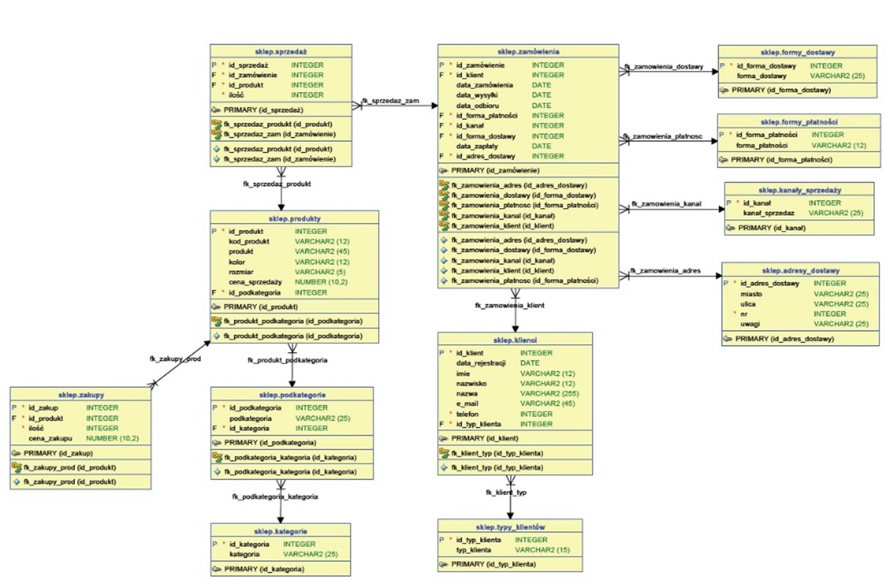

Witaj w Kursie SQL i MySQL!
Ten kurs przeprowadzi Cię od podstawowych pojęć baz danych aż po zaawansowane techniki SQL i specyfikę MySQL. Użyj menu po lewej stronie, aby nawigować między modułami i lekcjami.
Nasza Baza Danych Przykładowa: "Firma"
W trakcie tego kursu będziemy pracować na przykładowej bazie danych MySQL o nazwie "Firma". Została ona zaprojektowana, aby symulować typowe dane przechowywane w systemach HR (Zasobów Ludzkich) przedsiębiorstwa. Dzięki temu będziemy mogli pisać realistyczne zapytania i lepiej zrozumieć praktyczne zastosowanie SQL.
Struktura Bazy Danych
Baza "Firma" składa się z kilku powiązanych ze sobą tabel:
firma.pracownicy: Zawiera podstawowe dane o pracownikach (ID, imię, nazwisko, adres).firma.działy: Przechowuje listę działów firmy (ID, nazwa działu).firma.stanowiska: Zawiera listę stanowisk pracy (ID, nazwa stanowiska).firma.kadry: Kluczowa tabela łącząca pracowników z ich aktualnymi i historycznymi przydziałami do działów i stanowisk. Zawiera daty rozpoczęcia i zakończenia pracy na danym stanowisku/w dziale. Jest połączona z tabelamipracownicy,działyistanowiskaza pomocą kluczy obcych.firma.place: Przechowuje informacje o wynagrodzeniu podstawowym i premii dla każdego pracownika. Połączona z tabeląpracownicy.firma.pkt_oceny_pracownik: Zawiera wyniki (punkty) ocen okresowych pracowników. Połączona z tabeląpracownicy.
Schemat Bazy Danych
Poniższy diagram przedstawia strukturę bazy danych "Firma" oraz relacje (powiązania) między tabelami:

Zawarte Informacje
Tabele zostały wypełnione przykładowymi danymi, które obejmują fikcyjnych pracowników, różne działy i stanowiska, historię zatrudnienia, wynagrodzenia oraz wyniki ocen. Pozwoli nam to na ćwiczenie różnorodnych zapytań, takich jak:
- Wyszukiwanie pracowników według różnych kryteriów (dział, stanowisko, wynagrodzenie).
- Łączenie danych z wielu tabel (np. wyświetlanie nazwiska pracownika i nazwy jego działu).
- Agregowanie danych (np. obliczanie średniego wynagrodzenia w dziale).
- Filtrowanie i sortowanie wyników.
- Praca z datami (np. wyszukiwanie pracowników zatrudnionych w danym okresie).
Znajomość struktury tej bazy będzie kluczowa do efektywnego podążania za przykładami w dalszej części kursu.
1. Podstawowe pojęcia
Definiowanie i rozróżnianie pojęć
a) Definicja i omówienie zagadnienia
Zanim zaczniemy pisać jakiekolwiek zapytania w języku SQL, musimy zrozumieć podstawowe elementy składowe, z których zbudowana jest każda relacyjna baza danych. Te fundamentalne koncepcje tworzą strukturę, w której przechowujemy i organizujemy dane. Ich zrozumienie jest kluczowe do efektywnego projektowania baz danych i późniejszego odpytywania ich za pomocą SQL.
- Relacyjna Baza Danych (Relational Database): Jest to zorganizowany zbiór danych
przechowywanych w sposób ustrukturyzowany. Model relacyjny opiera się na matematycznej teorii
relacji (stąd nazwa) i przedstawia dane w formie tabel. Nasza przykładowa baza
Firmajest właśnie relacyjną bazą danych. - Tabela (Table): Podstawowa struktura przechowywania danych w relacyjnej bazie.
Składa się z kolumn (definiujących rodzaj danych) i wierszy
(reprezentujących konkretne wpisy/rekordy). Można ją sobie wyobrazić jako arkusz kalkulacyjny. W
naszej bazie
Firmaprzykładami tabel sąpracownicy,działy,stanowiska. - Kolumna (Column / Field / Atrybut): Pionowy element tabeli, definiujący konkretny
rodzaj informacji przechowywanej dla każdego rekordu. Każda kolumna ma swoją nazwę (np.
imie,nazwisko,data_przyjęcia) oraz określony typ danych (np. tekstowy, liczbowy, data). W tabelipracownicykolumnami sąid_prac,imie,nazwisko,adres. - Wiersz (Row / Record / Krotka): Poziomy element tabeli, reprezentujący pojedynczy,
kompletny wpis lub rekord danych. Zawiera wartości dla każdej kolumny zdefiniowanej w tabeli. Na
przykład, jeden wiersz w tabeli
pracownicyzawierałby ID, imię, nazwisko i adres jednego konkretnego pracownika. - Klucz Główny (Primary Key - PK): Jedna lub więcej kolumn, których wartość
jednoznacznie identyfikuje każdy wiersz w tabeli. Wartości w kolumnie(ach) klucza
głównego muszą być unikalne i nie mogą być puste (NULL). Klucz główny jest fundamentem integralności
danych i tworzenia relacji. W tabeli
pracownicykluczem głównym jestid_prac. - Klucz Obcy (Foreign Key - FK): Kolumna lub zestaw kolumn w jednej tabeli, których
wartości odpowiadają wartościom klucza głównego w innej tabeli. Klucz obcy służy do
tworzenia powiązań (relacji) między tabelami, zapewniając spójność referencyjną
(np. nie można przypisać pracownika do nieistniejącego działu). W tabeli
kadry, kolumnaid_pracjest kluczem obcym wskazującym na klucz głównyid_pracw tabelipracownicy. Podobnieid_działiid_stanowiskow tabelikadrysą kluczami obcymi. - Relacja (Relationship): Logiczne powiązanie między dwiema tabelami, zazwyczaj realizowane za pomocą kluczy głównych i obcych. Określa, w jaki sposób dane w jednej tabeli odnoszą się do danych w innej (np. jeden pracownik może mieć wiele wpisów w historii zatrudnienia - relacja jeden-do-wielu).
b) Składnia i elementy składowe
Omawiane tutaj pojęcia (tabela, kolumna, wiersz, klucze) są konceptami strukturalnymi, a nie bezpośrednimi komendami SQL posiadającymi własną składnię w sensie wykonywalnego zapytania.
Jednakże, te koncepty materializują się w składni SQL podczas definiowania struktury
bazy danych za pomocą poleceń DDL (Data Definition Language), głównie CREATE TABLE i
ALTER TABLE.
- W
CREATE TABLE: Definiujemy nazwę tabeli, nazwy kolumn, ich typy danych oraz określamy, które kolumny będą kluczem głównym (PRIMARY KEY) lub obcym (FOREIGN KEY).-- Ogólny przykład (niepełny) ilustrujący miejsce definicji CREATE TABLE nazwa_tabeli ( nazwa_kolumny1 typ_danych [ograniczenia, np. NOT NULL], nazwa_kolumny2 typ_danych, ... CONSTRAINT nazwa_pk PRIMARY KEY (nazwa_kolumny_pk), CONSTRAINT nazwa_fk FOREIGN KEY (nazwa_kolumny_fk) REFERENCES inna_tabela(inna_kolumna_pk) ); - W poleceniach DML (Data Manipulation Language) jak
SELECT,INSERT,UPDATE,DELETE, odnosimy się do tych struktur: wybieramy (SELECT) konkretne kolumny z tabeli, wstawiamy (INSERT) nowy wiersz itd.
c) Przykłady użycia (Ilustracja na bazie "Firma")
Zamiast typowych zapytań SQL, pokażemy jak te pojęcia odnoszą się do naszej bazy:
-
Pojęcie: Baza Danych
Ilustracja: Cały zbiór tabel (pracownicy,działy,stanowiska,kadry,place,pkt_oceny_pracownik) wraz z ich zawartością i relacjami tworzy bazę danychFirma.
Wyjaśnienie: Jest to kontener przechowujący wszystkie powiązane ze sobą dane dotyczące pracowników, struktury organizacyjnej i wynagrodzeń firmy. -
Pojęcie: Tabela
Ilustracja: Tabelafirma.działy
Wyjaśnienie: Tabela ta przechowuje informacje wyłącznie o działach istniejących w firmie. Składa się z kolumnid_dział|dział | --------+-------------+ 6|ADMINISTRACJA| 2|INFORMATYKA | 1|KADRY | ... |id_działidziałoraz wierszy reprezentujących poszczególne działy. -
Pojęcie: Kolumna
Ilustracja: Kolumnanazwiskow tabelifirma.pracownicy.
Wyjaśnienie: Definiuje ona, że dla każdego pracownika (wiersza) w tej tabeli będzie przechowywana informacja tekstowa (VARCHAR) reprezentująca jego nazwisko. -
Pojęcie: Wiersz
Ilustracja: Jeden wiersz z tabelifirma.pracownicy.
Wyjaśnienie: Ten konkretny wiersz reprezentuje jednego pracownika - Annę Nowak - i zawiera komplet informacji zdefiniowanych przez kolumny tabeliid_prac|imie |nazwisko |adres | -------+----------+------------+------------------------+ 2|Anna |Nowak |ul. Różana 2, Kraków |pracownicydla tej osoby. -
Pojęcie: Klucz Główny (Primary Key)
Ilustracja: Kolumnaid_pracw tabelifirma.pracownicy.
Wyjaśnienie: Wartość w tej kolumnie (np. 1, 2, 3...) jednoznacznie identyfikuje każdego pracownika. Nie może być dwóch pracowników z tym samymid_prac, a każdy pracownik musi je posiadać. Pozwala to na precyzyjne odwoływanie się do konkretnego rekordu. -
Pojęcie: Klucz Obcy (Foreign Key)
Ilustracja: Kolumnaid_pracw tabelifirma.place.
Wyjaśnienie: Wartość w tej kolumnie w tabeliplace(np. 5) musi odpowiadać istniejącej wartości w kolumnieid_prac(kluczu głównym) tabelipracownicy. Tworzy to relację: ten wpis płacowy dotyczy pracownika oid_prac = 5z tabelipracownicy. Zapobiega to sytuacji, gdzie mielibyśmy dane płacowe dla "nieistniejącego" pracownika. -
Pojęcie: Relacja
Ilustracja: Powiązanie międzyfirma.pracownicyafirma.kadrypoprzezid_prac.
Wyjaśnienie: Jeden pracownik (jeden wiersz wpracownicy) może mieć wiele wpisów w tabelikadry(np. jeśli zmieniał stanowiska lub działy). Klucz obcyid_pracwkadrypozwala połączyć te wpisy z konkretnym pracownikiem. Jest to przykład relacji jeden-do-wielu (one-to-many).
d) Rozszerzenia i uwagi
- Typy danych: Wybór odpowiedniego typu danych dla kolumny (np.
INTdla liczb całkowitych,VARCHAR(255)dla tekstów o zmiennej długości do 255 znaków,DATEdla daty,DECIMALdla kwot pieniężnych) jest fundamentalny. Wpływa na zajmowane miejsce, dozwolone operacje i poprawność danych. - Integralność: Klucze Główne i Obce są kręgosłupem integralności danych w bazie relacyjnej. Zapewniają unikalność identyfikatorów i spójność powiązań między tabelami. Zawsze definiuj klucze!
- Nazewnictwo: Stosuj spójne i opisowe nazwy dla tabel i kolumn (np. używanie
id_nazwaTabelidla kluczy głównych, unikanie spacji, polskich znaków w nazwach technicznych). Ułatwia to zrozumienie schematu i pisanie zapytań. W naszej bazieFirmaprzyjęto konwencję z podkreślnikami (id_prac,data_przyjęcia). - NULL: Wartość
NULLoznacza brak informacji (nie mylić z zerem czy pustym ciągiem znaków). Zrozumienie jak działaNULLjest ważne, ale o tym więcej w kolejnych modułach. OgraniczenieNOT NULLna kolumnie wymusza podanie wartości. - Projektowanie: Te podstawowe pojęcia są punktem wyjścia do projektowania schematu bazy danych. Dobre zaprojektowanie struktury tabel i relacji przed wprowadzeniem danych jest kluczowe dla wydajności i łatwości zarządzania bazą w przyszłości.
Koncepcja integralności danych i normalizacji
a) Definicja i omówienie zagadnienia
Integralność danych (Data Integrity) odnosi się do utrzymania i zapewnienia **dokładności, spójności i wiarygodności** danych przez cały ich cykl życia w bazie danych. Oznacza to, że dane są poprawne, kompletne i nie zawierają sprzeczności. W bazach relacyjnych wyróżniamy główne typy integralności:
- Integralność encji (Entity Integrity): Zapewnia, że każdy wiersz w tabeli jest
unikalnie identyfikowalny. Realizowana jest głównie poprzez **klucz główny (Primary Key)**, który
nie może przyjmować wartości NULL i musi być unikalny. W tabeli
firma.pracownicy,id_praczapewnia integralność encji – każdy pracownik jest jednoznacznie identyfikowany. - Integralność referencyjna (Referential Integrity): Gwarantuje, że relacje między
tabelami są zawsze poprawne. Oznacza to, że **klucz obcy (Foreign Key)** w jednej tabeli musi
odpowiadać istniejącej wartości klucza głównego w innej tabeli lub mieć wartość NULL (jeśli
dozwolone). Zapobiega to "osieroconym" rekordom. Np. w tabeli
firma.kadrywartośćid_działmusi istnieć w tabelifirma.działy. - Integralność dziedziny (Domain Integrity): Zapewnia, że wartości wprowadzane do
kolumny są zgodne z jej zdefiniowanym **typem danych, formatem i zakresem**. Realizowana jest przez
typy danych (np. nie wstawisz tekstu do kolumny liczbowej), ograniczenia
CHECK(np. wynagrodzenie > 0),NOT NULL(wymusza podanie wartości) czyUNIQUE(zapewnia unikalność wartości w kolumnie innej niż PK).
Normalizacja (Normalization) to systematyczny proces **organizowania danych w bazie danych w celu zmniejszenia redundancji (powtarzania danych) i poprawy integralności danych**. Głównym celem normalizacji jest podział dużych tabel na mniejsze, dobrze ustrukturyzowane tabele oraz zdefiniowanie relacji między nimi. Pozwala to uniknąć tzw. **anomalii** podczas manipulowania danymi:
- Anomalii wstawiania (Insertion Anomaly): Problem z dodaniem nowego rekordu, jeśli brakuje części danych (np. nie można dodać nowego działu, jeśli nie ma jeszcze w nim pracownika, a dane działu i pracownika są w jednej tabeli).
- Anomalii usuwania (Deletion Anomaly): Niezamierzona utrata danych przy usuwaniu rekordu (np. usunięcie ostatniego pracownika z działu powoduje utratę informacji o samym dziale, jeśli dane są w jednej tabeli).
- Anomalii modyfikacji (Update Anomaly): Konieczność zmiany tych samych danych w wielu miejscach, co zwiększa ryzyko niespójności (np. zmiana nazwy działu wymagałaby aktualizacji we wszystkich wierszach pracowników tego działu, jeśli nazwa działu jest powielana).
b) Składnia i elementy składowe
Integralność danych jest egzekwowana w bazie danych głównie za pomocą **ograniczeń (Constraints)**.
Definiuje się je podczas tworzenia tabeli (CREATE TABLE) lub dodaje do istniejącej tabeli
(ALTER TABLE).
Najważniejsze ograniczenia służące zapewnieniu integralności to:
PRIMARY KEY: Zapewnia integralność encji (unikalność i NOT NULL).FOREIGN KEY: Zapewnia integralność referencyjną (powiązania między tabelami).UNIQUE: Zapewnia unikalność wartości w kolumnie (lub zestawie kolumn), która nie jest kluczem głównym.NOT NULL: Wymusza, aby kolumna zawsze zawierała wartość (nie może być NULL).CHECK: Weryfikuje, czy wartość w kolumnie spełnia określony warunek logiczny.
-- Przykład definicji ograniczeń przy tworzeniu tabeli
CREATE TABLE firma.kadry (
id_kadry INT NOT NULL PRIMARY KEY,
id_prac INT NOT NULL,
id_dział INT, -- Może być NULL, jeśli pracownik nie ma przypisanego działu
id_stanowisko INT NOT NULL,
data_przyjęcia DATE NOT NULL,
data_zakończenia DATE,
-- Ograniczenie klucza obcego dla pracownika
CONSTRAINT fk_kadry_pracownik FOREIGN KEY (id_prac)
REFERENCES firma.pracownicy(id_prac)
ON DELETE RESTRICT -- Opcjonalnie: co robić przy usuwaniu pracownika
ON UPDATE CASCADE, -- Opcjonalnie: co robić przy aktualizacji id_prac pracownika
-- Ograniczenie klucza obcego dla działu
CONSTRAINT fk_kadry_dział FOREIGN KEY (id_dział)
REFERENCES firma.działy(id_dział),
-- Ograniczenie klucza obcego dla stanowiska
CONSTRAINT fk_kadry_stanowisko FOREIGN KEY (id_stanowisko)
REFERENCES firma.stanowiska(id_stanowisko),
-- Ograniczenie sprawdzające (przykład)
CONSTRAINT chk_daty CHECK (data_zakończenia IS NULL OR data_zakończenia >= data_przyjęcia)
);Normalizacja nie jest bezpośrednio komendą SQL, lecz **procesem projektowania** struktury bazy danych.
c) Przykłady użycia (Ilustracja koncepcyjna)
-
Naruszenie integralności referencyjnej (bez FK):
Tabela wynikowa (błąd): Jeśli istnieje ograniczenie-- Próba dodania wpisu do kadr dla nieistniejącego pracownika (id_prac = 999) INSERT INTO firma.kadry (id_kadry, id_prac, id_dział, id_stanowisko, data_przyjęcia) VALUES (100, 999, 2, 3, '2024-01-01');FOREIGN KEY, baza danych zwróci błąd i nie pozwoli na wykonanie operacji, chroniąc spójność. Bez FK, rekord zostałby dodany, tworząc "osierocony" wpis.
Wyjaśnienie: Ograniczenie FK naid_pracw tabelikadrysprawdza, czy wartość999istnieje w kolumnieid_practabelipracownicy. -
Naruszenie integralności encji (bez PK):
Tabela wynikowa (błąd): Ograniczenie-- Próba dodania pracownika z tym samym id_prac co istniejący (id_prac = 1) INSERT INTO firma.pracownicy (id_prac, imie, nazwisko) VALUES (1, 'Kolejny', 'Jan');PRIMARY KEYnaid_praczapobiegnie tej operacji, zgłaszając błąd naruszenia unikalności.
Wyjaśnienie: Klucz główny musi jednoznacznie identyfikować każdy wiersz. -
Naruszenie integralności dziedziny:
Tabela wynikowa (błąd): Baza danych zgłosi błąd konwersji typów, ponieważ kolumna-- Próba wstawienia tekstu do kolumny numerycznej wynagrodzenie UPDATE firma.place SET wynagrodzenie = 'wysokie' WHERE id_prac = 2;wynagrodzenieoczekuje wartości liczbowej (np. INT).
Wyjaśnienie: Typ danych kolumny definiuje dozwolone wartości. -
Problem redundancji (przed normalizacją): Wyobraźmy sobie tabelę
PracownicyDziały:
Wyjaśnienie: Nazwa działu i nazwisko szefa powtarzają się dla każdego pracownika działu. Jeśli zmieni się szef działu Sprzedaż, trzeba zaktualizować wiele wierszy (ryzyko błędu - anomalia modyfikacji). Nie można dodać nowego działu bez przypisania pracownika (anomalia wstawiania). Usunięcie ostatniego pracownika z Marketingu usunie informację o tym dziale i jego szefie (anomalia usuwania).id_prac|imie |nazwisko|nazwa_działu |szef_działu| --------+-----+--------+-------------+-----------+ 1|Jan |Kowalski|SPRZEDAŻ |Anna Nowak | 2|Adam |Nowak |SPRZEDAŻ |Anna Nowak | 3|Ewa |Wiśnia |MARKETING |Piotr Zet | -
Rozwiązanie przez normalizację (np. do 3NF): Podział na tabele:
firma.pracownicy(id_prac, imie, nazwisko)firma.działy(id_dział, dział, szef_działu)
Wyjaśnienie: Dane o dziale są przechowywane tylko raz w tabelifirma.kadry(id_kadry, id_prac, id_dział, id_stanowisko, ...)działy. Powiązanie pracownika z działem realizowane jest przez klucz obcyid_działw tabelikadry. Zmiana szefa działu wymaga modyfikacji tylko jednego rekordu w tabelidziały. Można dodawać działy niezależnie od pracowników. Usunięcie pracownika nie usuwa danych o dziale.
d) Rozszerzenia i uwagi
- Kluczowe dla jakości danych: Dbanie o integralność i odpowiedni poziom normalizacji jest fundamentalne dla tworzenia niezawodnych i łatwych w utrzymaniu systemów bazodanowych.
- Poziomy normalizacji (Postaci Normalne): Istnieje kilka zdefiniowanych postaci
normalnych (1NF, 2NF, 3NF, BCNF, 4NF, 5NF). Najczęściej dąży się do osiągnięcia **Trzeciej Postaci
Normalnej (3NF)**, która eliminuje większość typowych anomalii i stanowi dobry kompromis między
redukcją redundancji a złożonością struktury.
- 1NF: Każda komórka tabeli zawiera pojedynczą (atomową) wartość, a tabela nie zawiera powtarzających się grup kolumn.
- 2NF: Tabela jest w 1NF i wszystkie kolumny niebędące częścią klucza głównego są w pełni zależne funkcyjnie od *całego* klucza głównego (eliminuje zależności częściowe).
- 3NF: Tabela jest w 2NF i nie ma zależności przechodnich (transitive dependencies) - żadna kolumna niebędąca kluczem nie zależy od innej kolumny niebędącej kluczem.
- Denormalizacja: Czasami, w celu optymalizacji wydajności zapytań (np. uniknięcia wielu złączeń JOIN), celowo wprowadza się pewną kontrolowaną redundancję danych. Nazywa się to **denormalizacją**. Powinno to być jednak robione świadomie i z rozwagą, gdyż może prowadzić do problemów z integralnością, jeśli nie jest odpowiednio zarządzane.
- Wpływ na wydajność: Ograniczenia integralności (zwłaszcza klucze obce) dodają pewien narzut przy operacjach modyfikacji danych (INSERT, UPDATE, DELETE), ponieważ baza musi sprawdzać warunki. Jest to jednak koszt akceptowalny w zamian za gwarancję spójności danych.
Typy relacji między tabelami
a) Definicja i omówienie zagadnienia
W relacyjnych bazach danych, **relacja (relationship)** opisuje logiczne powiązanie między dwiema tabelami. Pozwala na odzwierciedlenie związków istniejących między różnymi obiektami (encjami) w świecie rzeczywistym, które modelujemy w bazie (np. pracownik pracuje w dziale, pracownik zajmuje stanowisko). Relacje są fundamentalne dla organizacji danych, unikania redundancji i efektywnego odpytywania bazy.
Relacje opierają się na mechanizmie **kluczy głównych (Primary Key - PK)** i **kluczy obcych (Foreign Key - FK)**. Klucz obcy w jednej tabeli wskazuje na klucz główny w drugiej tabeli, tworząc w ten sposób formalne powiązanie.
Wyróżniamy trzy podstawowe typy relacji między tabelami:
- Relacja jeden-do-jednego (One-to-One, 1:1): Każdy rekord w Tabeli A może być powiązany z **co najwyżej jednym** rekordem w Tabeli B, i odwrotnie, każdy rekord w Tabeli B może być powiązany z **co najwyżej jednym** rekordem w Tabeli A. Jest to stosunkowo rzadki typ relacji, często używany do podziału tabeli z dużą liczbą kolumn lub do odseparowania danych o różnym poziomie wrażliwości.
- Relacja jeden-do-wielu (One-to-Many, 1:N): Każdy rekord w Tabeli A (po stronie "jeden") może być powiązany z **wieloma** rekordami w Tabeli B (po stronie "wiele"), ale każdy rekord w Tabeli B jest powiązany z **co najwyżej jednym** rekordem w Tabeli A. Jest to najczęstszy typ relacji. Przykład: jeden dział może mieć wielu pracowników, ale każdy pracownik (w danym momencie) należy do jednego działu.
- Relacja wiele-do-wielu (Many-to-Many, N:M): Każdy rekord w Tabeli A może być powiązany z **wieloma** rekordami w Tabeli B, i jednocześnie każdy rekord w Tabeli B może być powiązany z **wieloma** rekordami w Tabeli A. Tego typu relacji nie da się zaimplementować bezpośrednio między dwiema tabelami za pomocą PK/FK. Wymaga ona wprowadzenia **tabeli łączącej (junction/linking table)**, która zawiera klucze obce do obu powiązanych tabel. Przykład: jeden student może uczęszczać na wiele kursów, a na jeden kurs może uczęszczać wielu studentów.
b) Składnia i elementy składowe
Implementacja relacji w SQL odbywa się poprzez definicję ograniczeń klucza obcego
(FOREIGN KEY):
- Relacja 1:N (Jeden-do-Wielu): Klucz obcy definiuje się w tabeli po stronie "wiele",
wskazując na klucz główny tabeli po stronie "jeden". To standardowa implementacja.
-- Tabela po stronie "jeden" (np. działy) CREATE TABLE firma.działy ( id_dział INT PRIMARY KEY, dział VARCHAR(255) NOT NULL -- ... inne kolumny ... ); -- Tabela po stronie "wiele" (np. pracownicy - uproszczony przykład) CREATE TABLE firma.pracownicy_uproszczone ( id_prac INT PRIMARY KEY, nazwisko VARCHAR(255) NOT NULL, -- Klucz obcy wskazujący na dział id_dział_fk INT, CONSTRAINT fk_pracownik_dział FOREIGN KEY (id_dział_fk) REFERENCES firma.działy(id_dział) ); - Relacja 1:1 (Jeden-do-Jednego): Można ją zrealizować na kilka sposobów:
- Umieszczenie klucza obcego w jednej z tabel, wskazującego na PK drugiej, i dodanie
ograniczenia
UNIQUEna kolumnie klucza obcego. - Użycie tego samego klucza głównego w obu tabelach, gdzie w jednej tabeli jest on jednocześnie kluczem obcym wskazującym na PK drugiej.
-- Tabela Pracownicy CREATE TABLE firma.pracownicy ( id_prac INT PRIMARY KEY, nazwisko VARCHAR(255) -- ... ); -- Tabela z dodatkowymi, opcjonalnymi danymi (np. dane poufne) CREATE TABLE firma.dane_poufne ( id_prac_fk INT PRIMARY KEY, -- Ten sam PK co w pracownicy i jednocześnie FK numer_konta VARCHAR(30) UNIQUE, -- Dodatkowe pole CONSTRAINT fk_poufne_pracownik FOREIGN KEY (id_prac_fk) REFERENCES firma.pracownicy(id_prac) ); - Umieszczenie klucza obcego w jednej z tabel, wskazującego na PK drugiej, i dodanie
ograniczenia
- Relacja N:M (Wiele-do-Wielu): Wymaga tabeli pośredniczącej (łączącej).
-- Tabela Projekty CREATE TABLE firma.projekty ( id_projekt INT PRIMARY KEY, nazwa_projektu VARCHAR(255) NOT NULL ); -- Tabela Pracownicy (jak wcześniej) -- ... -- Tabela łącząca Pracownicy_Projekty CREATE TABLE firma.pracownicy_projekty ( id_prac_fk INT NOT NULL, id_projekt_fk INT NOT NULL, -- Klucz główny złożony z obu kluczy obcych PRIMARY KEY (id_prac_fk, id_projekt_fk), -- Klucze obce CONSTRAINT fk_pp_pracownik FOREIGN KEY (id_prac_fk) REFERENCES firma.pracownicy(id_prac), CONSTRAINT fk_pp_projekt FOREIGN KEY (id_projekt_fk) REFERENCES firma.projekty(id_projekt) );
c) Przykłady użycia (Ilustracja na bazie "Firma")
-
Relacja 1:N (Jeden Dział -> Wielu Pracowników w historii kadr)
Tabele:firma.działy(1) ifirma.kadry(N)
Powiązanie:firma.działy.id_dział(PK) <--firma.kadry.id_dział(FK)
Wyjaśnienie: Jeden dział (np. Informatyka, id_dział=2) może pojawić się wiele razy w tabelikadry, ponieważ wielu pracowników mogło (lub może) pracować w tym dziale na przestrzeni czasu. Każdy wpis wkadrydotyczy jednak tylko jednego działu (lub braku działu, jeśli FK dopuszcza NULL).
Przykładowy wynik (fragment):-- Zapytanie ilustrujące (pokazuje pracowników działu Informatyka z tabeli kadry) SELECT k.id_kadry, k.id_prac, d.dział FROM firma.kadry k JOIN firma.działy d ON k.id_dział = d.id_dział WHERE d.dział = 'INFORMATYKA';id_kadry|id_prac|dział | --------+-------+-----------+ 2| 2|INFORMATYKA| 12| 12|INFORMATYKA| 22| 22|INFORMATYKA| 32| 32|INFORMATYKA| ...| ...|... | -
Relacja 1:N (Jeden Pracownik -> Wiele Wpisów Płacowych/Ocen - teoretycznie)
Tabele:firma.pracownicy(1) ifirma.place(N) /firma.pkt_oceny_pracownik(N)
Powiązanie:firma.pracownicy.id_prac(PK) <--firma.place.id_prac(FK) /firma.pkt_oceny_pracownik.id_prac(FK)
Wyjaśnienie: W obecnej strukturze, pracownik ma tylko jeden wpis wplaceipkt_oceny_pracownik(co bardziej przypomina relację 1:1), ale gdybyśmy przechowywali historię wynagrodzeń lub ocen (np. dodając kolumnę z datą), jeden pracownik mógłby mieć wiele rekordów w tych tabelach. Klucz obcyid_pracwplace/pkt_oceny_pracownikłączy wpis z konkretnym pracownikiem.
Wynik:-- Zapytanie pokazujące wynagrodzenie pracownika o id=6 SELECT p.imie, p.nazwisko, pl.wynagrodzenie, pl.premia FROM firma.pracownicy p JOIN firma.place pl ON p.id_prac = pl.id_prac WHERE p.id_prac = 6;imie |nazwisko|wynagrodzenie|premia| ---------+--------+-------------+------+ Agnieszka|Kamińska| 3500| 1700| -
Relacja 1:1 (Jeden Pracownik -> Jeden Aktualny Wpis Płacowy)
Tabele:firma.pracownicy(1) ifirma.place(1) (w obecnym stanie danych)
Powiązanie:firma.pracownicy.id_prac(PK) <--firma.place.id_prac(FK, który *mógłby* mieć ograniczenie UNIQUE, gdybyśmy chcieli formalnie wymusić 1:1)
Wyjaśnienie: Choć formalnie zaimplementowana jako 1:N, obecna struktura i dane sugerują, że każdy pracownik ma dokładnie jeden rekord płacowy. Aby to była ścisła relacja 1:1, kolumnaid_pracw tabeliplacepowinna być nie tylko kluczem obcym, ale również posiadać ograniczenieUNIQUE(lub być kluczem głównym tej tabeli, jak w przykładzie składni dla 1:1). -
Relacja N:M (Wiele Pracowników <-> Wiele Stanowisk - przez historię w Kadrach)
Tabele:firma.pracownicy(N),firma.stanowiska(M), Tabela łącząca:firma.kadry
Powiązanie:firma.pracownicy.id_prac<--firma.kadry.id_prac(FK),firma.stanowiska.id_stanowisko<--firma.kadry.id_stanowisko(FK)
Wyjaśnienie: Jeden pracownik mógł w swojej karierze zajmować wiele różnych stanowisk (np. pracownik o id=6 był na stanowisku id=6, a potem na id=4). Jednocześnie, jedno stanowisko (np. Referent, id=1) mogło być zajmowane przez wielu różnych pracowników. Tabelakadrypełni rolę tabeli łączącej, przechowując historię przypisań pracownika do stanowiska (i działu) w czasie. Każdy wiersz wkadryreprezentuje jedno konkretne przypisanie.
Wynik:-- Pokaż historię stanowisk pracownika o id=6 SELECT p.nazwisko, s.stanowisko, k.data_przyjęcia, k.data_zakończenia FROM firma.kadry k JOIN firma.pracownicy p ON k.id_prac = p.id_prac JOIN firma.stanowiska s ON k.id_stanowisko = s.id_stanowisko WHERE p.id_prac = 6;nazwisko|stanowisko |data_przyjęcia|data_zakończenia| --------+---------------+--------------+----------------+ Kamińska|st. ekspert | 2006-06-06| | Kamińska|st. specjalista| 2010-10-10| |
Przykładowy wynik (fragment):-- Pokaż pracowników, którzy kiedykolwiek byli na stanowisku 'referent' (id=1) SELECT DISTINCT p.imie, p.nazwisko FROM firma.kadry k JOIN firma.pracownicy p ON k.id_prac = p.id_prac WHERE k.id_stanowisko = 1;imie |nazwisko | -----------+-----------+ Jan |Kowalski | Michał |Lewandowski| Grzegorz |Jankowski | Krzysztof |Pawłowski | ... |... |
d) Rozszerzenia i uwagi
- Kardynalność i Opcjonalność: Oprócz typu relacji (1:1, 1:N, N:M), ważne jest też
określenie **kardynalności** (ile dokładnie rekordów może być powiązanych) i **opcjonalności** (czy
powiązanie jest wymagane). Opcjonalność kontroluje się poprzez zezwolenie (lub nie) na wartość
NULLw kolumnie klucza obcego. Jeśli FK może byćNULL, oznacza to, że rekord w tabeli zawierającej FK nie musi być powiązany z rekordem w tabeli wskazywanej przez PK. - Wybór właściwego typu: Prawidłowe zidentyfikowanie i zaimplementowanie typu relacji jest kluczowe dla poprawnego modelowania rzeczywistości i integralności danych. Błędne założenia (np. implementacja 1:N tam, gdzie powinno być N:M) prowadzą do problemów z przechowywaniem i odpytywaniem danych.
- Tabela łącząca (Junction Table): Pamiętaj, że relacje N:M zawsze wymagają dodatkowej tabeli. Tabela ta często zawiera tylko dwa klucze obce (tworzące złożony klucz główny), ale może też zawierać dodatkowe atrybuty opisujące samą relację (np. data przypisania pracownika do projektu w przykładzie składni).
- Wpływ na zapytania (JOIN): Zrozumienie relacji jest niezbędne do poprawnego
używania operacji
JOINw zapytaniach SQL, które służą do łączenia danych z wielu powiązanych tabel. Rodzaj użytegoJOIN(INNER,LEFT,RIGHT) zależy od tego, jakie dane chcemy uzyskać w kontekście istniejących relacji. - Narzędzia do modelowania: Istnieją narzędzia graficzne (np. wbudowane w MySQL Workbench, dbeaver lub zewnętrzne jak draw.io, Lucidchart), które pomagają wizualizować schemat bazy danych i relacje między tabelami (tak jak diagram, który przedstawiłeś na początku).
Najlepsze Praktyki: Podstawowe Pojęcia i Projektowanie
a) Definicja i omówienie zagadnienia
Stosowanie **najlepszych praktyk (best practices)** już na etapie zrozumienia podstawowych pojęć i projektowania struktury bazy danych jest kluczowe dla stworzenia systemu, który będzie **wydajny, łatwy w utrzymaniu, skalowalny i odporny na błędy**. Dobre praktyki nie są sztywnymi regułami, ale zbiorem sprawdzonych wskazówek i konwencji, które pomagają unikać typowych problemów i tworzyć bardziej profesjonalne rozwiązania.
Najważniejsze obszary, na które należy zwrócić uwagę na tym wczesnym etapie, to:
- Spójne i zrozumiałe nazewnictwo: Wybieranie jasnych i konsekwentnych nazw dla baz danych, tabel, kolumn, kluczy i innych obiektów.
- Właściwy dobór typów danych: Używanie najbardziej odpowiednich typów danych dla przechowywanych informacji, biorąc pod uwagę zakres wartości, precyzję i zajmowane miejsce.
- Jawne definiowanie kluczy: Zawsze definiowanie kluczy głównych (PK) dla każdej tabeli i kluczy obcych (FK) dla wszystkich relacji w celu zapewnienia integralności danych.
- Normalizacja (z umiarem): Stosowanie zasad normalizacji (zazwyczaj do 3NF) w celu redukcji redundancji i unikania anomalii, ale z uwzględnieniem potencjalnego wpływu na wydajność (ewentualna denormalizacja).
- Planowanie przyszłego rozwoju: Przewidywanie potencjalnych przyszłych potrzeb i projektowanie struktury w sposób umożliwiający łatwiejsze rozszerzanie.
- Dokumentacja: Utrzymywanie dokumentacji opisującej strukturę bazy, znaczenie kolumn, relacje i przyjęte konwencje.
b) Składnia i elementy składowe
Najlepsze praktyki projektowe nie mają własnej, dedykowanej składni SQL. Są to raczej **zasady i
wytyczne**, które wpływają na sposób, w jaki piszemy polecenia DDL (Data Definition Language), takie jak
CREATE TABLE, ALTER TABLE, oraz DML (Data Manipulation Language), jak
SELECT czy INSERT.
Przykładowo:
- Dobra praktyka nazewnictwa wpłynie na nazwy użyte w
CREATE TABLE nazwa_tabeli (...). - Wybór typów danych zmaterializuje się w definicjach kolumn:
nazwa_kolumny TYP_DANYCH. - Definiowanie kluczy jest realizowane przez klauzule
PRIMARY KEYiFOREIGN KEYwCREATE TABLElubALTER TABLE.
Przestrzeganie tych praktyk sprawia, że generowany kod SQL jest bardziej czytelny, spójny i mniej podatny na błędy.
c) Przykłady użycia (Ilustracje dobrych i złych praktyk)
-
Nazewnictwo:
Dobra praktyka: Używanie spójnego stylu (np. `snake_case` jak w bazie `Firma`:id_prac,data_przyjęcia) lub `camelCase`. Nazwy powinny być opisowe, ale niezbyt długie. Unikanie polskich znaków i spacji w nazwach obiektów.
Zła praktyka: Niespójne nazwy, skróty, nazwy nieopisowe, używanie słów kluczowych SQL jako nazw, mieszanie stylów.-- Dobrze: CREATE TABLE firma.historia_zatrudnienia ( ... ); -- Dobrze: SELECT data_przyjecia FROM firma.kadry;-- Źle: CREATE TABLE TblPrac (PracID INT, Im VARCHAR(50)); -- Niejasne skróty -- Źle: SELECT data FROM kadry; -- 'data' może być mylące, a także słowem kluczowym -
Typy danych:
Dobra praktyka: Wybór typu adekwatnego do danych. Np. dla statusu Aktywny/Nieaktywny użyćBOOLEANlubTINYINT(1), dla kwot pieniężnychDECIMAL(10, 2), dla krótkich kodów stałej długościCHAR(N), dla datyDATElubDATETIME.
Zła praktyka: Przechowywanie dat jako tekst (-- Dobrze: wynagrodzenie DECIMAL(10, 2) NOT NULL, data_urodzenia DATE, aktywny BOOLEAN DEFAULT TRUEVARCHAR), używanieVARCHARdla liczb, używanie zbyt dużych typów (np.BIGINTdla liczby pracowników w małej firmie).-- Źle: data_przyjecia VARCHAR(10), -- Problemy z sortowaniem i obliczeniami na datach wiek VARCHAR(3), -- Powinno być INT lub obliczane na podstawie daty urodzenia pensja FLOAT -- Problemy z precyzją dla wartości pieniężnych, lepiej DECIMAL -
Definiowanie kluczy:
Dobra praktyka: Każda tabela powinna mieć jawnie zdefiniowanyPRIMARY KEY. Wszystkie relacje powinny być zaimplementowane za pomocąFOREIGN KEYz odpowiednimi opcjami (np.ON DELETE,ON UPDATE).
Zła praktyka: Brak kluczy głównych (trudność w identyfikacji rekordów), brak kluczy obcych (ryzyko niespójnych danych, "osieroconych" rekordów).-- Dobrze (fragment tabeli kadry): CREATE TABLE firma.kadry ( id_kadry INT PRIMARY KEY, id_prac INT NOT NULL, -- ... CONSTRAINT fk_kadry_pracownik FOREIGN KEY (id_prac) REFERENCES firma.pracownicy(id_prac) ON DELETE RESTRICT -- Ochrona przed usunięciem pracownika mającego historię ); -
Normalizacja:
Dobra praktyka: Struktura bazy `Firma` jest przykładem zastosowania normalizacji (dane o pracowniku, dziale, stanowisku są w osobnych tabelach, połączone przezkadry). Zmniejsza to redundancję. Zła praktyka: Trzymanie wszystkich informacji w jednej, dużej tabeli (jak w przykładzie "Problem redundancji" w poprzednim punkcie o normalizacji), co prowadzi do anomalii. -
Unikanie `SELECT *`:
Dobra praktyka: Jawne wymienianie kolumn potrzebnych w zapytaniuSELECT. Poprawia czytelność, zmniejsza ilość przesyłanych danych i uniezależnia zapytanie od przyszłych zmian w strukturze tabeli (dodania/usunięcia kolumn).
Zła praktyka: Używanie-- Dobrze: SELECT id_prac, imie, nazwisko FROM firma.pracownicy WHERE id_prac = 10;SELECT *w kodzie produkcyjnym.
Wyjaśnienie: Chociaż-- Źle (w kodzie aplikacji): SELECT * FROM firma.pracownicy WHERE id_prac = 10;SELECT *jest wygodne do szybkiego podglądu danych, w aplikacjach może powodować problemy wydajnościowe i błędy, jeśli struktura tabeli ulegnie zmianie.
d) Rozszerzenia i uwagi
- Konsekwencja jest kluczem: Nawet jeśli wybrana konwencja nazewnictwa nie jest idealna, ważniejsze jest, aby stosować ją konsekwentnie w całej bazie danych.
- Komentarze w kodzie SQL: W bardziej złożonych skryptach DDL lub zapytaniach DML
warto dodawać komentarze (
-- komentarz jednoliniowylub/* komentarz wieloliniowy */) wyjaśniające logikę lub cel danego fragmentu. - Dokumentacja schematu: Utrzymuj aktualną dokumentację opisującą tabele, kolumny, ich znaczenie, typy danych, relacje i nałożone ograniczenia. Może to być plik tekstowy, diagram ERD (Entity-Relationship Diagram) lub opis w narzędziu do zarządzania bazą.
- Projektowanie iteracyjne: Schemat bazy danych rzadko jest idealny od samego
początku. Bądź przygotowany na modyfikacje i refaktoryzację struktury w miarę rozwoju aplikacji i
pojawiania się nowych wymagań, używając polecenia
ALTER TABLE. - Testowanie: Zanim wdrożysz strukturę bazy na produkcji, przetestuj ją pod kątem poprawności, integralności i wydajności.
2. Rodzaje baz danych
Świat baz danych nie ogranicza się tylko do modelu relacyjnego, który poznaliśmy. Istnieje wiele różnych typów baz danych, zoptymalizowanych do rozwiązywania odmiennych problemów. Zrozumienie tych różnic pomoże Ci wybrać odpowiednie narzędzie do konkretnego zadania.
Relacyjne bazy danych (RDBMS) vs. nierelacyjne (NoSQL)
a) Definicja i omówienie zagadnienia
Dwa główne paradygmaty w świecie baz danych to bazy relacyjne (RDBMS) i nierelacyjne (często określane jako NoSQL).
- Relacyjne Systemy Zarządzania Bazami Danych (RDBMS - Relational Database Management
Systems): To dominujący typ baz danych przez dziesięciolecia. Opierają się na modelu
relacyjnym, przechowując dane w **ustrukturyzowanych tabelach** z predefiniowanymi schematami
(kolumnami i typami danych). Relacje między tabelami są definiowane za pomocą kluczy. Używają języka
**SQL (Structured Query Language)** do manipulacji i odpytywania danych. Kładą silny nacisk na
**integralność danych** i właściwości **ACID** (Atomicity, Consistency, Isolation, Durability),
gwarantujące niezawodność transakcji. Przykłady: MySQL (którego używamy w kursie z bazą
Firma), PostgreSQL, Oracle, SQL Server, SQLite. - Nierelacyjne Bazy Danych (NoSQL - "Not Only SQL"): Ta szeroka kategoria obejmuje różne typy baz danych, które nie opierają się na tradycyjnym modelu tabelarycznym RDBMS. Powstały w odpowiedzi na potrzeby aplikacji internetowych na dużą skalę (Big Data), wymagających wysokiej **skalowalności, elastyczności schematu i wydajności**. Modele danych w NoSQL są zróżnicowane (dokumentowe, klucz-wartość, kolumnowe, grafowe). Zazwyczaj oferują **elastyczne schematy**, co ułatwia rozwój i obsługę zmieniających się danych. Skalowalność jest często realizowana **horyzontalnie** (dodawanie kolejnych serwerów). Wiele systemów NoSQL preferuje model spójności **BASE** (Basically Available, Soft state, Eventually consistent) nad ścisłym ACID, akceptując tymczasową niespójność danych w zamian za większą dostępność i wydajność. Przykłady: MongoDB, Cassandra, Redis, Neo4j, Couchbase, DynamoDB.
b) Elementy składowe (Kluczowe różnice koncepcyjne)
- Model Danych:
- RDBMS: Tabele z wierszami i kolumnami.
- NoSQL: Zróżnicowany (dokumenty, pary klucz-wartość, rodziny kolumn, grafy).
- Schemat:
- RDBMS: Sztywny, predefiniowany (schema-on-write).
- NoSQL: Dynamiczny, elastyczny (schema-on-read lub bezschematowy).
- Język zapytań:
- RDBMS: SQL (standardowy).
- NoSQL: Zróżnicowane API, często specyficzne dla danej bazy (choć niektóre oferują języki zbliżone do SQL).
- Skalowalność:
- RDBMS: Tradycyjnie skalowanie pionowe (mocniejszy serwer), choć nowoczesne RDBMS też skalują się poziomo.
- NoSQL: Zazwyczaj projektowane z myślą o łatwym skalowaniu poziomym (klastrowanie).
- Spójność:
- RDBMS: Silna spójność (model ACID).
- NoSQL: Często spójność ostateczna (eventual consistency, model BASE), choć niektóre oferują konfigurowalne poziomy spójności.
c) Przykłady użycia (Typowe zastosowania)
-
RDBMS (np. MySQL, PostgreSQL): Systemy transakcyjne, księgowość, systemy bankowe,
aplikacje ERP/CRM, zarządzanie zapasami – wszędzie tam, gdzie kluczowa jest spójność danych (ACID) i
możliwość wykonywania złożonych zapytań łączących dane z wielu tabel (np. nasza baza
Firma). - NoSQL - Baza Dokumentowa (np. MongoDB): Systemy zarządzania treścią (CMS), katalogi produktów e-commerce, profile użytkowników – tam, gdzie dane mają złożoną, zmienną strukturę, którą łatwo reprezentować jako dokument (np. JSON).
- NoSQL - Baza Klucz-Wartość (np. Redis, Memcached): Buforowanie (caching) danych z wolniejszych baz, przechowywanie sesji użytkowników, tablice wyników w grach online – tam, gdzie liczy się ekstremalna szybkość odczytu/zapisu dla prostych danych identyfikowanych unikalnym kluczem.
- NoSQL - Baza Kolumnowa (np. Cassandra, HBase): Analiza Big Data, systemy logowania zdarzeń, dane z sensorów IoT, dane szeregów czasowych – tam, gdzie mamy ogromne ilości danych i często wykonujemy operacje na podzbiorze kolumn lub agregacje.
- NoSQL - Baza Grafowa (np. Neo4j): Sieci społecznościowe (znajomi znajomych), systemy rekomendacji (co jeszcze może Cię zainteresować?), wykrywanie oszustw (analiza powiązań) – tam, gdzie najważniejsze są relacje między danymi i ich analiza.
d) Rozszerzenia i uwagi
- Kompromisy (Trade-offs): Wybór między RDBMS a NoSQL często wiąże się z kompromisem, np. między silną spójnością a wysoką dostępnością i wydajnością (zgodnie z twierdzeniem CAP - Consistency, Availability, Partition tolerance).
- Nie "vs" ale "i": Coraz częściej RDBMS i NoSQL nie są postrzegane jako konkurencyjne, ale jako uzupełniające się technologie. Wiele nowoczesnych architektur wykorzystuje oba typy baz danych (tzw. **Polyglot Persistence**), dobierając narzędzie odpowiednie do konkretnej części systemu.
- Ewolucja: Granice się zacierają. Nowoczesne RDBMS wprowadzają obsługę JSON i lepszą skalowalność poziomą, a niektóre bazy NoSQL dodają obsługę transakcji ACID i języków zbliżonych do SQL. Pojawiły się też bazy **NewSQL**, próbujące łączyć skalowalność NoSQL z gwarancjami ACID typowymi dla RDBMS.
Modele baz danych
a) Definicja i omówienie zagadnienia
Model danych to abstrakcyjna struktura logiczna, która opisuje, w jaki sposób dane są zorganizowane, przechowywane i powiązane ze sobą w systemie bazodanowym. Definiuje on podstawowe "klocki" (np. tabele, dokumenty, węzły) i zasady ich łączenia. Wybór modelu danych ma fundamentalny wpływ na sposób interakcji z bazą i jej możliwości.
b) Elementy składowe (Najpopularniejsze modele)
- Model Relacyjny: Dominujący model, oparty na tabelach składających się z wierszy i kolumn. Relacje między tabelami są definiowane za pomocą kluczy. Model ten jest podstawą systemów RDBMS (MySQL, PostgreSQL itp.).
- Model Dokumentowy: Dane są przechowywane w formie **dokumentów** (często w formacie JSON lub BSON), które mogą mieć złożoną, zagnieżdżoną strukturę i elastyczny schemat. Dokumenty są grupowane w **kolekcje**. Typowy dla baz jak MongoDB.
- Model Klucz-Wartość (Key-Value): Najprostszy model, przechowujący dane jako zbiór unikalnych **kluczy** i odpowiadających im **wartości**. Wartości mogą być prostymi typami lub złożonymi obiektami. Optymalizowany pod kątem szybkich odczytów i zapisów po kluczu (np. Redis).
- Model Kolumnowy (Column-Family / Wide-Column): Dane są fizycznie przechowywane kolumnami, a nie wierszami. Tabele składają się z wierszy, ale każdy wiersz może mieć inny zestaw kolumn, grupowanych w **rodziny kolumn**. Efektywny dla dużych zbiorów danych i zapytań obejmujących niewielką liczbę kolumn (np. Cassandra).
- Model Grafowy: Składa się z **węzłów (Nodes)** reprezentujących encje (np. osoby, produkty) i **krawędzi (Edges)** reprezentujących relacje między węzłami (np. "zna", "kupił"). Zarówno węzły, jak i krawędzie mogą mieć **właściwości (Properties)**. Idealny do modelowania i odpytywania złożonych, silnie powiązanych danych (np. Neo4j).
- Modele historyczne (rzadziej używane w nowych systemach): Hierarchiczny (struktura drzewiasta), Sieciowy (bardziej złożone powiązania niż w hierarchicznym).
c) Przykłady użycia (Ilustracja modeli)
- Relacyjny: Baza
Firmaz tabelamipracownicy,działy,kadry- dane ustrukturyzowane, relacje między nimi. - Dokumentowy: Przechowywanie danych produktu w sklepie internetowym jako jeden
dokument JSON:
{ "id": 123, "nazwa": "Laptop XYZ", "cena": 3500, "specyfikacja": { "cpu": "Intel i7", "ram": "16GB" }, "opinie": [ {"user": "Jan", "text": "..."}, {"user": "Anna", "text": "..."} ] }. - Klucz-Wartość: Przechowywanie ID sesji użytkownika i danych sesji: Klucz:
"session:user123", Wartość:"{ "userId": 123, "loginTime": "...", "cartId": "abc" }". - Kolumnowy: Logowanie zdarzeń: Wiersz identyfikowany przez ID zdarzenia i znacznik
czasu, kolumny to np.
typ_zdarzenia,id_uzytkownika,adres_ip,wiadomosc. Dla różnych typów zdarzeń mogą istnieć różne kolumny. - Grafowy: Sieć społecznościowa: Węzły to Osoby, Krawędzie to "ZNAJOMY_Z". Zapytanie "znajdź znajomych moich znajomych" jest naturalne dla tego modelu.
d) Rozszerzenia i uwagi
- Bazy Multi-Modelowe: Niektóre nowoczesne bazy danych potrafią obsługiwać więcej niż jeden model danych (np. PostgreSQL z obsługą JSON, ArangoDB).
- Wybór modelu: Decyzja o wyborze modelu danych powinna być podyktowana przede wszystkim strukturą danych, które chcemy przechowywać, oraz typem operacji (zapytań), które będziemy najczęściej wykonywać.
Zastosowania różnych typów baz danych
a) Definicja i omówienie zagadnienia
Wybór odpowiedniego typu bazy danych dla konkretnego zastosowania jest kluczową decyzją architektoniczną. Użycie narzędzia niedopasowanego do problemu może prowadzić do problemów z wydajnością, skalowalnością, trudnościami w rozwoju i utrzymaniu systemu. Poniżej przedstawiamy typowe scenariusze użycia dla głównych rodzajów baz danych.
b) Elementy składowe (Mapowanie Typów na Zastosowania)
- RDBMS (np. MySQL, PostgreSQL, Oracle):
- Systemy transakcyjne (bankowość, rezerwacje, e-commerce - zamówienia)
- Aplikacje wymagające silnej spójności danych (ACID)
- Systemy raportowe i analityczne (Business Intelligence)
- Aplikacje z dobrze zdefiniowaną, relatywnie stabilną strukturą danych
- Systemy zarządzania zasobami przedsiębiorstwa (ERP), relacjami z klientami (CRM)
- Nasza baza
Firma(dane HR)
- Bazy Dokumentowe (np. MongoDB, Couchbase):
- Systemy Zarządzania Treścią (CMS), blogi
- Katalogi produktów w e-commerce
- Profile użytkowników w aplikacjach webowych i mobilnych
- Aplikacje, gdzie schemat danych szybko ewoluuje
- Przechowywanie danych częściowo ustrukturyzowanych (np. logów w formacie JSON)
- Bazy Klucz-Wartość (np. Redis, Memcached):
- Buforowanie (Caching) w celu przyspieszenia dostępu do danych
- Zarządzanie sesjami użytkowników w aplikacjach webowych
- Tablice wyników w grach (leaderboards)
- Kolejki zadań, systemy publish/subscribe
- Przechowywanie prostych preferencji użytkownika
- Bazy Kolumnowe (np. Cassandra, HBase):
- Systemy Big Data i analityka na dużych zbiorach danych
- Przechowywanie i analiza danych szeregów czasowych (Time Series)
- Dane z sensorów Internetu Rzeczy (IoT)
- Systemy logowania i monitoringu na dużą skalę
- Aplikacje wymagające wysokiej przepustowości zapisu
- Bazy Grafowe (np. Neo4j, Neptune):
- Sieci społecznościowe (analiza powiązań, rekomendacje znajomych)
- Systemy rekomendacji produktów ("klienci, którzy kupili to, kupili też...")
- Wykrywanie oszustw (analiza nietypowych wzorców powiązań)
- Zarządzanie sieciami (komputerowymi, logistycznymi)
- Bazy wiedzy i ontologie
c) Przykłady użycia (Wyjaśnienie wyboru)
- Dlaczego RDBMS dla systemu bankowego? Gwarancje ACID są absolutnie kluczowe. Przelew pieniędzy musi być transakcją atomową – albo obie operacje (obciążenie jednego konta, uznanie drugiego) się powiodą, albo żadna. Model relacyjny dobrze oddaje strukturę kont, klientów i transakcji.
- Dlaczego baza dokumentowa dla katalogu produktów? Produkty mogą mieć różne atrybuty (np. książka ma autora i ISBN, a laptop ma CPU i RAM). Elastyczny schemat dokumentu pozwala łatwo przechowywać te różnorodne struktury bez konieczności tworzenia wielu tabel z dużą liczbą pustych (NULL) kolumn, jak mogłoby to być w RDBMS.
- Dlaczego baza grafowa dla rekomendacji znajomych? Zapytania typu "znajdź osoby, które są znajomymi moich znajomych, ale jeszcze nie moimi" są bardzo naturalne i wydajne w modelu grafowym, który jest zoptymalizowany pod kątem przechodzenia przez relacje (krawędzie) między danymi (węzłami).
d) Rozszerzenia i uwagi
- Polyglot Persistence: W złożonych systemach często stosuje się różne typy baz danych do różnych zadań (np. RDBMS dla zamówień, Dokumentowa dla katalogu, Klucz-Wartość dla sesji).
- Specjalizowane bazy danych: Oprócz głównych typów istnieją też bardziej wyspecjalizowane bazy, np. **bazy szeregów czasowych (Time-Series Databases)** jak InfluxDB (optymalizowane pod kątem danych z sygnaturą czasową) czy **bazy wyszukiwawcze (Search Engines)** jak Elasticsearch (optymalizowane pod kątem wyszukiwania pełnotekstowego).
Najlepsze Praktyki: Wybór Typu Bazy Danych
a) Definicja i omówienie zagadnienia
Wybór odpowiedniego typu (lub typów) bazy danych jest jedną z najważniejszych decyzji architektonicznych przy tworzeniu aplikacji. Powinien być oparty na dogłębnej analizie wymagań i charakterystyki problemu, a nie tylko na aktualnej modzie czy osobistych preferencjach. Stosowanie najlepszych praktyk w procesie decyzyjnym pomaga uniknąć kosztownych błędów.
b) Elementy składowe (Czynniki do rozważenia)
- 1. Analiza Danych:
- Struktura: Czy dane są silnie ustrukturyzowane (idealne dla RDBMS), częściowo ustrukturyzowane (Dokumentowe), czy głównie oparte na relacjach (Grafowe)?
- Rozmiar i Wzrost: Jak dużo danych przewidujemy na starcie i jak szybko będą one rosły? Czy potrzebujemy rozwiązania skalowalnego na terabajty/petabajty?
- 2. Wzorce Użycia:
- Zapytania: Jakie będą typowe zapytania? Czy dominują proste odczyty po kluczu (Klucz-Wartość), złożone zapytania z wieloma JOINami (RDBMS), analiza relacji (Grafowe), czy wyszukiwanie w elastycznych strukturach (Dokumentowe)?
- Obciążenie (Read/Write): Czy aplikacja będzie bardziej obciążona odczytami (np. blog) czy zapisami (np. system logowania)? Różne bazy są optymalizowane pod różnym kątem.
- 3. Wymagania Niefunkcjonalne:
- Skalowalność: Czy potrzebujemy łatwego skalowania poziomego?
- Wydajność: Jakie są wymagania dotyczące opóźnień (latency) i przepustowości (throughput)?
- Spójność Danych: Czy wymagana jest silna spójność (ACID) dla wszystkich operacji, czy akceptowalna jest spójność ostateczna (BASE)?
- Dostępność: Jak wysoka musi być dostępność systemu (np. 99.99%)? Czy system musi tolerować awarie pojedynczych węzłów?
- 4. Czynniki Praktyczne:
- Doświadczenie zespołu: Czy zespół ma doświadczenie w pracy z daną technologią? Krzywa uczenia może być istotnym czynnikiem.
- Ekosystem i Wsparcie: Czy istnieje aktywna społeczność, dobra dokumentacja, dostępne narzędzia, biblioteki dla używanych języków programowania?
- Koszt: Jakie są koszty licencji (jeśli dotyczy), hostingu, utrzymania i rozwoju?
- Rozwiązania Chmurowe: Czy rozważamy użycie zarządzanych usług bazodanowych w chmurze (np. AWS, Azure, GCP), które upraszczają zarządzanie i skalowanie?
c) Przykłady użycia (Proces decyzyjny)
-
Scenariusz: Prosty blog.
- Dane: Artykuły (tekst, tytuł, autor, tagi), komentarze. Struktura częściowo elastyczna (tagi, metadane).
- Wzorce: Głównie odczyty artykułów. Proste zapytania.
- Wymagania: Dobra wydajność odczytu, łatwość rozwoju. Spójność nie jest krytyczna (eventual consistency OK).
- Zespół: Małe doświadczenie.
- **Decyzja:** RDBMS (np. MySQL/PostgreSQL) jest wystarczający i dobrze znany. Alternatywnie, Baza Dokumentowa (np. MongoDB) mogłaby uprościć modelowanie artykułów z elastycznymi polami.
-
Scenariusz: System rekomendacji filmów.
- Dane: Użytkownicy, filmy, oceny, gatunki, aktorzy. Kluczowe są relacje: "użytkownik ocenił film", "film należy do gatunku", "aktor grał w filmie".
- Wzorce: Złożone zapytania analizujące relacje ("znajdź filmy podobne do tych, które polubił użytkownik X", "pokaż filmy z ulubionym aktorem użytkownika Y").
- Wymagania: Wydajność analizy powiązań.
- **Decyzja:** Baza Grafowa (np. Neo4j) jest naturalnym wyborem, zoptymalizowanym do tego typu zapytań. Próba modelowania tego w RDBMS byłaby skomplikowana i potencjalnie niewydajna.
-
Scenariusz: Aplikacja bankowa online.
- Dane: Konta, klienci, transakcje, salda. Silnie ustrukturyzowane.
- Wzorce: Transakcje (przelewy), odczyty salda, generowanie wyciągów. Wymagane złożone zapytania i gwarancje atomowości.
- Wymagania: Absolutnie krytyczna jest silna spójność (ACID). Wysoka niezawodność.
- **Decyzja:** RDBMS (np. PostgreSQL, Oracle, MySQL z InnoDB) jest standardowym i najlepszym wyborem ze względu na gwarancje ACID i dojrzałość w obsłudze transakcji.
d) Rozszerzenia i uwagi
- Nie wybieraj na zapas: Unikaj wybierania skomplikowanych rozwiązań NoSQL tylko dlatego, że "może kiedyś będziemy potrzebować skalowalności Google". Zacznij od rozwiązania, które najlepiej pasuje do obecnych, dobrze zrozumiałych wymagań.
- Prototypowanie i testowanie: Jeśli nie jesteś pewien, stwórz prototypy z użyciem kilku rozważanych technologii i przeprowadź testy wydajnościowe dla kluczowych operacji.
- Rozważ usługi zarządzane: Platformy chmurowe oferują zarządzane usługi dla wielu typów baz danych (np. Amazon RDS dla RDBMS, DynamoDB jako Klucz-Wartość/Dokument, Neptune jako Grafowa). Mogą one znacząco obniżyć koszty operacyjne i złożoność zarządzania infrastrukturą.
- Dokumentuj decyzję: Zapisz, dlaczego dokonano wyboru konkretnej technologii, jakie były rozważane alternatywy i jakie kompromisy zaakceptowano. Będzie to cenne w przyszłości.
3. DDL - Definicje i Operacje
W tym module nauczysz się używać poleceń SQL z grupy DDL (Data Definition Language), które służą do definiowania, modyfikowania i usuwania struktury obiektów w bazie danych, takich jak same bazy danych, tabele, indeksy czy widoki. Zaczniemy od tworzenia podstawowego kontenera dla naszych danych - bazy danych.
Tworzenie baz danych (CREATE DATABASE)
a) Definicja i omówienie zagadnienia
Polecenie CREATE DATABASE jest instrukcją DDL (Data Definition Language) używaną do
stworzenia nowej, pustej **instancji bazy danych** na serwerze MySQL. Baza danych działa jak logiczny
kontener, w którym następnie będziemy tworzyć tabele, widoki, procedury i inne obiekty służące do
przechowywania i zarządzania danymi dla konkretnej aplikacji lub projektu.
Jest to zazwyczaj pierwszy krok podczas rozpoczynania pracy nad nowym projektem wymagającym
przechowywania danych. Nasza przykładowa baza Firma została utworzona właśnie za pomocą
tego polecenia (lub równoważnej operacji w narzędziu graficznym).
b) Składnia i elementy składowe
Podstawowa składnia polecenia CREATE DATABASE w MySQL wygląda następująco:
CREATE {DATABASE | SCHEMA} [IF NOT EXISTS] nazwa_bazy_danych
[DEFAULT] CHARACTER SET [=] nazwa_zbioru_znaków
[DEFAULT] COLLATE [=] nazwa_sortowania;Elementy składowe:
CREATE DATABASElubCREATE SCHEMA: Słowa kluczowe rozpoczynające polecenie. W MySQLSCHEMAjest synonimemDATABASE.IF NOT EXISTS(opcjonalne): Bardzo użyteczna klauzula, która zapobiega wystąpieniu błędu, jeśli baza danych o podanej nazwie już istnieje. Zamiast błędu, MySQL zwróci ostrzeżenie. Zalecane do stosowania w skryptach.nazwa_bazy_danych: Unikalna nazwa nowej bazy danych. Musi przestrzegać reguł nazewnictwa MySQL (np. unikać znaków specjalnych, spacji, chyba że nazwa jest ujęta w backticks` `). Nazwa jest zazwyczaj case-sensitive na systemach plików, które rozróżniają wielkość liter (Linux), a case-insensitive na systemach, które tego nie robią (Windows).[DEFAULT] CHARACTER SET [=] nazwa_zbioru_znaków(opcjonalne): Określa domyślny **zbiór znaków (kodowanie)** dla bazy danych. Definiuje, jakie znaki mogą być przechowywane w kolumnach tekstowych. Popularne wartości toutf8mb4(zalecane dla pełnego wsparcia Unicode, w tym emoji) lub starszelatin1,utf8. Jeśli opuszczone, używany jest domyślny zbiór znaków serwera MySQL. SłowoDEFAULTi znak=są opcjonalne.[DEFAULT] COLLATE [=] nazwa_sortowania(opcjonalne): Określa domyślne **zasady sortowania i porównywania napisów** dla bazy danych. Muszą być zgodne z wybranym zbiorem znaków. Przykłady dlautf8mb4toutf8mb4_unicode_ci(case-insensitive, poprawne sortowanie dla wielu języków),utf8mb4_polish_ci(case-insensitive, specyficzne polskie sortowanie),utf8mb4_bin(porównywanie binarne, case-sensitive). Jeśli opuszczone, używane są domyślne zasady sortowania dla wybranego zbioru znaków lub serwera.
c) Przykłady użycia
Poniższe przykłady pokazują różne sposoby użycia CREATE DATABASE:
-
Zapytanie:
Wynik: Na serwerze MySQL zostaje utworzona nowa, pusta baza danych o nazwieCREATE DATABASE moj_projekt_web;moj_projekt_web. Użyte zostaną domyślne ustawienia serwera MySQL dla zbioru znaków i sortowania.
Wyjaśnienie: Najprostsza forma polecenia, tworzy bazę o podanej nazwie, polegając na konfiguracji serwera dla kodowania i sortowania. -
Zapytanie (zabezpieczone):
Wynik: Jeśli bazaCREATE SCHEMA IF NOT EXISTS moj_projekt_web;moj_projekt_webnie istnieje, zostanie utworzona. Jeśli już istnieje, polecenie zakończy się pomyślnie (bez błędu), ale zwróci ostrzeżenie informujące, że baza już istnieje.
Wyjaśnienie: Użycie synonimuSCHEMAoraz klauzuliIF NOT EXISTS. Jest to preferowany sposób tworzenia baz danych w skryptach (np. instalacyjnych), aby były one odporne na wielokrotne uruchomienie. -
Zapytanie (z polskimi ustawieniami):
Wynik: Tworzy nową bazę danych o nazwieCREATE DATABASE sklep CHARACTER SET utf8mb4 COLLATE utf8mb4_polish_ci;sklep. Domyślnym kodowaniem dla tej bazy będzieutf8mb4(pełne wsparcie dla Unicode, w tym polskich znaków diakrytycznych), a domyślnym sortowaniem będzieutf8mb4_polish_ci(porównywanie bez uwzględniania wielkości liter, zgodnie z polskimi regułami).
Wyjaśnienie: Jawne określenie kodowania i sortowania jest dobrą praktyką, aby zapewnić poprawne przechowywanie i porównywanie danych specyficznych dla języka polskiego, niezależnie od domyślnych ustawień serwera. -
Zapytanie (z pełnymi opcjami i `IF NOT EXISTS`):
Wynik: Bezpiecznie tworzy (jeśli nie istnieje) bazę danych o nazwieCREATE DATABASE IF NOT EXISTS `app-logs-2024` DEFAULT CHARACTER SET = utf8mb4 DEFAULT COLLATE = utf8mb4_unicode_ci;app-logs-2024(nazwa zawiera myślniki, stąd backticks ` `` `). Ustawia domyślne kodowanie nautf8mb4i uniwersalne, wielojęzyczne sortowanie (case-insensitive)utf8mb4_unicode_ci.
Wyjaśnienie: Przykład łączący użycieIF NOT EXISTS, nazwę wymagającą cytowania (backticks) oraz jawne określenie zalecanych ustawień kodowania i sortowania dla nowoczesnych aplikacji.
d) Rozszerzenia i uwagi
- Uprawnienia: Wykonanie polecenia
CREATE DATABASEwymaga posiadania odpowiednich uprawnień na serwerze MySQL (globalnego uprawnieniaCREATE). Zwykły użytkownik aplikacji zazwyczaj nie ma takich uprawnień. - Wybór Nazwy: Wybieraj nazwy, które jasno wskazują na przeznaczenie bazy danych.
Stosuj konsekwentną konwencję nazewniczą (np. małe litery, podkreślniki zamiast spacji:
snake_case). Unikaj używania myślników i innych znaków specjalnych, jeśli to możliwe, aby nie musieć używać backticks. - Kluczowe Ustawienia Kodowania: Wybór
CHARACTER SETiCOLLATEjest jedną z najważniejszych decyzji przy tworzeniu bazy. **Zdecydowanie zaleca się używanieutf8mb4z odpowiednim sortowaniem (np.utf8mb4_unicode_cilubutf8mb4_polish_ci)** dla nowych aplikacji, aby uniknąć problemów z obsługą różnych języków i znaków specjalnych (w tym emoji). Zmiana tych ustawień dla istniejącej bazy z danymi jest skomplikowana. - Domyślne Ustawienia a Tabele: Ustawienia
CHARACTER SETiCOLLATEzdefiniowane dla bazy danych stają się domyślnymi dla tabel tworzonych w tej bazie, chyba że zostaną one jawnie nadpisane w poleceniuCREATE TABLE. - Lokalizacja Plików: MySQL przechowuje pliki każdej bazy danych w dedykowanym podkatalogu w swoim katalogu danych (data directory). Nazwa tego podkatalogu zazwyczaj odpowiada nazwie bazy danych.
Tworzenie tabel (CREATE TABLE)
a) Definicja i omówienie zagadnienia
Polecenie CREATE TABLE jest fundamentalną instrukcją DDL (Data Definition Language) w SQL,
służącą do **tworzenia nowej tabeli** w istniejącej bazie danych. Tabela jest podstawową strukturą
organizacyjną, w której przechowywane są dane w formie wierszy i kolumn.
Używając CREATE TABLE, definiujemy:
- Nazwę nowej tabeli.
- Nazwy poszczególnych **kolumn**.
- **Typ danych** dla każdej kolumny (np. liczba całkowita, tekst, data).
- Opcjonalne **ograniczenia (constraints)** nakładane na kolumny lub całą tabelę, takie jak klucze
główne (
PRIMARY KEY), klucze obce (FOREIGN KEY), unikalność wartości (UNIQUE), wymaganie wartości (NOT NULL) czy warunki sprawdzające (CHECK). - Opcjonalne ustawienia tabeli, jak silnik przechowywania (
ENGINE) czy domyślne kodowanie znaków.
Po utworzeniu bazy danych (jak w poprzednim punkcie), tworzenie tabel jest kolejnym logicznym krokiem w
budowaniu struktury naszej bazy. Wszystkie tabele w bazie Firma (pracownicy,
działy, kadry, etc.) zostały zdefiniowane za pomocą polecenia
CREATE TABLE.
b) Składnia i elementy składowe
Ogólna składnia polecenia CREATE TABLE w MySQL jest dość rozbudowana, ale jej podstawowa
forma wygląda następująco:
CREATE TABLE [IF NOT EXISTS] [nazwa_bazy.]nazwa_tabeli (
nazwa_kolumny1 typ_danych [ograniczenia_kolumny1 ...],
nazwa_kolumny2 typ_danych [ograniczenia_kolumny2 ...],
...
nazwa_kolumnyN typ_danych [ograniczenia_kolumnyN ...],
[ograniczenia_tabeli1, ...]
[ograniczenia_tabeliN]
) [opcje_tabeli ...];Kluczowe elementy składowe:
CREATE TABLE: Słowa kluczowe rozpoczynające polecenie.IF NOT EXISTS(opcjonalne): Podobnie jak przyCREATE DATABASE, zapobiega błędowi, jeśli tabela o podanej nazwie już istnieje w danej bazie. Zwraca ostrzeżenie. Zalecane w skryptach.[nazwa_bazy.]nazwa_tabeli: Nazwa nowej tabeli. Może być poprzedzona nazwą bazy danych (np.firma.pracownicy), jeśli nie jesteśmy aktualnie "wewnątrz" tej bazy (USE firma;). Nazwa musi być unikalna w obrębie bazy danych i przestrzegać reguł nazewnictwa.( ... ): Nawiasy okrągłe zawierające definicje kolumn i ograniczeń tabeli.- Definicja kolumny:
nazwa_kolumny: Unikalna nazwa kolumny w tabeli.typ_danych: Określa rodzaj danych, jakie mogą być przechowywane w kolumnie (np.INT,VARCHAR(255),DATE,DECIMAL(10,2),BOOLEAN). Wybór odpowiedniego typu jest kluczowy (więcej o typach w następnym punkcie).[ograniczenia_kolumny ...](opcjonalne): Ograniczenia definiowane bezpośrednio przy kolumnie, np.:NOT NULL: Wartość w tej kolumnie nie może być pusta (NULL).NULL: Jawne zezwolenie na wartości NULL (zazwyczaj domyślne, jeśli nie podano NOT NULL).UNIQUE: Wartości w tej kolumnie muszą być unikalne w całej tabeli.PRIMARY KEY: Oznacza kolumnę jako klucz główny (automatycznie implikuje UNIQUE i NOT NULL). Może być tylko jeden PK na tabelę.DEFAULT wartość: Określa domyślną wartość wstawianą, jeśli nie podano jej jawnie w poleceniuINSERT.AUTO_INCREMENT(MySQL): Dla kolumn liczbowych (zwykle PK), powoduje automatyczne generowanie kolejnych unikalnych wartości przy wstawianiu nowych wierszy.CHECK (warunek): Definiuje warunek, który musi być spełniony przez wartość w kolumnie.
- Definicja ograniczenia tabeli:
[ograniczenia_tabeli ...](opcjonalne): Ograniczenia definiowane osobno, na poziomie tabeli, często poprzedzone słowem kluczowymCONSTRAINT nazwa_ograniczenia. Są one konieczne dla ograniczeń obejmujących wiele kolumn (np. złożony PK, złożony UNIQUE, FK) lub po prostu dla lepszej czytelności.PRIMARY KEY (kolumna1, [kolumna2, ...]): Definiuje klucz główny (może być złożony z wielu kolumn).UNIQUE (kolumna1, [kolumna2, ...]): Definiuje ograniczenie unikalności (może być złożone).FOREIGN KEY (kolumna_fk1, ...) REFERENCES inna_tabela (kolumna_pk1, ...) [ON DELETE ...] [ON UPDATE ...]: Definiuje klucz obcy i relację z inną tabelą. OpcjeON DELETEiON UPDATEokreślają zachowanie przy usuwaniu/aktualizacji rekordu w tabeli nadrzędnej (np.RESTRICT,CASCADE,SET NULL,NO ACTION).CHECK (warunek): Warunek sprawdzający może odnosić się do wielu kolumn tabeli.
[opcje_tabeli ...](opcjonalne): Dodatkowe ustawienia dla całej tabeli, np.:ENGINE = nazwa_silnika: Określa silnik przechowywania (np.InnoDB- domyślny i zalecany,MyISAM). InnoDB obsługuje transakcje i klucze obce.DEFAULT CHARACTER SET = nazwa_zbioru_znaków: Nadpisuje domyślne kodowanie bazy dla tej tabeli.DEFAULT COLLATE = nazwa_sortowania: Nadpisuje domyślne sortowanie bazy dla tej tabeli.COMMENT = 'komentarz': Dodaje opisowy komentarz do tabeli.
c) Przykłady użycia (na podstawie schematu `Firma`)
Poniższe przykłady pokazują tworzenie tabel z naszej bazy danych:
-
Zapytanie (Tworzenie tabeli `działy`):
Wynik (Struktura): Zostanie utworzona tabelaCREATE TABLE IF NOT EXISTS firma.działy ( id_dział INT NOT NULL, dział VARCHAR(255) NOT NULL, PRIMARY KEY (id_dział) ) ENGINE=InnoDB CHARACTER SET=utf8mb4 COLLATE=utf8mb4_polish_ci;działyw baziefirmaz dwiema kolumnami:id_dział(liczba całkowita, wymagana) idział(tekst do 255 znaków, wymagany). Kolumnaid_działjest kluczem głównym. Tabela używa silnika InnoDB i polskiego kodowania/sortowania.
Wyjaśnienie: Prosty przykład tworzenia tabeli słownikowej z kluczem głównym zdefiniowanym na poziomie tabeli. UżytoIF NOT EXISTSoraz jawnie określono silnik i kodowanie. -
Zapytanie (Tworzenie tabeli `stanowiska` z PK przy kolumnie):
Wynik (Struktura): TabelaCREATE TABLE IF NOT EXISTS firma.stanowiska ( id_stanowisko INT NOT NULL PRIMARY KEY, stanowisko VARCHAR(255) NOT NULL UNIQUE ) ENGINE=InnoDB CHARACTER SET=utf8mb4 COLLATE=utf8mb4_polish_ci COMMENT='Słownik stanowisk w firmie';stanowiskaz kolumnamiid_stanowisko(PK) istanowisko(tekst, wymagany, musi być unikalny). Dodano komentarz do tabeli.
Wyjaśnienie: Pokazuje definicję PK bezpośrednio przy kolumnie oraz dodanie ograniczeniaUNIQUEdo innej kolumny (nazwa stanowiska musi być unikalna). -
Zapytanie (Tworzenie tabeli `pracownicy`):
Wynik (Struktura): TabelaCREATE TABLE IF NOT EXISTS firma.pracownicy ( id_prac INT NOT NULL PRIMARY KEY, imie VARCHAR(255), -- Dopuszczamy NULL dla imienia (choć to rzadkie) nazwisko VARCHAR(255) NOT NULL, adres VARCHAR(255) ) ENGINE=InnoDB CHARACTER SET=utf8mb4 COLLATE=utf8mb4_polish_ci;pracownicyz kluczem głównymid_pracoraz kolumnami na imię, nazwisko (wymagane) i adres.
Wyjaśnienie: Przykład tabeli z różnymi typami danych i różnymi wymaganiami dotyczącymi wartości NULL. -
Zapytanie (Tworzenie tabeli `place` z kluczem obcym):
Wynik (Struktura): TabelaCREATE TABLE IF NOT EXISTS firma.place ( id_płace INT NOT NULL PRIMARY KEY AUTO_INCREMENT, -- PK generowany automatycznie id_prac INT NOT NULL UNIQUE, -- ID pracownika, UNIQUE bo zakładamy 1 wpis płacowy na pracownika wynagrodzenie INT NOT NULL, premia INT NOT NULL DEFAULT 0, -- Premia, domyślnie 0 jeśli nie podano CONSTRAINT fk_place_pracownik FOREIGN KEY (id_prac) REFERENCES firma.pracownicy(id_prac) ON DELETE CASCADE -- Jeśli usuniemy pracownika, jego wpis płacowy też zniknie ON UPDATE CASCADE -- Jeśli zmieni się id_prac pracownika, zaktualizuje się tutaj ) ENGINE=InnoDB CHARACTER SET=utf8mb4 COLLATE=utf8mb4_polish_ci;placez automatycznie generowanym PK, wymaganym i unikalnym ID pracownika, wynagrodzeniem i premią (domyślnie 0). Klucz obcyid_pracłączy ją z tabeląpracownicy, z ustawionymi akcjamiCASCADEdla usuwania i aktualizacji pracownika.
Wyjaśnienie: Pokazuje użycieAUTO_INCREMENT,DEFAULT,UNIQUEna kolumnie niebędącej PK, oraz definicjęFOREIGN KEYz akcjami referencyjnymiON DELETE CASCADEiON UPDATE CASCADE. -
Zapytanie (Tworzenie tabeli `kadry` - złożona tabela łącząca/historyczna):
Wynik (Struktura): TabelaCREATE TABLE IF NOT EXISTS firma.kadry ( id_kadry INT NOT NULL PRIMARY KEY AUTO_INCREMENT, id_prac INT NOT NULL, id_dział INT NULL, -- Pracownik może nie mieć działu id_stanowisko INT NOT NULL, data_przyjęcia DATE NOT NULL, data_zakończenia DATE NULL, -- Klucze obce definiowane jako ograniczenia tabeli dla czytelności CONSTRAINT fk_kadry_pracownik FOREIGN KEY (id_prac) REFERENCES firma.pracownicy(id_prac) ON DELETE RESTRICT ON UPDATE CASCADE, CONSTRAINT fk_kadry_dział FOREIGN KEY (id_dział) REFERENCES firma.działy(id_dział) ON DELETE SET NULL ON UPDATE CASCADE, -- Jeśli dział zostanie usunięty, ustaw NULL CONSTRAINT fk_kadry_stanowisko FOREIGN KEY (id_stanowisko) REFERENCES firma.stanowiska(id_stanowisko) ON DELETE RESTRICT ON UPDATE CASCADE, -- Dodatkowe ograniczenie sprawdzające CONSTRAINT chk_daty_kadr CHECK (data_zakończenia IS NULL OR data_zakończenia >= data_przyjęcia) ) ENGINE=InnoDB CHARACTER SET=utf8mb4 COLLATE=utf8mb4_polish_ci;kadryprzechowująca historię zatrudnienia, łącząca pracowników, działy i stanowiska. Zawiera wiele kluczy obcych z różnymi akcjami referencyjnymi (RESTRICT,SET NULL) oraz ograniczenieCHECKzapewniające logiczną spójność dat.
Wyjaśnienie: Kompleksowy przykład tworzenia tabeli z wieloma relacjami, różnymi strategiami dla kluczy obcych i dodatkowym warunkiem sprawdzającym integralność danych.
d) Rozszerzenia i uwagi
- Wybór Typu Danych: To kluczowy element. Używaj najbardziej precyzyjnego typu, jaki
pasuje do danych (np.
DATEzamiastVARCHARdla dat,INTzamiastVARCHARdla liczb). O typach danych powiemy więcej w następnym punkcie. - Klucze Główne: Zawsze definiuj PK. Często używa się kolumny typu
INTlubBIGINTz opcjąAUTO_INCREMENTjako tzw. "sztucznego" lub "zastępczego" klucza głównego (surrogate key). - Klucze Obce: Definiuj FK dla wszystkich relacji. Starannie przemyśl akcje
ON DELETEiON UPDATE(RESTRICT/NO ACTIONsą najbezpieczniejsze domyślnie,CASCADEmoże być niebezpieczne,SET NULLwymaga, aby kolumna FK dopuszczała NULL). - Ograniczenia
NOT NULL: Używaj ich wszędzie tam, gdzie wartość jest logicznie wymagana, aby zapobiec niekompletnym danym. - Silnik Przechowywania (Engine): Dla większości zastosowań w MySQL używaj silnika
InnoDB, ponieważ wspiera transakcje, klucze obce i zapewnia lepszą niezawodność niż starszyMyISAM. - Kodowanie Znaków: Upewnij się, że tabela (lub baza) używa odpowiedniego kodowania
(np.
utf8mb4) i sortowania (np.utf8mb4_polish_ci), aby poprawnie obsługiwać wszystkie potrzebne znaki. - Komentarze: Używaj opcji
COMMENTdla tabel i kolumn (w MySQL można dodaćCOMMENT 'opis'po definicji kolumny), aby udokumentować ich znaczenie. - Narzędzia Graficzne: Wiele narzędzi (MySQL Workbench, DBeaver, phpMyAdmin) pozwala
na tworzenie tabel za pomocą interfejsu graficznego, który generuje odpowiedni kod
CREATE TABLE. Jest to często wygodniejsze dla początkujących, ale warto rozumieć generowany kod SQL.
Typy danych w MySQL
a) Definicja i omówienie zagadnienia
Typ danych (Data Type) w SQL określa rodzaj informacji, jaka może być przechowywana w
danej kolumnie tabeli, oraz jakie operacje można na tych danych wykonywać. Każda kolumna w tabeli musi
mieć zdefiniowany typ danych podczas jej tworzenia (CREATE TABLE).
Wybór odpowiedniego typu danych jest fundamentalny z kilku powodów:
- Integralność danych: Zapewnia, że w kolumnie przechowywane są tylko wartości oczekiwanego rodzaju (np. nie można wstawić tekstu do kolumny liczbowej).
- Optymalizacja przechowywania: Różne typy danych zajmują różną ilość miejsca na dysku. Wybórapewniają, że w kolumnie znajdą się tylko wartości określonego rodzaju (np. nie można wstawić tekstu do kolumny liczbowej).
- Optymalizacja przechowywania: Użycie najmniejszego odpowiedniego typu danych pozwala oszczędzać miejsce na dysku i w pamięci.
- Wydajność zapytań: Operacje na poprawnie zdefiniowanych typach danych (np. porównywanie liczb, sortowanie dat) są zazwyczaj szybsze niż na danych przechowywanych w sposób nieoptymalny (np. daty jako tekst).
- Dostępne operacje: Typ danych determinuje, jakie funkcje i operatory SQL można zastosować do wartości w kolumnie (np. funkcje matematyczne dla liczb, funkcje tekstowe dla ciągów znaków).
MySQL oferuje szeroką gamę typów danych, które można podzielić na kilka głównych kategorii:
najmniejszego odpowiedniego typu pozwala oszczędzać zasoby.- Typy numeryczne: Liczby całkowite (np.
INT,TINYINT,BIGINT), liczby zmiennoprzecinkowe (FLOAT,DOUBLE), liczby dziesiętne stałoprzecinkowe (DECIMAL), typ logiczny (BOOLEAN- alias dlaTINYINT(1)). - Typje daty dla typu
DATE, funkcje tekstowe dlaVARCHAR).
MySQL oferuje szeroką gamę typów danych, podzielonych na kilka głównych kategorii.
b) Składnia i elementy składowe
Typ danych jest specyfikowany bezpośrednio po nazwie kolumny w poleceniu CREATE TABLE
lub ALTERy tekstowe (ciągi znaków): Ciągi o zmiennej długości (VARCHAR),
ciągi o stałej długości (CHAR), dłuższe teksty (TINYTEXT,
TABLE ... ADD COLUMN:
CREATE TABLE nazwa_tabeli ( nazwa_kolumny1 TYP_DANYCH_1 [opcje], nazwa_kolumny2 TYP_DANYCH_2 [opcje], ... );,MEDIUMTEXT,LONGTEXT), dane binarne (BINARY,VARBINARY,BLOB).
DATE), data i czas (DATETIME, TIMESTAMP), czas (TIME), rok>
Główne kategorie typów danych w MySQL:
- Typy numeryczne (Numeric Types):
- Dokładne (Exact (
YEAR). - Typy przestrzenne (Spatial): Do przechowywania danych geograficznych (np.
POINT,LINESTRING,POLYGON). - Typ Value):
INTEGER,INT,SMALL JSON: Do przechowywania dokumentów w formacie JSON.
b) Składnia i elementy składowe
Typ danych jest określany podczas definiowania kolumny w poleINT,
o różnym zakresie i zajmowanym miejscu.TINYINT,MEDIUMINT,BIGINT: Liczby całkowiteceniuCREATE TABLElub podczas modyfikacji kolumny za pomocąALTER TABLE. DECIMAL(P, S),NUMERIC(P, S): Liczby dziesiętne o stałej precyz-- W CREATE TABLE CREATE TABLE nazwa_tabeli ( ji, idealne dla wartości pieniężnych.Pto całkowita liczba cyfr,Sto nazwa_kolumny1 TYP_DANYCH_1 [(opcje1)], nazwa_kolumny2 TYP_DANYCH_2 [(opcje2)], ... ); liczba cyfr po przecinku.BOOLEAN,BOOL: W -- W ALTER TABLE (zmiana typu istniejącej kolumny) ALTER TABLE nazwa_tabeli MODIFY COLUMN nazwa_kolumny NOWY_TYP_DANYCH [(nowe_opcje)]; -- W MySQL są synonimamiTINYINT(1), przechowują 0 (fałsz) lub 1 (prawda).
- Dokładne (Exact (
- Przybliżone ALTER TABLE (dodanie nowej kolumny)
ALTER TABLE nazwa_tabeli
ADD COLUMN now (Approximate Value):
FLOAT(P),DOUBLE,REAL: Liczby zmiennoprzecinkowe, mogą wystąpić problemya_kolumna TYP_DANYCH [(opcje)];Elementy składowe (najczęstsze):
TYP_DANYCH: Nazwa typu danych (np.INT,VARCHAR,DATE).z precyzją. Rzadziej używane dla wartości wymagających dokładności (jak pieniądze).
- Typy tekstowe (String Types):
CHAR(N): Ciąg znaków o stałej długościN.ów w nawiasach:- Dla typów tekstowych jak
VARCHAR(M Krótsze napisy są dopełniane spacjami. Szybszy dla stałej długości, ale może marnować miejsce. VARCHAR(N): Ciąg znaków o zmi),CHAR(M):Mokreśla maksymalną długość ciągu znaków.- Dla typów liczbowych jak
DECIMAL(M, D):Mennej długości, maksymalnieto całkowita liczba cyfr (precyzja), aNznaków. Zajmuje tyle miejsca, ile potrzeba (plus 1Dto liczba cyfr po przecinku (skala). - Dla typów całkowitych (np.
INT) można opcjonalnie pod-2 bajty na długość). Najczęściej używany typ tekstowy. TEXT,TINYTEXT,MEDIUMTEXT,LONGTEXT: Dla bardzo długich tekstać długość wyświetlania(M), ale jest to przestarzałe i nie wpływa na zakresów (np. opisy, artykuły).BINARY(N),wartości, więc generalnie się tego nie używa.- Dla typów zmiennoprzecinkowych
FLOAT(M, D),DOUBLE(M, D)- podobnie jakVARBINARY(N): Podobne do CHAR/VARCHAR, ale przechowują ciągi bajtów w DECIMAL, ale są to wartości przybliżone.
- Dla typów tekstowych jak
(dane binarne), porównywane binarnie (case-sensitive).BLOB,TINYBLOB,MEDIUMBLOB,LONGBLOB:UNSIGNED (opcjonalne, dla typów numerycznych): Określa, że kolumna będzie przechowywać tylko wartości nieujemne (od 0 wzwyż). Podwaja to górny zakres dodatnich wartości dla typ Dla dużych obiektów binarnych (np. obrazy, pliki - choć przechowywanie plików w bazie jest często odradzane).ENUM('wartość1', 'wartość2', ...)ów całkowitych (np.TINYINT UNSIGNEDprzechowuje 0-255 zamiast -128-127).ZEROFILL(opcjonalne, prz: Pozwala wybrać jedną wartość z predefiniowanej listy. Kompaktowe przechowywanie.SET('wartość1', 'wartość2', ...): Pozwala wybrać zero lub więcej wartości zestarzałe, dla typów numerycznych): Powoduje dopełnianie liczby zerami z lewej strony do szerokości podanej w(M). Rzadko używane.
DATE: Przechowuje datę (rok, miesiąc, dzień), np. '2024-12-31'.c) Przykłady użycia (z bazy `Firma` i inne)
Poniższe przykłady pokazują zastosowanie różnych typów danych:
-
TIME
DATETIME: Przechowuje kombinację daty i-
Typ:
INT(Integer)
Opis: Standardowy typ liczby całkowitej. W MySQL zajmuje 4 bajty i prze czasu, np. '2024-12-31 14:30:00'.-- Kolumna id_prac w tabeli pracownicy id_prac INT NOT NULL PRIMARY KEY TIMESTAMP: Podobny do DATETIME, ale ma mniejszy zakres (1chowuje wartości od -2,147,483,648 do 2,147,483,647 (lub 0 do 4,294,967,295970-2038) i często specjalne zachowanie przy aktualizacji (automatyczne ustawianie bieżącego czasu). Użyteczny do śledzenia czasu modyfikacji.YEARdlaINT UNSIGNED). Idealny dla kluczy głównych i innych identyfikatorów liczbowych.
Inne typy całkowite:TINYINT(1 bajt),SMALLINT(2 bajty),MEDIUMINT(3 bajty),BIGINT: Przechowuje rok (2 lub 4 cyfry).
POINT, LINESTRING, POLYGON).VARCHAR(M) (Variable Character String)
<7.8): Do przechowywania dokumentów w formacie JSON, z możliwością walidacji i efektywnego dostępu do elementów dokumentu.
c) Przykłady użycia (typy danych w bazie `Firma`)
Przeanalizujmy wybór typów danychcode class="language-sql">-- Kolumna nazwisko w tabeli pracownicy
nazwisko VARCHAR(255) NOT NULL
Opis: Przechowuje ciągi znaków o zmiennej długości, do maksymalnej długości
M znaków (tutaj 255). Zaj dla kilku kolumn w naszej bazie:
-
Kolumna:
firma.pracownicy.id_prac
Definicja:id_prac INT NOT NULL PRIMARY KEY
Wyjaśnienie: UżytoINT(Integermuje tylko tyle miejsca, ile potrzeba na przechowanie konkretnej wartości plus 1-2 bajty na zapisanie długości. Dobry dla nazwisk, nazw, adresów email itp.
Uwaga: Maksymalna efektywna długośćVARCHARzależy od kodowania znaków i innych czynników, ale ), ponieważ identyfikator pracownika jest liczbą całkowitą.INToferuje duży zakres (-2 miliardy do +2 miliardów), co jest wystarczające dla większości firm.NOT NULLiPRIMARY KEYzapewniają integralność encji. -
Kolumna:
VARCHAR(255)jest bardzo popularnym wyborem dla krótkich i średnich tekstów. -
Typ:
DATE-- Kolumna data_przyjęcia w tabeli kadry data_przyjęcia DATE NOT NULLfirma.pracownicy.nazwisko
Definicja:nazwisko VARCHAR(255) NOT NULL
Wyjaśnienie:VARCHAR(255)jest standardowym wyborem dla krótkich i średnich tekstów o zmiennejOpis: Przechowuje datę (rok, miesiąc, dzień) w formacie 'RRRR-MM-DD'. Zajmuje 3 bajty. Idealny do przechowywania dat urodzenia, dat zatrudnienia, dat ważności itp. Pozwala na łatwe sortowanie i obliczenia na datach.
długości, jak nazwiska.255to historycznie popularny limit, wystarczający w większości przypadków.NOT NULLoznacza, że nazwisko jest wymagane. -
Kolumna:
firma.kadry.data_przyjęcia
Definicja:data_przyjęcia DATE NOT NULL
Wyjaśnienie:Inne typy daty/czasu:DATETIME('RRRR-MM-DD GG:MM:SS'),TIMESTAMP(podobny do DATETIME, ale z automatycznym ustawianiem przy aktualizacji i zakresem do 2038 roku),TIME('GG:MM:SS'),Użyto typuDATE, ponieważ przechowujemy tylko informację o dacie (bez godziny). Jest to bardziej efektywne pod względem miejsca i pozwala na używanie funkcji specyficznych dla dat.NOT NULLwskazuje, że data przyjęcia jest obowiązkowa. - Kolumna:YEAR (rok).
-
Typ:
DECIMAL(M, D)(Decimal / Numeric)
Opis: Przechowuje liczby dziesiętne-- Przykład: kolumna dla wynagrodzenia (lepsza niż INT z przykładu place) wynagrodzenie DECIMAL(10, 2) NOT NULLfirma.place.wynagrodzenie
Definicja:wynagrodzenie INT NOT NULL
Wyjaśnienie: W naszym przykładzie użytoINT, zakładając, że wynagrodzenia są liczbami całkowitymi (np. w złot ze stałą precyzją (dokładne wartości).Mto łączna liczba cyfr, aDto liczba cyfr po przecinku.DECIMAL(10, 2)przechowa liczby do 99,999,999.99. **Jest to zalecany typ dlaówkach bez groszy). **Uwaga:** W realnych systemach finansowych, dla wartości pieniężnych **zdecydowanie zaleca się używanie typuDECIMAL(P, S)** (np.DECIMAL(10, 2)), aby uniknąć problemów z zaokrągleniami typowych dla typów zmiennoprzecinkowych (FLOAT/DOUBLE) i umożliwić przechowy wartości pieniężnych** i innych danych wymagających dokładności, ponieważ unika problemów z zaokrągleniami typowych dlaFLOATiDOUBLE.
Uwaga: TypDECIMALzajmuje więcej miejsca niżFLOAT/DOUBLE. - wanie części ułamkowych (groszy).
-
Kolumna:
firma.place.premia
Definicja:premia INT NOT NULL DEFAULT 0
Wyjaśnienie: Podobnie jak dla wynagrodzenia, użytoINT. DodanoDEFAULT 0, co oznacza, że jeśli premia nie zostanie pod Typ:BOOLEAN(lubBOOL)
Opis: W MySQL-- Przykład: kolumna oznaczająca aktywność czy_aktywny BOOLEAN DEFAULT TRUEBOOLEANjest aliasem dlaTINYINT(1). Przechowuje wartość 0 (fałsz) lub 1 (prawda).ana przy wstawianiu rekordu, automatycznie przyjmie wartość 0. -
Kolumna:
firma.działy.dział
Definicja:dział VARCHAR(255) NOT NULL
Wyjaśnienie: Nazwa działu jest tekstem o zmiennej długości, stądVARCHAR(255)jest odpowiednim wyborem.
d Idealny do flag logicznych.
Uwaga: Mimo że to alias, używanie BOOLEAN poprawia czytelność kodu,
jasno wskazując na logiczny charakter kolumny.
TEXT
) Rozszerzenia i uwagi
- Wybieraj najbardziej specyficzny typ: Jeśli wiesz, że będziesz przechowywać tylko datę, użyj
DATE, a nie DATETIME czy VARCHAR. Jeśli liczba będzie zawsze całkowita i mieści się w zakresie SMALLINT, użyj go zamiast INT, aby zaoszczędzić miejsce.
-- Przykład: kolumna na długi opis produktu
opis_produktu TEXT NULL
Inne typy tekstowe:
TINYTEXT (do 255 bajtów), MEDIUMTEXT (do
16MB), LONGTEXT (do 4GB).
VARCHAR jest złą praktyką. Utrudnia to sortowanie, porównywanie (np. "10"
< "2" ) i wykonywanie obliczeń matematycznych.DECIMAL dla finansów: Zawsze używaj typu DECIMAL lub
NUMERIC dla wartości pieniężnychTyp: CHAR(M) (Character
String)
-- Przykład: kolumna na kod pocztowy stałej długości
kod_pocztowy CHAR(6) NULL -- np. '00-950'FLOAT ani DOUBLE do tych celów.
VARCHAR vs CHAR: Używaj VARCHAR dla
tekstów o zmiennej długości (większość przypadków). Uży Przechowuje ciągi znaków o **stałej**
długości M. Jeśli wstawiona wartość jest krótsza, zostanie dopełniona spacjami z prawej
strony. Może być wydajniejszy od VARCHAR dla bardzo krótkich ciągów o stałej długości, ale
generalnie VARCHAR jest bardziej elastyczny.
d) Rozszerzenia i uwagi
- waj
TEXTvsVARCHAR: Dla bardzo długich tekstów używaj typówTEXT. Pamiętaj jednak, że operacje- Wybieraj najmniejszy pasujący typ: Jeśli wiesz, że ID nigdy nie przekroczy 65
tysięcy, użyj
SMALLINT UNSIGNEDzamiastINT, oszczędzając 2 bajty na wiersz. VARCHARvsCHAR na nich (zwłaszcza indeksowanie pełnej zawartości) mogą być mniej wydajne niż naVARCHAR. Limit dlaVARCHARw nowszych wersjach MySQL jest znacznie większy niż historyczne 255 (do 65,535 bajtów na wiersz).: Dla większości zastosowań (nazwy, adresy) preferujVARCHAR, ponieważ zajmuje mniej miejsca dla krótszych wartości. UżywajCHARtylko dla danych o gwarantowanej stałejNULL vs wartość domyślna: Zastanów się, czy brak wartości powinien być reprezentowany przezNULL(nieznana wartość) czy przez konkretną wartość domyślną (np. 0 dla premii). Ma długości (np. kody kraju ISO, hash MD5).VARCHARvsTEXT: KolumnyTEXT(iBLOB) są często przechowywane inaczej niżVARCHAR, co może wpływać na wydajność zapytań (zwłaszcza sortowania to wpływ na logikę zapytań.- Dokumentacja MySQL: Zawsze sprawdzaj oficjalną dokumentację MySQL dla konkretnej
wersji serwera, aby poznać dokładny zakres, zaj i indeksowania). Dla krótszych tekstów (do kilku
tysięcy znaków) zazwyczaj lepiej użyć
VARCHAR. DATE,DATETIME,TIMESTAMP:- mowane miejsce i specyficzne zachowanie poszczególnych typów danych.
CHAR tylko wtedy, gdy przechowujesz teksty o stałej, znanej długości (np. dwuliterowy
kod kraju 'PL', 'DE').
Ograniczenia integralności (PRIMARY KEY, FOREIGN KEY, UNIQUE, NOT NULL, CHECK)
a) Definicja i omówienie zagadnienia
Ograniczenia integralności (Integrity Constraints) to zbiór **reguł** definiowanych w bazie danych, które mają na celu zapewnienie **dokładności, spójności i wiarygodności** przechowywanych danych. Działają jak strażnicy, uniemożliwiając wprowadzenie lub modyfikację danych w sposób, który naruszałby zdefiniowane zasady biznesowe lub logiczne powiązania.
Głównym celem ograniczeń jest **wymuszenie integralności danych** na poziomie samej bazy, niezależnie od aplikacji, która z niej korzysta. Dzięki temu mamy większą pewność, że dane są poprawne i spójne.
Podstawowe typy ograniczeń w SQL (i MySQL) to:
NOT NULL: Wymusza, aby kolumna zawsze zawierała wartość (nie może być pusta - NULL). Zapewnia kompletność danych.UNIQUE: Gwarantuje, że wszystkie wartości w danej kolumnie (lub zestawie kolumn) są unikalne w obrębie tabeli.PRIMARY KEY (PK): Jednoznacznie identyfikuje każdy wiersz w tabeli. Jest to kombinacja ograniczeńNOT NULLiUNIQUE. Każda tabela powinna mieć dokładnie jeden klucz główny. Zapewnia integralność encji.FOREIGN KEY (FK): Tworzy powiązanie (relację) między dwiema tabelami, gwarantując, że wartość w kolumnie klucza obcego w jednej tabeli odpowiada istniejącej wartości klucza głównego (lub unikalnego) w drugiej tabeli. Zapewnia integralność referencyjną.CHECK: Weryfikuje, czy wartość wprowadzana do kolumny (lub wartości w wierszu) spełnia określony warunek logiczny. Zapewnia integralność dziedziny w bardziej złożony sposób niż sam typ danych.
b) Składnia i elementy składowe
Ograniczenia można definiować na dwa sposoby w poleceniu CREATE TABLE (lub
dodawać/modyfikować za pomocą ALTER TABLE):
- Definicja na poziomie kolumny (Column-level constraint): Ograniczenie jest częścią
definicji samej kolumny. Możliwe dla
NOT NULL,UNIQUE,PRIMARY KEY,CHECK(odnoszącego się tylko do tej kolumny) orazDEFAULT(choćDEFAULTnie jest typowym ograniczeniem integralności). - Definicja na poziomie tabeli (Table-level constraint): Ograniczenie jest
definiowane osobno, po wszystkich definicjach kolumn. Jest to jedyny sposób na zdefiniowanie
ograniczeń obejmujących wiele kolumn (np. złożony PK, złożony UNIQUE, FK, CHECK odnoszący się do
wielu kolumn). Dobrą praktyką jest nadawanie nazw ograniczeniom tabelowym za pomocą klauzuli
CONSTRAINT nazwa_ograniczenia.
Składnia dla poszczególnych ograniczeń:
NOT NULL/NULL:-- Definicja na poziomie kolumny (jedyna możliwość) nazwa_kolumny typ_danych NOT NULL nazwa_kolumny typ_danych NULL -- Jawne zezwolenie (zazwyczaj domyślne)UNIQUE:-- Na poziomie kolumny (nienazwane lub nazwane) nazwa_kolumny typ_danych UNIQUE nazwa_kolumny typ_danych CONSTRAINT nazwa_unikalnosci UNIQUE -- Na poziomie tabeli (konieczne dla wielu kolumn, zalecane dla nazwania) [CONSTRAINT nazwa_unikalnosci] UNIQUE (kolumna1, [kolumna2, ...])PRIMARY KEY:-- Na poziomie kolumny (tylko dla pojedynczej kolumny) nazwa_kolumny typ_danych PRIMARY KEY -- Na poziomie tabeli (konieczne dla wielu kolumn, zalecane dla nazwania) [CONSTRAINT nazwa_pk] PRIMARY KEY (kolumna1, [kolumna2, ...])FOREIGN KEY:-- Tylko na poziomie tabeli [CONSTRAINT nazwa_fk] FOREIGN KEY (kolumna_fk1, ...) REFERENCES nazwa_tabeli_nadrzędnej (kolumna_pk1, ...) [ON DELETE akcja_referencyjna] [ON UPDATE akcja_referencyjna] -- akcja_referencyjna: RESTRICT | CASCADE | SET NULL | NO ACTION | SET DEFAULT (rzadko)CHECK:
Uwaga: W MySQL wsparcie dla-- Na poziomie kolumny (warunek dotyczy tylko tej kolumny) nazwa_kolumny typ_danych [CONSTRAINT nazwa_check] CHECK (warunek_na_kolumnie) -- Na poziomie tabeli (warunek może dotyczyć wielu kolumn) [CONSTRAINT nazwa_check] CHECK (warunek_na_tabeli)CHECKbyło ograniczone w starszych wersjach, ale jest w pełni wspierane od wersji 8.0.16.
c) Przykłady użycia (w kontekście bazy `Firma`)
-
Ograniczenie:
NOT NULL
Wyjaśnienie: Próba wstawienia nowego pracownika bez podania nazwiska (lub podając NULL) zakończy się błędem. Zapewnia to, że każdy rekord pracownika ma zdefiniowane nazwisko.-- W tabeli pracownicy, nazwisko nie może być puste CREATE TABLE firma.pracownicy ( id_prac INT PRIMARY KEY, imie VARCHAR(255), nazwisko VARCHAR(255) NOT NULL, -- Ograniczenie NOT NULL adres VARCHAR(255) ); -
Ograniczenie:
PRIMARY KEY
Wyjaśnienie: Gwarantuje, że każda wartość w kolumnie-- W tabeli działy, id_dział jest kluczem głównym CREATE TABLE firma.działy ( id_dział INT NOT NULL PRIMARY KEY, -- PK na poziomie kolumny dział VARCHAR(255) NOT NULL ); -- Alternatywnie (na poziomie tabeli): CREATE TABLE firma.działy ( id_dział INT NOT NULL, dział VARCHAR(255) NOT NULL, CONSTRAINT pk_działy PRIMARY KEY (id_dział) -- Nazwane ograniczenie tabelowe );id_działjest unikalna i nie jest NULL. Umożliwia jednoznaczne identyfikowanie każdego działu. Nazwanie ograniczenia (pk_działy) ułatwia zarządzanie nim w przyszłości. -
Ograniczenie:
UNIQUE
Wyjaśnienie: Zapobiega dodaniu dwóch stanowisk o tej samej nazwie. Ograniczenie-- W tabeli stanowiska, nazwa stanowiska musi być unikalna CREATE TABLE firma.stanowiska ( id_stanowisko INT PRIMARY KEY, stanowisko VARCHAR(255) NOT NULL, CONSTRAINT uq_stanowisko UNIQUE (stanowisko) -- Nazwane ograniczenie tabelowe );UNIQUEmoże dopuszczać wartości NULL (w MySQL wiele wartości NULL jest dozwolonych w kolumnie UNIQUE, inaczej niż w PK). -
Ograniczenie:
FOREIGN KEY
Wyjaśnienie: Tworzy relację między-- W tabeli kadry, powiązanie z pracownikiem CREATE TABLE firma.kadry ( id_kadry INT PRIMARY KEY AUTO_INCREMENT, id_prac INT NOT NULL, id_dział INT NULL, id_stanowisko INT NOT NULL, data_przyjęcia DATE NOT NULL, data_zakończenia DATE NULL, CONSTRAINT fk_kadry_pracownik FOREIGN KEY (id_prac) -- Nazwany FK REFERENCES firma.pracownicy(id_prac) -- Wskazuje na PK w pracownicy ON DELETE RESTRICT -- Nie można usunąć pracownika, jeśli ma wpisy w kadrach ON UPDATE CASCADE, -- Jeśli id_prac się zmieni, zaktualizuj tutaj -- ... inne klucze obce dla działu i stanowiska ... );kadryapracownicy. Gwarantuje, że każda wartośćid_pracw tabelikadrymusi istnieć w tabelipracownicy. Określa również, co się stanie, gdy rekord pracownika zostanie usunięty (RESTRICT- zablokuj) lub jego ID zmienione (CASCADE- zaktualizuj powiązane rekordy w `kadry`). -
Ograniczenie:
CHECK
Wyjaśnienie: Ograniczenie-- W tabeli place, wynagrodzenie musi być dodatnie -- (przy założeniu, że używamy DECIMAL zamiast INT) CREATE TABLE firma.place ( id_płace INT PRIMARY KEY AUTO_INCREMENT, id_prac INT NOT NULL UNIQUE, wynagrodzenie DECIMAL(10, 2) NOT NULL, premia DECIMAL(10, 2) NOT NULL DEFAULT 0, CONSTRAINT fk_place_pracownik FOREIGN KEY (id_prac) REFERENCES firma.pracownicy(id_prac), CONSTRAINT chk_wynagrodzenie CHECK (wynagrodzenie > 0), -- Ograniczenie CHECK CONSTRAINT chk_premia CHECK (premia >= 0) -- Premia może być 0 );chk_wynagrodzenienie pozwoli na wstawienie lub zaktualizowanie rekordu, jeśli wartośćwynagrodzeniebędzie mniejsza lub równa zero. Podobniechk_premiapilnuje, aby premia nie była ujemna. -
Ograniczenie: Złożony
PRIMARY KEY(przykład koncepcyjny)
Wyjaśnienie: Klucz główny składa się z dwóch kolumn:-- Tabela łącząca N:M między pracownikami a projektami CREATE TABLE firma.pracownicy_projekty ( id_prac INT NOT NULL, id_projekt INT NOT NULL, data_przypisania DATE, CONSTRAINT pk_prac_proj PRIMARY KEY (id_prac, id_projekt), -- Złożony PK CONSTRAINT fk_pp_prac FOREIGN KEY (id_prac) REFERENCES firma.pracownicy(id_prac), CONSTRAINT fk_pp_proj FOREIGN KEY (id_projekt) REFERENCES firma.projekty(id_projekt) );id_praciid_projekt. Gwarantuje to, że kombinacja pracownika i projektu jest unikalna – jeden pracownik może być przypisany do danego projektu tylko raz.
d) Rozszerzenia i uwagi
- Nazewnictwo Ograniczeń: Zawsze nadawaj nazwy ograniczeniom definiowanym na poziomie
tabeli (
CONSTRAINT nazwa_ograniczenia ...). Używaj spójnej konwencji, np.pk_nazwa_tabeli,fk_tabela_referująca_tabela_nadrzędna,uq_nazwa_kolumny,chk_opis_warunku. Ułatwia to identyfikację błędów i zarządzanie ograniczeniami (np. usuwanieALTER TABLE ... DROP CONSTRAINT ...). - Kolejność Tworzenia Tabel: Przy tworzeniu tabel z kluczami obcymi, musisz najpierw
utworzyć tabelę nadrzędną (na którą wskazuje FK), a dopiero potem tabelę podrzędną (zawierającą FK).
Alternatywnie, można utworzyć wszystkie tabele bez FK, a następnie dodać ograniczenia FK za pomocą
ALTER TABLE ... ADD CONSTRAINT .... - Wpływ na Wydajność: Ograniczenia (zwłaszcza FK i CHECK) dodają pewien narzut
podczas operacji
INSERT,UPDATE,DELETE, ponieważ baza musi zweryfikować reguły. Jest to jednak zwykle akceptowalny koszt w zamian za gwarancję integralności danych. Brak ograniczeń może prowadzić do "cichych" błędów w danych, które są trudne do wykrycia i naprawienia. ON DELETE/ON UPDATE- Wybór Akcji:RESTRICT/NO ACTION(domyślne w InnoDB): Najbezpieczniejsze, blokują operację na rekordzie nadrzędnym, jeśli istnieją powiązane rekordy podrzędne.CASCADE: Automatycznie usuwa/aktualizuje rekordy podrzędne. Wygodne, ale potencjalnie niebezpieczne (ryzyko niezamierzonej utraty danych). Używaj z rozwagą.SET NULL: Ustawia wartość klucza obcego w rekordach podrzędnych na NULL. Wymaga, aby kolumna FK dopuszczała NULL.SET DEFAULT: Ustawia wartość domyślną (jeśli zdefiniowana). Rzadziej wspierane/używane.
- Ograniczenia a Aplikacja: Nie polegaj wyłącznie na logice aplikacji do sprawdzania poprawności danych. Ograniczenia w bazie danych stanowią ostatnią linię obrony i gwarantują spójność niezależnie od błędów w aplikacji.
Modyfikowanie tabel (ALTER TABLE)
a) Definicja i omówienie zagadnienia
Polecenie ALTER TABLE jest kolejną kluczową instrukcją DDL (Data Definition Language), która
pozwala na **modyfikowanie struktury istniejącej już tabeli**. W miarę rozwoju aplikacji i zmiany
wymagań biznesowych, rzadko kiedy pierwotna struktura tabeli pozostaje niezmieniona.
ALTER TABLE umożliwia dostosowanie schematu bazy danych do nowych potrzeb bez konieczności
usuwania i ponownego tworzenia tabeli (co wiązałoby się z utratą danych).
Najczęstsze operacje wykonywane za pomocą ALTER TABLE to:
- Dodawanie nowych kolumn (
ADD COLUMN). - Usuwanie istniejących kolumn (
DROP COLUMN). - Zmiana typu danych lub właściwości istniejącej kolumny (
MODIFY COLUMN). - Zmiana nazwy i/lub definicji istniejącej kolumny (
CHANGE COLUMN). - Dodawanie ograniczeń integralności (
ADD CONSTRAINT: PRIMARY KEY, UNIQUE, FOREIGN KEY, CHECK). - Usuwanie ograniczeń integralności (
DROP CONSTRAINT,DROP PRIMARY KEY,DROP FOREIGN KEY). - Zmiana nazwy tabeli (
RENAME TO). - Zmiana domyślnych ustawień tabeli (np.
ENGINE,CHARACTER SET).
b) Składnia i elementy składowe
Składnia ALTER TABLE jest bardzo elastyczna, ponieważ pozwala na wykonanie jednej lub wielu
modyfikacji w jednym poleceniu. Ogólny wzorzec wygląda tak:
ALTER TABLE nazwa_tabeli
akcja1 [, akcja2, ...];Gdzie akcja może być jedną z wielu dostępnych operacji. Najważniejsze z nich:
- Dodawanie kolumny:
(ADD [COLUMN] nazwa_nowej_kolumny typ_danych [ograniczenia_kolumny] [FIRST | AFTER nazwa_innej_kolumny]FIRSTumieszcza kolumnę na początku,AFTERza wskazaną kolumną, domyślnie dodaje na końcu). - Usuwanie kolumny:
DROP [COLUMN] nazwa_kolumny_do_usuniecia - Modyfikacja definicji kolumny (bez zmiany nazwy):
(MODIFY [COLUMN] nazwa_kolumny nowa_definicja_typu [nowe_ograniczenia] [FIRST | AFTER ...]nowa_definicja_typuto nowy typ danych i jego opcje). - Zmiana nazwy i/lub definicji kolumny:
(Kluczowa różnica odCHANGE [COLUMN] stara_nazwa_kolumny nowa_nazwa_kolumny nowa_definicja_typu [nowe_ograniczenia] [FIRST | AFTER ...]MODIFY: pozwala zmienić nazwę kolumny). - Dodawanie ograniczenia:
(np.ADD CONSTRAINT [nazwa_ograniczenia] typ_ograniczenia (definicja_ograniczenia)ADD CONSTRAINT uq_email UNIQUE (email),ADD CONSTRAINT fk_... FOREIGN KEY (...) REFERENCES ...). - Dodawanie Klucza Głównego:
ADD PRIMARY KEY (kolumna1, ...) - Usuwanie ograniczenia:
DROP CONSTRAINT nazwa_ograniczenia - Usuwanie Klucza Głównego:
(Może być tylko jeden PK, więc nie trzeba podawać nazwy).DROP PRIMARY KEY - Usuwanie Klucza Obcego:
(W MySQL klucze obce mają swoje symboliczne nazwy, które trzeba podać).DROP FOREIGN KEY nazwa_symboliczna_fk - Usuwanie Indeksu (w tym UNIQUE):
(Ograniczenia UNIQUE są implementowane jako indeksy).DROP INDEX nazwa_indeksu - Zmiana nazwy tabeli:
RENAME [TO | AS] nowa_nazwa_tabeli - Zmiana opcji tabeli:
ENGINE = nazwa_silnikaDEFAULT CHARACTER SET = nazwa_zbioru_znaków COLLATE = nazwa_sortowania
c) Przykłady użycia (w kontekście bazy `Firma`)
-
Zapytanie (Dodanie kolumny `email` do tabeli `pracownicy`):
Wynik (Zmiana struktury): TabelaALTER TABLE firma.pracownicy ADD COLUMN email VARCHAR(255) UNIQUE NULL AFTER nazwisko;pracownicybędzie miała nową kolumnęemailtypuVARCHAR(255), umieszczoną po kolumnienazwisko. Kolumna ta będzie musiała zawierać unikalne wartości (lub NULL).
Wyjaśnienie: UżytoADD COLUMNdo dodania kolumny, określono jej typ, ograniczenieUNIQUE(dopuszczające NULL) oraz pozycję za pomocąAFTER. -
Zapytanie (Zmiana typu kolumny `wynagrodzenie` w `place` na `DECIMAL`):
Wynik (Zmiana struktury): Typ danych kolumnyALTER TABLE firma.place MODIFY COLUMN wynagrodzenie DECIMAL(10, 2) NOT NULL;wynagrodzeniezostanie zmieniony zINTnaDECIMAL(10, 2). Istniejące dane zostaną przekonwertowane (jeśli to możliwe).
Wyjaśnienie: UżytoMODIFY COLUMNdo zmiany definicji (typu danych) istniejącej kolumny. Jest to zalecana zmiana dla wartości pieniężnych. -
Zapytanie (Zmiana nazwy kolumny `adres` na `adres_zamieszkania` w `pracownicy`):
Wynik (Zmiana struktury): Kolumna o nazwieALTER TABLE firma.pracownicy CHANGE COLUMN adres adres_zamieszkania VARCHAR(255) NULL;adreszostanie przemianowana naadres_zamieszkania. Należy podać pełną nową definicję kolumny (typ, ograniczenia).
Wyjaśnienie: UżytoCHANGE COLUMN, które pozwala zarówno na zmianę nazwy, jak i definicji kolumny. W tym przypadku definicja (VARCHAR(255) NULL) pozostała taka sama jak poprzednio dla `adres`. -
Zapytanie (Dodanie ograniczenia `CHECK` do tabeli `place`):
Wynik (Zmiana struktury): Do tabeliALTER TABLE firma.place ADD CONSTRAINT chk_wynagrodzenie_min CHECK (wynagrodzenie >= 3000.00);placezostanie dodane nowe, nazwane ograniczenie sprawdzające, które nie pozwoli na wstawienie/aktualizację rekordu z wynagrodzeniem niższym niż 3000.00.
Wyjaśnienie: UżytoADD CONSTRAINTdo dodania reguły walidacyjnej na poziomie tabeli. -
Zapytanie (Usunięcie ograniczenia `CHECK` dodanego wcześniej):
Wynik (Zmiana struktury): Ograniczenie o nazwieALTER TABLE firma.place DROP CONSTRAINT chk_wynagrodzenie_min;chk_wynagrodzenie_minzostanie usunięte z tabeliplace.
Wyjaśnienie: UżytoDROP CONSTRAINTpodając nazwę ograniczenia, którą nadaliśmy przy jego tworzeniu. -
Zapytanie (Usunięcie kolumny `email` z tabeli `pracownicy`):
Wynik (Zmiana struktury i potencjalna utrata danych): KolumnaALTER TABLE firma.pracownicy DROP COLUMN email;emailzostanie trwale usunięta z tabelipracownicywraz ze wszystkimi danymi, które zawierała.
Wyjaśnienie: UżytoDROP COLUMNdo usunięcia kolumny. Należy być bardzo ostrożnym z tą operacją.
d) Rozszerzenia i uwagi
- Wpływ na Wydajność i Dostępność: Operacje
ALTER TABLE, szczególnie na dużych tabelach, mogą być czasochłonne i wymagać znaczących zasobów serwera. W zależności od typu operacji i wersji MySQL, tabela może zostać zablokowana na czas modyfikacji, co oznacza niedostępność dla operacji zapisu (a czasem i odczytu). - Blokady (Locking): Starsze wersje MySQL często blokowały całą tabelę na czas
większości operacji
ALTER TABLE. Nowsze wersje wprowadzają mechanizmy **Online DDL**, które pozwalają na wykonywanie wielu modyfikacji (np. dodanie kolumny, dodanie indeksu) bez blokowania tabeli lub z minimalnymi blokadami (np.ALGORITHM=INPLACE, LOCK=NONE). Zawsze sprawdzaj dokumentację dla swojej wersji MySQL. - Narzędzia Zewnętrzne (Online Schema Change): Dla bardzo dużych tabel w środowiskach
produkcyjnych, gdzie długie blokady są niedopuszczalne, często używa się narzędzi zewnętrznych,
takich jak
pt-online-schema-change(z Percona Toolkit) lubgh-ost(z GitHub), które wykonują migrację schematu w tle, minimalizując przestoje. - Kolejność Operacji: W jednym poleceniu
ALTER TABLEmożna wykonać wiele akcji oddzielonych przecinkami. MySQL spróbuje je zoptymalizować. MODIFYvsCHANGE: Pamiętaj, żeMODIFY COLUMNsłuży tylko do zmiany typu danych i ograniczeń kolumny, podczas gdyCHANGE COLUMNsłuży do zmiany nazwy kolumny (i opcjonalnie jej definicji - musisz podać pełną nową definicję, nawet jeśli zmienia się tylko nazwa).- Ostrożność przy
DROP: Usuwanie kolumn (DROP COLUMN) lub ograniczeń (DROP CONSTRAINT,DROP PRIMARY KEY,DROP FOREIGN KEY) jest operacją **nieodwracalną** i może prowadzić do utraty danych lub naruszenia integralności referencyjnej. Zawsze wykonuj kopie zapasowe przed takimi operacjami. - Testowanie: Zawsze testuj skrypty
ALTER TABLEna środowisku deweloperskim lub testowym (z danymi zbliżonymi do produkcyjnych), zanim uruchomisz je na produkcji. Sprawdź czas wykonania i ewentualne blokady. - Kopie Zapasowe: **Przed wykonaniem jakiejkolwiek operacji
ALTER TABLEna danych produkcyjnych, wykonaj pełną kopię zapasową bazy danych!**
Usuwanie obiektów (DROP TABLE, DROP DATABASE, etc.)
a) Definicja i omówienie zagadnienia
Polecenia z grupy DROP należą do DDL (Data Definition Language) i służą do **trwałego
usuwania obiektów** z bazy danych MySQL. Są to operacje **nieodwracalne**, które niszczą zarówno
strukturę obiektu, jak i wszystkie zawarte w nim dane (w przypadku tabel) lub wszystkie obiekty wewnątrz
(w przypadku baz danych).
Najczęściej używane polecenia DROP to:
DROP TABLE: Usuwa jedną lub więcej tabel wraz ze wszystkimi danymi, indeksami, triggerami i ograniczeniami z nimi związanymi.DROP DATABASE(lubDROP SCHEMA): Usuwa całą bazę danych, w tym wszystkie tabele, widoki, procedury, funkcje i inne obiekty, które się w niej znajdują.
Istnieją również polecenia do usuwania innych typów obiektów, takich jak:
DROP INDEX: Usuwa indeks z tabeli.DROP VIEW: Usuwa widok.DROP PROCEDURE: Usuwa procedurę składowaną.DROP FUNCTION: Usuwa funkcję użytkownika.DROP TRIGGER: Usuwa wyzwalacz (trigger).DROP EVENT: Usuwa zaplanowane zdarzenie.
Ze względu na nieodwracalny charakter, polecenia DROP należy używać z **najwyższą
ostrożnością**, zwłaszcza w środowiskach produkcyjnych.
b) Składnia i elementy składowe
- Usuwanie tabeli:
DROP TABLE [IF EXISTS] nazwa_tabeli1 [, nazwa_tabeli2, ...];DROP TABLE: Słowa kluczowe.IF EXISTS(opcjonalne): Zapobiega błędowi, jeśli podana tabela nie istnieje. Zwraca ostrzeżenie dla każdej nieistniejącej tabeli. Zalecane w skryptach.nazwa_tabeli1, ...: Lista nazw tabel do usunięcia, oddzielonych przecinkami.
- Usuwanie bazy danych:
DROP {DATABASE | SCHEMA} [IF EXISTS] nazwa_bazy_danych;DROP DATABASElubDROP SCHEMA: Słowa kluczowe.IF EXISTS(opcjonalne): Zapobiega błędowi, jeśli podana baza danych nie istnieje.nazwa_bazy_danych: Nazwa bazy danych do usunięcia.
- Usuwanie innych obiektów (przykłady):
Składnia może się nieznacznie różnić w zależności od typu obiektu.DROP INDEX nazwa_indeksu ON nazwa_tabeli; DROP VIEW [IF EXISTS] nazwa_widoku; DROP PROCEDURE [IF EXISTS] nazwa_procedury; DROP FUNCTION [IF EXISTS] nazwa_funkcji;
c) Przykłady użycia
Uwaga: Poniższe przykłady usuwają obiekty. Wykonuj je tylko na środowisku testowym lub jeśli jesteś absolutnie pewien, że chcesz usunąć dany obiekt!
-
Zapytanie (Usunięcie pojedynczej tabeli):
Wynik: Tabela-- Zakładając, że stworzyliśmy tabelę testową 'temp_users' DROP TABLE temp_users;temp_userszostanie trwale usunięta z bieżącej bazy danych wraz ze wszystkimi danymi.
Wyjaśnienie: Proste usunięcie jednej tabeli. Jeśli tabela nie istnieje, polecenie zwróci błąd. -
Zapytanie (Bezpieczne usunięcie wielu tabel):
Wynik: Jeśli tabeleDROP TABLE IF EXISTS backup_pracownicy_2023, stare_logi;backup_pracownicy_2023lubstare_logiistnieją, zostaną usunięte. Jeśli któraś (lub obie) nie istnieje, polecenie zakończy się powodzeniem, ale zwróci ostrzeżenie.
Wyjaśnienie: UżycieIF EXISTSzapobiega przerwaniu skryptu, jeśli próbujemy usunąć nieistniejącą tabelę. Można usunąć wiele tabel naraz. -
Zapytanie (Usunięcie bazy danych):
Wynik: Cała baza danych-- Zakładając, że stworzyliśmy bazę testową 'baza_do_usuniecia' DROP DATABASE baza_do_usuniecia;baza_do_usunieciazostanie trwale usunięta, włącznie ze wszystkimi tabelami, danymi i innymi obiektami wewnątrz niej.
Wyjaśnienie: Bardzo destrukcyjna operacja. Wymaga specjalnych uprawnień (globalneDROP). -
Zapytanie (Bezpieczne usunięcie bazy danych):
Wynik: BazaDROP SCHEMA IF EXISTS baza_do_usuniecia;baza_do_usunieciazostanie usunięta, jeśli istnieje. Jeśli nie istnieje, polecenie zakończy się bez błędu (zwróci ostrzeżenie).
Wyjaśnienie: Preferowany sposób usuwania baz w skryptach ze względu naIF EXISTS. -
Zapytanie (Usunięcie indeksu):
Wynik: Indeks o nazwie-- Zakładając, że na tabeli pracownicy istnieje indeks o nazwie 'idx_nazwisko' DROP INDEX idx_nazwisko ON firma.pracownicy;idx_nazwiskozostanie usunięty z tabelipracownicy. Dane w tabeli pozostaną nienaruszone.
Wyjaśnienie: Usuwanie indeksu wpływa głównie na wydajność zapytań, a nie na dane.
d) Rozszerzenia i uwagi
- NIEODWRACALNOŚĆ: To najważniejsza uwaga. Operacje
DROPsą **nieodwracalne**. Po ich wykonaniu nie ma prostego sposobu na odzyskanie usuniętych obiektów lub danych, chyba że z wcześniej wykonanej kopii zapasowej. - Uprawnienia: Usuwanie obiektów (zwłaszcza
DROP DATABASE) wymaga odpowiednio wysokich uprawnień na serwerze MySQL. - Kaskadowe Usuwanie: Usunięcie bazy danych (
DROP DATABASE) automatycznie usuwa wszystkie obiekty wewnątrz niej. Usunięcie tabeli (DROP TABLE) usuwa dane, indeksy, triggery związane z tą tabelą. - Klucze Obce: Jeśli próbujesz usunąć tabelę, na którą wskazują klucze obce z innych
tabel (a akcja
ON DELETEto np.RESTRICT), operacjaDROP TABLEmoże się nie poweść, dopóki nie usuniesz najpierw powiązanych ograniczeń FK lub tabel zależnych. - Używaj
IF EXISTS: W skryptach automatyzujących lub instalacyjnych zawsze używaj opcjiIF EXISTS, aby uniknąć nieoczekiwanych błędów i umożliwić wielokrotne, bezpieczne uruchamianie skryptu. - ALTERNATYWA:
TRUNCATE TABLE: Jeśli chcesz usunąć **wszystkie dane** z tabeli, ale **zachować jej strukturę** (kolumny, indeksy, ograniczenia), możesz użyć poleceniaTRUNCATE TABLE nazwa_tabeli;. Jest to zazwyczaj znacznie szybsze niżDELETE FROM nazwa_tabeli;(bez WHERE), ale również jest operacją nieodwracalną w kontekście danych (nie można zrobić ROLLBACK). - NAJWAŻNIEJSZE: KOPIE ZAPASOWE! Przed wykonaniem jakiejkolwiek operacji
DROPna ważnych danych, **zawsze, bezwzględnie wykonaj pełną i sprawdzoną kopię zapasową!**
DDL - Najlepsze Praktyki
Podsumowując pracę z poleceniami DDL (CREATE, ALTER, DROP), oto
kilka kluczowych najlepszych praktyk:
- Planuj Zanim Zaczniesz: Poświęć czas na staranne zaprojektowanie schematu bazy danych przed rozpoczęciem tworzenia tabel. Dobry projekt oszczędzi wielu problemów w przyszłości.
- Stosuj Spójne Nazewnictwo: Używaj jasnej i konsekwentnej konwencji nazewniczej dla
baz, tabel, kolumn i ograniczeń (np.
snake_case, prefiksypk_,fk_,uq_,chk_,idx_). - Zawsze Definiuj Klucze: Każda tabela musi mieć klucz główny
(
PRIMARY KEY). Definiuj klucze obce (FOREIGN KEY) dla wszystkich relacji, aby zapewnić integralność referencyjną. Starannie dobieraj akcjeON DELETE/ON UPDATE. - Wybieraj Odpowiednie Typy Danych: Używaj najbardziej specyficznego typu danych,
który odpowiada przechowywanym informacjom (
DATEdla dat,DECIMALdla pieniędzy, najmniejszy pasującyINT,VARCHARzamiastTEXTdla krótszych ciągów). - Używaj
NOT NULLTam Gdzie To Logiczne: Wymuszaj kompletność danych, definiującNOT NULLdla kolumn, które zawsze muszą zawierać wartość. - Nadawaj Nazwy Ograniczeniom: Zawsze używaj klauzuli
CONSTRAINT nazwa_...dla ograniczeń definiowanych na poziomie tabeli (PK, FK, UNIQUE, CHECK). Ułatwia to ich późniejsze zarządzanie i identyfikację błędów. - Używaj Kodowania
utf8mb4: Dla nowych baz i tabel stosujCHARACTER SET utf8mb4i odpowiednie sortowanie (np.COLLATE utf8mb4_unicode_cilubutf8mb4_polish_ci), aby zapewnić pełne wsparcie dla Unicode. - Korzystaj z
IF [NOT] EXISTS: W skryptach używajIF NOT EXISTSprzyCREATEiIF EXISTSprzyDROP, aby uczynić je idempotentnymi (bezpiecznymi do wielokrotnego uruchomienia). - Komentuj Swój Kod DDL: Dodawaj komentarze (
COMMENT='...'dla tabel/kolumn lub--//* */w skrypcie) wyjaśniające przeznaczenie obiektów lub logikę ograniczeń. - Testuj Zmiany Schematu: Zawsze testuj operacje
ALTER TABLEiDROPna środowisku deweloperskim/testowym przed wdrożeniem na produkcję. Zwracaj uwagę na czas wykonania i ewentualne blokady. - Zarządzanie Wersjami Schematu (Schema Migration): W projektach aplikacyjnych stosuj narzędzia do zarządzania migracjami schematu (np. Flyway, Liquibase, wbudowane w frameworki jak Django/Rails/Laravel), które pozwalają na wersjonowanie zmian w strukturze bazy i automatyzację procesu wdrażania aktualizacji.
- Bądź Ekstremalnie Ostrożny z
DROP: Traktuj poleceniaDROPjako ostateczność. Dwa razy sprawdź, co usuwasz. - Regularne Kopie Zapasowe: To absolutna podstawa. Wykonuj regularne, pełne i sprawdzane kopie zapasowe bazy danych, zwłaszcza przed każdą większą operacją DDL.
4. Podstawowe instrukcje DML
Po zdefiniowaniu struktury naszej bazy danych za pomocą poleceń DDL, nadszedł czas, aby nauczyć się
manipulować przechowywanymi w niej danymi. Do tego służą polecenia z grupy DML (Data Manipulation
Language). W tym module skupimy się na podstawowych operacjach: pobieraniu (SELECT),
wstawianiu (INSERT), modyfikowaniu (UPDATE) i usuwaniu
(DELETE) danych.
Będziemy intensywnie korzystać z naszej bazy Firma do ilustracji przykładów.
Instrukcja SELECT
a) Definicja i omówienie zagadnienia
Instrukcja SELECT jest prawdopodobnie najczęściej używanym i najważniejszym poleceniem w
języku SQL. Służy do **pobierania (odczytywania) danych** z jednej lub wielu tabel w bazie danych.
Pozwala na określenie, które kolumny chcemy wyświetlić, z jakich tabel mają pochodzić dane, jakie
warunki muszą spełniać wybierane wiersze oraz w jakiej kolejności mają być prezentowane wyniki.
Za pomocą SELECT możemy wykonywać proste zapytania zwracające wszystkie dane z tabeli,
jak i bardzo złożone operacje, które łączą dane z wielu tabel, grupują je, wykonują obliczenia i
filtrują wyniki według skomplikowanych kryteriów. Zrozumienie działania SELECT jest
absolutną podstawą pracy z bazami relacyjnymi.
Wynikiem działania instrukcji SELECT jest **zestaw wynikowy (result set)**, który jest
wirtualną tabelą składającą się z wierszy i kolumn spełniających warunki zapytania.
b) Składnia i elementy składowe
Podstawowa i najprostsza składnia instrukcji SELECT wygląda następująco:
SELECT lista_kolumn
FROM nazwa_tabeli;Bardziej rozbudowana, ale wciąż podstawowa forma, może zawierać dodatkowe klauzule:
SELECT [ALL | DISTINCT] lista_kolumn_lub_wyrazen
FROM nazwa_tabeli1
[JOIN nazwa_tabeli2 ON warunek_zlaczenia]
[...]
[WHERE warunki_filtrowania]
[GROUP BY lista_kolumn_grupujacych]
[HAVING warunki_filtrowania_grup]
[ORDER BY lista_kolumn_sortujacych [ASC | DESC]]
[LIMIT liczba_wierszy [, od_wiersza]];Kluczowe elementy składowe (na razie skupimy się na najprostszych):
SELECT: Słowo kluczowe rozpoczynające zapytanie.lista_kolumn_lub_wyrazen: Określa, które kolumny chcemy pobrać. Może to być:*(gwiazdka): Oznacza "wszystkie kolumny" z tabeli (lub tabel).nazwa_kolumny1, nazwa_kolumny2, ...: Lista nazw kolumn oddzielonych przecinkami.- Wyrażenia: Można tu używać funkcji (np.
UPPER(nazwisko)), operacji arytmetycznych (np.wynagrodzenie * 1.1), konkatenacji tekstów itp. - Aliasy kolumn: Można nadać kolumnom lub wyrażeniom inne nazwy w
zestawie wynikowym za pomocą słowa kluczowego
AS(np.wynagrodzenie AS pensjalubUPPER(nazwisko) AS DUZE_NAZWISKO).
FROM nazwa_tabeli1: Klauzula określająca tabelę (lub tabele), z której pobieramy dane. Jest to jedyna, opróczSELECT, obowiązkowa klauzula w prostym zapytaniu.[ALL | DISTINCT](opcjonalne):ALL(domyślne): Zwraca wszystkie pasujące wiersze, włącznie z duplikatami.DISTINCT: Zwraca tylko unikalne wiersze (eliminuje duplikaty z zestawu wynikowego na podstawie wszystkich wybranych kolumn).
Pozostałe klauzule (JOIN, WHERE, GROUP BY,
HAVING, ORDER BY, LIMIT) będą szczegółowo omawiane w
kolejnych punktach i modułach. Na razie skupimy się na podstawowym pobieraniu danych z jednej
tabeli.
c) Przykłady użycia (z bazy `Firma`)
-
Zapytanie (Pobranie wszystkich kolumn i wszystkich wierszy z tabeli
`pracownicy`):
Tabela wynikowa (fragment):SELECT * FROM firma.pracownicy;
Wyjaśnienie: Najprostsze zapytanieid_prac|imie |nazwisko |adres | -------+----------+------------+----------------------------------------------+ 1|Jan |Kowalski |ul. Kwiatowa 1, Warszawa | 2|Anna |Nowak |ul. Różana 2, Kraków | 3|Piotr |Wiśniewski |ul. Lipowa 3, Gdańsk | ...|... |... |... |SELECT. Gwiazdka*oznacza, że chcemy pobrać wszystkie kolumny z tabelifirma.pracownicy. Wynikiem będą wszystkie wiersze z tej tabeli. -
Zapytanie (Pobranie wybranych kolumn: imię i nazwisko wszystkich pracowników):
Tabela wynikowa (fragment):SELECT imie, nazwisko FROM firma.pracownicy;
Wyjaśnienie: Zamiast gwiazdki, podajemy konkretne nazwy kolumn (imie |nazwisko | ----------+------------+ Jan |Kowalski | Anna |Nowak | Piotr |Wiśniewski | ... |... |imie,nazwisko), które chcemy zobaczyć w wyniku. Kolejność kolumn w wyniku odpowiada kolejności podanej wSELECT. -
Zapytanie (Pobranie nazw działów, eliminując duplikaty, z aliasem kolumny):
Tabela wynikowa (fragment):SELECT DISTINCT dział AS Nazwa_Działu FROM firma.działy;
Wyjaśnienie: UżytoNazwa_Działu | -------------+ ADMINISTRACJA| INFORMATYKA | KADRY | ... |DISTINCT, aby uzyskać tylko unikalne nazwy działów (jeśli w tabeli byłyby duplikaty, zostałyby pominięte). Słowo kluczoweASzostało użyte do nadania aliasu "Nazwa_Działu" kolumniedziałw zestawie wynikowym, co poprawia czytelność. -
Zapytanie (Pobranie ID pracownika oraz jego pensji rocznej obliczonej na podstawie
wynagrodzenia miesięcznego):
Tabela wynikowa (fragment):SELECT id_prac, wynagrodzenie, wynagrodzenie * 12 AS pensja_roczna FROM firma.place;
Wyjaśnienie: W liście kolumn użyto wyrażenia arytmetycznegoid_prac|wynagrodzenie|pensja_roczna| -------+-------------+-------------+ 1| 3000| 36000| 2| 4500| 54000| 3| 5000| 60000| ...| ...| ...|wynagrodzenie * 12do obliczenia pensji rocznej. Temu obliczonemu wynikowi nadano aliaspensja_rocznaza pomocąAS. -
Zapytanie (Pobranie imienia i nazwiska pracowników w jednej kolumnie "Imię
Nazwisko"):
Tabela wynikowa (fragment):SELECT CONCAT(imie, ' ', nazwisko) AS Pelne_Imie_Nazwisko FROM firma.pracownicy;
Wyjaśnienie: Użyto funkcjiPelne_Imie_Nazwisko | --------------------+ Jan Kowalski | Anna Nowak | Piotr Wiśniewski | ... |CONCAT()do połączenia wartości z kolumnimie, spacji (' ') inazwiskow jeden ciąg znaków. Wynikowej kolumnie nadano aliasPelne_Imie_Nazwisko. -
Zapytanie (Pobranie wszystkich informacji o stanowiskach):
Tabela wynikowa:SELECT id_stanowisko, stanowisko FROM firma.stanowiska;
Wyjaśnienie: Proste zapytanie wybierające określone kolumny z tabeliid_stanowisko|stanowisko | -------------+---------------+ 5|ekspert | 1|referent | 3|specjalista | 6|st. ekspert | 2|st. referent | 4|st. specjalista|stanowiska.
d) Rozszerzenia i uwagi
- Unikaj
SELECT *w kodzie produkcyjnym: ChociażSELECT *jest wygodne do szybkiego przeglądania danych lub w interaktywnych sesjach, w kodzie aplikacji (produkcyjnym) zaleca się jawne wymienianie potrzebnych kolumn. Powody:- Wydajność: Pobieranie tylko potrzebnych kolumn zmniejsza ilość danych przesyłanych między bazą a aplikacją, co może być istotne przy dużych tabelach lub wolnych łączach.
- Czytelność: Jawne wymienienie kolumn czyni zapytanie bardziej zrozumiałym – od razu widać, jakie dane są potrzebne.
- Odporność na zmiany schematu: Jeśli struktura tabeli się zmieni (np.
zostanie dodana nowa kolumna),
SELECT *zacznie zwracać więcej danych, co może powodować błędy w aplikacji oczekującej określonej liczby kolumn. Jawne wymienienie kolumn czyni zapytanie bardziej odpornym na takie zmiany (oczywiście, jeśli usuniemy kolumnę, która była wymieniona, zapytanie się nie powiedzie, ale to jest bardziej przewidywalne zachowanie).
- Aliasy Kolumn: Używaj aliasów (
AS) dla kolumn obliczanych lub funkcji, aby wyniki były bardziej czytelne. Aliasy są również niezbędne, gdy nazwy kolumn w wyniku mogłyby być niejednoznaczne (np. przy łączeniu tabel, gdzie obie mają kolumnę o tej samej nazwie). - Kolejność Wykonywania Klauzul: Chociaż piszemy klauzule w określonej kolejności
(
SELECT,FROM,WHERE, itd.), baza danych przetwarza je w innej, logicznej kolejności (zazwyczaj:FROM,WHERE,GROUP BY,HAVING,SELECT,ORDER BY,LIMIT). Zrozumienie tej logicznej kolejności jest ważne przy bardziej złożonych zapytaniach. - Komentarze: W złożonych zapytaniach
SELECTwarto używać komentarzy SQL (-- komentarzlub/* komentarz */), aby wyjaśnić logikę lub cel poszczególnych części. - Formatowanie Zapytań: Dla czytelności, zwłaszcza przy dłuższych zapytaniach, formatuj kod SQL, umieszczając każdą główną klauzulę w nowej linii i stosując wcięcia.
Klauzula WHERE
a) Definicja i omówienie zagadnienia
Klauzula WHERE w instrukcji SELECT (a także w UPDATE i
DELETE, o czym później) służy do **filtrowania wierszy** zwracanych przez zapytanie.
Pozwala na określenie warunków logicznych, które muszą być spełnione przez wiersze, aby zostały one
włączone do zestawu wynikowego.
Bez klauzuli WHERE, instrukcja SELECT zwraca wszystkie wiersze z tabeli
(lub tabel połączonych). Użycie WHERE jest fundamentalne do precyzyjnego wybierania
tylko tych danych, które są nam w danym momencie potrzebne. Pozwala to na zadawanie bardziej
szczegółowych pytań bazie danych, np. "pokaż pracowników zarabiających powyżej X", "znajdź
zamówienia złożone w zeszłym miesiącu", "wyświetl produkty z kategorii Y".
b) Składnia i elementy składowe
Klauzula WHERE jest umieszczana po klauzuli FROM (i po klauzulach
JOIN, jeśli są używane), a przed klauzulami takimi jak GROUP BY,
ORDER BY czy LIMIT.
SELECT lista_kolumn
FROM nazwa_tabeli
WHERE warunek_logiczny;Kluczowym elementem jest warunek_logiczny. Może on składać się z:
- Operatorów porównania:
=: Równy<>lub!=: Różny (nierówny)<: Mniejszy niż>: Większy niż<=: Mniejszy lub równy>=: Większy lub równy
- Operatorów logicznych do łączenia wielu warunków:
AND: Koniunkcja (prawda, jeśli oba warunki są prawdziwe)OR: Alternatywa (prawda, jeśli przynajmniej jeden warunek jest prawdziwy)NOT: Negacja (odwraca wartość logiczną warunku)
- Innych operatorów i predykatów:
BETWEEN wartość1 AND wartość2: Sprawdza, czy wartość mieści się w zadanym przedziale (włącznie z granicami).IN (wartość1, wartość2, ...): Sprawdza, czy wartość jest jedną z wartości na podanej liście.LIKE 'wzorzec': Umożliwia dopasowywanie wzorców tekstowych. Wzorce mogą zawierać znaki specjalne:%(procent): Dopasowuje dowolny ciąg znaków (w tym pusty) o dowolnej długości._(podkreślenie): Dopasowuje dokładnie jeden dowolny znak.
IS NULL: Sprawdza, czy wartość w kolumnie jest NULL (brak wartości).IS NOT NULL: Sprawdza, czy wartość w kolumnie nie jest NULL.
- Nawiasy
( )do grupowania warunków i kontrolowania kolejności ich wyliczania (podobnie jak w matematyce).
Wartości tekstowe (stringi) i daty w warunkach są zazwyczaj ujmowane w pojedyncze cudzysłowy
(' '), np. nazwisko = 'Kowalski',
data_przyjęcia = '2023-01-01'.
c) Przykłady użycia (z bazy `Firma`)
-
Zapytanie (Pobranie pracowników o nazwisku 'Kowalski'):
Tabela wynikowa:SELECT id_prac, imie, nazwisko, adres FROM firma.pracownicy WHERE nazwisko = 'Kowalski';
Wyjaśnienie: Wybierane są tylko te wiersze z tabeliid_prac|imie|nazwisko|adres | -------+----+--------+------------------------+ 1|Jan |Kowalski|ul. Kwiatowa 1, Warszawa|pracownicy, w których kolumnanazwiskoma dokładnie wartość 'Kowalski'. -
Zapytanie (Pobranie pracowników z wynagrodzeniem większym niż 4000):
Tabela wynikowa (fragment):SELECT p.imie, p.nazwisko, pl.wynagrodzenie FROM firma.pracownicy p JOIN firma.place pl ON p.id_prac = pl.id_prac WHERE pl.wynagrodzenie > 4000;
Wyjaśnienie: Połączono tabelęimie |nazwisko |wynagrodzenie| ----------+----------+-------------+ Anna |Nowak | 4500| Piotr |Wiśniewski| 5000| Agnieszka |Kamińska | 4800| -- (w rzeczywistości 3500 + 4800 Michał Lewandowski) ... |... | ...|pracownicyzplace. KlauzulaWHEREfiltruje wyniki, aby pokazać tylko pracowników, którychwynagrodzeniew tabeliplacejest większe niż 4000. (Uwaga: poprawka do danych, Agnieszka Kamińska ma 3500, Michał Lewandowski 4800). -
Zapytanie (Pobranie pracowników zatrudnionych w 2003 roku LUB w dziale o id=1):
Tabela wynikowa (fragment):SELECT k.id_prac, k.data_przyjęcia, k.id_dział FROM firma.kadry k WHERE YEAR(k.data_przyjęcia) = 2003 OR k.id_dział = 1;
Wyjaśnienie: Użyto funkcjiid_prac|data_przyjęcia|id_dział| -------+--------------+--------+ 1| 2001-01-01| 1| 3| 2003-03-03| 3| 7| 2007-07-07| 6| -- (Przykład, jeśli id_dział = 1) 27| 2003-03-27| 1| ...| ...| ...|YEAR()do wyciągnięcia roku z daty przyjęcia. OperatorORoznacza, że wiersz zostanie zwrócony, jeśli pracownik został zatrudniony w 2003 roku LUB jegoid_działwynosi 1. -
Zapytanie (Pobranie pracowników z działu o id=2 ORAZ z premią większą lub równą
2000):
Tabela wynikowa (fragment):SELECT k.id_prac, k.id_dział, pl.premia FROM firma.kadry k JOIN firma.place pl ON k.id_prac = pl.id_prac WHERE k.id_dział = 2 AND pl.premia >= 2000;
Wyjaśnienie: Operatorid_prac|id_dział|premia| -------+--------+------+ 2| 2| 2000| 12| 2| 2000| 32| 2| 2200| ...| ...| ...|ANDwymaga, aby oba warunki były spełnione jednocześnie: pracownik musi być z działu o id=2 ORAZ jego premia musi wynosić co najmniej 2000. -
Zapytanie (Pobranie pracowników, których nazwisko zaczyna się na 'Kow'):
Tabela wynikowa (fragment):SELECT id_prac, imie, nazwisko FROM firma.pracownicy WHERE nazwisko LIKE 'Kow%';
Wyjaśnienie: Operatorid_prac|imie |nazwisko | -------+------+---------+ 1|Jan |Kowalski | 5|Tomasz|Kowalczyk| 16|Dorota|Kaczmarek| 48|Dorota|Kowal |LIKEz wzorcem'Kow%'dopasowuje wszystkie nazwiska zaczynające się od "Kow", a znak%oznacza dowolny ciąg znaków po "Kow". -
Zapytanie (Pobranie pracowników z działów o ID 1, 3 lub 5):
Tabela wynikowa (fragment):SELECT id_prac, id_dział FROM firma.kadry WHERE id_dział IN (1, 3, 5);
Wyjaśnienie: Operatorid_prac|id_dział| -------+--------+ 1| 1| 3| 3| 5| NULL| -- (id_dział = NULL dla id_prac=5, więc nie pasuje) 13| 3| 15| 5| ...| ...|INsprawdza, czy wartośćid_działznajduje się na podanej liście. Jest to czytelniejsza alternatywa dla(id_dział = 1 OR id_dział = 3 OR id_dział = 5). -
Zapytanie (Pobranie pracowników, którzy nie mają wpisanej daty zakończenia
pracy):
Tabela wynikowa (fragment):SELECT id_kadry, id_prac, data_przyjęcia, data_zakończenia FROM firma.kadry WHERE data_zakończenia IS NULL;
Wyjaśnienie: Użytoid_kadry|id_prac|data_przyjęcia|data_zakończenia| --------+-------+--------------+----------------+ 2| 2| 2002-02-02| NULL| 3| 3| 2003-03-03| NULL| ...| ...| ...| ...|IS NULLdo znalezienia wierszy, gdzie kolumnadata_zakończenianie ma przypisanej wartości (co w naszym przypadku oznacza aktualnie zatrudnionych na danym stanowisku).
d) Rozszerzenia i uwagi
- Kolejność Wyliczania Operatorów Logicznych: W MySQL (i standardzie SQL)
operator
ANDma wyższy priorytet niżOR. Oznacza to, że warunki połączoneANDsą wyliczane jako pierwsze. Jeśli chcesz zmienić tę kolejność, używaj nawiasów( ), np.WHERE (kolumnaA = 'X' OR kolumnaB = 'Y') AND kolumnaC > 100. - Porównywanie z
NULL: Do sprawdzania, czy wartość jestNULL, zawsze używajIS NULLlubIS NOT NULL. Użycie standardowych operatorów porównania (np.kolumna = NULLlubkolumna <> NULL) **zawsze zwróciNULL(co w kontekścieWHEREjest traktowane jako fałsz)**, a nie prawdę lub fałsz, jak można by oczekiwać. - Wydajność: Dobrze napisana klauzula
WHERE, wykorzystująca istniejące **indeksy** na kolumnach filtrowanych, jest kluczowa dla wydajności zapytań, zwłaszcza na dużych tabelach. Unikaj stosowania funkcji na kolumnach po lewej stronie operatora porównania (np.YEAR(data_kolumny) = 2023), jeśli to możliwe, ponieważ może to uniemożliwić użycie indeksu. Lepiej przekształcić wartość porównywaną (np.data_kolumny >= '2023-01-01' AND data_kolumny < '2024-01-01'). LIKEa Wielkość Liter: Domyślnie w MySQL operacjeLIKEsą case-insensitive, jeśli używane jest sortowanie _ci (case-insensitive), np.utf8mb4_polish_ci. Aby wymusić case-sensitiveLIKE, można użyć operatoraBINARY:WHERE kolumna LIKE BINARY 'Wzorzec%'lub użyć sortowania _cs (case-sensitive).- Escape'owanie Znaków Specjalnych w
LIKE: Jeśli chcesz wyszukać dosłowny znak%lub_, musisz go poprzedzić znakiem ucieczki (escape character), który domyślnie jest backslashem\(np.LIKE '10\% rabatu'). Można też zdefiniować inny znak ucieczki za pomocą klauzuliESCAPE. - Używaj
WHEREwUPDATEiDELETE: KlauzulaWHEREjest absolutnie **niezbędna** w poleceniachUPDATEiDELETE, aby ograniczyć operacje tylko do wybranych wierszy. PominięcieWHEREw tych poleceniach spowoduje modyfikację lub usunięcie **wszystkich wierszy** w tabeli!
Klauzula ORDER BY
a) Definicja i omówienie zagadnienia
Klauzula ORDER BY w instrukcji SELECT służy do **sortowania wierszy** w
zestawie wynikowym zapytania. Bez użycia ORDER BY, kolejność wierszy zwracanych przez
bazę danych jest **niegwarantowana** i może być różna przy każdym wykonaniu tego samego zapytania
(choć często wydaje się być w kolejności wstawiania lub według klucza głównego, nie można na tym
polegać).
ORDER BY pozwala na uporządkowanie wyników według wartości w jednej lub wielu kolumnach,
w porządku rosnącym (domyślnie) lub malejącym. Jest to kluczowe dla prezentacji danych w sposób
czytelny i logiczny dla użytkownika, np. lista produktów posortowana alfabetycznie, ranking
pracowników według wyników, czy historia transakcji od najnowszej do najstarszej.
b) Składnia i elementy składowe
Klauzula ORDER BY jest umieszczana jako jedna z ostatnich klauzul w instrukcji
SELECT, po klauzulach FROM, WHERE, GROUP BY i
HAVING, ale przed klauzulą LIMIT (jeśli jest używana).
SELECT lista_kolumn
FROM nazwa_tabeli
[WHERE warunek_filtrowania]
ORDER BY kolumna_sortujaca1 [ASC | DESC]
[, kolumna_sortujaca2 [ASC | DESC], ...];Kluczowe elementy składowe:
ORDER BY: Słowo kluczowe rozpoczynające klauzulę sortowania.kolumna_sortujaca1, kolumna_sortujaca2, ...: Lista nazw kolumn (lub wyrażeń), według których wyniki mają być posortowane. Można sortować według:- Nazwy kolumny z listy
SELECT. - Nazwy kolumny z tabeli źródłowej (nawet jeśli nie ma jej w liście
SELECT, choć nie jest to zawsze dobra praktyka dla czytelności). - Aliasu kolumny zdefiniowanego w liście
SELECTza pomocąAS. - Pozycji kolumny w liście
SELECT(numerowanej od 1) - **niezalecane** w kodzie produkcyjnym, ponieważ jest podatne na błędy przy zmianie kolejności kolumn wSELECT. - Wyrażenia (np.
ORDER BY LENGTH(nazwisko)).
- Nazwy kolumny z listy
[ASC | DESC](opcjonalne): Określa kierunek sortowania dla danej kolumny:ASC(Ascending): Sortowanie rosnące (od najmniejszej do największej wartości, od A do Z). Jest to **domyślny** kierunek, jeśli żaden nie zostanie podany.DESC(Descending): Sortowanie malejące (od największej do najmniejszej wartości, od Z do A).
Jeśli podano wiele kolumn sortujących, sortowanie odbywa się najpierw według pierwszej kolumny. Wiersze, które mają taką samą wartość w pierwszej kolumnie, są następnie sortowane według drugiej kolumny, i tak dalej.
c) Przykłady użycia (z bazy `Firma`)
-
Zapytanie (Pobranie pracowników posortowanych alfabetycznie według nazwiska,
rosnąco):
Tabela wynikowa (fragment):SELECT id_prac, imie, nazwisko FROM firma.pracownicy ORDER BY nazwisko ASC;
Wyjaśnienie: Wyniki są posortowane według kolumnyid_prac|imie |nazwisko | -------+--------+------------+ 32|Paulina |Adamska | 39|Maciej |Andrzejewski| 29|Mateusz |Baran | ...|... |... | 8|Magdalena|Zielińska | 22|Sylwia |Zając |nazwiskow porządku rosnącym (alfabetycznie od A do Z). UżycieASCjest tu opcjonalne, ponieważ jest to domyślny kierunek. -
Zapytanie (Pobranie pracowników posortowanych według wynagrodzenia, malejąco - od
najwyższego):
Tabela wynikowa (fragment):SELECT p.imie, p.nazwisko, pl.wynagrodzenie FROM firma.pracownicy p JOIN firma.place pl ON p.id_prac = pl.id_prac ORDER BY pl.wynagrodzenie DESC;
Wyjaśnienie: Pracownicy są posortowani według kolumnyimie |nazwisko |wynagrodzenie| ---------+----------+-------------+ Piotr |Wiśniewski| 5000| Magdalena|Zielińska | 5200| -- (Poprawka: Piotr 5000, Magdalena 5200) Michał |Lewandowski| 4800| Ewa |Woźniak | 4600| ... |... | ...| Jan |Kowalski | 3000|wynagrodzeniez tabeliplacew porządku malejącym, czyli od najwyższego wynagrodzenia do najniższego. -
Zapytanie (Pobranie wpisów z tabeli `kadry` posortowanych najpierw według ID działu
(rosnąco), a następnie według daty przyjęcia (malejąco - od najnowszej)):
Tabela wynikowa (fragment dla id_dział = 1):SELECT id_dział, id_prac, data_przyjęcia FROM firma.kadry ORDER BY id_dział ASC, data_przyjęcia DESC;
Wyjaśnienie: Wyniki są najpierw grupowane i sortowane wedługid_dział|id_prac|data_przyjęcia| --------+-------+--------------+ 1| 21| 2021-09-21| 1| 17| 2017-05-17| 1| 41| 2017-05-10| 1| 37| 2013-01-06| 1| 11| 2011-11-11| 1| 31| 2007-07-31| 1| 30| 2006-06-30| 1| 27| 2003-03-27| 1| 1| 2001-01-01| ...| ...| ...|id_dział(rosnąco). W obrębie każdego działu (czyli dla wierszy z tym samymid_dział), sortowanie odbywa się wedługdata_przyjęciaw porządku malejącym (od najnowszej daty do najstarszej). -
Zapytanie (Pobranie imienia, nazwiska i wynagrodzenia, posortowane według aliasu
kolumny):
Tabela wynikowa (fragment):SELECT imie, nazwisko, (wynagrodzenie + premia) AS dochod_calkowity FROM firma.pracownicy p JOIN firma.place pl ON p.id_prac = pl.id_prac ORDER BY dochod_calkowity DESC;
Wyjaśnienie: Najpierw obliczonoimie |nazwisko |dochod_calkowity| --------+-----------+----------------+ Magdalena|Zielińska | 7500| -- 5200+2300 Piotr |Wiśniewski | 7500| -- 5000+2500 Ewa |Woźniak | 7000| Michał |Lewandowski| 6900| ... |... | ...|dochod_calkowityjako sumę wynagrodzenia i premii, nadając tej kolumnie alias. Następnie wyniki posortowano malejąco według tego aliasu. -
Zapytanie (Sortowanie według pozycji kolumny - niezalecane):
Tabela wynikowa: (Taka sama jak w przykładzie 1)SELECT imie, nazwisko, adres FROM firma.pracownicy ORDER BY 2 ASC; -- Sortuj według drugiej kolumny z listy SELECT (czyli nazwiska)
Wyjaśnienie: Wyniki są posortowane według drugiej kolumny z listyimie |nazwisko |adres | --------+------------+------------------------+ Paulina |Adamska |ul. Narcyzowa 32, Inow...| Maciej |Andrzejewski|ul. Krokusowa 39, Mielec| ... |... |... |SELECT, czylinazwisko. Jest to funkcjonalne, ale **niezalecane w kodzie produkcyjnym**, ponieważ zmiana kolejności kolumn wSELECT(np.SELECT nazwisko, imie, adres) spowoduje sortowanie według innej kolumny, potencjalnie prowadząc do błędów. Zawsze lepiej używać nazw kolumn lub aliasów.
d) Rozszerzenia i uwagi
- Obsługa
NULLw Sortowaniu: Zachowanie wartościNULLpodczas sortowania zależy od systemu bazy danych. W MySQL (i zgodnie ze standardem SQL) wartościNULLsą traktowane jako **mniejsze niż jakiekolwiek inne wartości**. Oznacza to, że:- Przy sortowaniu
ASC(rosnąco), wiersze zNULLw sortowanej kolumnie pojawią się **na początku**. - Przy sortowaniu
DESC(malejąco), wiersze zNULLw sortowanej kolumnie pojawią się **na końcu**.
ORDER BY kolumna IS NULL ASC, kolumna ASCabyNULLbyły na końcu przy sortowaniu rosnącym), ale podstawowe zachowanie jest jak opisano. - Przy sortowaniu
- Wydajność
ORDER BY: Sortowanie może być kosztowną operacją, zwłaszcza na dużych zbiorach danych. Jeśli kolumna (lub kolumny), według której sortujemy, jest **zaindeksowana**, baza danych często może wykorzystać ten indeks do szybszego sortowania lub uniknięcia pełnego sortowania danych (tzw. "filesort" w MySQL). Bez indeksu, baza musi odczytać wszystkie pasujące wiersze, a następnie posortować je w pamięci lub na dysku. - Używanie Wyrażeń w
ORDER BY: Można sortować według wyników funkcji lub wyrażeń arytmetycznych (np.ORDER BY LENGTH(nazwisko),ORDER BY wynagrodzenie / liczba_godzin). Należy jednak pamiętać, że sortowanie według złożonych wyrażeń może być mniej wydajne, ponieważ baza danych musi obliczyć to wyrażenie dla każdego wiersza przed sortowaniem. - Stabilność Sortowania: Sortowanie jest "stabilne", jeśli wiersze z jednakowymi
wartościami w kolumnach sortujących zachowują swoją względną kolejność z poprzedniego etapu
przetwarzania. MySQL nie gwarantuje stabilnego sortowania domyślnie. Aby uzyskać przewidywalną
kolejność dla wierszy z takimi samymi wartościami sortującymi, należy dodać dodatkową, unikalną
kolumnę do klauzuli
ORDER BY(np. klucz główny). ORDER BYzUNION,INTERSECT,EXCEPT: KlauzulęORDER BYmożna zastosować do końcowego wyniku operacji na zbiorach, umieszczając ją na samym końcu całego zapytania.
Klauzula LIMIT
a) Definicja i omówienie zagadnienia
Klauzula LIMIT (specyficzna dla MySQL, choć podobne mechanizmy istnieją w innych bazach,
np. TOP w SQL Server, FETCH FIRST w standardzie SQL) służy do
**ograniczania liczby wierszy** zwracanych przez instrukcję SELECT. Jest to niezwykle
przydatne w wielu scenariuszach, takich jak:
- Paginacja wyników: Wyświetlanie danych "strona po stronie" w aplikacjach internetowych (np. pokaż 10 produktów na stronie).
- Pobieranie "Top N" rekordów: Wyświetlanie np. 5 najlepiej zarabiających pracowników, 10 najnowszych zamówień.
- Próbkowanie danych: Pobieranie niewielkiej liczby wierszy w celach testowych lub podglądowych.
- Ograniczanie zasobów: Zapobieganie zwracaniu ogromnych zestawów danych, które mogłyby obciążyć serwer lub aplikację.
Klauzula LIMIT jest prawie zawsze używana w połączeniu z klauzulą ORDER BY,
aby zapewnić, że zwracane ograniczone wiersze są sensowne i przewidywalne (np. "10
najnowszych", a nie "jakieś 10").
b) Składnia i elementy składowe
Klauzula LIMIT jest umieszczana na samym końcu instrukcji SELECT, po
wszystkich innych klauzulach (w tym ORDER BY).
MySQL obsługuje dwie formy składni dla LIMIT:
LIMIT liczba_wierszySELECT lista_kolumn FROM nazwa_tabeli [WHERE ...] [ORDER BY ...] LIMIT liczba_wierszy;liczba_wierszy: Dodatnia liczba całkowita określająca maksymalną liczbę wierszy do zwrócenia.
LIMIT offset, liczba_wierszy(lub alternatywnieLIMIT liczba_wierszy OFFSET offset)SELECT lista_kolumn FROM nazwa_tabeli [WHERE ...] [ORDER BY ...] LIMIT offset, liczba_wierszy;offset: Dodatnia liczba całkowita (lub 0) określająca, ile początkowych wierszy z posortowanego zestawu wynikowego ma zostać **pominiętych** przed rozpoczęciem zwracania wierszy. Pierwszy wiersz ma offset 0.liczba_wierszy: Dodatnia liczba całkowita określająca maksymalną liczbę wierszy do zwrócenia po pominięciuoffsetwierszy.
Ważne: Wartości dla liczba_wierszy i offset muszą być
nieujemnymi liczbami całkowitymi. Mogą to być stałe liczbowe lub parametry przekazywane do zapytania
(np. w aplikacjach).
c) Przykłady użycia (z bazy `Firma`)
-
Zapytanie (Pobranie 5 pierwszych pracowników posortowanych alfabetycznie według
nazwiska):
Tabela wynikowa:SELECT id_prac, imie, nazwisko FROM firma.pracownicy ORDER BY nazwisko ASC LIMIT 5;
Wyjaśnienie: Najpierw pracownicy są sortowani alfabetycznie według nazwiska, a następnieid_prac|imie |nazwisko | -------+--------+------------+ 32|Paulina |Adamska | 39|Maciej |Andrzejewski| 29|Mateusz |Baran | 36|Marta |Borkowska | 31|Dawid |Błaszczyk |LIMIT 5zwraca tylko pierwszych pięć wierszy z tego posortowanego zestawu. -
Zapytanie (Pobranie 3 pracowników z najwyższym wynagrodzeniem):
Tabela wynikowa:SELECT p.imie, p.nazwisko, pl.wynagrodzenie FROM firma.pracownicy p JOIN firma.place pl ON p.id_prac = pl.id_prac ORDER BY pl.wynagrodzenie DESC LIMIT 3;
Wyjaśnienie: Pracownicy są sortowani malejąco według wynagrodzenia, aimie |nazwisko |wynagrodzenie| ---------+----------+-------------+ Magdalena|Zielińska | 5200| Piotr |Wiśniewski| 5000| Michał |Lewandowski| 4800|LIMIT 3zwraca trzech pracowników z czołówki (najwyższe pensje). -
Zapytanie (Paginacja: pobranie pracowników od 6 do 10 na liście posortowanej według ID
pracownika - druga strona wyników, po 5 na stronie):
Tabela wynikowa (zakładając, że ID są po kolei):SELECT id_prac, imie, nazwisko FROM firma.pracownicy ORDER BY id_prac ASC LIMIT 5, 5; -- Pomiń 5 wierszy (offset), zwróć kolejne 5 wierszy
Wyjaśnienie: Najpierw pracownicy są sortowani wedługid_prac|imie |nazwisko | -------+---------+---------+ 6|Agnieszka|Kamińska | 7|Michał |Lewand...| 8|Magdalena|Zielińska| 9|Marcin |Szymański| 10|Ewa |Woźniak |id_prac. KlauzulaLIMIT 5, 5oznacza: pomiń pierwszych 5 wierszy (offset 5, czyli wiersze o ID 1-5) i zwróć następnych 5 wierszy (wiersze o ID 6-10). Jest to typowe zapytanie używane do implementacji paginacji, gdzie pierwsza strona toLIMIT 0, 5(lubLIMIT 5), drugaLIMIT 5, 5, trzeciaLIMIT 10, 5itd. -
Zapytanie (Alternatywna składnia paginacji z `OFFSET`):
Tabela wynikowa: (Taka sama jak w przykładzie 3).SELECT id_prac, imie, nazwisko FROM firma.pracownicy ORDER BY id_prac ASC LIMIT 5 OFFSET 5; -- Zwróć 5 wierszy, pomijając 5 pierwszych
Wyjaśnienie: SkładniaLIMIT liczba_wierszy OFFSET offsetjest często uważana za bardziej czytelną, szczególnie przy paginacji. Wynik jest identyczny jak w poprzednim przykładzie. -
Zapytanie (Pobranie tylko jednego, najwcześniej zatrudnionego pracownika):
Tabela wynikowa:SELECT k.id_prac, k.data_przyjęcia FROM firma.kadry k ORDER BY k.data_przyjęcia ASC LIMIT 1;
Wyjaśnienie: Wpisy w tabeliid_prac|data_przyjęcia| -------+--------------+ 1| 2001-01-01|kadrysą sortowane rosnąco według daty przyjęcia, aLIMIT 1zwraca tylko pierwszy wiersz, czyli najwcześniejszy wpis zatrudnienia.
d) Rozszerzenia i uwagi
LIMITiORDER BY: Jak wspomniano, używanieLIMITbezORDER BYzwraca nieprzewidywalny podzbiór wierszy. AbyLIMITmiał sens, wyniki prawie zawsze powinny być wcześniej posortowane. Baza danych najpierw sortuje cały potencjalny zestaw wyników (spełniającyWHERE), a dopiero potem stosujeLIMIT.- Wydajność
LIMITzOFFSETna Dużych Tabelach: Przy paginacji na bardzo dużych tabelach, użycie dużego offsetu (np.LIMIT 1000000, 10) może być niewydajne. Dzieje się tak, ponieważ baza danych nadal musi wygenerować i posortować wszystkie wiersze aż do offsetu + liczby wierszy, a następnie odrzucić te z offsetu. W takich przypadkach często stosuje się techniki optymalizacji paginacji oparte na kluczach (keyset pagination / seek method), gdzie zamiast offsetu, w klauzuliWHEREpodaje się wartość ostatnio widzianego klucza sortowania (np.WHERE id > ostatnie_widziane_id ORDER BY id LIMIT 10). LIMITw Zapytaniach Modyfikujących (Ostrożnie!): MySQL pozwala na użycieLIMITw poleceniachUPDATEiDELETE(orazINSERT ... SELECT). Jednakże, jeśli nie jest użyte zORDER BY, kolejność modyfikowanych/usuwanych wierszy jest nieokreślona. Używaj tego z dużą ostrożnością. Przykład:DELETE FROM logi WHERE data < '2020-01-01' ORDER BY data ASC LIMIT 1000;(usuń 1000 najstarszych logów sprzed 2020 roku).- Brak
LIMITw Podzapytaniach (Historycznie): W starszych wersjach MySQL istniały pewne ograniczenia dotyczące użyciaLIMITw podzapytaniach. W nowszych wersjach te ograniczenia są zazwyczaj zniesione lub mniej restrykcyjne, ale warto sprawdzić dokumentację dla konkretnej wersji. - Standard SQL vs MySQL: Klauzula
LIMIT offset, countjest specyficzna dla MySQL (i PostgreSQL). Standard SQL od wersji 2008 wprowadził składnięOFFSET offset_rows_count {ROW | ROWS} FETCH {FIRST | NEXT} count_rows_count {ROW | ROWS} ONLY, która jest bardziej przenośna, ale mniej zwięzła. MySQL od wersji 8.0.20 również wspiera tę standardową składnię.
Instrukcja INSERT
a) Definicja i omówienie zagadnienia
Instrukcja INSERT (a dokładniej INSERT INTO) jest poleceniem DML (Data
Manipulation Language) używanym do **dodawania nowych wierszy (rekordów)** do istniejącej tabeli w
bazie danych. Pozwala na określenie tabeli docelowej oraz wartości, które mają zostać wstawione do
poszczególnych kolumn nowego wiersza.
INSERT jest fundamentalną operacją przy zasilaniu bazy danych nowymi informacjami, np.
rejestrowaniu nowego użytkownika, dodawaniu nowego produktu do katalogu, zapisywaniu nowego
zamówienia czy, jak w naszej bazie Firma, dodawaniu nowego pracownika lub wpisu w
historii zatrudnienia.
Można wstawiać jeden wiersz naraz lub wiele wierszy za pomocą jednego polecenia INSERT.
Możliwe jest również wstawianie danych będących wynikiem innego zapytania SELECT.
b) Składnia i elementy składowe
Istnieje kilka podstawowych form składni dla instrukcji INSERT INTO:
- Wstawianie jednego wiersza z jawnym podaniem kolumn i wartości:
INSERT INTO nazwa_tabeli (kolumna1, kolumna2, ..., kolumnaN) VALUES (wartość1, wartość2, ..., wartośćN);INSERT INTO nazwa_tabeli: Słowa kluczowe i nazwa tabeli, do której wstawiamy dane.(kolumna1, kolumna2, ..., kolumnaN)(opcjonalne, ale zalecane): Lista nazw kolumn, do których przypisujemy wartości. Kolejność kolumn na tej liście musi odpowiadać kolejności wartości w klauzuliVALUES.VALUES (wartość1, wartość2, ..., wartośćN): Słowo kluczowe i lista wartości do wstawienia, oddzielonych przecinkami. Każda wartość odpowiada kolumnie na tej samej pozycji na liście kolumn.
- Wstawianie jednego wiersza z wartościami dla wszystkich kolumn (bez jawnego podania
listy kolumn - **niezalecane**):
INSERT INTO nazwa_tabeli VALUES (wartość_dla_kolumny1, wartość_dla_kolumny2, ...);- W tym przypadku wartości muszą być podane dla **wszystkich** kolumn tabeli, w
**dokładnie takiej samej kolejności**, w jakiej kolumny zostały zdefiniowane w tabeli
(
CREATE TABLE). Jest to podatne na błędy, jeśli struktura tabeli się zmieni.
- W tym przypadku wartości muszą być podane dla **wszystkich** kolumn tabeli, w
**dokładnie takiej samej kolejności**, w jakiej kolumny zostały zdefiniowane w tabeli
(
- Wstawianie wielu wierszy naraz:
INSERT INTO nazwa_tabeli (kolumna1, kolumna2, ..., kolumnaN) VALUES (wartość1_w1, wartość2_w1, ..., wartośćN_w1), (wartość1_w2, wartość2_w2, ..., wartośćN_w2), ... (wartość1_wX, wartość2_wX, ..., wartośćN_wX);- Po klauzuli
VALUESpodajemy wiele zestawów wartości (krotek), każdy ujęty w nawiasy i oddzielony przecinkiem.
- Po klauzuli
- Wstawianie danych z wyniku zapytania
SELECT:INSERT INTO nazwa_tabeli (kolumna1, kolumna2, ..., kolumnaN) SELECT wyrażenie1, wyrażenie2, ..., wyrażenieN FROM inna_tabela [WHERE warunki_select];- Liczba i typy danych kolumn w
SELECTmuszą pasować do liczby i typów danych kolumn na liście kolumn wINSERT INTO.
- Liczba i typy danych kolumn w
- Składnia
INSERT ... SET(specyficzna dla MySQL, wygodna dla pojedynczego wiersza):INSERT INTO nazwa_tabeli SET kolumna1 = wartość1, kolumna2 = wartość2, ..., kolumnaN = wartośćN;
Ważne uwagi dotyczące wartości:
- Wartości tekstowe (stringi) i daty muszą być ujęte w pojedyncze cudzysłowy (
' '), np.'Kowalski','2024-01-15'. - Wartości liczbowe podaje się bez cudzysłowów, np.
123,45.67. - Aby wstawić wartość
NULL, użyj słowa kluczowegoNULL(bez cudzysłowów). - Jeśli kolumna ma zdefiniowaną wartość domyślną (
DEFAULT) i nie zostanie wymieniona na liście kolumn wINSERT(lub zostanie jej przypisana wartośćDEFAULT), to ta wartość domyślna zostanie użyta. - Jeśli kolumna ma atrybut
AUTO_INCREMENT(zazwyczaj klucz główny), nie trzeba (i zazwyczaj nie powinno się) podawać dla niej wartości – zostanie ona wygenerowana automatycznie. Można podaćNULLlub0, aby wymusić wygenerowanie następnej wartości.
c) Przykłady użycia (z bazy `Firma`)
-
Zapytanie (Dodanie nowego pracownika z jawnym podaniem kolumn):
Wynik: Nowy wiersz z podanymi danymi zostanie dodany do tabeliINSERT INTO firma.pracownicy (id_prac, imie, nazwisko, adres) VALUES (51, 'Barbara', 'Nowicka', 'ul. Słoneczna 10, Gdynia');pracownicy.
Wyjaśnienie: Podano wartości dla wszystkich kolumn. Jest to zalecany sposób wstawiania, ponieważ jawnie określa, do których kolumn trafiają wartości. -
Zapytanie (Dodanie nowego działu, pomijając listę kolumn - niezalecane):
Wynik: Nowy dział zostanie dodany. Jeśli kolejność lub liczba kolumn w tabeli-- Zakładając, że tabela działy ma tylko kolumny: id_dział, dział (w tej kolejności) INSERT INTO firma.działy VALUES (11, 'Badania i Rozwój');działysię zmieni, to zapytanie może przestać działać lub wstawić dane niepoprawnie.
Wyjaśnienie: Przykład pokazujący składnię bez listy kolumn. **Unikaj tego w kodzie produkcyjnym.** -
Zapytanie (Dodanie wpisu do tabeli `place` dla nowego pracownika, kolumna `premia` użyje
wartości domyślnej):
Wynik: Nowy wpis płacowy dla pracownika oINSERT INTO firma.place (id_prac, wynagrodzenie) VALUES (51, 3800);id_prac = 51. Kolumnaid_płacezostanie wygenerowana automatycznie (AUTO_INCREMENT), a kolumnapremiaprzyjmie wartość domyślną (DEFAULT 0), ponieważ nie została wymieniona.
Wyjaśnienie: Nie trzeba podawać wartości dla kolumn zAUTO_INCREMENTani dla tych, które mają sensowną wartość domyślną i chcemy jej użyć. -
Zapytanie (Dodanie wielu nowych stanowisk naraz):
Wynik: Trzy nowe wiersze zostaną dodane do tabeliINSERT INTO firma.stanowiska (id_stanowisko, stanowisko) VALUES (7, 'Młodszy Specjalista'), (8, 'Analityk Danych'), (9, 'Tester Oprogramowania');stanowiska.
Wyjaśnienie: Efektywny sposób na wstawienie wielu rekordów za pomocą jednego polecenia. -
Zapytanie (Dodanie wpisu do tabeli `kadry` używając składni `INSERT ... SET`):
Wynik: Nowy wpis w historii zatrudnienia dla pracownika oINSERT INTO firma.kadry SET id_prac = 51, id_stanowisko = 7, -- Młodszy Specjalista id_dział = 11, -- Badania i Rozwój data_przyjęcia = '2024-03-15'; -- data_zakończenia będzie NULL (domyślnie, jeśli kolumna dopuszcza NULL) -- id_kadry będzie AUTO_INCREMENTid_prac = 51.
Wyjaśnienie: SkładniaSETjest często bardziej czytelna przy wstawianiu pojedynczego wiersza z wieloma kolumnami, ponieważ jawnie przypisuje wartości do nazw kolumn. -
Zapytanie (Kopiowanie pracowników z działu KADRY (id_dział=1) do nowej tabeli
`archiwum_kadry`):
Wynik: Do tabeli-- Najpierw tworzymy tabelę archiwum (jeśli nie istnieje) CREATE TABLE IF NOT EXISTS firma.archiwum_kadry ( id_archiwum INT PRIMARY KEY AUTO_INCREMENT, id_prac INT, imie VARCHAR(255), nazwisko VARCHAR(255), data_archiwizacji DATE ); -- Teraz wstawiamy dane INSERT INTO firma.archiwum_kadry (id_prac, imie, nazwisko, data_archiwizacji) SELECT p.id_prac, p.imie, p.nazwisko, CURDATE() -- CURDATE() zwraca bieżącą datę FROM firma.pracownicy p JOIN firma.kadry k ON p.id_prac = k.id_prac WHERE k.id_dział = 1 AND k.data_zakończenia IS NOT NULL; -- Tylko ci, co już nie pracują w kadracharchiwum_kadryzostaną skopiowane dane pracowników, którzy kiedyś pracowali w dziale KADRY i już tam nie pracują, wraz z bieżącą datą archiwizacji.
Wyjaśnienie: Przykład użyciaINSERT INTO ... SELECTdo zasilenia jednej tabeli danymi pochodzącymi z zapytania do innych tabel.
d) Rozszerzenia i uwagi
- Integralność Danych: Wszystkie zdefiniowane ograniczenia
(
NOT NULL,UNIQUE,PRIMARY KEY,FOREIGN KEY,CHECK) są sprawdzane podczas operacjiINSERT. Jeśli wstawiane dane naruszają którekolwiek z ograniczeń, operacjaINSERTzakończy się błędem i wiersz nie zostanie dodany. - Zawsze Podawaj Listę Kolumn: Zdecydowanie zaleca się jawne podawanie listy
kolumn w instrukcji
INSERT(np.INSERT INTO tabela (kol1, kol2) VALUES (val1, val2)). Chroni to przed błędami, jeśli kolejność kolumn w tabeli ulegnie zmianie lub zostaną dodane nowe kolumny z wartościami domyślnymi. - Obsługa Błędów i Wartości Zwracanych: Po wykonaniu
INSERT, warto sprawdzić, czy operacja się powiodła. Wiele języków programowania i bibliotek dostępu do baz danych dostarcza informacji o liczbie wstawionych wierszy oraz o ID ostatnio wstawionego wiersza (jeśli użytoAUTO_INCREMENT– np. funkcjaLAST_INSERT_ID()w MySQL). INSERT IGNORE: MySQL oferuje opcjęINSERT IGNORE INTO .... Jeśli wstawiany wiersz spowodowałby naruszenie unikalnego klucza (PRIMARY KEYlubUNIQUE), wiersz ten jest pomijany (nie jest wstawiany), a polecenie nie zwraca błędu, tylko ostrzeżenie. Używaj z rozwagą.INSERT ... ON DUPLICATE KEY UPDATE: Bardzo użyteczna konstrukcja w MySQL, która pozwala na wykonanie operacjiUPDATE, jeśli wstawiany wiersz spowodowałby naruszenie unikalnego klucza. Jeśli klucz nie jest zduplikowany, wykonywany jest standardowyINSERT. (To bardziej zaawansowane zagadnienie).- Wydajność Wstawiania Wielu Wierszy: Wstawianie wielu wierszy za pomocą jednego
polecenia
INSERT ... VALUES (...), (...), ...jest zazwyczaj znacznie wydajniejsze niż wykonywanie wielu osobnych poleceńINSERTdla każdego wiersza, ponieważ zmniejsza liczbę odwołań do bazy danych. - Transakcje: Jeśli wstawiasz wiele powiązanych ze sobą wierszy (np. zamówienie i jego pozycje), operacje te powinny być objęte transakcją, aby zapewnić atomowość (albo wszystkie się powiodą, albo żadne).
Instrukcja UPDATE
a) Definicja i omówienie zagadnienia
Instrukcja UPDATE jest poleceniem DML (Data Manipulation Language) używanym do
**modyfikowania istniejących danych (wierszy)** w tabeli. Pozwala na zmianę wartości w jednej lub
wielu kolumnach dla tych wierszy, które spełniają określone kryteria filtrowania.
UPDATE jest kluczowe do utrzymywania aktualności danych w bazie, np. zmiany adresu
pracownika, aktualizacji statusu zamówienia, podwyżki wynagrodzenia, czy poprawiania błędnie
wprowadzonych informacji.
Niezwykle ważne jest, aby zawsze używać klauzuli WHERE w instrukcji
UPDATE, chyba że świadomie chcemy zmodyfikować wszystkie wiersze w tabeli
(co jest rzadkie i potencjalnie bardzo niebezpieczne). Pominięcie WHERE spowoduje
zaktualizowanie wskazanych kolumn we **wszystkich** wierszach tabeli.
b) Składnia i elementy składowe
Podstawowa składnia instrukcji UPDATE wygląda następująco:
UPDATE nazwa_tabeli
SET kolumna1 = nowa_wartość1,
kolumna2 = nowa_wartość2,
...,
kolumnaN = nowa_wartośćN
[WHERE warunek_filtrowania];MySQL pozwala również na bardziej złożoną składnię z łączeniem tabel (multi-table update), ale na razie skupimy się na aktualizacji pojedynczej tabeli.
Kluczowe elementy składowe:
UPDATE nazwa_tabeli: Słowa kluczowe i nazwa tabeli, której wiersze będą modyfikowane.SET kolumna1 = nowa_wartość1, ...: Klauzula określająca, które kolumny mają zostać zaktualizowane i jakie nowe wartości mają przyjąć.kolumnaX: Nazwa kolumny do zaktualizowania.nowa_wartośćX: Nowa wartość, która ma zostać przypisana do kolumny. Może to być:- Stała wartość (np.
'Nowy Adres',5000,'2024-03-20'). - Wyrażenie (np.
wynagrodzenie * 1.1,CONCAT(imie, ' ', nazwisko)). - Wartość innej kolumny z tego samego wiersza (np.
SET data_modyfikacji = data_utworzenia). - Słowo kluczowe
DEFAULT, aby ustawić wartość domyślną dla kolumny. NULL, aby ustawić wartość na NULL (jeśli kolumna dopuszcza NULL).
- Stała wartość (np.
- Jeśli aktualizujemy wiele kolumn, przypisania oddzielamy przecinkami.
[WHERE warunek_filtrowania](opcjonalne, ale **ZWYKLE NIEZBĘDNE!**): Klauzula określająca, które wiersze w tabeli mają zostać zaktualizowane. Składnia i operatory w klauzuliWHEREsą takie same jak w instrukcjiSELECT(np.=, <, >, LIKE, IN, AND, OR). Jeśli ta klauzula zostanie pominięta, aktualizacja zostanie zastosowana do WSZYSTKICH wierszy w tabeli.
MySQL pozwala również na użycie klauzul ORDER BY i LIMIT w instrukcji
UPDATE, ale należy ich używać z dużą ostrożnością, ponieważ kolejność aktualizacji
wierszy bez ORDER BY jest niegwarantowana.
c) Przykłady użycia (z bazy `Firma`)
Pamiętaj: Zawsze wykonuj kopie zapasowe przed uruchomieniem UPDATE na danych
produkcyjnych, zwłaszcza jeśli nie jesteś pewien działania klauzuli WHERE! Dobrą
praktyką jest najpierw wykonanie zapytania SELECT z tą samą klauzulą
WHERE, aby zobaczyć, które wiersze zostaną zmodyfikowane.
-
Zapytanie (Zmiana adresu pracownika o
id_prac = 1):
Wynik (w bazie): Wiersz pracownika Jana Kowalskiego (UPDATE firma.pracownicy SET adres = 'ul. Nowa Kwiatowa 11, Warszawa' WHERE id_prac = 1;id_prac = 1) będzie miał zaktualizowany adres. Inne wiersze pozostaną nietknięte.
Wyjaśnienie: KlauzulaWHERE id_prac = 1zapewnia, że tylko jeden, konkretny wiersz jest modyfikowany. -
Zapytanie (Podwyżka wynagrodzenia o 10% dla wszystkich pracowników w dziale o
id_dział = 2(Informatyka)):
Wynik (w bazie): Wynagrodzenie pracowników aktualnie przypisanych do działu Informatyka (id=2) zostanie zwiększone o 10%.-- Najpierw znajdźmy pracowników działu IT -- SELECT id_prac FROM firma.kadry WHERE id_dział = 2 AND data_zakończenia IS NULL; -- Załóżmy, że są to pracownicy o id_prac: 2, 12, 22, 32, 42 UPDATE firma.place SET wynagrodzenie = wynagrodzenie * 1.10 WHERE id_prac IN (SELECT id_prac FROM firma.kadry WHERE id_dział = 2 AND data_zakończenia IS NULL); -- UWAGA: Użycie podzapytania w WHERE. Upewnij się, że podzapytanie zwraca poprawne ID. -- Dla bezpieczeństwa w MySQL, często lepiej zrobić to w dwóch krokach -- lub użyć składni UPDATE z JOIN (bardziej zaawansowane). -- Poniżej bezpieczniejsza alternatywa dla tego przykładu (dla uproszczenia, jeśli znamy id_prac): -- UPDATE firma.place SET wynagrodzenie = wynagrodzenie * 1.10 WHERE id_prac IN (2, 12, 22, 32, 42);
Wyjaśnienie: Użyto wyrażeniawynagrodzenie * 1.10do obliczenia nowej wartości. KlauzulaWHEREz podzapytaniem (lub listą ID) ogranicza aktualizację do odpowiednich pracowników. (W rzeczywistych scenariuszach z MySQL UPDATE z JOIN byłby często preferowany dla tego typu operacji). -
Zapytanie (Zmiana stanowiska i działu dla pracownika o
id_prac = 6w jego aktualnym wpisie w `kadry`):
Wynik (w bazie): W aktualnym (aktywnym) wpisie kadrowym dla pracownika o-- Najpierw zidentyfikujmy aktualny wpis kadrowy dla pracownika 6 (bez daty zakończenia) -- SELECT id_kadry FROM firma.kadry WHERE id_prac = 6 AND data_zakończenia IS NULL; -- Załóżmy, że to id_kadry = 10 UPDATE firma.kadry SET id_stanowisko = 3, -- Specjalista id_dział = 10 -- Marketing WHERE id_prac = 6 AND data_zakończenia IS NULL; -- Lub jeśli znamy id_kadry: -- WHERE id_kadry = 10;id_prac = 6, zaktualizowane zostaną kolumnyid_stanowiskoiid_dział.
Wyjaśnienie: Jednocześnie aktualizujemy dwie kolumny. KlauzulaWHEREprecyzyjnie wskazuje, który rekord (lub rekordy, jeśli pracownik miałby wiele aktywnych wpisów, co nie powinno mieć miejsca) ma zostać zmodyfikowany. -
Zapytanie (Ustawienie daty zakończenia pracy dla wszystkich pracowników, którzy mieli
wpis w `kadry` z `id_stanowisko = 1` i których data zakończenia jest
NULL):
Wynik (w bazie): Dla wszystkich aktywnych (UPDATE firma.kadry SET data_zakończenia = '2024-01-31' WHERE id_stanowisko = 1 AND data_zakończenia IS NULL;data_zakończenia IS NULL) wpisów kadrowych, gdzie pracownik był na stanowisku oid_stanowisko = 1(Referent), zostanie ustawiona data zakończenia.
Wyjaśnienie: Przykład aktualizacji wielu wierszy spełniających określone kryteria. -
Zapytanie (BARDZO NIEBEZPIECZNE - aktualizacja wszystkich premii na 0 - **NIE WYKONUJ
BEZ ZROZUMIENIA!**):
Wynik (w bazie): Wszystkie wartości w kolumnie-- UWAGA: TO ZAKTUALIZUJE WSZYSTKIE WIERSZE W TABELI 'place'! UPDATE firma.place SET premia = 0;premiaw tabeliplacezostaną ustawione na 0.
Wyjaśnienie: Pokazuje, co się dzieje przy pominięciu klauzuliWHERE. Jest to celowo pokazane jako przykład niebezpiecznej operacji.
d) Rozszerzenia i uwagi
- Zawsze Używaj
WHERE(Prawie Zawsze): To najważniejsza zasada. Zanim wykonaszUPDATE, upewnij się, że Twoja klauzulaWHEREprecyzyjnie identyfikuje tylko te wiersze, które chcesz zmienić. - Testuj z
SELECTNajpierw: Zanim uruchomiszUPDATE ... WHERE warunek;, wykonajSELECT * FROM tabela WHERE warunek;(lubSELECT COUNT(*) ...). To pozwoli Ci zobaczyć, ile i które wiersze zostaną objęte modyfikacją. - Integralność Danych: Podobnie jak przy
INSERT, wszystkie zdefiniowane ograniczenia (NOT NULL,UNIQUE,FOREIGN KEY,CHECK) są sprawdzane podczas operacjiUPDATE. Jeśli modyfikacja naruszyłaby któreś z ograniczeń, operacjaUPDATEzakończy się błędem dla danego wiersza (lub dla całego polecenia, w zależności od silnika i ustawień). - Aktualizacja Wielu Kolumn: Możesz aktualizować wiele kolumn w jednym wierszu
(lub wielu wierszach) za pomocą jednego polecenia
UPDATE, oddzielając przypisania w klauzuliSETprzecinkami. - Używanie Wartości z Innych Kolumn: W klauzuli
SETmożna odwoływać się do wartości innych kolumn z tego samego wiersza, np.SET cena_brutto = cena_netto * 1.23. UPDATE IGNORE: MySQL oferuje opcjęUPDATE IGNORE .... Jeśli aktualizacja wiersza spowodowałaby naruszenie unikalnego klucza, taki wiersz jest pomijany (nie jest aktualizowany), a polecenie nie zwraca błędu, tylko ostrzeżenie. Używaj z rozwagą.ORDER BYiLIMITwUPDATE(MySQL): MySQL pozwala na użycieORDER BYiLIMITdo ograniczenia liczby aktualizowanych wierszy w określonej kolejności. Przykład:UPDATE wiadomosci SET status = 'przeczytana' WHERE folder = 'skrzynka' ORDER BY data_otrzymania DESC LIMIT 10;(oznacz 10 najnowszych wiadomości jako przeczytane). Należy jednak pamiętać, że bezORDER BYkolejność przetwarzania wierszy przezLIMITjest niegwarantowana.- Multi-Table Updates (MySQL): MySQL ma specjalną składnię pozwalającą na
aktualizację wielu tabel w jednym poleceniu
UPDATE, często używając składniJOIN. Jest to bardziej zaawansowane, ale bardzo użyteczne. - Transakcje: Jeśli wykonujesz wiele powiązanych operacji
UPDATE(lub mieszankęINSERT,UPDATE,DELETE), które muszą być wykonane atomowo, używaj transakcji. - Kopie Zapasowe: Przed masowymi operacjami
UPDATE(lub jakimikolwiek operacjami DML, które mogą wpłynąć na dużą liczbę danych) na produkcji, **zawsze wykonuj kopię zapasową!**
Instrukcja DELETE
a) Definicja i omówienie zagadnienia
Instrukcja DELETE (a dokładniej DELETE FROM) jest poleceniem DML (Data
Manipulation Language) używanym do **usuwania istniejących wierszy (rekordów)** z tabeli. Pozwala na
usunięcie jednego lub wielu wierszy, które spełniają określone kryteria filtrowania.
DELETE jest niezbędne do usuwania niepotrzebnych, przestarzałych lub błędnych danych z
bazy, np. usuwania nieaktywnego konta użytkownika, kasowania zakończonego zamówienia (choć częściej
się je archiwizuje), czy usuwania błędnie wprowadzonych wpisów.
Podobnie jak w przypadku UPDATE, **niezwykle ważne jest, aby zawsze używać klauzuli
WHERE w instrukcji DELETE**, chyba że świadomie chcemy usunąć wszystkie
wiersze z tabeli (co jest rzadkie i bardzo niebezpieczne, a do tego celu często lepsze jest
TRUNCATE TABLE). Pominięcie WHERE spowoduje usunięcie **wszystkich**
wierszy z tabeli.
Operacja DELETE usuwa całe wiersze; nie można jej użyć do usunięcia wartości tylko z
poszczególnych kolumn (do tego służy UPDATE ... SET kolumna = NULL).
b) Składnia i elementy składowe
Podstawowa składnia instrukcji DELETE FROM wygląda następująco:
DELETE FROM nazwa_tabeli
[WHERE warunek_filtrowania];MySQL pozwala również na bardziej złożoną składnię z łączeniem tabel (multi-table delete), ale na razie skupimy się na usuwaniu z pojedynczej tabeli.
Kluczowe elementy składowe:
DELETE FROM nazwa_tabeli: Słowa kluczowe i nazwa tabeli, z której wiersze będą usuwane. SłowoFROMjest opcjonalne w niektórych implementacjach SQL, ale zalecane dla czytelności i zgodności.[WHERE warunek_filtrowania](opcjonalne, ale **ZWYKLE NIEZBĘDNE!**): Klauzula określająca, które wiersze w tabeli mają zostać usunięte. Składnia i operatory w klauzuliWHEREsą takie same jak w instrukcjiSELECTiUPDATE(np.=, <, >, LIKE, IN, AND, OR). Jeśli ta klauzula zostanie pominięta, usunięte zostaną WSZYSTKIE wiersze z tabeli.
MySQL pozwala również na użycie klauzul ORDER BY i LIMIT w instrukcji
DELETE, aby usunąć określoną liczbę wierszy w określonej kolejności. Należy ich używać
z dużą ostrożnością.
c) Przykłady użycia (z bazy `Firma`)
Pamiętaj: Zawsze wykonuj kopie zapasowe przed uruchomieniem DELETE na danych
produkcyjnych! Dobrą praktyką jest najpierw wykonanie zapytania SELECT z tą samą
klauzulą WHERE, aby zobaczyć, które wiersze zostaną usunięte.
-
Zapytanie (Usunięcie pracownika o
id_prac = 51, którego dodaliśmy wcześniej):
Wynik (w bazie): Wiersz pracownika Barbary Nowickiej (-- Najpierw sprawdźmy, czy ten pracownik istnieje i czy chcemy go usunąć -- SELECT * FROM firma.pracownicy WHERE id_prac = 51; DELETE FROM firma.pracownicy WHERE id_prac = 51;id_prac = 51) zostanie usunięty z tabelipracownicy. Jeśli istnieją klucze obce w innych tabelach (np.place,kadry) wskazujące na tego pracownika i mają ustawioną akcjęON DELETE RESTRICT, operacja może się nie poweść. Jeśli akcja toCASCADE, powiązane rekordy w innych tabelach również zostaną usunięte. JeśliSET NULL, klucze obce zostaną ustawione na NULL.
Wyjaśnienie: KlauzulaWHERE id_prac = 51zapewnia, że tylko jeden, konkretny wiersz jest usuwany. -
Zapytanie (Usunięcie wszystkich wpisów płacowych, gdzie premia wynosi 0):
Wynik (w bazie): Wszystkie wiersze w tabeli-- SELECT COUNT(*) FROM firma.place WHERE premia = 0; -- Sprawdź ile takich jest DELETE FROM firma.place WHERE premia = 0;place, w których wartość kolumnypremiawynosi 0, zostaną usunięte.
Wyjaśnienie: Przykład usuwania wielu wierszy spełniających określone kryterium. -
Zapytanie (Usunięcie wpisów z tabeli `kadry` dla pracowników, którzy zakończyli pracę
przed rokiem 2010):
Wynik (w bazie): Wszystkie wpisy w tabeli-- SELECT * FROM firma.kadry WHERE data_zakończenia < '2010-01-01'; DELETE FROM firma.kadry WHERE data_zakończenia IS NOT NULL AND data_zakończenia < '2010-01-01';kadry, gdzie data zakończenia jest wcześniejsza niż 1 stycznia 2010, zostaną usunięte.
Wyjaśnienie: Filtr obejmuje sprawdzenie, czydata_zakończenianie jest NULL (czyli pracownik rzeczywiście zakończył pracę na tym stanowisku) oraz czy ta data jest przed określonym terminem. -
Zapytanie (Usunięcie 10 najstarszych wpisów ocen pracowników - przykład z
ORDER BYiLIMIT):
Wynik (w bazie): 10 wierszy z tabeli-- Załóżmy, że tabela pkt_oceny_pracownik ma kolumnę data_oceny -- DELETE FROM firma.pkt_oceny_pracownik -- ORDER BY data_oceny ASC -- LIMIT 10; -- Ponieważ nie mamy daty_oceny, dla przykładu usuniemy 10 wpisów z najniższym id_wyniki DELETE FROM firma.pkt_oceny_pracownik ORDER BY id_wyniki ASC LIMIT 10;pkt_oceny_pracowniko najniższych wartościachid_wynikizostanie usuniętych.
Wyjaśnienie: Przykład użyciaORDER BYiLIMITwDELETEdo usunięcia określonej liczby "najstarszych" lub "najwcześniejszych" rekordów (w tym przypadku, wg ID). **Używaj z dużą ostrożnością.** -
Zapytanie (BARDZO NIEBEZPIECZNE - usunięcie wszystkich danych z tabeli
`pkt_oceny_pracownik` - **NIE WYKONUJ BEZ ZROZUMIENIA!**):
Wynik (w bazie): Wszystkie wiersze z tabeli-- UWAGA: TO USUNIE WSZYSTKIE WIERSZE Z TABELI 'pkt_oceny_pracownik'! -- DELETE FROM firma.pkt_oceny_pracownik;pkt_oceny_pracownikzostaną usunięte. Struktura tabeli (kolumny, indeksy) pozostanie.
Wyjaśnienie: Pokazuje, co się dzieje przy pominięciu klauzuliWHERE. Jest to celowo pokazane jako przykład niebezpiecznej operacji.
d) Rozszerzenia i uwagi
- Zawsze Używaj
WHERE(Prawie Zawsze): To najważniejsza zasada, identyczna jak przyUPDATE. BezWHERE,DELETEusunie wszystkie rekordy! - Testuj z
SELECTNajpierw: Zanim uruchomiszDELETE FROM tabela WHERE warunek;, wykonajSELECT * FROM tabela WHERE warunek;(lubSELECT COUNT(*) ...). To pozwoli Ci zweryfikować, ile i które wiersze zostaną usunięte. - Integralność Referencyjna (Klucze Obce): Jeśli usuwany wiersz jest wskazywany
przez klucz obcy w innej tabeli, zachowanie zależy od zdefiniowanej akcji referencyjnej
ON DELETEdla tego klucza obcego:RESTRICT/NO ACTION(domyślne): OperacjaDELETEzostanie zablokowana, jeśli istnieją powiązane rekordy.CASCADE: Usunięcie rekordu nadrzędnego spowoduje automatyczne usunięcie wszystkich powiązanych rekordów w tabeli podrzędnej. **Bardzo niebezpieczne, jeśli nie jest to w pełni przemyślane!**SET NULL: Klucz obcy w powiązanych rekordach podrzędnych zostanie ustawiony naNULL(wymaga, aby kolumna FK dopuszczała NULL).
TRUNCATE TABLEvsDELETE FROM tabela(bez WHERE):DELETE FROM tabela;usuwa wiersze jeden po drugim i loguje każdą operację. Można ją objąć transakcją i wycofać (ROLLBACK). Może uruchamiać triggeryON DELETE. Jest generalnie wolniejsze dla usuwania wszystkich danych. Nie resetuje licznikówAUTO_INCREMENT.TRUNCATE TABLE tabela;usuwa wszystkie wiersze znacznie szybciej, zazwyczaj przez dealokację stron danych. Jest to operacja DDL, nie DML (choć zachowuje się podobnie do DML). Zazwyczaj nie można jej wycofać (jest niejawnie zatwierdzana) i nie uruchamia triggerówON DELETE. Resetuje licznikAUTO_INCREMENTdo wartości początkowej. Jeśli chcesz szybko usunąć wszystkie dane z tabeli i nie potrzebujesz logowania ani triggerów,TRUNCATEjest lepszym wyborem. **Jest równie niebezpieczne coDELETEbezWHERE.**
ORDER BYiLIMITwDELETE(MySQL): Jak wspomniano, MySQL pozwala na użycie tych klauzul do precyzyjnego usuwania określonej liczby wierszy w określonej kolejności. Jest to przydatne np. do usuwania danych wsadowo (batch delete) w celu uniknięcia długich blokad.- Multi-Table Deletes (MySQL): MySQL ma specjalną składnię pozwalającą na
usuwanie wierszy z wielu tabel w jednym poleceniu
DELETE, często używając składniJOIN. Jest to bardziej zaawansowane. - Transakcje: Jeśli wykonujesz wiele operacji
DELETE(lub mieszankę DML), które muszą być wykonane atomowo, używaj transakcji. Pozwoli to na wycofanie zmian w razie błędu. - Kopie Zapasowe: Przed masowymi operacjami
DELETEna produkcji, **zawsze wykonuj kopię zapasową!** To Twoja ostateczna siatka bezpieczeństwa.
Najlepsze Praktyki DML
Podsumowując pracę z podstawowymi poleceniami DML (SELECT, INSERT,
UPDATE, DELETE), oto kilka kluczowych najlepszych praktyk:
- Dla
SELECT:- Unikaj
SELECT *w kodzie produkcyjnym; jawnie wymieniaj potrzebne kolumny. - Używaj aliasów (
AS) dla kolumn obliczanych i dla czytelności przy łączeniu tabel. - Pisz czytelne i sformatowane zapytania, zwłaszcza te bardziej złożone.
- Wykorzystuj indeksy poprzez odpowiednie konstruowanie klauzuli
WHERE.
- Unikaj
- Dla
INSERT:- Zawsze jawnie podawaj listę kolumn, do których wstawiasz wartości.
- Do wstawiania wielu wierszy używaj składni
INSERT ... VALUES (...), (...), ...zamiast wielu pojedynczychINSERTów dla lepszej wydajności. - Rozważ użycie transakcji dla wstawiania wielu powiązanych rekordów.
- Dla
UPDATEiDELETE:- Zawsze używaj klauzuli
WHERE, chyba że absolutnie i świadomie chcesz zmodyfikować/usunąć wszystkie wiersze. - Przetestuj klauzulę
WHEREza pomocąSELECTzanim wykonaszUPDATElubDELETE, aby upewnić się, że obejmuje ona właściwe wiersze. - Bądź świadomy działania ograniczeń integralności referencyjnej (
ON DELETE,ON UPDATE) i ich wpływu na powiązane dane. - Używaj transakcji dla operacji modyfikujących wiele powiązanych rekordów lub gdy wymagana jest atomowość.
- Rozważ użycie
LIMIT(zORDER BY) w MySQL do operacji wsadowych (batch updates/deletes) na dużych tabelach, aby zminimalizować blokady.
- Zawsze używaj klauzuli
- Ogólne dla DML:
- Transakcje: Wykorzystuj transakcje (
START TRANSACTION,COMMIT,ROLLBACK) dla operacji, które muszą być wykonane jako jedna, niepodzielna całość, aby zapewnić spójność danych. - Obsługa Błędów: W kodzie aplikacji zawsze sprawdzaj wyniki operacji DML (np. liczbę zmodyfikowanych wierszy, ewentualne błędy) i odpowiednio na nie reaguj.
- Komentarze: W bardziej złożonych operacjach DML dodawaj komentarze wyjaśniające ich logikę.
- Wydajność: Projektuj zapytania z myślą o wydajności, zwłaszcza te, które będą często wykonywane. Używaj indeksów, unikaj niepotrzebnych operacji.
- Kopie Zapasowe: Regularnie wykonuj kopie zapasowe bazy danych, a
**zawsze przed wykonaniem potencjalnie destrukcyjnych operacji DML** (zwłaszcza
UPDATE/DELETEbez precyzyjnegoWHERElub operacji masowych).
- Transakcje: Wykorzystuj transakcje (
5. Funkcje Agregujące i Grupowanie
Do tej pory nauczyliśmy się pobierać, wstawiać, modyfikować i usuwać poszczególne wiersze danych. Często jednak potrzebujemy uzyskać informacje podsumowujące dotyczące grup wierszy, a nie tylko surowe dane. Do tego służą funkcje agregujące oraz mechanizmy grupowania i filtrowania grup.
Funkcje agregujące (COUNT, SUM,
AVG, MIN, MAX)
a) Definicja i omówienie zagadnienia
Funkcje agregujące (Aggregate Functions) w SQL wykonują obliczenia na zbiorze wartości (pochodzących z wielu wierszy) i zwracają **pojedynczą wartość podsumowującą** dla tego zbioru. Są one niezwykle użyteczne do generowania statystyk, podsumowań i raportów.
Najczęściej używane funkcje agregujące to:
COUNT(wyrażenie | *): Zlicza liczbę wierszy.COUNT(*): Zlicza wszystkie wiersze w grupie (lub tabeli, jeśli nie ma grupowania).COUNT(nazwa_kolumny): Zlicza wiersze, w którychnazwa_kolumnyma wartość inną niżNULL.COUNT(DISTINCT nazwa_kolumny): Zlicza unikalne, nie-NULLowe wartości wnazwa_kolumny.
SUM(wyrażenie_numeryczne): Oblicza sumę wartości numerycznych. Ignoruje wartościNULL.AVG(wyrażenie_numeryczne): Oblicza średnią arytmetyczną wartości numerycznych. Ignoruje wartościNULL.MIN(wyrażenie): Znajduje minimalną (najmniejszą) wartość w zbiorze. Działa dla liczb, tekstów i dat. Ignoruje wartościNULL.MAX(wyrażenie): Znajduje maksymalną (największą) wartość w zbiorze. Działa dla liczb, tekstów i dat. Ignoruje wartościNULL.
Funkcje agregujące mogą być używane w klauzuli SELECT oraz w klauzuli
HAVING (o której później).
b) Składnia i elementy składowe
Funkcje agregujące są wywoływane w liście kolumn instrukcji SELECT:
SELECT funkcja_agregująca1(kolumna_lub_wyrażenie1) [AS alias1],
funkcja_agregująca2(kolumna_lub_wyrażenie2) [AS alias2],
...
FROM nazwa_tabeli
[WHERE warunki_filtrowania_wierszy];funkcja_agregująca: Jedna z funkcji (COUNT,SUM,AVG,MIN,MAX).kolumna_lub_wyrażenie: Argument funkcji. Może to być nazwa kolumny, gwiazdka (*dlaCOUNT), lub wyrażenie (np.wynagrodzenie + premia).[AS alias](opcjonalne, ale zalecane): Nadaje czytelną nazwę wynikowej kolumnie agregacji.
Jeśli w zapytaniu użyto funkcji agregującej bez klauzuli GROUP BY (omówionej niżej),
funkcja ta działa na **wszystkich wierszach** spełniających warunek WHERE (lub na
wszystkich wierszach tabeli, jeśli WHERE jest pominięte) i zwraca jeden wiersz z
wynikami agregacji.
c) Przykłady użycia (z bazy `Firma`)
-
Zapytanie (Policzenie całkowitej liczby pracowników):
Tabela wynikowa:SELECT COUNT(*) AS Liczba_Pracownikow FROM firma.pracownicy;
Wyjaśnienie:Liczba_Pracownikow| ------------------+ 50|COUNT(*)zlicza wszystkie wiersze w tabelipracownicy. -
Zapytanie (Obliczenie sumy wszystkich wynagrodzeń i średniego wynagrodzenia):
Tabela wynikowa (przykładowe wartości):SELECT SUM(wynagrodzenie) AS Suma_Wynagrodzen, AVG(wynagrodzenie) AS Srednie_Wynagrodzenie FROM firma.place;
Wyjaśnienie:Suma_Wynagrodzen|Srednie_Wynagrodzenie| ----------------+---------------------+ 199500| 3990.0000|SUM(wynagrodzenie)sumuje wszystkie wartości z kolumnywynagrodzenie, aAVG(wynagrodzenie)oblicza ich średnią. -
Zapytanie (Znalezienie najniższej i najwyższej premii):
Tabela wynikowa:SELECT MIN(premia) AS Najnizsza_Premia, MAX(premia) AS Najwyzsza_Premia FROM firma.place;
Wyjaśnienie:Najnizsza_Premia|Najwyzsza_Premia| ----------------+----------------+ 1500| 2500|MIN(premia)iMAX(premia)znajdują odpowiednio najmniejszą i największą wartość premii w tabeliplace. -
Zapytanie (Policzenie liczby unikalnych działów, do których są przypisani pracownicy w
tabeli `kadry`):
Tabela wynikowa:SELECT COUNT(DISTINCT id_dział) AS Liczba_Unikalnych_Dzialow FROM firma.kadry;
Wyjaśnienie:Liczba_Unikalnych_Dzialow| --------------------------+ 9|COUNT(DISTINCT id_dział)zlicza tylko unikalne, nie-NULLowe wartościid_działw tabelikadry. W naszej bazie pracownik o id_kadry=5, 39, 49 ma NULL w id_dział, więc nie są liczeni.
Grupowanie danych (GROUP BY)
a) Definicja i omówienie zagadnienia
Klauzula GROUP BY jest używana w połączeniu z funkcjami agregującymi do **podzielenia
wierszy tabeli na grupy** na podstawie wartości w jednej lub wielu kolumnach. Następnie funkcje
agregujące są stosowane **niezależnie dla każdej z tych grup**, zwracając pojedynczą wartość
podsumowującą dla każdej grupy.
Bez GROUP BY, funkcja agregująca działa na całym zestawie danych (spełniającym
WHERE) i zwraca jeden wynik. Z GROUP BY, funkcja agregująca działa na
każdym podzbiorze danych (grupie) i zwraca wynik dla każdej grupy.
Jest to niezwykle potężne narzędzie do analizy danych, np. "pokaż liczbę pracowników w każdym dziale", "oblicz średnie wynagrodzenie dla każdego stanowiska", "znajdź sumę sprzedaży dla każdego miesiąca".
b) Składnia i elementy składowe
Klauzula GROUP BY jest umieszczana po klauzuli FROM i WHERE, a
przed klauzulami HAVING, ORDER BY i LIMIT.
SELECT kolumna_grupujaca1, kolumna_grupujaca2, ..., funkcja_agregująca(kolumna_agregowana)
FROM nazwa_tabeli
[WHERE warunki_filtrowania_wierszy]
GROUP BY kolumna_grupujaca1, kolumna_grupujaca2, ...
[ORDER BY ...];GROUP BY kolumna_grupujaca1, kolumna_grupujaca2, ...: Słowo kluczowe i lista kolumn, według których wiersze mają być grupowane.- Ważna zasada: Jeśli w instrukcji
SELECTużywasz funkcji agregującej i jednocześnie chcesz wyświetlić inne kolumny, które nie są argumentami funkcji agregujących, to te **inne kolumny muszą być wymienione w klauzuliGROUP BY**. Innymi słowy, każda kolumna w liścieSELECTmusi albo być częścią funkcji agregującej, albo być wymieniona wGROUP BY. MySQL jest tu historycznie bardziej pobłażliwy niż inne bazy (zwłaszcza w starszych wersjach bez trybuONLY_FULL_GROUP_BY), ale trzymanie się tej zasady jest kluczowe dla poprawnego i przenośnego kodu SQL.
c) Przykłady użycia (z bazy `Firma`)
-
Zapytanie (Policzenie liczby aktualnie zatrudnionych pracowników w każdym
dziale):
Tabela wynikowa (przykładowa):SELECT d.dział, COUNT(k.id_prac) AS Liczba_Pracownikow_w_Dziale FROM firma.kadry k JOIN firma.działy d ON k.id_dział = d.id_dział WHERE k.data_zakończenia IS NULL AND k.id_dział IS NOT NULL GROUP BY d.dział ORDER BY Liczba_Pracownikow_w_Dziale DESC;
Wyjaśnienie: Wiersze z tabelidział |Liczba_Pracownikow_w_Dziale| -------------+---------------------------+ KADRY | 8| SPRZEDAŻ | 7| KSIĘGOWOŚĆ | 5| ADMINISTRACJA| 5| LOGISTYKA | 4| PRODUKCJA | 4| INFORMATYKA | 4| KONTROLING | 3| MARKETING | 1| ZARZĄD | 1|kadry(połączone zdziałyi przefiltrowane o aktualnie zatrudnionych) są grupowane według nazwy działu (d.dział). Następnie funkcjaCOUNT(k.id_prac)zlicza pracowników w każdej z tych grup (działów). Wyniki są sortowane. -
Zapytanie (Obliczenie średniego wynagrodzenia i sumy premii dla każdego
stanowiska):
Tabela wynikowa (przykładowa):SELECT s.stanowisko, AVG(pl.wynagrodzenie) AS Srednie_Wynagrodzenie, SUM(pl.premia) AS Suma_Premii FROM firma.place pl JOIN firma.kadry k ON pl.id_prac = k.id_prac JOIN firma.stanowiska s ON k.id_stanowisko = s.id_stanowisko WHERE k.data_zakończenia IS NULL -- Bierzemy pod uwagę tylko aktualne stanowiska do kalkulacji GROUP BY s.stanowisko ORDER BY s.stanowisko;
Wyjaśnienie: Dane są grupowane według nazwy stanowiska (stanowisko |Srednie_Wynagrodzenie|Suma_Premii| ---------------+---------------------+-----------+ ekspert | 4060.0000| 8900| referent | 3787.5000| 16300| specjalista | 4075.0000| 18000| st. ekspert | 4025.0000| 16200| st. referent | 3987.5000| 16600| st. specjalista| 3900.0000| 16100|s.stanowisko). Dla każdej grupy (stanowiska) obliczana jest średnia wynagrodzeń i suma premii. -
Zapytanie (Znalezienie najwcześniejszej daty przyjęcia pracownika do każdego
działu):
Tabela wynikowa (przykładowa):SELECT d.dział, MIN(k.data_przyjęcia) AS Najwczesniejsze_Przyjecie FROM firma.kadry k JOIN firma.działy d ON k.id_dział = d.id_dział WHERE k.id_dział IS NOT NULL GROUP BY d.dział ORDER BY Najwczesniejsze_Przyjecie ASC;
Wyjaśnienie: Dla każdego działu funkcjadział |Najwczesniejsze_Przyjecie| -------------+-------------------------+ KADRY | 2001-01-01| LOGISTYKA | 2001-01-25| INFORMATYKA | 2002-02-02| ADMINISTRACJA| 2002-02-26| PRODUKCJA | 2003-03-03| SPRZEDAŻ | 2004-04-04| KSIĘGOWOŚĆ | 2004-04-28| KONTROLING | 2005-05-29| MARKETING | 2010-10-10| ZARZĄD | 2007-07-07|MIN(k.data_przyjęcia)znajduje najwcześniejszą (najmniejszą) datę przyjęcia.
Filtrowanie grup (HAVING)
a) Definicja i omówienie zagadnienia
Klauzula HAVING jest używana do **filtrowania grup** utworzonych przez klauzulę
GROUP BY. Działa podobnie do klauzuli WHERE, ale z kluczową różnicą:
WHERE filtruje **poszczególne wiersze** *przed* ich zgrupowaniem i agregacją, natomiast
HAVING filtruje **całe grupy** *po* wykonaniu grupowania i obliczeniu funkcji
agregujących.
Oznacza to, że w klauzuli HAVING można używać funkcji agregujących do określania
warunków (np. "pokaż działy, w których liczba pracowników jest większa niż 5", "wyświetl stanowiska,
na których średnie wynagrodzenie przekracza 4000"). Nie można używać funkcji agregujących w klauzuli
WHERE (ponieważ działa ona przed agregacją).
b) Składnia i elementy składowe
Klauzula HAVING jest umieszczana po klauzuli GROUP BY, a przed klauzulami
ORDER BY i LIMIT.
SELECT kolumna_grupujaca1, ..., funkcja_agregująca(kolumna_agregowana)
FROM nazwa_tabeli
[WHERE warunki_filtrowania_wierszy]
GROUP BY kolumna_grupujaca1, ...
HAVING warunek_filtrowania_grup
[ORDER BY ...]
[LIMIT ...];HAVING warunek_filtrowania_grup: Słowo kluczowe i warunek logiczny, który musi być spełniony przez grupę, aby została ona włączona do zestawu wynikowego. Warunek ten może zawierać funkcje agregujące.
Można używać HAVING bez GROUP BY, ale wtedy działa ono podobnie do
WHERE na zagregowanych wartościach dla całej tabeli (rzadziej spotykane).
c) Przykłady użycia (z bazy `Firma`)
-
Zapytanie (Wyświetlenie działów, w których aktualnie pracuje więcej niż 4
pracowników):
Tabela wynikowa:SELECT d.dział, COUNT(k.id_prac) AS Liczba_Pracownikow FROM firma.kadry k JOIN firma.działy d ON k.id_dział = d.id_dział WHERE k.data_zakończenia IS NULL AND k.id_dział IS NOT NULL GROUP BY d.dział HAVING COUNT(k.id_prac) > 4 ORDER BY Liczba_Pracownikow DESC;
Wyjaśnienie: Najpierw dane są grupowane według działu i zliczani są pracownicy w każdym dziale. Następnie klauzuladział |Liczba_Pracownikow| -------------+------------------+ KADRY | 8| SPRZEDAŻ | 7| KSIĘGOWOŚĆ | 5| ADMINISTRACJA| 5|HAVING COUNT(k.id_prac) > 4filtruje te grupy (działy), pozostawiając tylko te, w których liczba pracowników jest większa niż 4. -
Zapytanie (Wyświetlenie stanowisk, na których średnie wynagrodzenie (tylko aktualnie
zatrudnionych) jest wyższe niż 4000 zł):
Tabela wynikowa:SELECT s.stanowisko, AVG(pl.wynagrodzenie) AS Srednie_Wyn FROM firma.place pl JOIN firma.kadry k ON pl.id_prac = k.id_prac JOIN firma.stanowiska s ON k.id_stanowisko = s.id_stanowisko WHERE k.data_zakończenia IS NULL GROUP BY s.stanowisko HAVING AVG(pl.wynagrodzenie) > 4000 ORDER BY Srednie_Wyn DESC;
Wyjaśnienie: Obliczana jest średnia wynagrodzeń dla każdego stanowiska, a następnie klauzulastanowisko |Srednie_Wyn| ---------------+-----------+ specjalista | 4075.0000| ekspert | 4060.0000| st. ekspert | 4025.0000|HAVINGwybiera tylko te stanowiska, gdzie ta średnia przekracza 4000. -
Zapytanie (Wyświetlenie ID pracowników, którzy mieli więcej niż jeden wpis w tabeli
`kadry` - czyli zmieniali stanowisko/dział w firmie):
Tabela wynikowa:SELECT id_prac, COUNT(*) AS Liczba_Zmian FROM firma.kadry GROUP BY id_prac HAVING COUNT(*) > 1 ORDER BY Liczba_Zmian DESC;
Wyjaśnienie: Grupowanie odbywa się poid_prac|Liczba_Zmian| -------+------------+ 6| 2|id_prac, a następnieCOUNT(*)zlicza liczbę wpisów kadrowych (zmian) dla każdego pracownika. KlauzulaHAVINGwybiera tylko tych pracowników, którzy mają więcej niż jeden wpis. W naszej bazie danych tylko pracownik o id=6 spełnia ten warunek.
Najlepsze Praktyki (Funkcje Agregujące, GROUP BY, HAVING)
- Jawne Aliasy: Zawsze nadawaj aliasy (
AS) kolumnom wynikowym funkcji agregujących, aby wyniki były bardziej czytelne i łatwiejsze do odwoływania się (np. wORDER BYlubHAVING). - Reguła
GROUP BY: Pamiętaj, że wszystkie kolumny w klauzuliSELECT, które nie są użyte w funkcjach agregujących, muszą być wymienione w klauzuliGROUP BY. Trzymanie się tej zasady zapewnia poprawność i przenośność zapytań. WHEREvsHAVING: Rozróżniaj ich role. UżywajWHEREdo filtrowania wierszy *przed* grupowaniem. UżywajHAVINGdo filtrowania grup *po* agregacji. Jeśli warunek nie obejmuje funkcji agregującej i dotyczy pojedynczych wierszy, umieść go wWHEREdla lepszej wydajności (baza odfiltruje wiersze wcześniej).- Obsługa
NULLprzez Funkcje Agregujące:COUNT(*)liczy wszystkie wiersze.COUNT(kolumna)liczy wiersze, gdziekolumnanie jestNULL.SUM,AVG,MIN,MAXgeneralnie ignorują wartościNULLw swoich obliczeniach (AVGto suma nie-NULLowych wartości podzielona przez liczbę nie-NULLowych wartości).- Jeśli wszystkie wartości w grupie dla funkcji
SUM,AVG,MIN,MAXsąNULL, funkcja zwróciNULL. JeśliCOUNT(kolumna)nie znajdzie żadnych nie-NULLowych wartości, zwróci 0.
- Wydajność
GROUP BY: Podobnie jakORDER BY, grupowanie może być kosztowne. Indeksy na kolumnach używanych wGROUP BY(i wWHERE) mogą znacząco poprawić wydajność. - Czytelność Zapytań: Formatuj złożone zapytania z agregacją i grupowaniem, aby były łatwiejsze do zrozumienia i debugowania.
6. Podzapytania
Podzapytania, znane również jako zapytania zagnieżdżone (nested queries) lub wewnętrzne (inner queries), to zapytania SQL umieszczone wewnątrz innego, głównego zapytania SQL (zewnętrznego lub nadrzędnego). Pozwalają one na tworzenie bardziej złożonych i dynamicznych zapytań, gdzie wynik jednego zapytania jest wykorzystywany jako dane wejściowe lub warunek dla innego zapytania.
Podzapytania mogą zwracać pojedynczą wartość (skalar), pojedynczy wiersz, pojedynczą kolumnę lub całą tabelę (wiele wierszy i kolumn). W zależności od tego, co zwracają i gdzie są użyte, pełnią różne funkcje.
Typy Podzapytań
a) Definicja i omówienie zagadnienia
Podzapytania można klasyfikować na podstawie kilku kryteriów:
- Ze względu na to, co zwracają:
- Podzapytanie skalarne (Scalar Subquery): Zwraca pojedynczą wartość
(jeden wiersz, jedna kolumna). Może być używane wszędzie tam, gdzie oczekiwana jest
pojedyncza wartość (np. w klauzuli
SELECT, po operatorze porównania wWHERE). - Podzapytanie jednokolumnowe (Column Subquery): Zwraca jedną kolumnę,
ale potencjalnie wiele wierszy. Często używane z operatorami
IN,ANY,ALLw klauzuliWHERE. - Podzapytanie jednowierszowe (Row Subquery): Zwraca jeden wiersz, ale potencjalnie wiele kolumn. Może być używane w porównaniach wierszowych.
- Podzapytanie tabelaryczne (Table Subquery / Derived Table): Zwraca
wiele wierszy i wiele kolumn (wirtualną tabelę). Najczęściej używane w klauzuli
FROM.
- Podzapytanie skalarne (Scalar Subquery): Zwraca pojedynczą wartość
(jeden wiersz, jedna kolumna). Może być używane wszędzie tam, gdzie oczekiwana jest
pojedyncza wartość (np. w klauzuli
- Ze względu na zależność od zapytania zewnętrznego:
- Podzapytanie nieskorelowane (Non-correlated Subquery / Independent Subquery): Wykonuje się tylko raz, niezależnie od zapytania zewnętrznego. Jego wynik jest następnie używany przez zapytanie zewnętrzne.
- Podzapytanie skorelowane (Correlated Subquery): Wykonuje się wielokrotnie, dla każdego wiersza przetwarzanego przez zapytanie zewnętrzne. Podzapytanie skorelowane odwołuje się do kolumn z tabeli zapytania zewnętrznego. Może być mniej wydajne niż nieskorelowane.
Podzapytania mogą być umieszczane w różnych częściach głównego zapytania SELECT, a także
w instrukcjach INSERT, UPDATE i DELETE.
b) Składnia i elementy składowe
Ogólna idea to umieszczenie pełnego, poprawnego zapytania SELECT w nawiasach
( ) wewnątrz innego zapytania.
-- Przykład podzapytania w klauzuli WHERE
SELECT kolumna1, kolumna2
FROM tabela1
WHERE kolumna_x = (SELECT MAX(kolumna_y) FROM tabela2 WHERE warunek_wewnętrzny);
-- Przykład podzapytania w klauzuli FROM (tabela pochodna)
SELECT t_zew.kolumna_a, podzap_wynik.kolumna_b
FROM tabela_zewnetrzna t_zew
JOIN (SELECT id, kolumna_b FROM tabela_wewnętrzna WHERE warunek) AS podzap_wynik
ON t_zew.id_laczące = podzap_wynik.id;Kluczowe elementy:
( SELECT ... ): Podzapytanie jest zawsze ujęte w nawiasy.- Miejsce użycia: Podzapytania mogą pojawić się w klauzulach:
SELECT(jako kolumna, zazwyczaj skalarne podzapytanie skorelowane)FROM(jako tabela pochodna, musi mieć alias)WHERE(jako część warunku, używając operatorów porównania,IN,EXISTS,ANY,ALL)HAVING(podobnie jak wWHERE, ale dla grup)
- Aliasy dla tabel pochodnych: Jeśli podzapytanie jest używane w klauzuli
FROM, musi mieć nadany alias (AS nazwa_aliasu).
Podzapytania w WHERE
a) Definicja i omówienie zagadnienia
Podzapytania w klauzuli WHERE są używane do filtrowania wierszy zapytania zewnętrznego
na podstawie wyniku zwróconego przez podzapytanie. Wynik podzapytania jest używany do oceny warunku
logicznego.
Często używa się ich z operatorami:
- Porównania (
=,<,>, etc.): Gdy podzapytanie zwraca pojedynczą wartość skalarną. IN: Gdy podzapytanie zwraca listę wartości (jedną kolumnę, wiele wierszy). Zapytanie zewnętrzne wybiera wiersze, których wartość w określonej kolumnie znajduje się na tej liście.NOT IN: OdwrotnośćIN.EXISTS: Sprawdza, czy podzapytanie zwraca jakikolwiek wiersz. Zwraca PRAWDA, jeśli podzapytanie zwróci co najmniej jeden wiersz, FAŁSZ w przeciwnym razie. Często używane z podzapytaniami skorelowanymi.NOT EXISTS: OdwrotnośćEXISTS.ANY/SOME: Porównuje wartość z każdym elementem listy zwróconej przez podzapytanie (np.kolumna > ANY (SELECT ...)oznacza "większe niż przynajmniej jeden element listy").ALL: Porównuje wartość ze wszystkimi elementami listy zwróconej przez podzapytanie (np.kolumna > ALL (SELECT ...)oznacza "większe niż wszystkie elementy listy").
b) Składnia i elementy składowe (powtórzenie z naciskiem na WHERE)
SELECT ...
FROM tabela_zewnętrzna
WHERE kolumna_zewnętrzna Operator (SELECT kolumna_wewnętrzna FROM tabela_wewnętrzna WHERE warunek_wewnętrzny);
-- 'Operator' to np. =, IN, EXISTS, >, ANY, ALLc) Przykłady użycia (z bazy `Firma`)
-
Zapytanie (Pracownicy, którzy zarabiają więcej niż średnie wynagrodzenie w firmie -
podzapytanie skalarne):
Tabela wynikowa (fragment, zakładając że średnia to np. 3990):SELECT p.imie, p.nazwisko, pl.wynagrodzenie FROM firma.pracownicy p JOIN firma.place pl ON p.id_prac = pl.id_prac WHERE pl.wynagrodzenie > (SELECT AVG(wynagrodzenie) FROM firma.place);
Wyjaśnienie: Wewnętrzne zapytanieimie |nazwisko |wynagrodzenie| ----------+------------+-------------+ Anna |Nowak | 4500| Piotr |Wiśniewski | 5000| Tomasz |Kowalczyk | 4000| ... |... | ...|(SELECT AVG(wynagrodzenie) FROM firma.place)oblicza średnie wynagrodzenie i zwraca jedną wartość. Zewnętrzne zapytanie wybiera pracowników, których wynagrodzenie jest większe od tej obliczonej średniej. -
Zapytanie (Pracownicy, którzy pracują w działach 'ADMINISTRACJA' lub 'KSIĘGOWOŚĆ' -
podzapytanie jednokolumnowe z
IN):
Tabela wynikowa (fragment):SELECT p.imie, p.nazwisko, k.id_dział FROM firma.pracownicy p JOIN firma.kadry k ON p.id_prac = k.id_prac WHERE k.id_dział IN (SELECT id_dział FROM firma.działy WHERE dział IN ('ADMINISTRACJA', 'KSIĘGOWOŚĆ')) AND k.data_zakończenia IS NULL;
Wyjaśnienie: Wewnętrzne zapytanie zwraca listę ID działów 'ADMINISTRACJA' i 'KSIĘGOWOŚĆ'. Zewnętrzne zapytanie wybiera pracowników aktualnie przypisanych do tych działów.imie |nazwisko |id_dział| ---------+----------+--------+ Agnieszka|Kamińska | 6| -- ADMINISTRACJA Michał |Lewandowski| 6| -- ADMINISTRACJA Magdalena|Zielińska | 8| -- KSIĘGOWOŚĆ ... |... | ...| -
Zapytanie (Działy, w których nie ma aktualnie żadnego pracownika na stanowisku "ekspert"
- podzapytanie skorelowane z
NOT EXISTS):
Tabela wynikowa (przykładowa, jeśli np. 'Marketing' nie ma ekspertów):SELECT d.dział FROM firma.działy d WHERE NOT EXISTS ( SELECT 1 FROM firma.kadry k JOIN firma.stanowiska s ON k.id_stanowisko = s.id_stanowisko WHERE k.id_dział = d.id_dział -- Korelacja z tabelą zewnętrzną 'd' AND s.stanowisko = 'ekspert' AND k.data_zakończenia IS NULL );
Wyjaśnienie: Dla każdego działu z tabelidział | ---------+ MARKETING| ... |działy(zapytanie zewnętrzne), wykonywane jest podzapytanie skorelowane. Sprawdza ono, czy w tym konkretnym dziale (k.id_dział = d.id_dział) istnieje jakikolwiek aktualnie zatrudniony pracownik na stanowisku "ekspert". Jeśli podzapytanie NIE zwróci żadnego wiersza (czyli nie ma ekspertów), warunekNOT EXISTSjest spełniony i dział jest wyświetlany.
Podzapytania w FROM (Tabele Pochodne)
a) Definicja i omówienie zagadnienia
Podzapytanie umieszczone w klauzuli FROM głównego zapytania jest nazywane **tabelą
pochodną (derived table)** lub **inline view**. Zachowuje się ono jak zwykła tabela, której
zawartość jest wynikiem wykonania tego podzapytania. Tabela pochodna musi mieć nadany **alias
tabeli**.
Jest to bardzo użyteczne, gdy chcemy najpierw przetworzyć lub zagregować dane w pewien sposób (w podzapytaniu), a następnie wykonać operacje na tym przetworzonym zbiorze danych w zapytaniu zewnętrznym (np. dodatkowe filtrowanie, łączenie z innymi tabelami, kolejne agregacje).
b) Składnia i elementy składowe
SELECT zew.kolumna1, zew.kolumna2, ...
FROM (
SELECT wew_kolumnaA, wew_kolumnaB, ...
FROM tabela_wewnętrzna
[WHERE ...]
[GROUP BY ...]
) AS alias_tabeli_pochodnej [zew] -- Alias jest obowiązkowy
[JOIN inna_tabela ON warunek_złączenia]
[WHERE ...];- Podzapytanie w
FROMjest pełnym zapytaniemSELECT. AS alias_tabeli_pochodnej: Każda tabela pochodna musi mieć alias.- Zapytanie zewnętrzne może odwoływać się do kolumn z tabeli pochodnej, używając jej aliasu (np.
alias_tabeli_pochodnej.wew_kolumnaA).
c) Przykłady użycia (z bazy `Firma`)
-
Zapytanie (Wyświetlenie średniego wynagrodzenia dla działów, które mają więcej niż 3
pracowników. Najpierw liczymy pracowników w dziale, potem filtrujemy i obliczamy
średnią):
Tabela wynikowa (przykładowa):SELECT dp.dział_nazwa, AVG(pl.wynagrodzenie) AS Srednie_Wynagrodzenie_w_Dziale FROM firma.place pl JOIN firma.kadry k ON pl.id_prac = k.id_prac JOIN ( -- Tabela pochodna: działy z liczbą aktualnie zatrudnionych pracowników SELECT d.id_dział, d.dział AS dział_nazwa, COUNT(k_wew.id_prac) AS liczba_prac FROM firma.działy d JOIN firma.kadry k_wew ON d.id_dział = k_wew.id_dział WHERE k_wew.data_zakończenia IS NULL AND d.id_dział IS NOT NULL GROUP BY d.id_dział, d.dział HAVING COUNT(k_wew.id_prac) > 3 -- Filtrujemy działy w tabeli pochodnej ) AS dp ON k.id_dział = dp.id_dział WHERE k.data_zakończenia IS NULL -- Upewniamy się, że bierzemy wynagrodzenia aktualnych GROUP BY dp.dział_nazwa ORDER BY Srednie_Wynagrodzenie_w_Dziale DESC;
Wyjaśnienie: Tabela pochodnadział_nazwa |Srednie_Wynagrodzenie_w_Dziale| -------------+------------------------------+ KSIĘGOWOŚĆ | 4220.0000| KADRY | 3975.0000| SPRZEDAŻ | 3900.0000| ADMINISTRACJA| 3880.0000| LOGISTYKA | 3875.0000| PRODUKCJA | 3850.0000| INFORMATYKA | 3825.0000|dpjest tworzona przez podzapytanie, które grupuje pracowników według działów, zlicza ich i filtruje działy mające więcej niż 3 pracowników (HAVING COUNT(...) > 3). Zapytanie zewnętrzne następnie łączy się z tą tabelą pochodną i oblicza średnie wynagrodzenie dla tych wybranych działów.
Podzapytania w SELECT
a) Definicja i omówienie zagadnienia
Podzapytanie umieszczone na liście kolumn w klauzuli SELECT jest używane do obliczenia
pojedynczej wartości, która staje się wartością jednej z kolumn w zestawie wynikowym zapytania
zewnętrznego. Takie podzapytanie **musi być skalarne**, tzn. musi zwracać dokładnie jeden wiersz i
jedną kolumnę.
Podzapytania w SELECT są często **skorelowane**, co oznacza, że ich wykonanie zależy od
wartości z bieżącego wiersza przetwarzanego przez zapytanie zewnętrzne. Mogą być użyteczne do
wyświetlania zagregowanych danych związanych z każdym wierszem zapytania głównego.
b) Składnia i elementy składowe
SELECT kolumna1,
kolumna2,
(SELECT funkcja_agregująca(kolumna_wew)
FROM tabela_wewnętrzna
WHERE tabela_wewnętrzna.id_laczące = tabela_zewnętrzna.id_laczące -- Korelacja
) AS nazwa_obliczonej_kolumny,
...
FROM tabela_zewnętrzna
[WHERE ...];- Podzapytanie w
SELECTmusi zwracać jedną wartość. Jeśli zwróci więcej niż jeden wiersz lub więcej niż jedną kolumnę, wystąpi błąd. - Często używa się w nich funkcji agregujących (
COUNT,SUM,AVG,MAX,MIN) w połączeniu z warunkiem korelującym.
c) Przykłady użycia (z bazy `Firma`)
-
Zapytanie (Wyświetlenie pracowników wraz z liczbą zmian stanowisk/działów, jakie mieli w
firmie):
Tabela wynikowa (fragment):SELECT p.id_prac, p.imie, p.nazwisko, (SELECT COUNT(*) FROM firma.kadry k_wew WHERE k_wew.id_prac = p.id_prac -- Korelacja ) AS Liczba_Wpisow_Kadrowych FROM firma.pracownicy p ORDER BY Liczba_Wpisow_Kadrowych DESC;
Wyjaśnienie: Dla każdego pracownika z tabeliid_prac|imie |nazwisko|Liczba_Wpisow_Kadrowych| -------+---------+--------+-----------------------+ 6|Agnieszka|Kamińska| 2| 1|Jan |Kowalski| 1| 2|Anna |Nowak | 1| ...|... |... | ...|pracownicy(zapytanie zewnętrzne), wykonywane jest skorelowane podzapytanie, które zlicza liczbę wpisów dla tego pracownika w tabelikadry. Wynik tego zliczenia jest wyświetlany jako kolumnaLiczba_Wpisow_Kadrowych. -
Zapytanie (Wyświetlenie działów wraz z nazwiskiem pracownika, który najwcześniej
dołączył do danego działu):
Tabela wynikowa (przykładowa):SELECT d.dział, (SELECT p.nazwisko FROM firma.kadry k_wew JOIN firma.pracownicy p ON k_wew.id_prac = p.id_prac WHERE k_wew.id_dział = d.id_dział -- Korelacja ORDER BY k_wew.data_przyjęcia ASC LIMIT 1 ) AS Najwczesniej_Przyjety_Pracownik FROM firma.działy d WHERE d.id_dział IS NOT NULL ORDER BY d.dział;
Wyjaśnienie: Dla każdego działu, skorelowane podzapytanie wyszukuje pracownika (jego nazwisko), który ma najwcześniejszą datę przyjęcia w tym konkretnym dziale.dział |Najwczesniej_Przyjety_Pracownik| -------------+-------------------------------| ADMINISTRACJA|Rutkowska | INFORMATYKA |Nowak | KADRY |Kowalski | ... |... |ORDER BY ... LIMIT 1zapewnia, że podzapytanie zwróci tylko jedną wartość (nazwisko).
Najlepsze Praktyki (Podzapytania)
- Czytelność vs Wydajność: Podzapytania mogą uczynić zapytania bardziej czytelnymi, rozbijając problem na mniejsze części. Jednakże, nadmierne lub źle napisane podzapytania (zwłaszcza skorelowane) mogą negatywnie wpłynąć na wydajność.
- Unikaj Podzapytań Skorelowanych, Jeśli To Możliwe: Podzapytania skorelowane są
często mniej wydajne niż nieskorelowane lub alternatywne rozwiązania z użyciem
JOIN. Jeśli możesz przepisać podzapytanie skorelowane naJOIN, często warto to zrobić. - Aliasy dla Tabel Pochodnych: Zawsze nadawaj aliasy tabelom pochodnym
(podzapytaniom w
FROM). - Ograniczaj Wyniki Podzapytań: Jeśli podzapytanie zwraca wiele danych, a
potrzebujesz tylko części, użyj w nim klauzuli
WHERElubLIMIT, aby zoptymalizować jego wykonanie. EXISTSvsIN:EXISTSjest często bardziej wydajne niżIN, gdy podzapytanie zwraca dużą liczbę wierszy, ponieważEXISTSprzestaje przetwarzać podzapytanie, gdy tylko znajdzie pierwszy pasujący wiersz.INmoże być bardziej wydajne, gdy lista wartości z podzapytania jest mała.INnie radzi sobie dobrze z wartościamiNULLw wyniku podzapytania (jeśli podzapytanie zwróci choć jedenNULL, a porównywana wartość zewnętrzna też jestNULL, wynikINbędzieNULL, a nieTRUE).EXISTSnie ma tego problemu.
- Rozważ
JOINjako Alternatywę: Wiele problemów rozwiązywanych za pomocą podzapytań (szczególnie wWHERElubSELECT) można również rozwiązać za pomocą operacjiJOIN. Często zapytania zJOINsą bardziej optymalizowane przez bazę danych. - Testowanie Wydajności: Zawsze testuj wydajność złożonych zapytań z
podzapytaniami, używając narzędzia
EXPLAIN, aby zobaczyć plan wykonania i zidentyfikować potencjalne wąskie gardła.
Złożone Przykłady
-
Zapytanie (Pracownicy, których wynagrodzenie jest wyższe niż średnie wynagrodzenie w ich
własnym dziale):
Wyjaśnienie: To jest przykład skorelowanego podzapytania skalarnego w klauzuliSELECT p.imie, p.nazwisko, pl.wynagrodzenie, d.dział FROM firma.pracownicy p JOIN firma.place pl ON p.id_prac = pl.id_prac JOIN firma.kadry k ON p.id_prac = k.id_prac JOIN firma.działy d ON k.id_dział = d.id_dział WHERE k.data_zakończenia IS NULL AND pl.wynagrodzenie > ( SELECT AVG(pl_wew.wynagrodzenie) FROM firma.place pl_wew JOIN firma.kadry k_wew ON pl_wew.id_prac = k_wew.id_prac WHERE k_wew.id_dział = k.id_dział -- Korelacja z działem pracownika zewn. AND k_wew.data_zakończenia IS NULL ) ORDER BY d.dział, pl.wynagrodzenie DESC;WHERE. Dla każdego pracownika (z zapytania zewnętrznego), podzapytanie oblicza średnie wynagrodzenie tylko dla pracowników z tego samego działu, co aktualnie przetwarzany pracownik. Następnie wynagrodzenie pracownika jest porównywane z tą specyficzną dla działu średnią. -
Zapytanie (Działy, których średnie wynagrodzenie jest wyższe niż ogólne średnie
wynagrodzenie w firmie):
Wyjaśnienie: Najpierw tworzona jest tabela pochodnaSELECT dzial_info.nazwa_dzialu, dzial_info.srednia_w_dziale FROM ( -- Tabela pochodna: oblicza średnie wynagrodzenie dla każdego działu SELECT d.dział AS nazwa_dzialu, AVG(pl.wynagrodzenie) AS srednia_w_dziale FROM firma.działy d JOIN firma.kadry k ON d.id_dział = k.id_dział JOIN firma.place pl ON k.id_prac = pl.id_prac WHERE k.data_zakończenia IS NULL AND d.id_dział IS NOT NULL GROUP BY d.dział ) AS dzial_info WHERE dzial_info.srednia_w_dziale > (SELECT AVG(wynagrodzenie) FROM firma.place) -- Podzapytanie skalarne ORDER BY dzial_info.srednia_w_dziale DESC;dzial_info, która zawiera nazwę każdego działu i średnie wynagrodzenie w tym dziale. Następnie zapytanie zewnętrzne filtruje te działy, wybierając tylko te, których średnie wynagrodzenie (dzial_info.srednia_w_dziale) jest wyższe niż ogólne średnie wynagrodzenie w firmie (obliczone przez drugie, nieskorelowane podzapytanie skalarne).
7. Łączenie Tabel (JOIN)
W relacyjnych bazach danych informacje są często rozproszone w wielu tabelach, aby zminimalizować
redundancję i poprawić integralność (zgodnie z zasadami normalizacji). Aby uzyskać kompletne
informacje, musimy mieć możliwość **łączenia danych z tych powiązanych tabel**. Do tego właśnie
służą operacje JOIN (złączenia).
Klauzule JOIN pozwalają na kombinowanie wierszy z dwóch lub więcej tabel na podstawie
powiązanych kolumn między nimi – zazwyczaj są to kolumny klucza głównego (PK) w jednej tabeli i
klucza obcego (FK) w drugiej. Wynikiem operacji JOIN jest zestaw wynikowy zawierający
kolumny ze wszystkich połączonych tabel, dla wierszy spełniających warunek złączenia.
INNER JOIN
a) Definicja i omówienie zagadnienia
INNER JOIN (lub po prostu JOIN, ponieważ INNER jest domyślnym
typem złączenia, jeśli żaden inny nie zostanie podany) zwraca tylko te wiersze, dla których
**istnieje dopasowanie w obu łączonych tabelach** na podstawie określonego warunku złączenia
(najczęściej równości wartości w kolumnach PK i FK).
Jeśli wiersz w jednej tabeli nie ma odpowiadającego mu wiersza w drugiej tabeli (według warunku
złączenia), to ten wiersz nie zostanie włączony do zestawu wynikowego. Innymi słowy,
INNER JOIN zwraca **część wspólną (przecięcie)** obu tabel, opartą na warunku
złączenia.
b) Składnia i elementy składowe
SELECT t1.kolumna1, t1.kolumna2, t2.kolumnaA, t2.kolumnaB, ...
FROM tabela1 t1
INNER JOIN tabela2 t2 ON t1.kolumna_lacząca_pk = t2.kolumna_lacząca_fk
[WHERE warunki_dodatkowe];FROM tabela1 t1: Pierwsza tabela w złączeniu, często nazywana tabelą "lewą" (w kontekścieLEFT JOIN).t1to alias tabeli.INNER JOIN tabela2 t2: Słowa kluczowe i druga tabela, nazywana tabelą "prawą".t2to alias. Używanie aliasów jest bardzo zalecane, zwłaszcza gdy łączymy wiele tabel lub gdy kolumny w łączonych tabelach mają te same nazwy.ON t1.kolumna_lacząca_pk = t2.kolumna_lacząca_fk: Warunek złączenia. Określa, w jaki sposób wiersze z obu tabel mają być dopasowywane. Najczęściej jest to porównanie klucza głównego z jednej tabeli z kluczem obcym z drugiej. Można tu używać innych operatorów porównania, a nawet bardziej złożonych warunków, ale równość PK=FK jest standardem.
Można łączyć więcej niż dwie tabele, dodając kolejne klauzule INNER JOIN ... ON ....
c) Przykłady użycia (z bazy `Firma`)
-
Zapytanie (Wyświetlenie imienia, nazwiska pracownika oraz jego wynagrodzenia i
premii):
Tabela wynikowa (fragment):SELECT p.imie, p.nazwisko, pl.wynagrodzenie, pl.premia FROM firma.pracownicy p INNER JOIN firma.place pl ON p.id_prac = pl.id_prac;
Wyjaśnienie: Łączymy tabelęimie |nazwisko |wynagrodzenie|premia| ----------+------------+-------------+------+ Jan |Kowalski | 3000| 1500| Anna |Nowak | 4500| 2000| Piotr |Wiśniewski | 5000| 2500| ... |... | ...| ...|pracownicy(aliasp) z tabeląplace(aliaspl) na podstawie warunkup.id_prac = pl.id_prac. Zostaną zwrócone tylko te wiersze, dla których istnieje pracownik wpracownicyi odpowiadający mu wpis płacowy wplace(w naszej bazie każdy pracownik ma wpis płacowy). -
Zapytanie (Wyświetlenie imienia i nazwiska pracownika oraz nazwy działu, w którym
aktualnie pracuje):
Tabela wynikowa (fragment):SELECT p.imie, p.nazwisko, d.dział FROM firma.pracownicy p INNER JOIN firma.kadry k ON p.id_prac = k.id_prac INNER JOIN firma.działy d ON k.id_dział = d.id_dział WHERE k.data_zakończenia IS NULL AND k.id_dział IS NOT NULL;
Wyjaśnienie: Przykład łączenia trzech tabel:imie |nazwisko |dział | ---------+----------+-------------+ Anna |Nowak |INFORMATYKA | Piotr |Wiśniewski|PRODUKCJA | Katarzyna|Wójcik |SPRZEDAŻ | ... |... |... |pracownicyzkadry, a następnie wynik tego złączenia z tabelądziały. KlauzulaWHEREfiltruje wyniki, aby pokazać tylko aktualne przypisania do działów (data_zakończenia IS NULL) i tylko tych, którzy mają przypisany dział (id_dział IS NOT NULL).
LEFT JOIN (lub LEFT OUTER JOIN)
a) Definicja i omówienie zagadnienia
LEFT JOIN (pełna nazwa to LEFT OUTER JOIN, ale słowo OUTER
jest opcjonalne) zwraca **wszystkie wiersze z lewej tabeli** (tej wymienionej przed
LEFT JOIN) oraz **dopasowane wiersze z prawej tabeli** (tej wymienionej po
LEFT JOIN) na podstawie warunku złączenia.
Jeśli dla wiersza z lewej tabeli **nie ma dopasowania** w prawej tabeli, to wiersz ten nadal zostanie
włączony do wyniku, a kolumny pochodzące z prawej tabeli będą miały wartość NULL dla
tego wiersza.
Używamy LEFT JOIN, gdy chcemy zachować wszystkie rekordy z jednej tabeli (lewej), nawet
jeśli nie mają one odpowiedników w drugiej tabeli, ale chcemy dołączyć informacje z drugiej tabeli,
jeśli są dostępne.
b) Składnia i elementy składowe
SELECT t1.kolumna1, t1.kolumna2, t2.kolumnaA, t2.kolumnaB, ...
FROM tabela_lewa t1
LEFT JOIN tabela_prawa t2 ON t1.kolumna_lacząca = t2.kolumna_lacząca
[WHERE warunki_dodatkowe];Składnia jest bardzo podobna do INNER JOIN, kluczowa jest zmiana INNER na
LEFT.
c) Przykłady użycia (z bazy `Firma`)
-
Zapytanie (Wyświetlenie wszystkich pracowników i nazw działów, w których aktualnie
pracują. Jeśli pracownik nie ma przypisanego działu, nazwa działu będzie NULL):
Tabela wynikowa (fragment, uwzględniając pracowników z `id_prac` 5, 39, 49, którzy mają `NULL` w `id_dział` w `kadry`):SELECT p.imie, p.nazwisko, d.dział FROM firma.pracownicy p LEFT JOIN firma.kadry k ON p.id_prac = k.id_prac AND k.data_zakończenia IS NULL LEFT JOIN firma.działy d ON k.id_dział = d.id_dział ORDER BY p.nazwisko;
Wyjaśnienie: Najpierwimie |nazwisko |dział | --------+------------+-------------+ Paulina |Adamska |INFORMATYKA | Maciej |Andrzejewski|NULL | -- Pracownik 39 nie ma działu Mateusz |Baran |KONTROLING | ... |... |... | Tomasz |Kowalczyk |NULL | -- Pracownik 5 nie ma działu ... |... |... | Łukasz |Szulc |NULL | -- Pracownik 49 nie ma działu ... |... |... |pracownicysą łączone zkadry(tylko aktywne wpisy). Ponieważ jest toLEFT JOIN, wszyscy pracownicy (z tabelip) zostaną wyświetleni. Jeśli pracownik nie ma aktywnego wpisu wkadry(lub wpis maid_dział IS NULL), to kolumny zki następniedbędąNULL. DrugiLEFT JOINzdziałydołącza nazwę działu, jeślik.id_działnie jestNULL. W efekcie zobaczymy wszystkich pracowników, a dla tych bez przypisanego działu kolumna `dział` będzie `NULL`. -
Zapytanie (Wyświetlenie wszystkich działów i liczby aktualnie przypisanych do nich
pracowników. Jeśli dział nie ma pracowników, liczba będzie 0):
Tabela wynikowa (przykładowa, jeśli jakiś dział nie ma pracowników):SELECT d.dział, COUNT(k.id_prac) AS Liczba_Pracownikow FROM firma.działy d LEFT JOIN firma.kadry k ON d.id_dział = k.id_dział AND k.data_zakończenia IS NULL GROUP BY d.dział ORDER BY d.dział;
Wyjaśnienie: Chcemy wyświetlić wszystkie działy (z tabelidział |Liczba_Pracownikow| -------------+------------------+ ADMINISTRACJA| 5| INFORMATYKA | 4| KADRY | 8| KONTROLING | 3| KSIĘGOWOŚĆ | 5| LOGISTYKA | 4| MARKETING | 1| NOWY_DZIAL | 0| -- Załóżmy, że dodaliśmy dział bez pracowników PRODUKCJA | 4| SPRZEDAŻ | 7| ZARZĄD | 1|działy- lewa tabela). Łączymy je z aktywnymi wpisami wkadry. Jeśli dział nie ma żadnego aktywnego pracownika,k.id_pracbędzieNULLdla tego działu. FunkcjaCOUNT(k.id_prac)zlicza nie-NULLowe wartości, więc dla działów bez pracowników zwróci 0.
RIGHT JOIN (lub RIGHT OUTER JOIN)
a) Definicja i omówienie zagadnienia
RIGHT JOIN (pełna nazwa to RIGHT OUTER JOIN) działa analogicznie do
LEFT JOIN, ale "odwraca" logikę. Zwraca **wszystkie wiersze z prawej tabeli** (tej
wymienionej po RIGHT JOIN) oraz **dopasowane wiersze z lewej tabeli**.
Jeśli dla wiersza z prawej tabeli **nie ma dopasowania** w lewej tabeli, to wiersz ten nadal zostanie
włączony do wyniku, a kolumny pochodzące z lewej tabeli będą miały wartość NULL.
W praktyce RIGHT JOIN jest używany znacznie rzadziej niż LEFT JOIN,
ponieważ każde zapytanie z RIGHT JOIN można przepisać na równoważne zapytanie z
LEFT JOIN po prostu zamieniając kolejność tabel. Jednak znajomość tego typu złączenia
jest przydatna.
b) Składnia i elementy składowe
SELECT t1.kolumna1, t2.kolumnaA, t2.kolumnaB, ...
FROM tabela_lewa t1
RIGHT JOIN tabela_prawa t2 ON t1.kolumna_lacząca = t2.kolumna_lacząca
[WHERE warunki_dodatkowe];c) Przykłady użycia (z bazy `Firma`)
-
Zapytanie (Wyświetlenie wszystkich stanowisk i przypisanych do nich aktualnie
pracowników. Jeśli stanowisko nie jest obecnie przez nikogo zajmowane, dane pracownika będą
NULL. To samo co `SELECT ... FROM stanowiska s LEFT JOIN kadry k ... LEFT JOIN pracownicy
p`):
Wyjaśnienie: To zapytanie ma na celu pokazanie wszystkich stanowisk. NajpierwSELECT p.imie, p.nazwisko, s.stanowisko FROM firma.pracownicy p RIGHT JOIN firma.kadry k ON p.id_prac = k.id_prac AND k.data_zakończenia IS NULL RIGHT JOIN firma.stanowiska s ON k.id_stanowisko = s.id_stanowisko ORDER BY s.stanowisko, p.nazwisko;pracownicysą prawostronnie łączeni z aktywnymi wpisami wkadry(co jest trochę nieintuicyjne, lepiej zacząć odstanowiskai użyćLEFT JOIN). Następnie wynik jest prawostronnie łączony zestanowiska. W efekcie dostaniemy wszystkie stanowiska. Jeśli jakieś stanowisko nie jest aktualnie obsadzone, kolumnyp.imieip.nazwiskobędąNULL.
FULL JOIN (FULL OUTER JOIN) - Symulacja w MySQL
a) Definicja i omówienie zagadnienia
FULL OUTER JOIN (lub po prostu FULL JOIN) zwraca **wszystkie wiersze z obu
łączonych tabel**. Jeśli dla wiersza z jednej tabeli istnieje dopasowanie w drugiej, kolumny z obu
tabel są wypełnione. Jeśli dla wiersza z lewej tabeli nie ma dopasowania w prawej, kolumny z prawej
tabeli są NULL. Analogicznie, jeśli dla wiersza z prawej tabeli nie ma dopasowania w
lewej, kolumny z lewej tabeli są NULL.
Innymi słowy, FULL JOIN to połączenie wyników LEFT JOIN i
RIGHT JOIN (a dokładniej, unia tych wyników, z usunięciem duplikatów w części
wspólnej).
MySQL nie wspiera bezpośrednio składni FULL OUTER JOIN. Można jednak
zasymulować jego działanie za pomocą kombinacji LEFT JOIN, RIGHT JOIN i
operatora UNION.
b) Składnia (Symulacja w MySQL)
SELECT t1.kolumna1, t1.kolumna2, t2.kolumnaA, t2.kolumnaB
FROM tabela1 t1
LEFT JOIN tabela2 t2 ON t1.id_laczące = t2.id_laczące
UNION -- ALL jeśli nie chcemy usuwać duplikatów z części wspólnej (choć zwykle chcemy)
SELECT t1.kolumna1, t1.kolumna2, t2.kolumnaA, t2.kolumnaB
FROM tabela1 t1
RIGHT JOIN tabela2 t2 ON t1.id_laczące = t2.id_laczące
WHERE t1.id_laczące IS NULL; -- Wykluczamy wiersze już zawarte w LEFT JOIN (te, które miały dopasowanie)
Alternatywna, często bardziej czytelna symulacja to:
SELECT *
FROM tabela1 t1
LEFT JOIN tabela2 t2 ON t1.id_laczące = t2.id_laczące
UNION ALL -- Używamy ALL, bo części są rozłączne
SELECT * -- Wybierz odpowiednie kolumny, aby pasowały do pierwszego SELECT
FROM tabela2 t2 -- Odwracamy kolejność tabel
LEFT JOIN tabela1 t1 ON t2.id_laczące = t1.id_laczące -- Zmieniamy warunek JOIN na t2
WHERE t1.id_laczące IS NULL; -- Bierzemy tylko te wiersze z t2, które nie miały dopasowania w t1
c) Przykłady użycia (z bazy `Firma` - koncepcyjny)
-
Zapytanie (Wyświetlenie wszystkich pracowników i wszystkich działów, pokazując ich
powiązania, jeśli istnieją. Będą tu pracownicy bez działów i działy bez
pracowników):
Wyjaśnienie: Pierwszy-- Symulacja FULL JOIN dla pracowników i ich aktualnych działów SELECT p.imie, p.nazwisko, d_alias.dział FROM firma.pracownicy p LEFT JOIN ( SELECT k.id_prac, d.dział FROM firma.kadry k JOIN firma.działy d ON k.id_dział = d.id_dział WHERE k.data_zakończenia IS NULL AND k.id_dział IS NOT NULL ) AS d_alias ON p.id_prac = d_alias.id_prac UNION SELECT p_alias.imie, p_alias.nazwisko, d.dział FROM firma.działy d LEFT JOIN ( SELECT k.id_dział, p.imie, p.nazwisko FROM firma.kadry k JOIN firma.pracownicy p ON k.id_prac = p.id_prac WHERE k.data_zakończenia IS NULL AND k.id_dział IS NOT NULL ) AS p_alias ON d.id_dział = p_alias.id_dział WHERE p_alias.imie IS NULL; -- Bierzemy tylko te działy, które nie miały dopasowania w pierwszym zapytaniu (czyli działy bez pracowników)SELECTzLEFT JOINda nam wszystkich pracowników i ich działy (lub NULL, jeśli nie mają). DrugiSELECTzLEFT JOIN(z odwróconą logiką tabel) i warunkiemWHERE ... IS NULLda nam działy, które nie mają przypisanych pracowników.UNIONłączy te wyniki. (Uwaga: ta symulacja może być skomplikowana i wymagać dopracowania, aby poprawnie wyświetlić wszystkie kolumny i uniknąć niepotrzebnych duplikatów).
CROSS JOIN (Iloczyn Kartezjański)
a) Definicja i omówienie zagadnienia
CROSS JOIN (nazywany również iloczynem kartezjańskim) zwraca **każdy możliwy wiersz z
pierwszej tabeli połączony z każdym możliwym wierszem z drugiej tabeli**. Jeśli pierwsza tabela ma N
wierszy, a druga M wierszy, wynik CROSS JOIN będzie miał N * M wierszy.
CROSS JOIN zazwyczaj nie używa klauzuli ON, ponieważ nie ma logicznego
warunku łączenia – łączymy wszystko ze wszystkim. Jest to rzadko używany typ złączenia w
praktycznych zastosowaniach biznesowych, ponieważ generuje bardzo duże zestawy wynikowe i często nie
ma sensu semantycznego. Jednak może być przydatny w specyficznych scenariuszach, np. do generowania
wszystkich możliwych kombinacji, danych testowych, lub jako krok pośredni w bardziej złożonych
zapytaniach.
b) Składnia i elementy składowe
SELECT *
FROM tabela1
CROSS JOIN tabela2;Alternatywna (starsza, niejawna) składnia, która daje ten sam wynik, to wymienienie tabel w klauzuli
FROM oddzielonych przecinkiem, bez warunku ON:
SELECT *
FROM tabela1, tabela2; -- Niejawny CROSS JOIN (unikać na rzecz jawnej składni)Zdecydowanie zaleca się używanie jawnej składni CROSS JOIN dla czytelności.
c) Przykłady użycia (z bazy `Firma` - koncepcyjny)
-
Zapytanie (Wygenerowanie wszystkich możliwych par: pracownik - stanowisko. Bez sensu
biznesowego, ale pokazuje działanie):
Tabela wynikowa (fragment, jeśli mamy 50 pracowników i 6 stanowisk, będzie 300 wierszy):SELECT p.nazwisko, s.stanowisko FROM firma.pracownicy p CROSS JOIN firma.stanowiska s ORDER BY p.nazwisko, s.stanowisko LIMIT 10; -- Ograniczamy wynik dla przykładu
Wyjaśnienie: Każdy pracownik z tabelinazwisko |stanowisko | ------------+---------------+ Adamska |ekspert | Adamska |referent | Adamska |specjalista | Adamska |st. ekspert | Adamska |st. referent | Adamska |st. specjalista| Andrzejewski|ekspert | Andrzejewski|referent | Andrzejewski|specjalista | Andrzejewski|st. ekspert | ... |... |pracownicyjest łączony z każdym stanowiskiem z tabelistanowiska.
Różnice i zastosowania
Podsumowanie kluczowych różnic i typowych zastosowań:
| Typ JOIN | Zwracane wiersze | Typowe zastosowanie |
|---|---|---|
INNER JOIN |
Tylko wiersze mające dopasowanie w obu tabelach (część wspólna). | Pobieranie danych, które muszą istnieć w obu powiązanych tabelach (np. pracownik i jego aktualny dział, zamówienie i jego pozycje). |
LEFT JOIN |
Wszystkie wiersze z lewej tabeli + dopasowane z prawej (lub NULL jeśli brak dopasowania). | Pobieranie wszystkich danych z jednej tabeli i opcjonalnie dołączanie powiązanych danych z innej (np. wszyscy klienci i ich zamówienia - klient bez zamówień też będzie widoczny). |
RIGHT JOIN |
Wszystkie wiersze z prawej tabeli + dopasowane z lewej (lub NULL jeśli brak dopasowania). | Podobnie jak LEFT JOIN, ale z odwróconą logiką. Często można przepisać na
LEFT JOIN. |
FULL JOIN (symulacja) |
Wszystkie wiersze z obu tabel (z NULLami tam, gdzie brak dopasowania). | Porównywanie dwóch zbiorów danych, gdy chcemy zobaczyć wszystkie elementy z obu, wraz z informacją o ich powiązaniach (np. wszyscy pracownicy i wszystkie działy, niezależnie od tego, czy są powiązani). |
CROSS JOIN |
Iloczyn kartezjański - każdy wiersz z pierwszej tabeli połączony z każdym wierszem z drugiej. | Generowanie wszystkich możliwych kombinacji, danych testowych. Używany rzadko. |
Najlepsze Praktyki (JOIN)
- Używaj Aliasów Tabel: Zawsze używaj krótkich, sensownych aliasów dla tabel w
zapytaniach z JOIN, zwłaszcza gdy łączysz więcej niż dwie tabele lub gdy kolumny w łączonych
tabelach mają te same nazwy. Poprawia to czytelność i skraca zapytanie (np.
FROM firma.pracownicy p JOIN firma.place pl ON p.id_prac = pl.id_prac). - Kwalifikuj Nazwy Kolumn: W zapytaniach z JOIN zawsze kwalifikuj nazwy kolumn
aliasem tabeli (np.
p.id_prac,pl.wynagrodzenie), nawet jeśli nazwa kolumny jest unikalna w danym momencie. Zapobiega to niejednoznacznościom i błędom, jeśli w przyszłości zostanie dodana kolumna o tej samej nazwie do innej łączonej tabeli. - Warunek
ONvsWHERE:- W przypadku
INNER JOIN, umieszczenie warunku w klauzuliONlubWHEREzazwyczaj daje ten sam logiczny wynik (choć optymalizator może je traktować inaczej). Dla czytelności, warunki bezpośrednio związane z łączeniem tabel (PK=FK) najlepiej umieszczać wON. - W przypadku
OUTER JOIN(LEFT,RIGHT), umieszczenie warunku dotyczącego tabeli "zewnętrznej" (tej, z której chcemy wszystkie wiersze) w klauzuliWHEREmoże nieoczekiwanie przekształcićOUTER JOINwINNER JOIN(ponieważ warunek wWHEREodfiltruje wiersze, gdzie kolumny z tabeli opcjonalnej sąNULL). Warunki filtrujące tabelę opcjonalną (prawą wLEFT JOIN) powinny być częścią klauzuliON.
- W przypadku
- Indeksy na Kolumnach Łączących: Upewnij się, że kolumny używane w warunkach
ON(zazwyczaj klucze główne i obce) są zaindeksowane. Jest to absolutnie kluczowe dla wydajności operacjiJOINna dużych tabelach. - Unikaj Niejawnych
CROSS JOIN: Zawsze używaj jawnej składniCROSS JOINzamiast wymieniania tabel po przecinku w klauzuliFROMbez warunkuON. To drugie jest mniej czytelne i łatwiej o pomyłkę. - Zrozum Swoje Dane i Relacje: Zanim napiszesz zapytanie z JOIN, upewnij się, że rozumiesz relacje między tabelami (1:1, 1:N, N:M) i jakiego wyniku oczekujesz. Pomoże to wybrać właściwy typ JOIN.
- Łącz Minimalną Liczbę Tabel: Staraj się łączyć tylko te tabele, które są absolutnie niezbędne do uzyskania potrzebnych danych. Każde dodatkowe złączenie może zwiększyć złożoność i koszt zapytania.
Złożone Przykłady (JOIN)
-
Zapytanie (Wyświetlenie imienia, nazwiska pracownika, nazwy jego aktualnego działu oraz
nazwy jego aktualnego stanowiska):
Wyjaśnienie: Przykład łączenia czterech tabel. Najpierw łączymy pracowników z ich wpisami kadrowymi, następnie dołączamy informacje o dziale z tabeliSELECT p.imie, p.nazwisko, d.dział, s.stanowisko FROM firma.pracownicy p INNER JOIN firma.kadry k ON p.id_prac = k.id_prac INNER JOIN firma.działy d ON k.id_dział = d.id_dział INNER JOIN firma.stanowiska s ON k.id_stanowisko = s.id_stanowisko WHERE k.data_zakończenia IS NULL AND k.id_dział IS NOT NULL;działy, a na końcu informacje o stanowisku z tabelistanowiska. Filtrujemy po aktualnych wpisach i tych, które mają przypisany dział. -
Zapytanie (Wyświetlenie wszystkich pracowników i sumy ich wynagrodzeń z premiami, nawet
jeśli nie mają wpisu w tabeli `place` - choć w naszej bazie mają. Pokazanie użycia `LEFT
JOIN` z agregacją):
Wyjaśnienie: UżywamySELECT p.id_prac, p.nazwisko, COALESCE(SUM(pl.wynagrodzenie + pl.premia), 0) AS Suma_Dochodow FROM firma.pracownicy p LEFT JOIN firma.place pl ON p.id_prac = pl.id_prac GROUP BY p.id_prac, p.nazwisko ORDER BY Suma_Dochodow DESC;LEFT JOIN, aby mieć pewność, że wszyscy pracownicy zostaną uwzględnieni. FunkcjaCOALESCE(SUM(...), 0)zapewnia, że jeśli pracownik nie miałby wpisu w `place` (i suma byłaby NULL), wyświetli się 0. Wyniki są grupowane po pracowniku.
8. Operatory Zbiorowe
Operatory zbiorowe w SQL służą do **łączenia wyników dwóch lub więcej niezależnych zapytań
SELECT** w jeden zestaw wynikowy. Działają na zasadach teorii zbiorów, pozwalając na
operacje takie jak suma zbiorów, część wspólna czy różnica.
Aby operatory zbiorowe mogły być użyte, łączone zapytania SELECT muszą spełniać pewne
warunki zgodności:
- Muszą zwracać **tę samą liczbę kolumn**.
- Odpowiadające sobie kolumny (na tych samych pozycjach) muszą mieć **zgodne (lub niejawnie konwertowalne) typy danych**.
- Nazwy kolumn w wynikowym zestawie są zazwyczaj brane z pierwszego zapytania
SELECT.
Główne operatory zbiorowe to UNION, UNION ALL, INTERSECT i
EXCEPT (lub MINUS w niektórych bazach danych).
UNION i UNION ALL
a) Definicja i omówienie zagadnienia
UNION: Łączy wyniki dwóch lub więcej zapytańSELECTw jeden zestaw wynikowy, **eliminując przy tym zduplikowane wiersze**. Jeśli ten sam wiersz pojawiłby się w wynikach obu zapytań, w końcowym wyniku pojawi się tylko raz.UNION ALL: Również łączy wyniki dwóch lub więcej zapytańSELECT, ale **zachowuje wszystkie wiersze, włącznie z duplikatami**. Jest zazwyczaj szybszy niżUNION, ponieważ nie musi wykonywać dodatkowej operacji usuwania duplikatów.
Oba operatory są użyteczne, gdy chcemy połączyć dane z różnych źródeł (nawet z tej samej tabeli, ale z różnymi warunkami), które mają tę samą strukturę kolumn.
b) Składnia i elementy składowe
SELECT kolumna1, kolumna2, ... FROM tabela1 [WHERE ...]
UNION | UNION ALL
SELECT kolumnaA, kolumnaB, ... FROM tabela2 [WHERE ...];- Każde zapytanie
SELECTmusi zwracać tę samą liczbę kolumn. - Odpowiadające sobie kolumny muszą mieć zgodne typy danych.
UNIONlubUNION ALLjest umieszczane między poszczególnymi zapytaniamiSELECT.- Jeśli chcemy posortować cały wynik operacji zbiorowej, klauzula
ORDER BYjest umieszczana tylko raz, na samym końcu, po ostatnim zapytaniuSELECT. Odnosi się ona do nazw kolumn z pierwszego zapytania.
c) Przykłady użycia (z bazy `Firma` lub koncepcyjne)
-
Zapytanie (Połączenie listy nazwisk pracowników i nazw działów w jedną kolumnę,
eliminując duplikaty):
Tabela wynikowa (fragment):SELECT nazwisko AS Element FROM firma.pracownicy UNION SELECT dział AS Element FROM firma.działy ORDER BY Element ASC LIMIT 10; -- Ograniczamy dla przykładu
Wyjaśnienie: PierwszyElement | -------------+ ADMINISTRACJA| Adamska | Andrzejewski | Anna | -- (Tu by było imie, jeśli byśmy dodali SELECT imie ... UNION SELECT dział ...) Baran | Błaszczyk | Borkowska | Cieślak | Czarnecka | Chabrowa 27 | -- (Tu by był adres, jeśli byśmy dodali SELECT adres ... UNION SELECT dział ...) ... |SELECTpobiera nazwiska pracowników, drugiSELECTpobiera nazwy działów.UNIONłączy te wyniki w jedną kolumnę o aliasieElementi usuwa ewentualne duplikaty (np. jeśli pracownik miałby nazwisko "KADRY"). Wynik jest posortowany. (Uwaga: taki przykład jest bardziej ilustracyjny dla działania UNION; sensowność biznesowa zależy od kontekstu). -
Zapytanie (Połączenie listy pracowników z działu Informatyka (id=2) i pracowników z
działu Kadry (id=1), zachowując duplikaty, jeśli pracownik jest w obu - co w naszym
schemacie nie jest możliwe dla aktualnych):
Tabela wynikowa (fragment): Pokazałaby wszystkich aktualnych pracowników z działu 2, a następnie wszystkich aktualnych pracowników z działu 1. Jeśli jakiś pracownik (teoretycznie) byłby jednocześnie w obu, pojawiłby się dwa razy.SELECT p.id_prac, p.imie, p.nazwisko FROM firma.pracownicy p JOIN firma.kadry k ON p.id_prac = k.id_prac WHERE k.id_dział = 2 AND k.data_zakończenia IS NULL UNION ALL SELECT p.id_prac, p.imie, p.nazwisko FROM firma.pracownicy p JOIN firma.kadry k ON p.id_prac = k.id_prac WHERE k.id_dział = 1 AND k.data_zakończenia IS NULL ORDER BY nazwisko;
Wyjaśnienie:UNION ALLłączy wyniki dwóch zapytań. Pierwsze wybiera pracowników z działu Informatyka, drugie z działu Kadry. -
Zapytanie (Wyświetlenie wszystkich unikalnych ID pracowników, którzy mają wpis w `place`
LUB w `pkt_oceny_pracownik`):
Wyjaśnienie: To zapytanie zwróci listę unikalnychSELECT id_prac FROM firma.place UNION SELECT id_prac FROM firma.pkt_oceny_pracownik ORDER BY id_prac;id_prac, które występują przynajmniej w jednej z tych dwóch tabel. Jeśli pracownik ma wpis w obu tabelach, jego ID pojawi się tylko raz.
INTERSECT (Symulacja w MySQL)
a) Definicja i omówienie zagadnienia
Operator INTERSECT zwraca tylko te wiersze, które **występują jednocześnie w wynikach
obu (lub wszystkich) łączonych zapytań SELECT**. Innymi słowy, zwraca **część wspólną
(przecięcie)** zestawów wynikowych.
MySQL nie wspiera bezpośrednio składni INTERSECT. Można jednak
zasymulować jego działanie na kilka sposobów, np. używając INNER JOIN na podzapytaniach
lub operatora IN z podzapytaniem, lub EXISTS.
b) Składnia (Symulacja w MySQL)
Symulacja za pomocą INNER JOIN na unikalnych wartościach (jeśli chcemy standardowe
zachowanie INTERSECT, które usuwa duplikaty):
SELECT DISTINCT kolumna1, kolumna2, ...
FROM (
SELECT kolumna1, kolumna2, ... FROM tabela1 [WHERE ...]
) AS wynik1
INNER JOIN (
SELECT kolumna1, kolumna2, ... FROM tabela2 [WHERE ...]
) AS wynik2
ON wynik1.kolumna1 = wynik2.kolumna1
AND wynik1.kolumna2 = wynik2.kolumna2
AND ...; -- Warunki dla wszystkich porównywanych kolumnProstsza symulacja, jeśli porównujemy pojedynczą kolumnę:
SELECT kolumna1 FROM tabela1
WHERE kolumna1 IN (SELECT kolumna1 FROM tabela2)
AND ... -- Dodatkowe warunki dla tabela1
GROUP BY kolumna1; -- Jeśli chcemy unikalne wartości (jak w standardowym INTERSECT)c) Przykłady użycia (Symulacja w bazie `Firma`)
-
Zapytanie (Znalezienie ID pracowników, którzy mają wpis zarówno w tabeli `place` ORAZ w
tabeli `pkt_oceny_pracownik`):
Tabela wynikowa: Ponieważ w naszej bazie danych każdy pracownik ma wpis w obu tabelach, wynikiem będą wszystkie ID pracowników od 1 do 50.-- Symulacja INTERSECT SELECT p.id_prac FROM firma.place p WHERE p.id_prac IN (SELECT pop.id_prac FROM firma.pkt_oceny_pracownik pop) ORDER BY p.id_prac;
Wyjaśnienie: Zapytanie zewnętrzne wybieraid_pracz tabeliplace. KlauzulaWHEREz operatoremINsprawdza, czy toid_pracistnieje również w wyniku podzapytania, które zwraca wszystkieid_pracz tabelipkt_oceny_pracownik.
EXCEPT (lub MINUS) - Symulacja w MySQL
a) Definicja i omówienie zagadnienia
Operator EXCEPT (w niektórych bazach danych, np. Oracle, nazywany MINUS)
zwraca wszystkie unikalne wiersze, które **występują w wyniku pierwszego zapytania
SELECT, ale nie występują w wyniku drugiego zapytania SELECT**. Innymi
słowy, zwraca **różnicę zbiorów** (wiersze z pierwszego zestawu minus wiersze z drugiego zestawu).
MySQL nie wspiera bezpośrednio składni EXCEPT ani MINUS.
Można jednak zasymulować jego działanie, np. używając LEFT JOIN ... WHERE ... IS NULL
lub operatora NOT IN z podzapytaniem, lub NOT EXISTS.
b) Składnia (Symulacja w MySQL)
Symulacja za pomocą LEFT JOIN ... WHERE ... IS NULL (zwraca unikalne wiersze):
SELECT DISTINCT t1.kolumna1, t1.kolumna2, ...
FROM (
SELECT kolumna1, kolumna2, ... FROM tabela1 [WHERE ...]
) AS t1
LEFT JOIN (
SELECT kolumna1, kolumna2, ... FROM tabela2 [WHERE ...]
) AS t2
ON t1.kolumna1 = t2.kolumna1
AND t1.kolumna2 = t2.kolumna2
AND ... -- Warunki dla wszystkich porównywanych kolumn
WHERE t2.kolumna_kluczowa_z_t2 IS NULL; -- Gdzie kolumna_kluczowa_z_t2 to dowolna kolumna z t2, która byłaby NOT NULL, gdyby był matchProstsza symulacja, jeśli porównujemy pojedynczą kolumnę:
SELECT kolumna1 FROM tabela1
WHERE kolumna1 NOT IN (SELECT kolumna1 FROM tabela2)
AND ... -- Dodatkowe warunki dla tabela1
GROUP BY kolumna1; -- Jeśli chcemy unikalne wartości (jak w standardowym EXCEPT)c) Przykłady użycia (Symulacja w bazie `Firma`)
-
Zapytanie (Znalezienie ID pracowników, którzy mają wpis w tabeli `place`, ale NIE mają
wpisu w tabeli `pkt_oceny_pracownik` - co w naszej bazie nie powinno dać wyników):
Tabela wynikowa: Pusta, ponieważ w naszej bazie danych każdy pracownik, który ma wpis w-- Symulacja EXCEPT SELECT p.id_prac FROM firma.place p WHERE p.id_prac NOT IN (SELECT pop.id_prac FROM firma.pkt_oceny_pracownik pop) ORDER BY p.id_prac;place, ma również wpis wpkt_oceny_pracownik.
Wyjaśnienie: Zapytanie zewnętrzne wybieraid_pracz tabeliplace. KlauzulaWHEREz operatoremNOT INsprawdza, czy toid_pracNIE istnieje w wyniku podzapytania, które zwraca wszystkieid_pracz tabelipkt_oceny_pracownik. -
Zapytanie (Znalezienie działów, które istnieją w tabeli `działy`, ale żaden aktualnie
zatrudniony pracownik nie jest do nich przypisany - symulacja `EXCEPT`):
Tabela wynikowa (jeśli dodalibyśmy nowy dział bez pracowników):SELECT d.dział FROM firma.działy d LEFT JOIN ( SELECT DISTINCT id_dział FROM firma.kadry WHERE data_zakończenia IS NULL AND id_dział IS NOT NULL ) AS aktywne_działy_kadr ON d.id_dział = aktywne_działy_kadr.id_dział WHERE aktywne_działy_kadr.id_dział IS NULL ORDER BY d.dział;
Wyjaśnienie: Podzapytaniedział | --------------+ NOWY_DZIAL_X | ... |aktywne_działy_kadrzwraca listę ID działów, w których są aktualnie pracownicy. Główne zapytanie łączy wszystkie działy z tą listą za pomocąLEFT JOIN. WarunekWHERE aktywne_działy_kadr.id_dział IS NULLwybiera tylko te działy, dla których nie znaleziono dopasowania w podzapytaniu (czyli działy bez aktywnych pracowników).
Najlepsze Praktyki (Operatory Zbiorowe)
- Zgodność Kolumn: Zawsze upewnij się, że łączone zapytania
SELECTzwracają tę samą liczbę kolumn i że odpowiadające sobie kolumny mają zgodne typy danych. Niezgodność spowoduje błąd. UNIONvsUNION ALL:- Używaj
UNION ALL, jeśli masz pewność, że wyniki zapytań są rozłączne lub jeśli duplikaty są dopuszczalne/pożądane. Jest on generalnie szybszy, ponieważ nie wykonuje operacji usuwania duplikatów. - Używaj
UNION, jeśli potrzebujesz unikalnych wierszy w końcowym wyniku.
- Używaj
- Aliasy Kolumn: Nazwy kolumn w ostatecznym zestawie wynikowym są brane z
pierwszego zapytania
SELECT. Jeśli chcesz użyć innych nazw, zdefiniuj aliasy w pierwszym zapytaniu. ORDER BYiLIMIT: Jeśli chcesz posortować lub ograniczyć cały wynik operacji zbiorowej, klauzuleORDER BYiLIMITumieszcza się tylko raz, na samym końcu, po ostatnim zapytaniuSELECT. Odnoszą się one do całego połączonego zestawu. Jeśli chcesz posortować wyniki poszczególnych zapytań przed ich połączeniem (co rzadko ma sens dlaUNION, ale może dlaUNION ALLw specyficznych przypadkach), musisz umieścić te podzapytania w nawiasach i zastosowaćORDER BY/LIMITwewnątrz nich.- Wydajność Symulacji
INTERSECT/EXCEPT: Symulacje tych operatorów (zwłaszcza zIN/NOT INna dużych zbiorach lubJOINna wielu kolumnach) mogą być mniej wydajne niż natywne implementacje w innych bazach danych. Testuj wydajność dla swoich konkretnych przypadków użycia. Czasami użycieEXISTS/NOT EXISTSz podzapytaniami skorelowanymi może być alternatywą. - Czytelność: Staraj się, aby poszczególne zapytania
SELECTw operacji zbiorowej były jak najbardziej czytelne. Używaj komentarzy, jeśli logika jest złożona.
9. Widoki (Views)
Widoki (Views) w SQL to **wirtualne tabele**, których zawartość jest definiowana przez zapisane
zapytanie SELECT. Widok sam w sobie nie przechowuje fizycznie danych (z pewnymi
wyjątkami, jak widoki zmaterializowane, ale o tym później). Zamiast tego, za każdym razem, gdy
odpytujemy widok, baza danych wykonuje zapytanie SELECT zdefiniowane dla tego widoku i
zwraca jego wynik, jakby to była zwykła tabela.
Widoki są potężnym narzędziem, które oferuje wiele korzyści, takich jak uproszczenie złożonych zapytań, zapewnienie bezpieczeństwa danych poprzez ograniczenie dostępu do określonych kolumn lub wierszy, oraz tworzenie spójnego interfejsu dla użytkowników, nawet jeśli struktura bazowych tabel ulega zmianie.
Tworzenie widoków (CREATE VIEW)
a) Definicja i omówienie zagadnienia
Polecenie CREATE VIEW służy do tworzenia nowego widoku w bazie danych. Definiujemy nazwę
widoku oraz zapytanie SELECT, które określa, jakie dane i w jakiej formie będą
prezentowane przez ten widok.
Zapytanie SELECT definiujące widok może być proste (pobierające dane z jednej tabeli)
lub bardzo złożone (łączące wiele tabel, używające funkcji agregujących, podzapytań itp.).
b) Składnia i elementy składowe
CREATE [OR REPLACE]
[ALGORITHM = {UNDEFINED | MERGE | TEMPTABLE}]
[DEFINER = { user | CURRENT_USER }]
[SQL SECURITY { DEFINER | INVOKER }]
VIEW nazwa_widoku [(lista_kolumn_widoku)]
AS
zapytanie_select
[WITH [CASCADED | LOCAL] CHECK OPTION];Kluczowe elementy składowe (podstawowe):
CREATE VIEW nazwa_widoku: Słowa kluczowe i unikalna nazwa dla nowego widoku.[(lista_kolumn_widoku)](opcjonalne): Można jawnie zdefiniować nazwy kolumn dla widoku. Jeśli pominięte, nazwy kolumn są dziedziczone z zapytaniaSELECT. Jest to wymagane, jeśli kolumny wSELECTsą wyrażeniami lub wynikami funkcji bez aliasów.AS zapytanie_select: Słowo kluczoweAS, po którym następuje pełne, poprawne zapytanieSELECT, które definiuje zawartość widoku.
Opcjonalne, bardziej zaawansowane klauzule:
OR REPLACE: Jeśli widok o podanej nazwie już istnieje, zostanie on zastąpiony nową definicją. Bez tej opcji, próba utworzenia istniejącego widoku zakończy się błędem.ALGORITHM = {UNDEFINED | MERGE | TEMPTABLE}: Określa, w jaki sposób MySQL przetwarza widok:MERGE: MySQL próbuje "scalić" definicję widoku z zapytaniem odpytującym widok w jedno, bardziej efektywne zapytanie. Nie zawsze możliwe (np. gdy widok używa funkcji agregujących,DISTINCT,GROUP BY,LIMIT).TEMPTABLE: MySQL tworzy tymczasową tabelę z wynikiem zapytania widoku, a następnie zapytanie zewnętrzne odpytuje tę tabelę tymczasową. Mniej wydajne, ale zawsze możliwe.UNDEFINED(domyślne): MySQL sam decyduje o algorytmie (preferującMERGE, jeśli to możliwe).
DEFINERiSQL SECURITY: Określają kontekst bezpieczeństwa (uprawnienia), w jakim wykonywane jest zapytanie widoku.DEFINER(domyślne): Zapytanie widoku jest wykonywane z uprawnieniami użytkownika, który zdefiniował widok.INVOKER: Zapytanie widoku jest wykonywane z uprawnieniami użytkownika, który aktualnie odpytuje widok.
WITH [CASCADED | LOCAL] CHECK OPTION: Jeśli widok jest modyfikowalny (updateable), ta opcja zapewnia, że operacjeINSERTlubUPDATEwykonywane przez widok nie będą tworzyć wierszy, które nie byłyby widoczne przez ten widok (tj. nie spełniałyby warunkuWHEREz definicji widoku).LOCAL: Sprawdza tylko warunki bezpośrednio zdefiniowane w widoku.CASCADED(domyślne, jeśli podanoWITH CHECK OPTION): Sprawdza warunki z tego widoku oraz wszystkich bazowych widoków, na których ten widok jest oparty.
c) Przykłady użycia (z bazy `Firma`)
-
Zapytanie (Utworzenie prostego widoku pokazującego tylko aktualnie zatrudnionych
pracowników i ich podstawowe dane):
Użycie widoku:CREATE OR REPLACE VIEW firma.v_aktualni_pracownicy AS SELECT p.id_prac, p.imie, p.nazwisko, p.adres, d.dział, s.stanowisko, k.data_przyjęcia FROM firma.pracownicy p JOIN firma.kadry k ON p.id_prac = k.id_prac JOIN firma.działy d ON k.id_dział = d.id_dział JOIN firma.stanowiska s ON k.id_stanowisko = s.id_stanowisko WHERE k.data_zakończenia IS NULL AND k.id_dział IS NOT NULL;
Wyjaśnienie: WidokSELECT * FROM firma.v_aktualni_pracownicy WHERE dział = 'INFORMATYKA';v_aktualni_pracownicyenkapsuluje logikę łączenia czterech tabel i filtrowania po aktualnie zatrudnionych. Użytkownik może teraz odpytywać ten widok jak zwykłą tabelę, nie martwiąc się o złożoność bazowego zapytania. -
Zapytanie (Utworzenie widoku pokazującego sumę wynagrodzeń i premii dla każdego
działu):
Użycie widoku:CREATE OR REPLACE VIEW firma.v_place_wg_dzialow (Nazwa_Dzialu, Suma_Wynagrodzen, Suma_Premii) AS SELECT d.dział, SUM(pl.wynagrodzenie), SUM(pl.premia) FROM firma.działy d JOIN firma.kadry k ON d.id_dział = k.id_dział JOIN firma.place pl ON k.id_prac = pl.id_prac WHERE k.data_zakończenia IS NULL AND d.id_dział IS NOT NULL GROUP BY d.dział;
Wyjaśnienie: WidokSELECT * FROM firma.v_place_wg_dzialow ORDER BY Suma_Wynagrodzen DESC;v_place_wg_dzialowzawiera logikę agregacji. Zdefiniowano jawne nazwy kolumn dla widoku. -
Zapytanie (Utworzenie widoku ograniczającego dostęp tylko do danych pracowników z działu
KADRY, bez informacji o wynagrodzeniach):
Użycie widoku:CREATE OR REPLACE VIEW firma.v_pracownicy_kadry_info AS SELECT p.id_prac, p.imie, p.nazwisko, p.adres, s.stanowisko FROM firma.pracownicy p JOIN firma.kadry k ON p.id_prac = k.id_prac JOIN firma.stanowiska s ON k.id_stanowisko = s.id_stanowisko WHERE k.id_dział = (SELECT id_dział FROM firma.działy WHERE dział = 'KADRY') AND k.data_zakończenia IS NULL;
Wyjaśnienie: Ten widok może być użyty do nadania uprawnień użytkownikom, którzy powinni widzieć tylko dane pracowników działu KADRY, bez dostępu do wrażliwych danych płacowych czy informacji o innych działach.SELECT * FROM firma.v_pracownicy_kadry_info;
Modyfikacja i usuwanie widoków (ALTER VIEW,
DROP VIEW)
a) Definicja i omówienie zagadnienia
ALTER VIEW: Służy do modyfikowania definicji istniejącego widoku. Zmienia zapytanieSELECTleżące u podstaw widoku lub inne jego opcje (np.ALGORITHM,SQL SECURITY).DROP VIEW: Służy do trwałego usunięcia widoku z bazy danych. Usunięcie widoku nie wpływa na dane w bazowych tabelach, z których widok czerpał informacje.
b) Składnia i elementy składowe
- Modyfikacja widoku:
Składnia jest identyczna jakALTER [ALGORITHM = {UNDEFINED | MERGE | TEMPTABLE}] [DEFINER = { user | CURRENT_USER }] [SQL SECURITY { DEFINER | INVOKER }] VIEW nazwa_widoku [(lista_kolumn_widoku)] AS nowe_zapytanie_select [WITH [CASCADED | LOCAL] CHECK OPTION];CREATE VIEW, z tą różnicą, że używamyALTERzamiastCREATE. Alternatywnie, można użyćCREATE OR REPLACE VIEW, co jest często wygodniejsze. - Usuwanie widoku:
DROP VIEW [IF EXISTS] nazwa_widoku1 [, nazwa_widoku2, ...];DROP VIEW: Słowa kluczowe.IF EXISTS(opcjonalne): Zapobiega błędowi, jeśli podany widok nie istnieje.nazwa_widoku1, ...: Lista nazw widoków do usunięcia.
c) Przykłady użycia (z bazy `Firma`)
-
Zapytanie (Modyfikacja widoku `v_aktualni_pracownicy` tak, aby pokazywał również ID
działu i ID stanowiska):
Wyjaśnienie: Zmieniono zapytanieALTER VIEW firma.v_aktualni_pracownicy AS SELECT p.id_prac, p.imie, p.nazwisko, p.adres, k.id_dział, d.dział, k.id_stanowisko, s.stanowisko, k.data_przyjęcia FROM firma.pracownicy p JOIN firma.kadry k ON p.id_prac = k.id_prac JOIN firma.działy d ON k.id_dział = d.id_dział JOIN firma.stanowiska s ON k.id_stanowisko = s.id_stanowisko WHERE k.data_zakończenia IS NULL AND k.id_dział IS NOT NULL;SELECTw definicji widoku, dodając dwie nowe kolumny (k.id_dział,k.id_stanowisko). -
Zapytanie (Usunięcie widoku `v_place_wg_dzialow`):
Wyjaśnienie: WidokDROP VIEW IF EXISTS firma.v_place_wg_dzialow;v_place_wg_dzialowzostanie usunięty z bazy. Jeśli nie istniał, polecenie zakończy się bez błędu dziękiIF EXISTS.
Zastosowania widoków
Widoki mają wiele praktycznych zastosowań:
- Uproszczenie złożonych zapytań: Ukrywają złożoność łączenia wielu tabel,
skomplikowanych warunków
WHEREczy funkcji agregujących. Użytkownik może odpytywać prosty widok zamiast pisać długie i trudne zapytanie za każdym razem. - Bezpieczeństwo danych (kontrola dostępu): Pozwalają na ograniczenie dostępu użytkowników tylko do wybranych kolumn lub wierszy z tabel bazowych. Można np. stworzyć widok, który nie pokazuje kolumn z danymi wrażliwymi (np. wynagrodzenia) lub filtruje wiersze tylko dla określonego działu.
- Niezależność logiczna danych: Widoki mogą zapewnić spójny interfejs dla aplikacji, nawet jeśli struktura bazowych tabel ulega zmianie (np. tabela zostanie podzielona na dwie). Jeśli widok jest odpowiednio zdefiniowany, zmiany w tabelach bazowych mogą być niewidoczne dla aplikacji odpytujących widok (o ile widok nadal można poprawnie zdefiniować na podstawie nowych tabel).
- Prezentacja danych w różny sposób: Można stworzyć wiele widoków na tych samych danych bazowych, aby zaprezentować je w różny sposób, dostosowany do potrzeb różnych użytkowników lub aplikacji (np. podsumowania, dane zagregowane, dane przefiltrowane).
- Łatwość użycia dla użytkowników końcowych: Użytkownicy nieznający dobrze struktury bazy lub SQL mogą łatwiej pobierać potrzebne informacje, odpytując predefiniowane widoki.
- Ułatwienie tworzenia raportów: Widoki mogą stanowić podstawę dla narzędzi raportujących, dostarczając już przetworzone i zagregowane dane.
Najlepsze Praktyki (Widoki)
- Używaj
CREATE OR REPLACE VIEW: Ułatwia to modyfikację widoków bez konieczności ich wcześniejszego usuwania (DROP VIEW). - Nadawaj Sensowne Nazwy: Stosuj spójną konwencję nazewniczą dla widoków (np.
prefiks
v_lubvw_), aby łatwo je odróżnić od tabel. Nazwa powinna opisywać, jakie dane widok prezentuje. - Definiuj Jawnie Nazwy Kolumn Widoku: Dla czytelności i uniknięcia problemów,
gdy bazowe zapytanie
SELECTużywa wyrażeń lub funkcji bez aliasów, warto jawnie zdefiniować nazwy kolumn widoku:CREATE VIEW v_nazwa (kol1, kol2) AS SELECT .... - Unikaj Zbyt Złożonych Widoków: Chociaż widoki mogą ukrywać złożoność, bardzo skomplikowane widoki (zwłaszcza te oparte na innych widokach – "widoki na widokach") mogą być trudne w zarządzaniu i mało wydajne.
- Rozważ Wydajność: Pamiętaj, że odpytanie widoku powoduje wykonanie bazowego
zapytania
SELECT. Jeśli to zapytanie jest niewydajne, widok również będzie niewydajny. Optymalizuj zapytanie definiujące widok. Rozważ użycie algorytmuMERGE, jeśli to możliwe. - Modyfikowalność Widoków (Updateable Views): Nie wszystkie widoki są
modyfikowalne (tzn. nie można na nich wykonywać operacji
INSERT,UPDATE,DELETE, które przekładałyby się na zmiany w tabelach bazowych). Widok jest generalnie modyfikowalny, jeśli:- Pobiera dane z jednej tabeli bazowej (lub z wielu tabel, ale modyfikacja dotyczy tylko jednej z nich i jest to jednoznaczne).
- Nie używa funkcji agregujących,
GROUP BY,HAVING,DISTINCT,UNION, podzapytań w liścieSELECT. - Wszystkie kolumny
NOT NULLz tabeli bazowej są zawarte w widoku (lub mają wartości domyślne), aby operacjaINSERTbyła możliwa.
WITH CHECK OPTION. - Dokumentacja: Dokumentuj przeznaczenie i logikę bardziej złożonych widoków.
- Bezpieczeństwo: Używaj widoków jako mechanizmu kontroli dostępu do danych, nadając użytkownikom uprawnienia tylko do widoków, a nie do tabel bazowych.
10. Funkcje Okienkowe (Window Functions)
Funkcje okienkowe (nazywane też funkcjami analitycznymi) to potężna funkcja SQL (dostępna w MySQL od
wersji 8.0), która pozwala na wykonywanie obliczeń na **zbiorze wierszy (tzw. "oknie" lub
"partycji")**, które są w jakiś sposób powiązane z bieżącym wierszem. W przeciwieństwie do funkcji
agregujących używanych z GROUP BY, które "zwijają" wiersze do jednego wyniku na grupę,
funkcje okienkowe **nie redukują liczby wierszy** – wykonują obliczenie dla każdego wiersza, biorąc
pod uwagę jego "okno" sąsiadów.
Pozwalają one na rozwiązywanie złożonych problemów analitycznych, takich jak rankingowanie, obliczanie sum kroczących, średnich ruchomych, porównywanie wartości z poprzednimi/następnymi wierszami, bez potrzeby stosowania skomplikowanych samozłączeń (self-joins) czy podzapytań skorelowanych, które często są mniej wydajne i trudniejsze w zapisie.
Wprowadzenie i Podstawowa Składnia
a) Definicja i omówienie zagadnienia
Funkcja okienkowa wykonuje obliczenie na zdefiniowanym "oknie" wierszy. To "okno" jest określane za
pomocą klauzuli OVER(), która może zawierać trzy opcjonalne podklauzule:
PARTITION BY: Dzieli wiersze na partycje (grupy). Funkcja okienkowa działa niezależnie w obrębie każdej partycji. Jeśli pominięta, cała tabela jest traktowana jako jedna partycja.ORDER BY: Określa kolejność wierszy wewnątrz każdej partycji. Jest to kluczowe dla funkcji wrażliwych na kolejność (np. rankingujące,LAG,LEAD).Ramka okna (Window Frame)(bardziej zaawansowane, np.ROWS BETWEEN ...): Precyzyjnie definiuje podzbiór wierszy w partycji (względem bieżącego wiersza), który jest używany do obliczeń (np. "poprzednie 2 wiersze i bieżący wiersz").
b) Składnia i elementy składowe
Ogólna składnia funkcji okienkowej w klauzuli SELECT:
SELECT
kolumna1,
kolumna2,
FUNKCJA_OKIENKOWA(argumenty_funkcji) OVER (
[PARTITION BY kolumna_partycjonująca1 [, ...]]
[ORDER BY kolumna_sortująca1 [ASC|DESC] [, ...]]
[ramka_okna] -- np. ROWS BETWEEN UNBOUNDED PRECEDING AND CURRENT ROW
) AS nazwa_kolumny_wynikowej
FROM nazwa_tabeli
[WHERE ...];Typy funkcji okienkowych:
- Funkcje rankingujące:
ROW_NUMBER(),RANK(),DENSE_RANK(),NTILE(n). - Funkcje agregujące użyte jako okienkowe:
SUM(),AVG(),COUNT(),MIN(),MAX(). - Funkcje pozycyjne:
LAG(),LEAD(),FIRST_VALUE(),LAST_VALUE(),NTH_VALUE().
c) Przykłady (będą w kolejnych podpunktach)
W kolejnych podpunktach pokażemy konkretne przykłady użycia różnych typów funkcji okienkowych.
Numerowanie wierszy i Ranking (ROW_NUMBER, RANK,
DENSE_RANK)
a) Definicja i omówienie zagadnienia
ROW_NUMBER(): Przypisuje unikalny, kolejny numer całkowity do każdego wiersza w partycji (lub w całym zestawie, jeśli brakPARTITION BY), zgodnie z porządkiem określonym przezORDER BYw klauzuliOVER(). Nie ma dwóch wierszy z tym samym numerem w danej partycji.RANK(): Przypisuje rangę każdemu wierszowi w partycji. Wiersze z takimi samymi wartościami w kolumnach sortujących otrzymują tę samą rangę. Po wierszach o tej samej randze następuje "przerwa" w numeracji (np. 1, 2, 2, 4).DENSE_RANK(): Podobnie jakRANK(), przypisuje rangę, a wiersze z takimi samymi wartościami otrzymują tę samą rangę. JednakDENSE_RANK()nie tworzy "przerw" w numeracji po remisach (np. 1, 2, 2, 3).
Wszystkie te funkcje **wymagają** klauzuli ORDER BY wewnątrz OVER().
b) Składnia i elementy składowe (dla funkcji rankingujących)
ROW_NUMBER() OVER ([PARTITION BY ...] ORDER BY ...)
RANK() OVER ([PARTITION BY ...] ORDER BY ...)
DENSE_RANK() OVER ([PARTITION BY ...] ORDER BY ...)c) Przykłady użycia (z bazy `Firma`)
-
Zapytanie (Nadanie unikalnego numeru pracownikom w każdym dziale, posortowanych według
wynagrodzenia malejąco):
Tabela wynikowa (fragment dla jednego działu, np. INFORMATYKA):SELECT p.imie, p.nazwisko, d.dział, pl.wynagrodzenie, ROW_NUMBER() OVER (PARTITION BY d.dział ORDER BY pl.wynagrodzenie DESC) AS Rn_W_Dziale, RANK() OVER (PARTITION BY d.dział ORDER BY pl.wynagrodzenie DESC) AS Rank_W_Dziale, DENSE_RANK() OVER (PARTITION BY d.dział ORDER BY pl.wynagrodzenie DESC) AS DenseRank_W_Dziale FROM firma.pracownicy p JOIN firma.kadry k ON p.id_prac = k.id_prac JOIN firma.działy d ON k.id_dział = d.id_dział JOIN firma.place pl ON p.id_prac = pl.id_prac WHERE k.data_zakończenia IS NULL AND k.id_dział IS NOT NULL ORDER BY d.dział, pl.wynagrodzenie DESC;
Wyjaśnienie: Dla każdego działu (imie |nazwisko|dział |wynagrodzenie|Rn_W_Dziale|Rank_W_Dziale|DenseRank_W_Dziale| --------+--------+-----------+-------------+-----------+-------------+------------------+ Anna |Nowak |INFORMATYKA| 4500| 1| 1| 1| Sylwia |Zając |INFORMATYKA| 3700| 2| 2| 2| Joanna |Kozłowska|INFORMATYKA| 3700| 3| 2| 2| Paulina |Adamska |INFORMATYKA| 4100| 4| 4| 3| -- (Kolejność Rn, Rank, DenseRank będzie inna jeśli wynagrodzenia będą inne np. 4500, 4100, 3700, 3700) -- Poprawne dla danych z zadania dla INFORMATYKA: -- id_prac=2, Anna Nowak, 4500 -- id_prac=32, Paulina Adamska, 4100 -- id_prac=22, Sylwia Zając, 3700 -- id_prac=12, Joanna Kozłowska, 3700 -- id_prac=42, Magdalena Gajewska, 3600 -- Oczekiwany wynik dla Informatyki: -- Anna |Nowak |INFORMATYKA| 4500| 1| 1| 1| -- Paulina |Adamska |INFORMATYKA| 4100| 2| 2| 2| -- Sylwia |Zając |INFORMATYKA| 3700| 3| 3| 3| -- Joanna |Kozłowska|INFORMATYKA| 3700| 4| 3| 3| -- Magdalena|Gajewska|INFORMATYKA| 3600| 5| 5| 4|PARTITION BY d.dział), pracownicy są numerowani/rangowani według wynagrodzenia malejąco. Zwróć uwagę na różnice międzyROW_NUMBER,RANKiDENSE_RANKw przypadku takich samych wynagrodzeń.
Dostęp do poprzednich/następnych wierszy (LEAD() i LAG())
a) Definicja i omówienie zagadnienia
LAG(wyrażenie [, offset [, wartość_domyślna]]): Zwraca wartośćwyrażeniez **poprzedniego wiersza** w partycji (lub poprzedniego ooffsetwierszy). Jeśli nie ma poprzedniego wiersza (lub jest poza offsetem), zwracawartość_domyślna(lubNULL, jeśli nie podano).LEAD(wyrażenie [, offset [, wartość_domyślna]]): Zwraca wartośćwyrażeniez **następnego wiersza** w partycji (lub następnego ooffsetwierszy). Jeśli nie ma następnego wiersza, zwracawartość_domyślna(lubNULL).
Obie funkcje **wymagają** klauzuli ORDER BY wewnątrz OVER() do określenia,
co jest "poprzednim" a co "następnym" wierszem.
b) Składnia i elementy składowe
LAG(kolumna_lub_wyrażenie [, offset_liczbowy [, wartość_gdy_null]]) OVER ([PARTITION BY ...] ORDER BY ...)
LEAD(kolumna_lub_wyrażenie [, offset_liczbowy [, wartość_gdy_null]]) OVER ([PARTITION BY ...] ORDER BY ...)offset_liczbowy: Domyślnie 1 (poprzedni/następny wiersz).wartość_gdy_null: Wartość zwracana, gdy nie ma odpowiedniego wiersza.
c) Przykłady użycia (z bazy `Firma`)
-
Zapytanie (Dla każdego wpisu w `kadry` danego pracownika, pokaż jego poprzednie
wynagrodzenie, jeśli istniało. Sortujemy po dacie przyjęcia):
Tabela wynikowa (dla pracownika id=6, który miał dwa wpisy w kadry, ale płaca jest jedna):WITH HistoriaPlacPracownika AS ( SELECT k.id_prac, p.imie, p.nazwisko, k.data_przyjęcia, pl.wynagrodzenie, LAG(pl.wynagrodzenie, 1, 0) OVER (PARTITION BY k.id_prac ORDER BY k.data_przyjęcia ASC) AS Poprzednie_Wynagrodzenie FROM firma.kadry k JOIN firma.pracownicy p ON k.id_prac = p.id_prac JOIN firma.place pl ON k.id_prac = pl.id_prac -- Zakładamy że płaca jest jedna dla pracownika, więc łączymy z pracownikiem, a nie wpisem kadrowym -- Jeśli chcielibyśmy wynagrodzenie *z tego stanowiska*, musielibyśmy inaczej modelować płace ) SELECT * FROM HistoriaPlacPracownika WHERE id_prac = 6; -- Dla pracownika, który miał zmianyW naszym schemacie płaca jest przypisana do pracownika, a nie do konkretnego wpisu w `kadry`. Aby pokazać sensowny przykład z `LAG`/`LEAD` na wynagrodzeniach związanym ze zmianą stanowiska, tabela `place` musiałaby być powiązana z `id_kadry` lub zawierać daty obowiązywania wynagrodzenia.
Załóżmy bardziej teoretyczny przykład: jeśli pracownik 6 miałby różne wynagrodzenia przypisane do każdego wpisu kadrowego (np. 3500 dla pierwszego, 4000 dla drugiego):
Wyjaśnienie: Dla pracownika o id=6, sortujemy jego wpisy wid_prac|imie |nazwisko|data_przyjęcia|wynagrodzenie|Poprzednie_Wynagrodzenie| -------+---------+--------+--------------+-------------+------------------------+ 6|Agnieszka|Kamińska| 2006-06-06| 3500| 0| 6|Agnieszka|Kamińska| 2010-10-10| 4000| 3500|kadry(tu połączone z jego JEDNĄ płacą) po dacie przyjęcia.LAG(pl.wynagrodzenie, 1, 0)dla pierwszego wpisu nie ma poprzednika, więc zwraca 0. Dla drugiego wpisu, zwraca wynagrodzenie z poprzedniego wpisu (w tym scenariuszu byłoby to to samo wynagrodzenie, chyba że płace byłyby modelowane inaczej).
Funkcje agregujące z OVER()
a) Definicja i omówienie zagadnienia
Standardowe funkcje agregujące (SUM, AVG, COUNT,
MIN, MAX) mogą być używane jako funkcje okienkowe, gdy są stosowane z
klauzulą OVER(). W tym kontekście, nie zwijają one wierszy do jednego wyniku na grupę
(jak przy GROUP BY), ale obliczają wartość agregacji dla każdego wiersza, bazując na
jego "oknie" (partycji).
Pozwala to na przykład na obliczenie sumy kroczącej, procentowego udziału w całości dla danej partycji, czy średniej dla partycji, wyświetlając te wartości obok szczegółowych danych każdego wiersza.
b) Składnia i elementy składowe
SUM(kolumna) OVER ([PARTITION BY ...] [ORDER BY ...] [ramka_okna])
AVG(kolumna) OVER ([PARTITION BY ...] [ORDER BY ...] [ramka_okna])
COUNT(kolumna | *) OVER ([PARTITION BY ...] [ORDER BY ...] [ramka_okna])
-- itd.PARTITION BYdzieli dane na partycje.ORDER BYokreśla kolejność w partycji (ważne dla sum kroczących/średnich ruchomych, gdy używana jest ramka okna zależna od kolejności).ramka_okna(np.ROWS BETWEEN UNBOUNDED PRECEDING AND CURRENT ROWdla sumy kroczącej) precyzuje, które wiersze w partycji są brane pod uwagę do obliczenia agregacji dla bieżącego wiersza. Jeśli ramka nie jest zdefiniowana, a jestORDER BY, domyślna ramka to często od początku partycji do bieżącego wiersza. Jeśli nie maORDER BY, agregacja działa na całej partycji.
c) Przykłady użycia (z bazy `Firma`)
-
Zapytanie (Wyświetlenie pracowników, ich wynagrodzeń oraz średniego wynagrodzenia w ich
dziale):
Tabela wynikowa (fragment dla działu INFORMATYKA):SELECT p.imie, p.nazwisko, d.dział, pl.wynagrodzenie, AVG(pl.wynagrodzenie) OVER (PARTITION BY d.dział) AS Srednie_W_Dziale FROM firma.pracownicy p JOIN firma.kadry k ON p.id_prac = k.id_prac JOIN firma.działy d ON k.id_dział = d.id_dział JOIN firma.place pl ON p.id_prac = pl.id_prac WHERE k.data_zakończenia IS NULL AND k.id_dział IS NOT NULL ORDER BY d.dział, p.nazwisko;
Wyjaśnienie: Dla każdego pracownika,imie |nazwisko|dział |wynagrodzenie|Srednie_W_Dziale| --------+--------+-----------+-------------+----------------+ Paulina |Adamska |INFORMATYKA| 4100| 3980.0000| -- (4500+4100+3700+3700+3600)/5 Magdalena|Gajewska|INFORMATYKA| 3600| 3980.0000| Joanna |Kozłowska|INFORMATYKA| 3700| 3980.0000| Anna |Nowak |INFORMATYKA| 4500| 3980.0000| Sylwia |Zając |INFORMATYKA| 3700| 3980.0000|AVG(pl.wynagrodzenie) OVER (PARTITION BY d.dział)oblicza średnie wynagrodzenie wszystkich pracowników w tym samym dziale co bieżący pracownik. Wartość ta jest powtarzana dla wszystkich pracowników z tego samego działu. -
Zapytanie (Suma krocząca wynagrodzeń pracowników w każdym dziale, posortowanych wg daty
przyjęcia):
Tabela wynikowa (fragment dla działu KADRY):SELECT p.imie, p.nazwisko, d.dział, k.data_przyjęcia, pl.wynagrodzenie, SUM(pl.wynagrodzenie) OVER ( PARTITION BY d.dział ORDER BY k.data_przyjęcia ASC ROWS BETWEEN UNBOUNDED PRECEDING AND CURRENT ROW ) AS Suma_Kroczaca_Wyn_W_Dziale FROM firma.pracownicy p JOIN firma.kadry k ON p.id_prac = k.id_prac JOIN firma.działy d ON k.id_dział = d.id_dział JOIN firma.place pl ON p.id_prac = pl.id_prac WHERE k.data_zakończenia IS NULL AND k.id_dział IS NOT NULL ORDER BY d.dział, k.data_przyjęcia ASC;
Wyjaśnienie: W każdym dziale, pracownicy są sortowani wg daty przyjęcia.imie |nazwisko|dział|data_przyjęcia|wynagrodzenie|Suma_Kroczaca_Wyn_W_Dziale| -------+--------+-----+--------------+-------------+--------------------------+ Jan |Kowalski|KADRY| 2001-01-01| 3000| 3000| Patryk |Sikora |KADRY| 2003-03-27| 3500| 6500| Justyna|Szewczyk|KADRY| 2006-06-30| 4400| 10900| ... |... |... | ...| ...| ...|SUM(...) OVER (PARTITION BY ... ORDER BY ... ROWS BETWEEN UNBOUNDED PRECEDING AND CURRENT ROW)oblicza sumę wynagrodzeń od pierwszego pracownika w danej partycji (dziale) do bieżącego pracownika w tej partycji.
Najlepsze Praktyki (Funkcje Okienkowe)
- Zrozum
PARTITION BY,ORDER BYi Ramkę Okna: To klucz do poprawnego używania funkcji okienkowych. Dokładnie przemyśl, jak chcesz podzielić dane na partycje, w jakiej kolejności mają być przetwarzane wiersze w partycji i jaki zakres wierszy (ramka) ma być brany pod uwagę dla każdej kalkulacji. ORDER BYjest Kluczowe dla Wielu Funkcji: Funkcje rankingujące (ROW_NUMBER,RANK,DENSE_RANK) oraz funkcje pozycyjne (LAG,LEAD) zawsze wymagająORDER BYw klauzuliOVER().- Wydajność: Funkcje okienkowe mogą być bardzo wydajne, często zastępując mniej
efektywne podzapytania skorelowane lub samozłączenia. Jednak na bardzo dużych zbiorach danych,
złożone definicje okien (zwłaszcza z dynamicznymi ramkami) mogą nadal generować pewien narzut.
Indeksy na kolumnach używanych w
PARTITION BYiORDER BYmogą pomóc. - Czytelność: Używaj aliasów dla kolumn wynikowych funkcji okienkowych. Formatuj
zapytania tak, aby definicja klauzuli
OVER()była czytelna. - Kiedy Używać: Funkcje okienkowe są idealne do:
- Rankingu i numeracji (np. Top N w grupach).
- Obliczania sum/średnich kroczących lub innych agregatów w kontekście bieżącego wiersza.
- Porównywania wartości bieżącego wiersza z wartościami wierszy sąsiednich (poprzednich/następnych).
- Obliczania procentowego udziału w grupie.
- Nie Zastępują Całkowicie
GROUP BY: Pamiętaj, że funkcje okienkowe nie redukują liczby wierszy, podczas gdyGROUP BYz funkcjami agregującymi tak. Wybierz odpowiednie narzędzie w zależności od tego, czy chcesz uzyskać podsumowanie na poziomie grupy (GROUP BY) czy obliczenie dla każdego wiersza w kontekście jego grupy/okna (funkcje okienkowe).
Złożone Przykłady (Funkcje Okienkowe)
-
Zapytanie (Znalezienie dla każdego pracownika jego wynagrodzenia, średniego
wynagrodzenia w jego dziale ORAZ procentowego udziału jego wynagrodzenia w sumie wynagrodzeń
w jego dziale):
Wyjaśnienie: Użyto dwóch funkcji okienkowych. Pierwsza (SELECT p.imie, p.nazwisko, d.dział, pl.wynagrodzenie, AVG(pl.wynagrodzenie) OVER (PARTITION BY d.dział) AS Srednie_W_Dziale, (pl.wynagrodzenie * 100.0 / SUM(pl.wynagrodzenie) OVER (PARTITION BY d.dział)) AS Procent_Wyn_W_Dziale FROM firma.pracownicy p JOIN firma.kadry k ON p.id_prac = k.id_prac JOIN firma.działy d ON k.id_dział = d.id_dział JOIN firma.place pl ON p.id_prac = pl.id_prac WHERE k.data_zakończenia IS NULL AND k.id_dział IS NOT NULL ORDER BY d.dział, pl.wynagrodzenie DESC;AVG) oblicza średnią w dziale. Druga (SUM) jest użyta do obliczenia sumy wynagrodzeń w dziale, a następnie na tej podstawie liczony jest procentowy udział wynagrodzenia danego pracownika. Obie partycjonują po dziale. -
Zapytanie (Ranking pracowników w każdym dziale według wynagrodzenia, a następnie
wybranie tylko Top 2 najlepiej zarabiających z każdego działu - używając podzapytania lub
CTE z funkcją okienkową):
Wyjaśnienie: Najpierw w wyrażeniu CTE (Common Table Expression) o nazwieWITH RankingPracownikow AS ( SELECT p.imie, p.nazwisko, d.dział, pl.wynagrodzenie, DENSE_RANK() OVER (PARTITION BY d.dział ORDER BY pl.wynagrodzenie DESC) AS Ranga_W_Dziale FROM firma.pracownicy p JOIN firma.kadry k ON p.id_prac = k.id_prac JOIN firma.działy d ON k.id_dział = d.id_dział JOIN firma.place pl ON p.id_prac = pl.id_prac WHERE k.data_zakończenia IS NULL AND k.id_dział IS NOT NULL ) SELECT imie, nazwisko, dział, wynagrodzenie, Ranga_W_Dziale FROM RankingPracownikow WHERE Ranga_W_Dziale <= 2 ORDER BY dział, Ranga_W_Dziale;RankingPracownikowużywamy funkcjiDENSE_RANK()do nadania rangi pracownikom w każdym dziale. Następnie zapytanie zewnętrzne wybiera z tego CTE tylko tych pracowników, których ranga jest mniejsza lub równa 2 (czyli Top 2, uwzględniając remisy dziękiDENSE_RANK). Nie można bezpośrednio użyć funkcji okienkowej w klauzuliWHERE, stąd potrzeba podzapytania lub CTE.
11. Wyrażenia CTE (WITH)
Common Table Expressions (CTE), wprowadzane za pomocą klauzuli WITH, to
nazwane, tymczasowe zestawy wynikowe, które istnieją tylko w zasięgu pojedynczego zapytania SQL
(SELECT, INSERT, UPDATE, DELETE lub
CREATE VIEW). Można o nich myśleć jak o jednorazowych, nazwanych podzapytaniach, które
można wielokrotnie odwoływać się w głównym zapytaniu lub w kolejnych CTE w tej samej klauzuli
WITH.
CTE znacząco poprawiają **czytelność i organizację złożonych zapytań SQL**, pozwalając na rozbicie skomplikowanej logiki na mniejsze, bardziej zrozumiałe kroki. Są również niezbędne do tworzenia **zapytań rekurencyjnych** (rekurencyjnych CTE), które pozwalają na przetwarzanie danych o strukturze hierarchicznej lub grafowej.
Nie-rekurencyjne CTE
a) Definicja i omówienie zagadnienia
Nie-rekurencyjne CTE (Non-recursive CTEs) to najczęściej używany typ CTE. Definiują
one nazwany zestaw wynikowy, który jest materializowany (lub traktowany logicznie jak
materializowany) przed wykonaniem głównej części zapytania. Można zdefiniować jedno lub więcej CTE w
jednej klauzuli WITH, oddzielając je przecinkami. Późniejsze CTE mogą odwoływać się do
wcześniej zdefiniowanych CTE w tej samej klauzuli WITH.
Główne zalety używania nie-rekurencyjnych CTE:
- Poprawa czytelności: Zamiast długich, zagnieżdżonych podzapytań (np. w klauzuli
FROM), można zdefiniować każdy logiczny krok jako osobne CTE, nadając mu znaczącą nazwę. - Reużywalność w ramach zapytania: To samo CTE można wielokrotnie odwoływać się w
głównym zapytaniu
SELECT(lub w innych CTE), co jest przydatne, gdy ten sam pośredni zestaw danych jest potrzebny w kilku miejscach. - Uproszczenie złożonej logiki: Rozbijają problem na mniejsze, łatwiejsze do zarządzania części.
b) Składnia i elementy składowe
WITH
nazwa_cte1 [(kolumna1_cte1, kolumna2_cte1, ...)] AS (
-- Zapytanie SELECT definiujące nazwa_cte1
SELECT ...
FROM ...
[WHERE ...]
)
[, nazwa_cte2 [(kolumna1_cte2, ...)] AS (
-- Zapytanie SELECT definiujące nazwa_cte2
-- Może odwoływać się do nazwa_cte1
SELECT ...
FROM nazwa_cte1 -- Odwołanie do poprzedniego CTE
[WHERE ...]
)]
-- ... więcej CTE oddzielonych przecinkami ...
SELECT ... -- Główne zapytanie
FROM nazwa_cte1 -- Odwołanie do CTE
[JOIN nazwa_cte2 ON ...]
[WHERE ...];WITH: Słowo kluczowe rozpoczynające definicję CTE.nazwa_cte: Unikalna nazwa dla danego CTE w zasięgu zapytania.[(kolumna1_cte, ...)](opcjonalne): Można jawnie zdefiniować nazwy kolumn dla CTE. Jeśli pominięte, nazwy są dziedziczone z zapytaniaSELECTwewnątrz CTE. Wymagane, jeśli kolumny wSELECTsą wyrażeniami bez aliasów lub jeśli występują duplikaty nazw.AS ( zapytanie_select ): Słowo kluczoweASi zapytanieSELECTw nawiasach, które definiuje zawartość CTE.- Po zamknięciu nawiasu ostatniego CTE, następuje główne zapytanie (
SELECT,INSERT,UPDATE,DELETE), które może odwoływać się do zdefiniowanych CTE tak, jakby były one zwykłymi tabelami lub widokami.
c) Przykłady użycia (z bazy `Firma`)
-
Zapytanie (Wyświetlenie pracowników z działów, w których średnie wynagrodzenie
przekracza 4000 zł - użycie CTE do obliczenia średnich):
Tabela wynikowa (fragment):WITH Dzialy_Srednie_Wyn AS ( SELECT k.id_dział, AVG(pl.wynagrodzenie) AS SrednieWynagrodzenieWDziale FROM firma.kadry k JOIN firma.place pl ON k.id_prac = pl.id_prac WHERE k.data_zakończenia IS NULL AND k.id_dział IS NOT NULL GROUP BY k.id_dział ) SELECT p.imie, p.nazwisko, d.dział, pl.wynagrodzenie, dsw.SrednieWynagrodzenieWDziale FROM firma.pracownicy p JOIN firma.kadry k ON p.id_prac = k.id_prac JOIN firma.działy d ON k.id_dział = d.id_dział JOIN firma.place pl ON p.id_prac = pl.id_prac JOIN Dzialy_Srednie_Wyn dsw ON k.id_dział = dsw.id_dział WHERE k.data_zakończenia IS NULL AND dsw.SrednieWynagrodzenieWDziale > 4000 ORDER BY d.dział, p.nazwisko;
Wyjaśnienie: Pierwsze CTEimie |nazwisko |dział |wynagrodzenie|SrednieWynagrodzenieWDziale| --------+-----------+-----------+-------------+---------------------------+ Alicja |Ostrowska |KSIĘGOWOŚĆ | 4200| 4220.0000| Beata |Grabowska |KSIĘGOWOŚĆ | 3500| 4220.0000| ... |... |... | ...| ...|Dzialy_Srednie_Wynoblicza średnie wynagrodzenie dla każdego działu. Główne zapytanie następnie łączy się z tym CTE i tabelami pracowników/działów/płac, aby wybrać tylko tych pracowników, którzy pracują w działach spełniających kryterium średniego wynagrodzenia (> 4000). -
Zapytanie (Ranking pracowników w każdym dziale według wynagrodzenia, a następnie
wybranie tylko Top 2 najlepiej zarabiających z każdego działu - to samo co przykład z
funkcjami okienkowymi, ale z użyciem CTE):
Wyjaśnienie: CTEWITH RankingPracownikow AS ( SELECT p.imie, p.nazwisko, d.dział, pl.wynagrodzenie, DENSE_RANK() OVER (PARTITION BY d.dział ORDER BY pl.wynagrodzenie DESC) AS Ranga_W_Dziale FROM firma.pracownicy p JOIN firma.kadry k ON p.id_prac = k.id_prac JOIN firma.działy d ON k.id_dział = d.id_dział JOIN firma.place pl ON p.id_prac = pl.id_prac WHERE k.data_zakończenia IS NULL AND k.id_dział IS NOT NULL ) SELECT imie, nazwisko, dział, wynagrodzenie, Ranga_W_Dziale FROM RankingPracownikow WHERE Ranga_W_Dziale <= 2 ORDER BY dział, Ranga_W_Dziale;RankingPracownikowzawiera logikę rankingu. Główne zapytanie następnie filtruje wyniki z tego CTE. Jest to bardzo częste i czytelne zastosowanie CTE z funkcjami okienkowymi. -
Zapytanie (Użycie wielu CTE: najpierw suma ocen dla pracownika, potem średnia tych sum
dla działów):
Wyjaśnienie: Pierwsze CTEWITH SumaOcenPracownika AS ( SELECT id_prac, SUM(wyniki) AS Suma_Punktow_Ocen FROM firma.pkt_oceny_pracownik GROUP BY id_prac ), SredniaOcenDzialu AS ( SELECT k.id_dział, AVG(sop.Suma_Punktow_Ocen) AS Srednia_Suma_Ocen_W_Dziale FROM firma.kadry k JOIN SumaOcenPracownika sop ON k.id_prac = sop.id_prac WHERE k.data_zakończenia IS NULL AND k.id_dział IS NOT NULL GROUP BY k.id_dział ) SELECT d.dział, sod.Srednia_Suma_Ocen_W_Dziale FROM firma.działy d JOIN SredniaOcenDzialu sod ON d.id_dział = sod.id_dział ORDER BY sod.Srednia_Suma_Ocen_W_Dziale DESC;SumaOcenPracownikaoblicza sumę punktów z ocen dla każdego pracownika. Drugie CTESredniaOcenDzialuużywa wyników z pierwszego CTE, aby obliczyć średnią tych sum dla każdego działu. Główne zapytanie następnie wyświetla te średnie dla działów.
Rekurencyjne CTE
a) Definicja i omówienie zagadnienia
Rekurencyjne CTE (Recursive CTEs) to specjalny typ CTE, który odwołuje się sam do siebie w swojej definicji. Pozwalają one na przetwarzanie danych o strukturze hierarchicznej (np. drzewa organizacyjne, kategorie produktów z podkategoriami) lub grafowej (np. znajdowanie ścieżek).
Rekurencyjne CTE składa się z dwóch głównych części:
- Człon początkowy (Anchor Member): Zapytanie
SELECT, które nie odwołuje się do samego CTE. Inicjuje ono rekurencję, definiując początkowy zestaw wierszy. - Człon rekurencyjny (Recursive Member): Zapytanie
SELECT, które odwołuje się do nazwy samego CTE. Jest ono łączone z członem początkowym (i wynikami poprzednich iteracji członu rekurencyjnego) za pomocąUNION ALL(rzadziejUNION).
Rekurencja kończy się, gdy człon rekurencyjny nie zwraca już żadnych nowych wierszy.
b) Składnia i elementy składowe
WITH RECURSIVE nazwa_rekurencyjnego_cte [(kolumna1, ...)] AS (
-- Człon początkowy (Anchor Member)
SELECT ...
FROM ...
WHERE ...
UNION ALL -- Lub UNION
-- Człon rekurencyjny (Recursive Member)
SELECT ...
FROM nazwa_rekurencyjnego_cte -- Odwołanie do samego siebie
JOIN ... ON ... -- Zazwyczaj łączenie z inną tabelą
WHERE warunek_zakończenia_rekurencji_lub_kolejnego_kroku
)
-- Główne zapytanie używające rekurencyjnego CTE
SELECT * FROM nazwa_rekurencyjnego_cte;WITH RECURSIVE: Słowo kluczowe rozpoczynające definicję rekurencyjnego CTE. W MySQL słowoRECURSIVEjest wymagane (w niektórych innych bazach jest opcjonalne, jeśli CTE jest faktycznie rekurencyjne).- Człon początkowy i rekurencyjny są połączone operatorem
UNION ALL(zalecane dla wydajności, chyba że świadomie chcemy usuwać duplikaty między iteracjami za pomocąUNION). - Człon rekurencyjny musi odwoływać się do nazwy CTE.
- Niezbędny jest warunek zakończenia rekurencji (implicit lub explicit), aby uniknąć nieskończonej
pętli. Zazwyczaj jest to osiągane przez warunek w
WHEREczłonu rekurencyjnego lub przez naturę danych (np. dojście do liści w drzewie).
c) Przykłady użycia (Koncepcyjne, gdyż nasza baza `Firma` nie ma prostej struktury hierarchicznej)
Nasza baza Firma nie ma bezpośredniej struktury hierarchicznej (np.
pracownik-przełożony), która byłaby idealna do prostego przykładu rekurencji. Poniżej znajduje się
bardziej koncepcyjny przykład generowania serii liczb:
-
Zapytanie (Wygenerowanie serii liczb od 1 do 5):
Tabela wynikowa:WITH RECURSIVE SeriaLiczb (n) AS ( SELECT 1 -- Człon początkowy: zaczynamy od 1 UNION ALL SELECT n + 1 -- Człon rekurencyjny: dodajemy 1 do poprzedniej wartości FROM SeriaLiczb WHERE n < 5 -- Warunek zakończenia rekurencji ) SELECT n FROM SeriaLiczb;
Wyjaśnienie: 1. Człon początkowy zwraca wiersz z wartościąn| -+ 1| 2| 3| 4| 5|n = 1. 2. Człon rekurencyjny bierze wynik z poprzedniego kroku (n=1), dodaje 1 (n+1 = 2) i sprawdza warunekn < 5(1 < 5jest prawdą), więc zwracan=2. 3. Proces się powtarza:n=2->n+1=3(2<5PRAWDA) -> zwracan=3. 4. ... 5.n=4->n+1=5(4<5PRAWDA) -> zwracan=5. 6.n=5->n+1=6(5<5FAŁSZ) -> człon rekurencyjny nie zwraca już wierszy, rekurencja się kończy. Główne zapytanie wybiera wszystkie wygenerowane wartościn. -
Zapytanie (Przykład hierarchii - gdybyśmy mieli tabelę `PracownicyHierarchia(id_prac,
id_przelozonego, nazwisko)`):
Wyjaśnienie: Ten przykład (dla hipotetycznej tabeli) pokazuje, jak można przejść przez hierarchię organizacyjną, zaczynając od "góry" (CEO) i schodząc w dół, określając poziom każdego pracownika w hierarchii.-- Załóżmy tabelę: -- CREATE TABLE PracownicyHierarchia ( -- id_prac INT PRIMARY KEY, -- nazwisko VARCHAR(50), -- id_przelozonego INT, -- NULL dla CEO -- FOREIGN KEY (id_przelozonego) REFERENCES PracownicyHierarchia(id_prac) -- ); -- INSERT INTO PracownicyHierarchia VALUES (1, 'Szef Wszystkich Szefów', NULL); -- INSERT INTO PracownicyHierarchia VALUES (2, 'Kierownik A', 1); -- INSERT INTO PracownicyHierarchia VALUES (3, 'Kierownik B', 1); -- INSERT INTO PracownicyHierarchia VALUES (4, 'Pracownik X', 2); -- INSERT INTO PracownicyHierarchia VALUES (5, 'Pracownik Y', 2); WITH RECURSIVE HierarchiaPracownikow (id_prac, nazwisko, id_przelozonego, poziom) AS ( -- Człon początkowy: zaczynamy od pracowników bez przełożonego (np. CEO) SELECT id_prac, nazwisko, id_przelozonego, 0 AS poziom FROM firma.PracownicyHierarchia WHERE id_przelozonego IS NULL UNION ALL -- Człon rekurencyjny: znajdujemy podwładnych dla pracowników z poprzedniego poziomu SELECT p.id_prac, p.nazwisko, p.id_przelozonego, h.poziom + 1 FROM firma.PracownicyHierarchia p INNER JOIN HierarchiaPracownikow h ON p.id_przelozonego = h.id_prac -- Łączymy z wynikiem CTE ) SELECT id_prac, nazwisko, id_przelozonego, poziom FROM HierarchiaPracownikow ORDER BY poziom, id_prac;
Najlepsze Praktyki (CTE)
- Używaj dla Czytelności: Główną zaletą nie-rekurencyjnych CTE jest poprawa czytelności i organizacji złożonych zapytań. Jeśli zapytanie staje się trudne do zrozumienia z powodu wielu zagnieżdżonych podzapytań, rozważ użycie CTE.
- Definiuj Kolumny CTE Jawnie: Chociaż opcjonalne, jawne definiowanie nazw kolumn
w CTE (
WITH MojeCTE (kol1, kol2) AS (...)) może poprawić czytelność i zapobiec problemom, jeśli zapytanie wewnątrz CTE zwraca kolumny z niejednoznacznymi lub nieopisowymi nazwami. - Unikaj Nadmiernego Zagnieżdżania CTE: Chociaż można definiować CTE odwołujące się do poprzednich CTE, zbyt wiele poziomów może utrudnić zrozumienie.
- Wydajność:
- Nie-rekurencyjne CTE są zazwyczaj optymalizowane podobnie jak podzapytania w klauzuli
FROM. MySQL może zdecydować o "spłaszczeniu" (inlining) CTE do głównego zapytania lub o jego materializacji (stworzeniu tymczasowej tabeli). - Rekurencyjne CTE mogą być kosztowne, jeśli rekurencja jest głęboka lub jeśli operacje w członie rekurencyjnym są złożone. Zawsze upewnij się, że masz poprawny warunek zakończenia rekurencji.
- Nie-rekurencyjne CTE są zazwyczaj optymalizowane podobnie jak podzapytania w klauzuli
UNION ALLvsUNIONw Rekurencyjnych CTE: W większości przypadków dla rekurencyjnych CTE używa sięUNION ALL, ponieważ jest bardziej wydajne i zazwyczaj nie chcemy eliminować duplikatów między iteracjami (co mogłoby zaburzyć logikę rekurencji).UNION(bezALL) jest używane rzadziej, np. przy wykrywaniu cykli w grafach.- Ograniczanie Rekurencji: MySQL posiada zmienną systemową
cte_max_recursion_depth(domyślnie 1000), która ogranicza maksymalną głębokość rekurencji, aby zapobiec nieskończonym pętlom. Można ją zmienić na poziomie sesji, jeśli potrzebna jest głębsza rekurencja, ale należy to robić ostrożnie. - CTE są Widoczne Tylko w Zapytaniu: Pamiętaj, że CTE istnieje tylko na czas wykonania pojedynczego zapytania SQL. Nie jest to obiekt przechowywany w bazie jak tabela czy widok.
12. Wybrane Funkcje SQL (MySQL)
MySQL, podobnie jak inne systemy zarządzania bazami danych, oferuje bogaty zestaw wbudowanych
funkcji, które można wykorzystywać w zapytaniach SQL (głównie w klauzulach SELECT,
WHERE, GROUP BY, HAVING, ORDER BY, a także w
INSERT, UPDATE). Funkcje te pozwalają na manipulowanie danymi, wykonywanie
obliczeń, formatowanie wyników i wiele innych operacji.
W tym punkcie przyjrzymy się wybranym, najczęściej używanym funkcjom z różnych kategorii, specyficznym dla MySQL lub powszechnie dostępnym w SQL.
Funkcje daty i czasu
a) Definicja i omówienie zagadnienia
Funkcje daty i czasu służą do manipulowania i odpytywania wartości typu DATE,
TIME, DATETIME i TIMESTAMP. Pozwalają na uzyskanie bieżącej
daty/czasu, wyciąganie poszczególnych komponentów (rok, miesiąc, dzień, godzina), formatowanie dat,
obliczanie różnic między datami oraz dodawanie/odejmowanie interwałów czasowych.
b) Składnia i elementy składowe (wybrane funkcje)
NOW(): Zwraca bieżącą datę i czas serwera jako wartośćDATETIME.CURDATE()lubCURRENT_DATE(): Zwraca bieżącą datę serwera jako wartośćDATE.CURTIME()lubCURRENT_TIME(): Zwraca bieżący czas serwera jako wartośćTIME.YEAR(data),MONTH(data),DAY(data),DAYOFMONTH(data): Zwracają odpowiednio rok, miesiąc, dzień miesiąca z podanej daty.HOUR(czas_lub_datetime),MINUTE(czas_lub_datetime),SECOND(czas_lub_datetime): Zwracają odpowiednio godzinę, minutę, sekundę.DATE_FORMAT(data, 'format_string'): Formatuje datę/czas zgodnie z podanym ciągiem formatującym (np.'%d.%m.%Y %H:%i').STR_TO_DATE('ciąg_daty', 'format_string'): Konwertuje ciąg znaków na datę/czas zgodnie z podanym formatem.DATEDIFF(data1, data2): Zwraca liczbę dni międzydata1adata2(data1 - data2).DATE_ADD(data, INTERVAL wartość jednostka)lubADDDATE(data, INTERVAL wartość jednostka): Dodaje określony interwał czasu do daty (np.INTERVAL 7 DAY,INTERVAL 1 MONTH).DATE_SUB(data, INTERVAL wartość jednostka)lubSUBDATE(data, INTERVAL wartość jednostka): Odejmuje określony interwał czasu od daty.LAST_DAY(data): Zwraca ostatni dzień miesiąca dla podanej daty.DAYNAME(data),MONTHNAME(data): Zwracają nazwę dnia tygodnia lub miesiąca (w języku ustawionym dla serwera/sesji).
c) Przykłady użycia (z bazy `Firma` i ogólne)
-
Zapytanie (Wyświetlenie daty przyjęcia pracowników oraz roku i miesiąca przyjęcia jako
osobne kolumny):
Tabela wynikowa (fragment):SELECT id_prac, data_przyjęcia, YEAR(data_przyjęcia) AS Rok_Przyjecia, MONTHNAME(data_przyjęcia) AS Miesiac_Przyjecia_Nazwa FROM firma.kadry ORDER BY data_przyjęcia LIMIT 5;id_prac|data_przyjęcia|Rok_Przyjecia|Miesiac_Przyjecia_Nazwa| -------+--------------+-------------+-----------------------+ 1| 2001-01-01| 2001|January | 49| 2001-01-18| 2001|January | 25| 2001-01-25| 2001|January | 2| 2002-02-02| 2002|February | 50| 2002-02-19| 2002|February | -
Zapytanie (Wyświetlenie pracowników zatrudnionych w ciągu ostatnich 5 lat):
SELECT p.nazwisko, k.data_przyjęcia FROM firma.pracownicy p JOIN firma.kadry k ON p.id_prac = k.id_prac WHERE k.data_przyjęcia >= DATE_SUB(CURDATE(), INTERVAL 5 YEAR) ORDER BY k.data_przyjęcia DESC; -
Zapytanie (Sformatowanie daty przyjęcia do postaci 'DD.MM.RRRR'):
Tabela wynikowa (fragment):SELECT id_prac, DATE_FORMAT(data_przyjęcia, '%d.%m.%Y') AS Data_Przyjecia_PL FROM firma.kadry LIMIT 5;id_prac|Data_Przyjecia_PL| -------+-----------------+ 1|01.01.2001 | 2|02.02.2002 | ...|... |
Funkcje tekstowe
a) Definicja i omówienie zagadnienia
Funkcje tekstowe (string functions) służą do manipulowania i przetwarzania wartości tekstowych
(CHAR, VARCHAR, TEXT). Pozwalają na łączenie tekstów,
wycinanie fragmentów, zmianę wielkości liter, wyszukiwanie podciągów, zastępowanie znaków i wiele
innych operacji.
b) Składnia i elementy składowe (wybrane funkcje)
CONCAT(str1, str2, ...): Łączy (konkatenuje) podane ciągi znaków.CONCAT_WS(separator, str1, str2, ...): Łączy ciągi znaków, używając podanego separatora między nimi (pomija separatory przy wartościach NULL).LENGTH(str)lubCHAR_LENGTH(str): Zwraca długość ciągu znaków (LENGTHw bajtach,CHAR_LENGTHw znakach - ważne dla kodowań wielobajtowych).LOWER(str)lubLCASE(str): Konwertuje ciąg na małe litery.UPPER(str)lubUCASE(str): Konwertuje ciąg na wielkie litery.SUBSTRING(str, pozycja_start, [długość])lubSUBSTR(str, pozycja_start, [długość]): Wyciąga podciąg z ciągu znaków, zaczynając odpozycja_start(numeracja od 1) o określonejdługości(jeśli pominięta, do końca ciągu).LEFT(str, długość),RIGHT(str, długość): Zwraca określoną liczbę znaków od lewej lub prawej strony ciągu.TRIM([{BOTH | LEADING | TRAILING} [znaki_do_usuniecia] FROM] str): Usuwa określone znaki (domyślnie spacje) z początku, końca lub obu stron ciągu.REPLACE(str, szukany_podciąg, zastępujący_podciąg): Zastępuje wszystkie wystąpieniaszukany_podciągprzezzastępujący_podciągwstr.LOCATE(podciąg, str, [pozycja_start])lubINSTR(str, podciąg): Zwraca pozycję pierwszego wystąpieniapodciągwstr(lub 0, jeśli nie znaleziono).
c) Przykłady użycia (z bazy `Firma` i ogólne)
-
Zapytanie (Połączenie imienia i nazwiska pracownika w jedną kolumnę):
Tabela wynikowa (fragment):SELECT CONCAT_WS(' ', imie, nazwisko) AS Pelne_Imie_Nazwisko FROM firma.pracownicy LIMIT 5;Pelne_Imie_Nazwisko | --------------------+ Jan Kowalski | Anna Nowak | ... | -
Zapytanie (Wyświetlenie nazwisk pracowników wielkimi literami i pierwszych 3 liter
imienia):
Tabela wynikowa (fragment):SELECT UPPER(nazwisko) AS Nazwisko_Wielkie, LEFT(imie, 3) AS Inicjaly_Imienia FROM firma.pracownicy LIMIT 5;Nazwisko_Wielkie|Inicjaly_Imienia| ----------------+----------------+ KOWALSKI |Jan | NOWAK |Ann | ... |... | -
Zapytanie (Zmiana 'ul. ' na 'Ulica ' w adresach):
SELECT adres, REPLACE(adres, 'ul. ', 'Ulica ') AS Adres_Poprawiony FROM firma.pracownicy WHERE adres LIKE 'ul. %' LIMIT 5;
Funkcje matematyczne
a) Definicja i omówienie zagadnienia
Funkcje matematyczne pozwalają na wykonywanie różnych operacji arytmetycznych i matematycznych na wartościach numerycznych.
b) Składnia i elementy składowe (wybrane funkcje)
ABS(X): Zwraca wartość bezwzględną liczby X.ROUND(X, [D]): Zaokrągla liczbę X do D miejsc po przecinku (jeśli D pominięte, zaokrągla do najbliższej liczby całkowitej).CEIL(X)lubCEILING(X): Zwraca najmniejszą liczbę całkowitą nie mniejszą niż X (zaokrąglenie w górę).FLOOR(X): Zwraca największą liczbę całkowitą nie większą niż X (zaokrąglenie w dół).MOD(N, M)lubN % M: Zwraca resztę z dzielenia N przez M (modulo).POW(X, Y)lubPOWER(X, Y): Zwraca X podniesione do potęgi Y.SQRT(X): Zwraca pierwiastek kwadratowy z X.RAND(): Zwraca losową liczbę zmiennoprzecinkową w zakresie [0, 1).
c) Przykłady użycia (z bazy `Firma` i ogólne)
-
Zapytanie (Zaokrąglenie średniego wynagrodzenia do dwóch miejsc po przecinku):
Tabela wynikowa:SELECT ROUND(AVG(wynagrodzenie), 2) AS Srednie_Wyn_Zaokr FROM firma.place;Srednie_Wyn_Zaokr| -----------------+ 3990.00| -
Zapytanie (Obliczenie, ile wynosi 20% premii dla każdego pracownika):
SELECT id_prac, premia, premia * 0.20 AS Dwadziescia_Procent_Premii FROM firma.place LIMIT 5;
Najlepsze Praktyki (Funkcje SQL)
- Zrozum Działanie Funkcji: Zanim użyjesz funkcji, upewnij się, że dokładnie
rozumiesz, co ona robi, jakie argumenty przyjmuje i jaki typ danych zwraca, zwłaszcza w
kontekście obsługi wartości
NULL. - Wydajność: Stosowanie funkcji na kolumnach w klauzuli
WHERE(np.WHERE YEAR(data_kolumny) = 2023) może uniemożliwić bazie danych efektywne wykorzystanie indeksów na tej kolumnie. Jeśli to możliwe, przekształć warunek tak, aby kolumna była po jednej stronie operatora bez funkcji (np.WHERE data_kolumny >= '2023-01-01' AND data_kolumny < '2024-01-01'). - Formatowanie Dat: Do przechowywania dat używaj typów
DATE,DATETIME,TIMESTAMP. Formatuj je na potrzeby wyświetlania dopiero w aplikacji lub za pomocą funkcjiDATE_FORMAT()wSELECT, a nie przechowuj sformatowanych dat jako tekst. CHAR_LENGTH()vsLENGTH(): Dla tekstów w kodowaniach wielobajtowych (jakutf8mb4), używajCHAR_LENGTH()do uzyskania liczby znaków, aLENGTH()do uzyskania liczby bajtów.- Aliasy dla Wyrażeń z Funkcjami: Zawsze nadawaj aliasy kolumnom, które są wynikiem działania funkcji, aby zapytania i ich wyniki były bardziej czytelne.
- Dokumentacja MySQL: MySQL oferuje setki wbudowanych funkcji. Oficjalna dokumentacja MySQL jest najlepszym źródłem informacji o wszystkich dostępnych funkcjach, ich składni i przykładach użycia.
- Przenośność: Niektóre funkcje mogą być specyficzne dla MySQL. Jeśli zależy Ci na przenośności kodu SQL między różnymi systemami baz danych, staraj się używać funkcji standardowych SQL lub sprawdzaj dostępność odpowiedników.
13. Indeksy w Bazie Danych
Po nauczeniu się, jak definiować strukturę bazy i manipulować danymi, przechodzimy do aspektów związanych z optymalizacją wydajności zapytań oraz zapewnieniem zaawansowanej integralności danych. Jednym z fundamentalnych narzędzi do przyspieszania operacji odczytu są indeksy.
Czym są indeksy?
a) Definicja i omówienie zagadnienia
Indeks (Index) w bazie danych to specjalna struktura danych (najczęściej drzewiasta,
np. B-drzewo lub B+drzewo w MySQL), która jest tworzona na jednej lub wielu kolumnach tabeli.
Głównym celem indeksu jest **przyspieszenie operacji wyszukiwania i pobierania danych (zapytań
SELECT)**, zwłaszcza tych z klauzulą WHERE lub warunkami
JOIN.
Można sobie wyobrazić indeks jak skorowidz w książce. Zamiast przeszukiwać całą książkę (całą tabelę) strona po stronie (wiersz po wierszu) w poszukiwaniu konkretnej informacji, możemy szybko znaleźć odpowiedni wpis w skorowidzu (indeksie), który wskaże nam dokładny numer strony (lokalizację wiersza na dysku).
Indeksy działają poprzez przechowywanie posortowanych wartości z indeksowanych kolumn wraz ze wskaźnikami (adresami) do odpowiadających im wierszy w tabeli. Gdy zapytanie filtruje lub sortuje dane według zaindeksowanej kolumny, baza danych może użyć indeksu do szybkiego zlokalizowania pasujących wierszy, zamiast skanować całą tabelę (tzw. full table scan).
Chociaż indeksy znacząco przyspieszają odczyt, mają też pewien koszt:
- Zajmują dodatkowe miejsce na dysku: Indeks to osobna struktura danych.
- Spowalniają operacje modyfikacji danych (
INSERT,UPDATE,DELETE): Przy każdej modyfikacji danych w tabeli, odpowiednie indeksy również muszą zostać zaktualizowane, co generuje dodatkowy narzut.
Dlatego kluczowe jest umiejętne dobieranie kolumn do indeksowania i tworzenie tylko tych indeksów, które przynoszą rzeczywistą korzyść wydajnościową.
b) Składnia i elementy składowe (Tworzenie Indeksu)
Indeksy mogą być tworzone na kilka sposobów:
- Automatycznie: MySQL automatycznie tworzy indeksy dla kolumn z ograniczeniem
PRIMARY KEYorazUNIQUE. - Jawnie podczas tworzenia tabeli (
CREATE TABLE):CREATE TABLE nazwa_tabeli ( kolumna1 typ_danych, kolumna2 typ_danych, ... [CONSTRAINT nazwa_pk] PRIMARY KEY (kolumna_pk), -- Tworzy indeks PK [CONSTRAINT nazwa_uq] UNIQUE [INDEX | KEY] [nazwa_indeksu_uq] (kolumna_uq), -- Tworzy indeks unikalny INDEX [nazwa_indeksu_zwyklego] (kolumna_indeksowana1 [, kolumna_indeksowana2, ...]) -- Tworzy zwykły indeks ); - Jawnie dla istniejącej tabeli (
CREATE INDEXlubALTER TABLE):CREATE [UNIQUE | FULLTEXT | SPATIAL] INDEX nazwa_indeksu ON nazwa_tabeli (kolumna1 [ASC|DESC], kolumna2 [ASC|DESC], ...); -- lub za pomocą ALTER TABLE: ALTER TABLE nazwa_tabeli ADD [UNIQUE | FULLTEXT | SPATIAL] INDEX [nazwa_indeksu] (kolumna1, ...);
Elementy składowe przy tworzeniu indeksu:
CREATE INDEX nazwa_indeksu ON nazwa_tabeli (...): Polecenie do tworzenia indeksu.nazwa_indeksu: Unikalna nazwa dla indeksu. Jeśli nie zostanie podana, MySQL nada ją automatycznie.nazwa_tabeli: Tabela, dla której tworzony jest indeks.(kolumna1 [ASC|DESC], ...): Lista jednej lub więcej kolumn, które mają być włączone do indeksu. Opcjonalnie można określić kierunek sortowania dla każdej kolumny w indeksie (domyślnieASC), co może być istotne dla optymalizacji zapytań zORDER BY.UNIQUE(opcjonalne): Tworzy indeks unikalny, który dodatkowo wymusza unikalność wartości w indeksowanych kolumnach (podobnie jak ograniczenieUNIQUE).FULLTEXT(opcjonalne): Tworzy indeks pełnotekstowy, używany do zaawansowanego wyszukiwania w kolumnach tekstowych (CHAR,VARCHAR,TEXT) przy użyciuMATCH() ... AGAINST(). Wymaga silnika MyISAM lub InnoDB (od MySQL 5.6).SPATIAL(opcjonalne): Tworzy indeks przestrzenny dla kolumn przechowujących dane geometryczne. Wymaga silnika MyISAM lub InnoDB.
c) Przykłady użycia (z bazy `Firma` i koncepcyjne)
-
Automatyczne Indeksy (PK i UNIQUE):
W tabeli
firma.pracownicy, kolumnaid_pracjest kluczem głównym, więc MySQL automatycznie utworzył na niej indeks (zazwyczaj o nazwiePRIMARY).Jeśli w tabeli
firma.stanowiskakolumnastanowiskomiałaby ograniczenieUNIQUE, również automatycznie powstałby na niej indeks unikalny. -
Zapytanie (Utworzenie zwykłego indeksu na kolumnie `nazwisko` w tabeli
`pracownicy`):
Wyjaśnienie: Tworzy indeks o nazwieCREATE INDEX idx_pracownicy_nazwisko ON firma.pracownicy (nazwisko); -- Alternatywnie: -- ALTER TABLE firma.pracownicy ADD INDEX idx_pracownicy_nazwisko (nazwisko);idx_pracownicy_nazwiskona kolumnienazwisko. Przyspieszy to zapytania filtrujące lub sortujące według nazwiska, np.SELECT * FROM firma.pracownicy WHERE nazwisko = 'Kowalski';lubSELECT * FROM firma.pracownicy ORDER BY nazwisko;. -
Zapytanie (Utworzenie indeksu złożonego (composite index) na kolumnach `id_dział` i
`data_przyjęcia` w tabeli `kadry`):
Wyjaśnienie: Tworzy indeks złożony. Będzie on szczególnie użyteczny dla zapytań, które filtrują najpierw poCREATE INDEX idx_kadry_dzial_dataprz ON firma.kadry (id_dział, data_przyjęcia DESC);id_dział, a następnie podata_przyjęcia(lub sortują w tej kolejności), np.SELECT * FROM firma.kadry WHERE id_dział = 2 ORDER BY data_przyjęcia DESC;. Kolejność kolumn w indeksie złożonym ma znaczenie. OkreślenieDESCdladata_przyjęciamoże pomóc w zapytaniach sortujących malejąco po tej dacie w ramach działu. -
Zapytanie (Utworzenie indeksu unikalnego na kolumnie `email` w tabeli `pracownicy`,
jeśli ją dodaliśmy):
Wyjaśnienie: Zapewnia, że wartości w kolumnie-- Zakładając, że dodaliśmy kolumnę email: -- ALTER TABLE firma.pracownicy ADD COLUMN email VARCHAR(255); CREATE UNIQUE INDEX uq_pracownicy_email ON firma.pracownicy (email); -- Alternatywnie, jeśli kolumna już istnieje i chcemy dodać ograniczenie i indeks: -- ALTER TABLE firma.pracownicy ADD CONSTRAINT uq_pracownicy_email UNIQUE (email);emailbędą unikalne i przyspiesza wyszukiwanie po adresie email.
Rodzaje Indeksów w MySQL
a) Definicja i omówienie zagadnienia
MySQL oferuje różne typy indeksów, zoptymalizowane pod kątem różnych scenariuszy i typów danych. Główny podział dotyczy struktury indeksu oraz jego właściwości (np. unikalność).
b) Elementy składowe (Najważniejsze typy)
- Indeks Podstawowy / Zwykły (Primary Key / Normal Index):
PRIMARY KEY: Specjalny rodzaj indeksu unikalnego. Każda tabela może mieć tylko jeden klucz główny. Wartości w kolumnach PK nie mogą byćNULLi muszą być unikalne. W silniku InnoDB, PK jest zazwyczaj indeksem klastrowanym (clustered index), co oznacza, że dane tabeli są fizycznie przechowywane w kolejności klucza głównego.- Zwykły Indeks (
INDEXlubKEY): Standardowy typ indeksu, który nie wymusza unikalności wartości. Może być tworzony na jednej lub wielu kolumnach. Służy głównie do przyspieszania wyszukiwania i sortowania.
- Indeks Unikalny (
UNIQUE INDEX):- Gwarantuje, że wszystkie wartości w indeksowanej kolumnie (lub kombinacji kolumn) są
unikalne (z wyjątkiem wielu wartości
NULL, które są dozwolone w MySQL w indeksie unikalnym, jeśli kolumna dopuszcza NULL). OgraniczenieUNIQUEna kolumnie automatycznie tworzy indeks unikalny.
- Gwarantuje, że wszystkie wartości w indeksowanej kolumnie (lub kombinacji kolumn) są
unikalne (z wyjątkiem wielu wartości
- Indeks Złożony / Wielokolumnowy (Composite / Multi-column Index):
- Indeks utworzony na więcej niż jednej kolumnie (np.
INDEX (kolA, kolB)). Jest użyteczny, gdy zapytania często filtrują lub sortują według kombinacji tych kolumn, w określonej kolejności. Kolejność kolumn w definicji indeksu złożonego ma kluczowe znaczenie dla jego efektywności.
- Indeks utworzony na więcej niż jednej kolumnie (np.
- Indeks Pełnotekstowy (
FULLTEXT INDEX):- Specjalny typ indeksu przeznaczony do efektywnego wyszukiwania słów i fraz w długich
tekstach (kolumny
CHAR,VARCHAR,TEXT). Używany z operacjamiMATCH() ... AGAINST(). Działa na zasadzie dzielenia tekstu na słowa i indeksowania tych słów.
- Specjalny typ indeksu przeznaczony do efektywnego wyszukiwania słów i fraz w długich
tekstach (kolumny
- Indeks Przestrzenny (
SPATIAL INDEX):- Używany do indeksowania danych geometrycznych (np. punkty, linie, poligony) w celu przyspieszenia zapytań przestrzennych (np. "znajdź wszystkie obiekty w promieniu X od punktu Y").
- Indeksy Prefiksowe (Prefix Indexes):
- Dla kolumn tekstowych (
CHAR,VARCHAR,TEXT,BLOB) można indeksować tylko początkową część (prefiks) wartości, np.INDEX (opis(100))indeksuje pierwsze 100 znaków/bajtów. Może to oszczędzić miejsce i przyspieszyć budowę indeksu, ale z mniejszą selektywnością.
- Dla kolumn tekstowych (
- Indeksy na Wyrażeniach / Indeksy Funkcyjne (Generated Columns / Functional Indexes - od
MySQL 8.0.13):
- MySQL pozwala na tworzenie indeksów na kolumnach generowanych (których wartość jest obliczana na podstawie innych kolumn) lub, bardziej ogólnie, na wyrażeniach.
- Indeks Klastrowany vs Nieklastrowany (Clustered vs Non-Clustered):
- Klastrowany (InnoDB): Tabela może mieć tylko jeden indeks klastrowany
(domyślnie jest to
PRIMARY KEY). Definiuje on fizyczną kolejność przechowywania wierszy danych w tabeli. Wiersze są fizycznie posortowane według wartości klucza klastrowanego. Odczyt po kluczu klastrowanym jest bardzo szybki. - Nieklastrowany / Wtórny (InnoDB): Wszystkie inne indeksy w InnoDB są nieklastrowane (secondary indexes). Przechowują one wartość indeksowanej kolumny oraz wartość klucza głównego (klastrowanego) wiersza. Wyszukiwanie przez indeks wtórny najpierw znajduje PK w indeksie wtórnym, a potem używa PK do znalezienia wiersza w indeksie klastrowanym (tabeli).
- Klastrowany (InnoDB): Tabela może mieć tylko jeden indeks klastrowany
(domyślnie jest to
c) Przykłady (omówione w poprzednim punkcie lub koncepcyjne)
Przykłady tworzenia różnych typów indeksów zostały już częściowo pokazane. Kluczowe jest zrozumienie, że typ indeksu (np. zwykły, unikalny, złożony) oraz silnik przechowywania (np. InnoDB) determinują jego wewnętrzną strukturę i sposób działania.
Tworzenie i Zarządzanie Indeksami
a) Definicja i omówienie zagadnienia
Efektywne zarządzanie indeksami obejmuje ich tworzenie, monitorowanie użycia, modyfikowanie (choć rzadziej) i usuwanie. Jest to ciągły proces, ponieważ charakter zapytań i rozkład danych w tabelach może się zmieniać w czasie.
b) Składnia i elementy składowe (Operacje Zarządzania)
- Tworzenie Indeksu:
CREATE INDEX nazwa_indeksu ON nazwa_tabeli (kolumna1, ...); ALTER TABLE nazwa_tabeli ADD INDEX nazwa_indeksu (kolumna1, ...); - Usuwanie Indeksu:
DROP INDEX nazwa_indeksu ON nazwa_tabeli; ALTER TABLE nazwa_tabeli DROP INDEX nazwa_indeksu; - Wyświetlanie Indeksów dla Tabeli:
To polecenie zwraca informacje o wszystkich indeksach zdefiniowanych dla danej tabeli, w tym ich nazwy, typy, indeksowane kolumny, kardynalność itp.SHOW INDEXES FROM nazwa_tabeli; -- lub SHOW KEYS FROM nazwa_tabeli; - Analiza Tabeli (do aktualizacji statystyk indeksów):
Pomaga optymalizatorowi MySQL w podejmowaniu lepszych decyzji dotyczących użycia indeksów.ANALYZE TABLE nazwa_tabeli;
c) Przykłady użycia
-
Zapytanie (Wyświetlenie indeksów dla tabeli `firma.kadry`):
Tabela wynikowa (przykładowa, może się różnić):SHOW INDEXES FROM firma.kadry;
Wyjaśnienie: Pokazuje listę wszystkich indeksów na tabeliTable|Non_unique|Key_name |Seq_in_index|Column_name |Collation|Cardinality|Sub_part|Packed|Null|Index_type|Comment|Index_comment|Visible|Expression| -----+----------+--------------------+------------+-------------+---------+-----------+--------+------+----+----------+-------+-------------+-------+----------+ kadry| 0|PRIMARY | 1|id_kadry |A | 50| NULL|NULL | |BTREE | | |YES |NULL | kadry| 1|fk_kadry_pracownik | 1|id_prac |A | 50| NULL|NULL | |BTREE | | |YES |NULL | kadry| 1|fk_kadry_dział | 1|id_dział |A | 10| NULL|NULL |YES |BTREE | | |YES |NULL | kadry| 1|fk_kadry_stanowisko | 1|id_stanowisko|A | 6| NULL|NULL | |BTREE | | |YES |NULL | kadry| 1|idx_kadry_dzial_dataprz| 1|id_dział |A | 10| NULL|NULL |YES |BTREE | | |YES |NULL | kadry| 1|idx_kadry_dzial_dataprz| 2|data_przyjęcia|A | 50| NULL|NULL | |BTREE | | |YES |NULL |kadry, w tym automatycznie utworzonyPRIMARYoraz indeksy dla kluczy obcych i ewentualnie ręcznie dodanyidx_kadry_dzial_dataprz.Cardinalityto szacunkowa liczba unikalnych wartości w indeksie, co pomaga optymalizatorowi. -
Zapytanie (Usunięcie wcześniej utworzonego indeksu `idx_pracownicy_nazwisko`):
Wyjaśnienie: Usuwa wskazany indeks.DROP INDEX idx_pracownicy_nazwisko ON firma.pracownicy;
Kiedy stosować indeksy?
a) Definicja i omówienie zagadnienia
Decyzja o tym, które kolumny indeksować, jest kluczowa i wymaga zrozumienia zarówno struktury danych, jak i typowych zapytań kierowanych do bazy. Nie ma uniwersalnej reguły; należy analizować konkretny przypadek.
b) Elementy składowe (Wskazówki)
Indeksuj kolumny, które są:
- Często używane w klauzuli
WHERE: To podstawowe zastosowanie. Jeśli często filtrujesz po danej kolumnie (np.WHERE status = 'aktywny',WHERE data_rejestracji > '2023-01-01'), indeks na tej kolumnie może drastycznie przyspieszyć zapytanie. - Używane w warunkach
JOIN(klucze obce): Klucze obce są idealnymi kandydatami do indeksowania. MySQL (InnoDB) automatycznie tworzy indeksy na kolumnach kluczy obcych, ale warto to zweryfikować. Indeksy te są niezbędne do efektywnego łączenia tabel. - Często używane w klauzuli
ORDER BY: Indeks na kolumnie sortującej może pozwolić bazie danych na uniknięcie kosztownej operacji sortowania całego zestawu wyników (filesort), ponieważ dane w indeksie są już posortowane (lub częściowo posortowane). - Często używane w klauzuli
GROUP BY: Podobnie jak przyORDER BY, indeks na kolumnach grupujących może pomóc w szybszym grupowaniu danych. - Mające wysoką kardynalność (selektywność): Kardynalność to liczba unikalnych wartości w kolumnie w stosunku do całkowitej liczby wierszy. Indeksy działają najlepiej na kolumnach o wysokiej kardynalności (wiele różnych wartości), np. ID, adres email. Indeks na kolumnie o bardzo niskiej kardynalności (np. płeć M/K w dużej tabeli) może być mniej użyteczny lub nawet nieużywany przez optymalizator.
Unikaj indeksowania (lub rób to z rozwagą):
- Kolumn, które są rzadko używane w warunkach wyszukiwania.
- Kolumn w bardzo małych tabelach (gdzie pełne skanowanie tabeli jest i tak szybkie).
- Kolumn, które są bardzo często modyfikowane (ponieważ każda modyfikacja wymaga aktualizacji indeksu).
- Kolumn o bardzo niskiej kardynalności (choć czasami mogą być przydatne, np. jako część indeksu złożonego).
- Zbyt wielu indeksów na jednej tabeli: Każdy indeks to narzut na operacje zapisu i zajmuje miejsce. Należy znaleźć złoty środek.
c) Przykłady (Uzasadnienie dla bazy `Firma`)
- Indeks na
firma.pracownicy.nazwisko: Uzasadniony, jeśli często wyszukujemy pracowników po nazwisku. - Indeks na
firma.kadry.id_dział: Uzasadniony (i prawdopodobnie automatycznie stworzony przez FK), jeśli często filtrujemy pracowników według działu. - Indeks na
firma.kadry.data_przyjęcia: Uzasadniony, jeśli często sortujemy lub filtrujemy według tej daty. - Indeks na
firma.place.wynagrodzenie: Może być uzasadniony, jeśli często wyszukujemy pracowników w określonych przedziałach płacowych lub sortujemy po wynagrodzeniu.
Wpływ na wydajność
a) Definicja i omówienie zagadnienia
Indeksy mają dwojaki wpływ na wydajność systemu bazodanowego:
- Pozytywny (głównie na odczyt):
- Przyspieszenie zapytań
SELECT: Znaczne skrócenie czasu wyszukiwania wierszy spełniających warunkiWHERE. - Efektywniejsze
JOINy: Szybsze łączenie tabel na podstawie zaindeksowanych kluczy obcych. - Szybsze sortowanie (
ORDER BY) i grupowanie (GROUP BY): Możliwość uniknięcia pełnego sortowania/grupowania danych, jeśli istnieje odpowiedni indeks. - Szybsze znajdowanie wartości
MIN()/MAX(): Jeśli kolumna jest zaindeksowana, te wartości są na krańcach indeksu.
- Przyspieszenie zapytań
- Negatywny (głównie na zapis):
- Spowolnienie operacji
INSERT,UPDATE,DELETE: Każda modyfikacja danych w tabeli wymaga również aktualizacji wszystkich powiązanych indeksów, co generuje dodatkowy narzut. Im więcej indeksów, tym większy narzut. - Zajmowanie dodatkowego miejsca na dysku: Każdy indeks to osobna struktura danych, która zajmuje miejsce.
- Spowolnienie operacji
b) Elementy składowe (Aspekty wydajnościowe)
- Selektywność indeksu: Indeks jest bardziej selektywny (i użyteczny), im wyższa jest jego kardynalność (więcej unikalnych wartości).
- Indeksy złożone: Kolejność kolumn w indeksie złożonym jest kluczowa. Indeks
(A, B, C)może być użyty dla zapytań filtrujących poA, poA i B, lub poA i B i C. Może być też (mniej efektywnie) użyty dla zapytań tylko poA. Generalnie nie będzie użyty dla zapytań filtrujących tylko poBlub tylko poC(bezA). - Covering Index (Indeks pokrywający): Jeśli wszystkie kolumny potrzebne w
zapytaniu
SELECT(włącznie z tymi wWHEREiORDER BY) znajdują się w jednym indeksie, baza danych może odpowiedzieć na zapytanie, odczytując tylko dane z indeksu, bez potrzeby sięgania do samej tabeli. Jest to bardzo wydajne. - Fragmentacja Indeksów: Z czasem, w wyniku wielu operacji DML, indeksy mogą ulec
fragmentacji, co może obniżyć ich wydajność. Okresowa reorganizacja (np.
OPTIMIZE TABLEw MySQL) może pomóc.
c) Przykłady (Kiedy indeks pomaga, a kiedy szkodzi)
- Pomaga:
SELECT * FROM firma.pracownicy WHERE nazwisko = 'Kowalski';(z indeksem nanazwisko). - Pomaga:
SELECT p.* FROM firma.pracownicy p JOIN firma.kadry k ON p.id_prac = k.id_prac WHERE k.id_dział = 5;(z indeksami nap.id_pracik.id_dział,k.id_prac). - Może nie pomóc lub nawet zaszkodzić (niska kardynalność):
SELECT * FROM duza_tabela_osob WHERE plec = 'M';(jeśliplecma tylko wartości 'M'/'K' i jest ich mniej więcej po równo, pełne skanowanie tabeli może być szybsze niż użycie indeksu). - Szkodzi (narzut na zapis): W tabeli z logami, gdzie jest bardzo dużo operacji
INSERTi mało zapytańSELECTz filtrowaniem, zbyt wiele indeksów może znacząco spowolnić zapis.
Najlepsze Praktyki (Indeksy)
- Indeksuj Mądrze, Nie Wszystko: Nie indeksuj każdej kolumny. Analizuj zapytania
(zwłaszcza te wolne) i indeksuj te kolumny, które najczęściej pojawiają się w klauzulach
WHERE,JOIN,ORDER BY,GROUP BY. - Klucze Główne i Obce: Zawsze miej klucze główne. Upewnij się, że klucze obce są zaindeksowane (InnoDB robi to automatycznie).
- Używaj Indeksów Złożonych: Dla zapytań filtrujących po wielu kolumnach, rozważ indeksy złożone. Pamiętaj o kolejności kolumn w indeksie.
- Monitoruj Użycie Indeksów: MySQL dostarcza narzędzi do monitorowania, które
indeksy są faktycznie używane przez optymalizator (np.
EXPLAIN, tabele wperformance_schema). Usuwaj nieużywane lub rzadko używane indeksy. - Testuj Wpływ Indeksów: Po dodaniu lub usunięciu indeksu, przetestuj wydajność kluczowych zapytań, aby upewnić się, że zmiana przyniosła oczekiwany efekt.
- Unikaj Indeksowania Bardzo Krótkich Kolumn (z niską kardynalnością): Chyba że są częścią sensownego indeksu złożonego.
- Rozważ Indeksy Pokrywające (Covering Indexes): Mogą one znacząco przyspieszyć zapytania, eliminując potrzebę odczytu danych z tabeli.
- Regularnie Analizuj Tabele: Używaj
ANALYZE TABLE, aby zaktualizować statystyki używane przez optymalizator zapytań. - Nie Przesadzaj z Liczbą Indeksów: Każdy dodatkowy indeks spowalnia operacje zapisu i zajmuje miejsce. Znajdź kompromis między szybkością odczytu a narzutem na zapis.
14. Transakcje w MySQL (InnoDB)
Transakcje są fundamentalnym mechanizmem w systemach baz danych, który zapewnia **spójność i
niezawodność danych** podczas wykonywania złożonych operacji. Transakcja to sekwencja jednej lub
wielu operacji SQL (np. INSERT, UPDATE, DELETE), która jest
traktowana jako **pojedyncza, niepodzielna (atomowa) jednostka pracy**. Oznacza to, że albo
wszystkie operacje w ramach transakcji zostaną pomyślnie wykonane i trwale zapisane w bazie
(COMMIT), albo żadna z nich nie zostanie zastosowana, a baza powróci do stanu sprzed
rozpoczęcia transakcji (ROLLBACK).
W MySQL obsługa transakcji jest domeną silników przechowywania, które je wspierają. Najpopularniejszym i domyślnym silnikiem transakcyjnym jest **InnoDB**. Starszy silnik MyISAM nie obsługuje transakcji.
Właściwości ACID
a) Definicja i omówienie zagadnienia
Niezawodność transakcji jest opisywana przez akronim **ACID**, który reprezentuje cztery kluczowe właściwości:
- Atomowość (Atomicity): Gwarantuje, że transakcja jest traktowana jako jedna,
niepodzielna operacja. Albo wszystkie jej składowe operacje SQL zostaną wykonane pomyślnie, albo
żadna z nich nie zostanie wykonana (w przypadku błędu lub jawnego wycofania). Nie ma sytuacji
"częściowego wykonania" transakcji.
Przykład: Przelew bankowy – obciążenie jednego konta i uznanie drugiego muszą być atomowe. - Spójność (Consistency): Zapewnia, że transakcja przenosi bazę danych z jednego
spójnego stanu do innego spójnego stanu. Oznacza to, że po zakończeniu transakcji
(
COMMIT) wszystkie zdefiniowane reguły integralności (klucze główne, obce, ograniczeniaCHECKitp.) muszą być zachowane. Jeśli transakcja naruszyłaby spójność, powinna zostać wycofana.
Przykład: Jeśli próbujemy dodać zamówienie dla nieistniejącego klienta (naruszenie klucza obcego), spójna transakcja nie powinna na to pozwolić. - Izolacja (Isolation): Gwarantuje, że współbieżnie wykonywane transakcje nie
będą na siebie wzajemnie negatywnie wpływać i nie będą widzieć swoich częściowych,
niezatwierdzonych wyników. Każda transakcja powinna działać tak, jakby była jedyną operacją
wykonywaną w danym momencie w systemie. Stopień izolacji może być konfigurowalny (poziomy
izolacji).
Przykład: Jeśli dwie osoby jednocześnie próbują zarezerwować ostatnie miejsce na lot, tylko jedna z nich powinna odnieść sukces, a druga powinna zobaczyć, że miejsce jest już zajęte. - Trwałość (Durability): Zapewnia, że gdy transakcja zostanie pomyślnie
zatwierdzona (
COMMIT), jej wyniki są trwale zapisane w bazie danych i przetrwają ewentualne awarie systemu (np. awarię zasilania, restart serwera). Osiąga się to zazwyczaj poprzez zapisywanie zmian w logach transakcyjnych przed ich fizycznym zapisem do plików danych.
Silnik InnoDB w MySQL został zaprojektowany tak, aby domyślnie spełniać właściwości ACID.
b) Elementy składowe (Jak ACID jest realizowane)
- Atomowość i Trwałość: Realizowane głównie poprzez mechanizmy logowania transakcyjnego (np. redo log, undo log w InnoDB). Zmiany są najpierw zapisywane w logach, co pozwala na odtworzenie stanu w przypadku awarii (dla trwałości) lub wycofanie zmian (dla atomowości przy ROLLBACK).
- Spójność: Wymuszana przez ograniczenia integralności zdefiniowane w schemacie bazy (PK, FK, UNIQUE, CHECK, NOT NULL) oraz przez logikę samej transakcji.
- Izolacja: Realizowana poprzez mechanizmy blokowania (locking) zasobów (wierszy, tabel) oraz, w niektórych przypadkach, przez wersjonowanie danych (MVCC - Multi-Version Concurrency Control), które pozwala na odczyt spójnego obrazu danych bez blokowania zapisów.
Sterowanie Transakcjami (START TRANSACTION,
COMMIT, ROLLBACK)
a) Definicja i omówienie zagadnienia
W MySQL (z silnikiem InnoDB) domyślnie każda pojedyncza instrukcja SQL (np. INSERT,
UPDATE, DELETE) jest traktowana jako osobna transakcja i jest
automatycznie zatwierdzana (autocommit). Aby wykonać sekwencję wielu operacji jako jedną,
niepodzielną transakcję, musimy jawnie nią zarządzać za pomocą specjalnych poleceń.
b) Składnia i elementy składowe
START TRANSACTIONlubBEGIN[WORK]: Rozpoczyna nową transakcję. Od tego momentu wszystkie kolejne operacje DML są częścią tej transakcji, dopóki nie zostanie ona zatwierdzona lub wycofana. SłowoWORKjest opcjonalne.START TRANSACTION; -- lub BEGIN;COMMIT[WORK]: Zatwierdza bieżącą transakcję, czyniąc wszystkie jej zmiany trwałymi w bazie danych. Kończy transakcję.COMMIT;ROLLBACK[WORK]: Wycofuje (anuluje) bieżącą transakcję, odrzucając wszystkie zmiany dokonane od momentu jej rozpoczęcia (lub od ostatniegoSAVEPOINT). Baza danych powraca do stanu sprzed transakcji. Kończy transakcję.ROLLBACK;SET autocommit = {0 | 1}: Kontroluje tryb autocommit.SET autocommit = 1;(domyślnie): Każda instrukcja SQL jest automatycznie zatwierdzana.SET autocommit = 0;: Wyłącza autocommit. Po wykonaniu tego polecenia, musisz jawnie używaćCOMMITlubROLLBACKdo zakończenia transakcji.START TRANSACTIONniejawnie wyłącza autocommit na czas trwania tej transakcji.
c) Przykłady użycia (z bazy `Firma` - koncepcyjne)
-
Zapytanie (Przeniesienie pracownika do nowego działu i na nowe stanowisko jako jedna
transakcja):
Wyjaśnienie: Obie operacje (START TRANSACTION; -- Zakończenie poprzedniego stanowiska pracownika (np. id_prac = 6) UPDATE firma.kadry SET data_zakończenia = CURDATE() WHERE id_prac = 6 AND data_zakończenia IS NULL; -- Dodanie nowego wpisu kadrowego dla tego samego pracownika INSERT INTO firma.kadry (id_prac, id_dział, id_stanowisko, data_przyjęcia) VALUES (6, 10, 3, CURDATE()); -- Przeniesienie do działu Marketing (10) na stanowisko Specjalista (3) -- Sprawdzenie (symulacja - w aplikacji sprawdzilibyśmy np. czy obie operacje się udały) -- SELECT * FROM firma.kadry WHERE id_prac = 6; -- Jeśli wszystko OK: COMMIT; -- W przypadku błędu lub problemu: -- ROLLBACK;UPDATEstarego wpisu iINSERTnowego) muszą się powieść, aby zmiana była spójna. Jeśli np.INSERTby się nie udał (np. z powodu naruszenia klucza obcego), aUPDATEby się udał bez transakcji, mielibyśmy pracownika bez aktywnego przypisania. Transakcja zapewnia, że albo obie zmiany zostaną zapisane, albo żadna. -
Zapytanie (Próba dodania wpisu płacowego z błędem i wycofanie transakcji):
Wyjaśnienie: Jeśli druga operacjaSTART TRANSACTION; INSERT INTO firma.place (id_prac, wynagrodzenie, premia) VALUES (52, 4000, 500); -- Załóżmy, że teraz próbujemy wstawić coś, co naruszy ograniczenie -- np. próbujemy dodać drugi wpis płacowy dla tego samego pracownika, -- a id_prac w place ma ograniczenie UNIQUE -- INSERT INTO firma.place (id_prac, wynagrodzenie, premia) VALUES (52, 1000, 100); -- To spowodowałoby błąd. -- W aplikacji wykrylibyśmy błąd i wykonali: ROLLBACK; -- Jeśli nie było błędu: -- COMMIT;INSERT(zakomentowana) spowodowałaby błąd (np. naruszenie klucza unikalnego, jeśliid_pracwplacejestUNIQUE, jak w naszym przykładzie), to wykonanieROLLBACKanulowałoby również pierwszy, poprawnyINSERT. Baza wróciłaby do stanu sprzed rozpoczęcia tej transakcji.
Punkty Zapisu (SAVEPOINT)
a) Definicja i omówienie zagadnienia
Punkty zapisu (Savepoints) pozwalają na zdefiniowanie "znaczników" wewnątrz większej transakcji. Daje to możliwość częściowego wycofania transakcji – do określonego punktu zapisu – zamiast wycofywania całej transakcji. Jest to przydatne w bardziej złożonych scenariuszach, gdzie chcemy zachować część wykonanych operacji, nawet jeśli późniejsze operacje w tej samej transakcji muszą zostać anulowane.
b) Składnia i elementy składowe
SAVEPOINT nazwa_punktu_zapisu;: Definiuje punkt zapisu o podanej nazwie wewnątrz bieżącej transakcji.ROLLBACK TO SAVEPOINT nazwa_punktu_zapisu;: Wycofuje wszystkie zmiany dokonane w transakcji od momentu zdefiniowania wskazanego punktu zapisu. Sam punkt zapisu pozostaje aktywny (można do niego ponownie wycofać lub wycofać do wcześniejszego).RELEASE SAVEPOINT nazwa_punktu_zapisu;: Usuwa zdefiniowany punkt zapisu. Nie wycofuje żadnych zmian. Jeśli wycofamy transakcję do punktu zapisu, który został wcześniej zwolniony, wystąpi błąd.
COMMIT lub pełny ROLLBACK (bez TO SAVEPOINT) usuwa wszystkie
zdefiniowane punkty zapisu w transakcji.
c) Przykłady użycia
-
START TRANSACTION; INSERT INTO firma.działy (id_dział, dział) VALUES (12, 'Dział Testowy 1'); SAVEPOINT sp1; INSERT INTO firma.działy (id_dział, dział) VALUES (13, 'Dział Testowy 2'); SAVEPOINT sp2; INSERT INTO firma.działy (id_dział, dział) VALUES (14, 'Dział Testowy 3'); -- Załóżmy, że chcemy anulować ostatni INSERT, ale zachować dwa pierwsze ROLLBACK TO SAVEPOINT sp2; -- Teraz Dział Testowy 3 został usunięty (anulowany), ale Dział Testowy 1 i 2 nadal istnieją -- w ramach bieżącej transakcji. sp2 nadal istnieje. -- Jeśli zdecydujemy się zatwierdzić pozostałe zmiany: COMMIT; -- Po COMMIT, Dział Testowy 1 i 2 będą trwale zapisane.
Poziomy Izolacji Transakcji
a) Definicja i omówienie zagadnienia
Poziomy izolacji transakcji (Transaction Isolation Levels) określają, w jakim stopniu jedna transakcja jest izolowana od efektów działania innych, współbieżnie wykonywanych transakcji. Standard SQL definiuje cztery poziomy izolacji, które pozwalają na różny stopień kompromisu między spójnością danych a wydajnością/współbieżnością. Niższe poziomy izolacji generalnie pozwalają na większą współbieżność, ale mogą prowadzić do pewnych anomalii odczytu:
- Brudne odczyty (Dirty Reads): Transakcja odczytuje dane, które zostały zmodyfikowane przez inną, jeszcze niezatwierdzoną (uncommitted) transakcję. Jeśli ta druga transakcja zostanie wycofana, pierwsza transakcja będzie operować na nieaktualnych, "brudnych" danych.
- Niepowtarzalne odczyty (Non-repeatable Reads): Transakcja odczytuje ten sam wiersz wielokrotnie i za każdym razem otrzymuje inne dane, ponieważ inna, współbieżna transakcja zmodyfikowała i zatwierdziła te dane między odczytami.
- Odczyty fantomowe (Phantom Reads): Transakcja wykonuje to samo zapytanie wielokrotnie i za każdym razem otrzymuje inny zestaw wierszy (np. nowe wiersze zostały dodane lub istniejące usunięte przez inną, zatwierdzoną transakcję, która spełnia warunki zapytania).
b) Elementy składowe (Poziomy izolacji w MySQL/InnoDB)
MySQL (InnoDB) wspiera cztery standardowe poziomy izolacji:
READ UNCOMMITTED(Najniższy poziom):- Zapobiega: Brak (właściwie, nie jest w pełni zgodny z definicją, bo InnoDB i tak używa MVCC, więc "brudne" odczyty w klasycznym sensie mogą nie wystąpić tak łatwo).
- Dopuszcza: Brudne odczyty (teoretycznie), niepowtarzalne odczyty, odczyty fantomowe.
- Najmniejsze blokowanie, najwyższa współbieżność, najniższa spójność. Rzadko używany.
READ COMMITTED:- Zapobiega: Brudnym odczytom.
- Dopuszcza: Niepowtarzalnym odczytom, odczytom fantomowym.
- Każdy
SELECTwidzi tylko dane zatwierdzone przed jego rozpoczęciem (lub dane z własnej transakcji). Popularny poziom w wielu bazach (np. domyślny w PostgreSQL, Oracle).
REPEATABLE READ(Domyślny poziom w InnoDB):- Zapobiega: Brudnym odczytom, niepowtarzalnym odczytom.
- Dopuszcza: Odczytom fantomowym (choć InnoDB dzięki mechanizmowi MVCC i blokowaniu zakresów kluczy często zapobiega też fantomom w tym trybie).
- Wszystkie
SELECTy w ramach jednej transakcji widzą ten sam "snapshot" danych, który istniał w momencie rozpoczęcia pierwszego odczytu w transakcji.
SERIALIZABLE(Najwyższy poziom):- Zapobiega: Brudnym odczytom, niepowtarzalnym odczytom, odczytom fantomowym.
- Zapewnia najwyższy poziom izolacji, tak jakby transakcje były wykonywane jedna po drugiej (szeregowo).
- Największe blokowanie (często blokady na całych zakresach lub nawet tabelach), najniższa współbieżność, najwyższa spójność.
Poziom izolacji można ustawić globalnie dla serwera, dla bieżącej sesji lub dla następnej transakcji:
SET [GLOBAL | SESSION] TRANSACTION ISOLATION LEVEL { READ UNCOMMITTED | READ COMMITTED | REPEATABLE READ | SERIALIZABLE };
-- Dla następnej transakcji:
SET TRANSACTION ISOLATION LEVEL ... ;
START TRANSACTION;
...
COMMIT;c) Przykłady (Koncepcyjne)
Ilustracja anomalii jest trudna w prostych przykładach SQL bez symulacji współbieżności. Kluczowe
jest zrozumienie, że domyślny poziom REPEATABLE READ w InnoDB zapewnia bardzo silne
gwarancje, często eliminując nawet odczyty fantomowe, co czyni go dobrym, zbalansowanym wyborem dla
większości aplikacji.
Wybór niższego poziomu (np. READ COMMITTED) może być rozważany w systemach o bardzo
wysokiej współbieżności, gdzie akceptowalne są niepowtarzalne odczyty w zamian za mniejsze
blokowanie.
Najlepsze Praktyki (Transakcje)
- Używaj Transakcji dla Operacji Atomowych: Zawsze obejmuj transakcją sekwencję operacji DML, które logicznie stanowią jedną całość i muszą być wykonane atomowo.
- Krótkie Transakcje: Staraj się, aby transakcje były jak najkrótsze. Długo trwające transakcje mogą blokować zasoby dla innych sesji i zwiększać ryzyko zakleszczeń (deadlocks). Wykonuj tylko niezbędne operacje DML wewnątrz transakcji; operacje niezwiązane z modyfikacją danych (np. przygotowanie danych w aplikacji) wykonuj poza transakcją.
- Jawne Zarządzanie: Preferuj jawne rozpoczynanie
(
START TRANSACTION) i kończenie (COMMIT/ROLLBACK) transakcji zamiast polegania na wyłączonymautocommitdla całej sesji, co jest mniej czytelne. - Obsługa Błędów: W kodzie aplikacji zawsze implementuj logikę obsługi błędów
wewnątrz transakcji. W przypadku błędu wykonaj
ROLLBACK. - Unikaj Interakcji Użytkownika w Trakcie Transakcji: Nie czekaj na dane wejściowe od użytkownika wewnątrz otwartej transakcji, ponieważ może to niepotrzebnie przedłużać jej trwanie i blokować zasoby.
- Poziom Izolacji: Dla większości aplikacji domyślny poziom izolacji InnoDB
(
REPEATABLE READ) jest odpowiedni. Zmieniaj go tylko wtedy, gdy masz ku temu konkretne powody i rozumiesz konsekwencje (np. potrzebujesz większej współbieżności i możesz zaakceptować niepowtarzalne odczyty, lub potrzebujesz pełnej serializacji). - Zakleszczenia (Deadlocks): Bądź świadomy możliwości wystąpienia zakleszczeń, gdy dwie lub więcej transakcji czeka na siebie nawzajem, blokując zasoby. InnoDB automatycznie wykrywa zakleszczenia i wycofuje jedną z transakcji (zwracając błąd). Aplikacja powinna być przygotowana na ponowne wykonanie takiej transakcji. Minimalizuj ryzyko zakleszczeń poprzez spójną kolejność dostępu do zasobów i krótkie transakcje.
SAVEPOINTz Rozwagą: Używaj punktów zapisu tylko wtedy, gdy rzeczywiście potrzebujesz logiki częściowego wycofywania. Nadmierne ich użycie może skomplikować kod.
15. Optymalizacja Zapytań i EXPLAIN
Nawet najlepiej zaprojektowany schemat bazy danych i poprawnie napisane zapytania mogą z czasem stać się wolne, gdy ilość danych rośnie. Optymalizacja zapytań SQL to proces analizy i modyfikacji zapytań w celu poprawy ich wydajności, czyli skrócenia czasu wykonania i zmniejszenia zużycia zasobów serwera (CPU, I/O, pamięć).
Kluczowym narzędziem dostarczanym przez MySQL do analizy sposobu wykonywania zapytań jest polecenie
EXPLAIN. Zrozumienie jego wyniku jest niezbędne do identyfikowania wąskich gardeł i
podejmowania świadomych decyzji optymalizacyjnych.
Ogólne Wskazówki do Optymalizacji
a) Definicja i omówienie zagadnienia
Optymalizacja zapytań to iteracyjny proces, który często obejmuje następujące kroki:
- Identyfikacja wolnych zapytań: Używanie narzędzi monitorujących (np. slow query log w MySQL, Performance Schema, narzędzia APM) do znalezienia zapytań, które wykonują się zbyt długo lub zużywają nadmierne zasoby.
- Analiza planu wykonania: Użycie polecenia
EXPLAIN(lubEXPLAIN ANALYZE) do zrozumienia, w jaki sposób MySQL zamierza wykonać zapytanie (jakie tabele odczytać, w jakiej kolejności, czy użyje indeksów). - Formułowanie hipotez i wprowadzanie zmian: Na podstawie analizy planu,
podejmowanie prób optymalizacji, np. poprzez:
- Dodanie lub modyfikację indeksów.
- Przepisanie zapytania (np. zmiana kolejności łączenia tabel, unikanie pewnych konstrukcji, użycie innych operatorów).
- Modyfikację schematu bazy (rzadziej, ale czasem konieczne).
- Optymalizację konfiguracji serwera MySQL.
- Mierzenie efektów: Ponowne wykonanie zapytania i analiza planu
EXPLAIN, aby sprawdzić, czy wprowadzone zmiany przyniosły poprawę.
b) Elementy składowe (Kluczowe obszary optymalizacji)
- Indeksy: Najważniejszy czynnik. Upewnij się, że istnieją odpowiednie indeksy
dla kolumn używanych w klauzulach
WHERE,JOIN,ORDER BY,GROUP BY. - Klauzula
WHERE:- Unikaj funkcji na kolumnach po lewej stronie operatora porównania (np.
WHERE YEAR(data_kolumny) = 2023zamiastWHERE data_kolumny >= '2023-01-01' AND data_kolumny < '2024-01-01'). - Upewnij się, że warunki są "SARGable" (Search Argument Able), czyli mogą efektywnie wykorzystać indeksy.
- Ostrożnie z
ORna różnych kolumnach (może utrudnić użycie indeksów). Czasem lepiej użyćUNION.
- Unikaj funkcji na kolumnach po lewej stronie operatora porównania (np.
- Operacje
JOIN:- Łącz tylko niezbędne tabele.
- Upewnij się, że kolumny łączące (PK/FK) są tego samego typu danych i mają odpowiednie indeksy.
- Rozważ kolejność tabel w
JOIN(choć optymalizator MySQL często sam ją dobiera).
- Podzapytania:
- Unikaj podzapytań skorelowanych, jeśli to możliwe; często można je przepisać na
JOIN. - Ostrożnie z
IN (podzapytanie), gdy podzapytanie zwraca wiele wierszy; czasemEXISTSlubJOINsą wydajniejsze.
- Unikaj podzapytań skorelowanych, jeśli to możliwe; często można je przepisać na
SELECTlista kolumn:- Unikaj
SELECT *; wybieraj tylko te kolumny, które są rzeczywiście potrzebne. Zmniejsza to transfer danych i może umożliwić użycie indeksów pokrywających.
- Unikaj
ORDER BYiGROUP BY:- Indeksy na kolumnach sortujących/grupujących mogą wyeliminować potrzebę kosztownego sortowania (filesort) lub tworzenia tabel tymczasowych.
- Jeśli sortujesz, a potem używasz
LIMIT, upewnij się, że sortowanie jest efektywne.
- Unikaj nadmiernego użycia
DISTINCT: Jeśli nie jest absolutnie konieczne, ponieważ może wymagać sortowania. - Rozmiar danych: Czasem optymalizacja zapytania nie wystarczy i trzeba pomyśleć o archiwizacji starych danych lub partycjonowaniu dużych tabel.
Narzędzie EXPLAIN
a) Definicja i omówienie zagadnienia
Polecenie EXPLAIN (lub jego rozszerzona forma EXPLAIN ANALYZE od MySQL
8.0.18) jest podstawowym narzędziem diagnostycznym, które pokazuje, w jaki sposób optymalizator
MySQL planuje wykonać podane zapytanie SELECT (można go też używać z
INSERT, UPDATE, DELETE, REPLACE,
CREATE TABLE ... SELECT).
Wynik EXPLAIN to tabela opisująca poszczególne kroki planu wykonania, w tym:
- Kolejność przetwarzania tabel.
- Typy użytych operacji łączenia (
JOIN). - Które indeksy (jeśli w ogóle) zostaną użyte.
- Szacunkową liczbę wierszy, które muszą zostać odczytane na każdym etapie.
- Informacje o sortowaniu, użyciu tabel tymczasowych, itp.
Zrozumienie wyniku EXPLAIN pozwala zidentyfikować nieefektywne części zapytania i podjąć
działania w celu ich optymalizacji.
b) Składnia i elementy składowe (Wyniku EXPLAIN)
Aby użyć EXPLAIN, po prostu poprzedź swoje zapytanie tym słowem kluczowym:
EXPLAIN SELECT ... FROM ... WHERE ...;
-- Od MySQL 8.0.18, dla bardziej szczegółowych informacji o rzeczywistym wykonaniu:
EXPLAIN ANALYZE SELECT ... FROM ... WHERE ...;Wynik EXPLAIN zawiera wiele kolumn. Najważniejsze z nich (mogą się nieco różnić w
zależności od wersji MySQL i formatu wyjściowego):
id: Identyfikator kroku zapytania (ważne przy podzapytaniach iUNION).select_type: Typ operacjiSELECT(np.SIMPLE,PRIMARY,SUBQUERY,DERIVED,UNION).table: Nazwa tabeli (lub aliasu), do której odnosi się dany wiersz wynikuEXPLAIN.partitions: Użyte partycje (jeśli tabela jest partycjonowana).type: **Bardzo ważna kolumna!** Opisuje typ użytego złączenia/dostępu do danych. Od najlepszego do najgorszego (orientacyjnie):system: Tabela ma tylko jeden wiersz (lub jest pusta).const: Tabela ma co najwyżej jeden pasujący wiersz, odczytywany raz (np. wyszukiwanie po kluczu głównym lub unikalnym).eq_ref: Używany wJOIN, gdy łączymy po wszystkich częściach klucza głównego lub unikalnego. Dla każdego wiersza z poprzedniej tabeli odczytywany jest dokładnie jeden wiersz.ref: Używany wJOIN, gdy łączymy po części klucza lub po indeksie nieunikalnym. Może zwrócić wiele pasujących wierszy.range: Odczytywane są tylko wiersze mieszczące się w określonym zakresie wartości indeksu (np.WHERE id BETWEEN 10 AND 20,WHERE data > '2023-01-01').index: Pełne skanowanie indeksu (zazwyczaj szybsze niż pełne skanowanie tabeli, jeśli indeks jest mniejszy).ALL: **Pełne skanowanie tabeli (Full Table Scan).** Zazwyczaj najgorszy typ dostępu dla dużych tabel, staramy się go unikać, jeśli to możliwe, poprzez dodanie indeksów lub optymalizację zapytania.
possible_keys: Lista indeksów, które MySQL *mógłby* użyć do tego kroku.key: **Bardzo ważna kolumna!** Nazwa indeksu, który MySQL *faktycznie zdecydował się* użyć. JeśliNULL, żaden indeks nie został użyty.key_len: Długość użytej części klucza (indeksu). Mniejsza wartość może oznaczać, że nie cała definicja indeksu złożonego została wykorzystana.ref: Pokazuje, które kolumny lub stałe są porównywane z kolumnami z indeksu (key).rows: **Bardzo ważna kolumna!** Szacunkowa liczba wierszy, które MySQL musi zbadać, aby wykonać ten krok zapytania. Chcemy, aby ta liczba była jak najmniejsza.filtered(od MySQL 5.7): Szacunkowy procent wierszy z tabeli, które zostaną odfiltrowane przez warunek tabeli. (rows*filtered/ 100 = szacunkowa liczba wierszy, która przejdzie do następnego etapu łączenia).Extra: **Bardzo ważna kolumna!** Zawiera dodatkowe, istotne informacje o sposobie wykonania zapytania, np.:Using index: Zapytanie zostało w całości zrealizowane przy użyciu tylko danych z indeksu (indeks pokrywający), bez potrzeby odczytu danych z tabeli. Bardzo dobrze!Using where: Zastosowano klauzulęWHEREdo odfiltrowania wierszy po ich odczytaniu (albo z tabeli, albo z indeksu).Using temporary: MySQL musi utworzyć tabelę tymczasową do przetworzenia zapytania (np. dla niektórychGROUP BY,ORDER BY,DISTINCT,UNION). Należy tego unikać na dużych danych.Using filesort: MySQL musi wykonać dodatkową operację sortowania, ponieważ nie mógł użyć indeksu do uzyskania posortowanych danych. Należy tego unikać na dużych danych.Full scan on NULL key: W podzapytaniu, gdy optymalizator nie może użyć indeksu.Impossible WHERE: WarunekWHEREjest zawsze fałszywy.
EXPLAIN ANALYZE (od MySQL 8.0.18) dostarcza dodatkowo rzeczywisty czas wykonania
poszczególnych części planu i rzeczywistą liczbę zwróconych wierszy, co jest jeszcze bardziej
pomocne.
c) Przykłady użycia (z bazy `Firma`)
-
Zapytanie (Analiza prostego wyszukiwania po kluczu głównym):
Oczekiwany wynikEXPLAIN SELECT * FROM firma.pracownicy WHERE id_prac = 10;EXPLAIN(uproszczony):
Wyjaśnienie:id|select_type|table |type |possible_keys|key |key_len|ref |rows|Extra --|-----------|----------|-----|-------------|-------|-------|-----|----|----- 1 |SIMPLE |pracownicy|const|PRIMARY |PRIMARY|4 |const|1 |type: constoznacza bardzo szybki dostęp (odczyt jednego wiersza). Użyto indeksuPRIMARY. Przetworzono 1 wiersz. -
Zapytanie (Analiza wyszukiwania po nieindeksowanej (lub słabo indeksowanej)
kolumnie):
Oczekiwany wynik-- Załóżmy, że adres nie jest dobrze zaindeksowany dla tego typu zapytania EXPLAIN SELECT * FROM firma.pracownicy WHERE adres LIKE '%Kraków%';EXPLAIN(uproszczony, jeśli brak dobrego indeksu):
Wyjaśnienie:id|select_type|table |type|possible_keys|key |key_len|ref |rows|Extra --|-----------|----------|----|-------------|----|-------|----|----|----------- 1 |SIMPLE |pracownicy|ALL |NULL |NULL|NULL |NULL|50 |Using wheretype: ALLoznacza pełne skanowanie tabeli.key: NULL- nie użyto indeksu.rows: 50(cała tabela).Using where- filtrowanie po odczycie.LIKE '%...'(wzorzec zaczynający się od procentu) generalnie uniemożliwia użycie standardowych indeksów B-tree. Wskazuje to na potrzebę optymalizacji (np. indeks FULLTEXT, jeśli to częste zapytanie). -
Zapytanie (Analiza złączenia tabel i sortowania):
Wyjaśnienie wynikuEXPLAIN SELECT p.nazwisko, d.dział FROM firma.pracownicy p JOIN firma.kadry k ON p.id_prac = k.id_prac JOIN firma.działy d ON k.id_dział = d.id_dział WHERE k.data_zakończenia IS NULL ORDER BY p.nazwisko;EXPLAIN(należy analizować krok po kroku): Trzeba by spojrzeć na wynik (który będzie miał wiele wierszy, po jednym dla każdej tabeli/operacji). Zwracamy uwagę na:- Czy dla operacji
JOINużywane są indeksy na kolumnach łączących (keynie jest NULL,typeto np.eq_reflubref). - Czy dla warunku
WHERE k.data_zakończenia IS NULLużywany jest indeks (jeśli istnieje). - Czy w kolumnie
Extradla ostatniego kroku pojawia sięUsing filesort(co oznaczałoby, że sortowanie po nazwisku nie mogło wykorzystać indeksu).
rowsjak najmniejsze, aUsing filesortiUsing temporaryunikać, jeśli to możliwe. - Czy dla operacji
Najlepsze Praktyki Optymalizacji
- Zrozum Swoje Dane i Zapytania: Najważniejsze jest wiedzieć, jakie dane przechowujesz i jakie typy zapytań są najczęściej wykonywane i/lub są najwolniejsze.
- Używaj
EXPLAIN(iEXPLAIN ANALYZE): To Twoje podstawowe narzędzie do diagnozowania problemów z wydajnością zapytań. Naucz się interpretować jego wyniki. - Indeksuj Mądrze: Indeksy są kluczowe, ale nie przesadzaj z ich liczbą. Indeksuj
kolumny używane w
WHERE,JOIN,ORDER BY,GROUP BY. Rozważ indeksy złożone i pokrywające. - Pisz Proste i Czytelne Zapytania: Często proste zapytania są łatwiejsze do zoptymalizowania przez MySQL. Unikaj niepotrzebnej złożoności.
- Wybieraj Tylko Potrzebne Dane: Unikaj
SELECT *. Im mniej danych do przetworzenia i przesłania, tym lepiej. - Filtruj Jak Najwcześniej: Stosuj warunki
WHEREtak, aby jak najszybciej zredukować liczbę przetwarzanych wierszy. - Uważaj na Funkcje w
WHERE: Mogą uniemożliwić użycie indeksów. - Optymalizuj Operacje
JOIN: Upewnij się, że kolumny łączące są zaindeksowane i mają zgodne typy danych. - Rozważ Denormalizację (Ostrożnie): W niektórych przypadkach, dla bardzo obciążonych systemów odczytu, kontrolowana denormalizacja (dodanie redundantnych danych w celu uniknięcia kosztownych JOINów) może być rozważana, ale wiąże się to z ryzykiem niespójności danych i wymaga starannego zarządzania.
- Monitoruj Serwer: Używaj narzędzi do monitorowania wydajności serwera MySQL (np. slow query log, Performance Schema, narzędzia firm trzecich), aby identyfikować wąskie gardła.
- Aktualizuj MySQL: Nowsze wersje MySQL często zawierają ulepszenia optymalizatora zapytań.
- Testuj, Mierz, Powtarzaj: Optymalizacja to proces iteracyjny. Wprowadzaj zmiany, mierz ich wpływ i dostosowuj podejście.
16. Procedury i Funkcje Użytkownika
Oprócz standardowych zapytań SQL, MySQL (podobnie jak inne zaawansowane systemy baz danych) pozwala na definiowanie własnych, nazwanych bloków kodu SQL, które mogą być przechowywane bezpośrednio w bazie danych i wielokrotnie wywoływane. Są to **procedury składowane (Stored Procedures)** oraz **funkcje użytkownika (User-Defined Functions - UDFs)**. Pozwalają one na enkapsulację logiki biznesowej, poprawę modularności, zwiększenie bezpieczeństwa i często poprawę wydajności poprzez zmniejszenie liczby odwołań między aplikacją a serwerem bazy danych.
Język używany do pisania procedur i funkcji w MySQL to rozszerzenie SQL, często nazywane SQL/PSM (Persistent Stored Modules), które zawiera konstrukcje takie jak zmienne, pętle, instrukcje warunkowe, obsługę błędów itp.
Procedury Składowane (STORED PROCEDURE)
a) Definicja i omówienie zagadnienia
Procedura składowana (Stored Procedure) to nazwany zbiór jednej lub wielu instrukcji
SQL (DML, DDL, a nawet wywołania innych procedur), który jest kompilowany i przechowywany w bazie
danych. Może przyjmować parametry wejściowe (IN), zwracać parametry wyjściowe
(OUT) oraz modyfikować parametry wejściowo-wyjściowe (INOUT).
Procedury składowane są wywoływane za pomocą polecenia CALL nazwa_procedury(argumenty);.
Zalety używania procedur składowanych:
- Modularność i Reużywalność: Logika biznesowa może być zamknięta w procedurze i wielokrotnie wywoływana z różnych miejsc aplikacji lub przez różnych użytkowników.
- Wydajność:
- Procedury są prekompilowane i przechowywane na serwerze, co może przyspieszyć ich wykonanie.
- Zmniejszają ruch sieciowy, ponieważ zamiast wysyłać wiele instrukcji SQL z aplikacji, wysyłane jest tylko jedno wywołanie procedury.
- Bezpieczeństwo: Użytkownikom można nadać uprawnienia do wykonywania procedury
(
EXECUTE), nie dając im bezpośredniego dostępu do tabel bazowych, na których procedura operuje. Procedura może implementować złożoną logikę walidacji i kontroli dostępu. - Uproszczenie Złożonych Operacji: Skomplikowane sekwencje operacji SQL mogą być zamknięte w jednej, łatwej do wywołania procedurze.
- Centralizacja Logiki Biznesowej: Przeniesienie części logiki biznesowej do bazy danych może zapewnić jej spójność niezależnie od aplikacji klienckich.
b) Składnia i elementy składowe (Tworzenie Procedury)
Do tworzenia procedur składowanych używa się polecenia CREATE PROCEDURE.
DELIMITER $$ -- Zmiana domyślnego terminatora poleceń
CREATE PROCEDURE nazwa_procedury (
[tryb_parametru1 nazwa_parametru1 typ_danych1,
tryb_parametru2 nazwa_parametru2 typ_danych2, ...]
)
[charakterystyki_procedury ...] -- np. DETERMINISTIC, SQL SECURITY, COMMENT
BEGIN
-- Deklaracje zmiennych lokalnych (opcjonalne)
-- DECLARE nazwa_zmiennej typ_danych [DEFAULT wartość];
-- Ciało procedury - instrukcje SQL
-- np. SELECT, INSERT, UPDATE, DELETE, IF, CASE, LOOP, WHILE, ...
END$$ -- Koniec definicji procedury
DELIMITER ; -- Przywrócenie domyślnego terminatoraKluczowe elementy:
DELIMITER $$: Ponieważ ciało procedury może zawierać wiele instrukcji SQL zakończonych średnikiem (;), musimy tymczasowo zmienić domyślny terminator poleceń MySQL (którym jest średnik) na coś innego (tutaj$$). Dzięki temu cała definicja procedury (odCREATE PROCEDUREdoEND$$) jest traktowana jako jedno polecenie.CREATE PROCEDURE nazwa_procedury (...): Rozpoczyna definicję procedury.- Parametry:
tryb_parametru: Może być:IN(domyślny): Parametr wejściowy; jego wartość jest przekazywana do procedury, ale zmiany wewnątrz procedury nie są widoczne na zewnątrz.OUT: Parametr wyjściowy; procedura może przypisać mu wartość, która będzie dostępna dla wywołującego po zakończeniu procedury. Wartość początkowa jest ignorowana.INOUT: Parametr wejściowo-wyjściowy; wywołujący przekazuje wartość, procedura może ją zmodyfikować, a zmodyfikowana wartość jest dostępna na zewnątrz.
nazwa_parametru: Nazwa parametru.typ_danych: Typ danych parametru (np.INT,VARCHAR(255)).
[charakterystyki_procedury ...](opcjonalne): Dodatkowe właściwości procedury, np.:COMMENT 'opis': Komentarz opisujący procedurę.DETERMINISTIC: Wskazuje, że procedura zawsze zwraca te same wyniki dla tych samych parametrów wejściowych (ważne dla replikacji i optymalizacji).NOT DETERMINISTICjest domyślne.READS SQL DATA,MODIFIES SQL DATA: Informują, czy procedura tylko odczytuje, czy również modyfikuje dane.SQL SECURITY {DEFINER | INVOKER}: Określa kontekst uprawnień (jak w widokach).
BEGIN ... END: Blok zawierający ciało procedury.- Ciało procedury: Może zawierać:
- Deklaracje zmiennych lokalnych (
DECLARE). - Instrukcje DML (
SELECT ... INTO,INSERT,UPDATE,DELETE). - Struktury kontrolne (
IF...THEN...ELSE...END IF,CASE...END CASE,WHILE...DO...END WHILE,LOOP...END LOOP,REPEAT...UNTIL...END REPEAT). - Obsługę błędów i wyjątków (
DECLARE ... HANDLER FOR ...). - Kursory do iteracji po wynikach zapytań.
- Wywołania innych procedur i funkcji.
- Deklaracje zmiennych lokalnych (
DELIMITER ;: Przywraca standardowy terminator poleceń.
Usuwanie procedury: DROP PROCEDURE [IF EXISTS] nazwa_procedury;
Wyświetlanie procedur: SHOW PROCEDURE STATUS WHERE Db = 'nazwa_bazy';
Wyświetlanie kodu procedury: SHOW CREATE PROCEDURE nazwa_procedury;
c) Przykłady użycia (z bazy `Firma`)
-
Procedura (Pobranie danych pracownika i jego aktualnego działu na podstawie ID
pracownika):
Wyjaśnienie: Procedura przyjmuje jeden parametr wejściowyDELIMITER $$ CREATE PROCEDURE firma.sp_GetPracownikInfo(IN p_id_prac INT) BEGIN SELECT p.imie, p.nazwisko, p.adres, d.dział, s.stanowisko FROM firma.pracownicy p LEFT JOIN firma.kadry k ON p.id_prac = k.id_prac AND k.data_zakończenia IS NULL LEFT JOIN firma.działy d ON k.id_dział = d.id_dział LEFT JOIN firma.stanowiska s ON k.id_stanowisko = s.id_stanowisko WHERE p.id_prac = p_id_prac; END$$ DELIMITER ; -- Wywołanie procedury: -- CALL firma.sp_GetPracownikInfo(6);p_id_prac. Wykonuje zapytanieSELECT, aby zwrócić informacje o pracowniku i jego aktualnym przypisaniu. -
Procedura (Dodanie nowego pracownika i jego wpisu płacowego - symulacja transakcji
wewnątrz):
Wyjaśnienie: Ta procedura przyjmuje wiele parametrów wejściowych i jeden wyjściowy. Wykonuje trzy operacjeDELIMITER $$ CREATE PROCEDURE firma.sp_AddNowyPracownikZPlaca ( IN p_id_prac INT, IN p_imie VARCHAR(255), IN p_nazwisko VARCHAR(255), IN p_adres VARCHAR(255), IN p_id_dział INT, IN p_id_stanowisko INT, IN p_data_przyjęcia DATE, IN p_wynagrodzenie INT, IN p_premia INT, OUT p_status VARCHAR(255) -- Parametr wyjściowy informujący o sukcesie/błędzie ) BEGIN DECLARE exit handler for sqlexception BEGIN ROLLBACK; SET p_status = 'Błąd: Wystąpił problem podczas dodawania pracownika.'; END; START TRANSACTION; INSERT INTO firma.pracownicy (id_prac, imie, nazwisko, adres) VALUES (p_id_prac, p_imie, p_nazwisko, p_adres); INSERT INTO firma.kadry (id_prac, id_dział, id_stanowisko, data_przyjęcia) VALUES (p_id_prac, p_id_dział, p_id_stanowisko, p_data_przyjęcia); INSERT INTO firma.place (id_prac, wynagrodzenie, premia) VALUES (p_id_prac, p_wynagrodzenie, p_premia); COMMIT; SET p_status = 'Sukces: Pracownik dodany pomyślnie.'; END$$ DELIMITER ; -- Wywołanie i sprawdzenie statusu: -- SET @status_operacji = ''; -- CALL firma.sp_AddNowyPracownikZPlaca(53, 'Anna', 'Kowalska-Nowak', 'ul. Testowa 5', 1, 2, CURDATE(), 5000, 500, @status_operacji); -- SELECT @status_operacji;INSERTw ramach transakcji. Użyto prostego handler'a błędów, który w przypadku jakiegokolwiek błędu SQL wykonaROLLBACKi ustawi status.
Funkcje Użytkownika (UDF - USER-DEFINED FUNCTION)
a) Definicja i omówienie zagadnienia
Funkcja użytkownika (User-Defined Function - UDF), podobnie jak procedura
składowana, jest nazwanym blokiem kodu SQL przechowywanym w bazie. Główna różnica polega na tym, że
funkcja **zawsze zwraca pojedynczą wartość skalarną** (lub w niektórych bazach tabelę, ale w MySQL
skupiamy się na skalarnych UDF w SQL/PSM) i może być używana bezpośrednio w wyrażeniach SQL, tam
gdzie oczekiwana jest wartość (np. w klauzuli SELECT, WHERE,
SET).
Funkcje użytkownika w MySQL mogą być:
- Składowane (Stored Functions): Pisane w SQL/PSM, podobnie jak procedury.
- Natywne (Native UDFs): Pisane w języku programowania C/C++ i kompilowane jako biblioteki współdzielone (.so, .dll), które są ładowane do serwera MySQL. Dają większe możliwości i wydajność, ale są trudniejsze w tworzeniu i zarządzaniu. (Nie będziemy ich tu szczegółowo omawiać).
Skupimy się na składowanych funkcjach użytkownika.
Zalety składowanych funkcji użytkownika są podobne do procedur (modularność, reużywalność), ale są one bardziej zintegrowane z językiem SQL i mogą być używane w bardziej elastyczny sposób w zapytaniach.
b) Składnia i elementy składowe (Tworzenie Funkcji Składowanej)
DELIMITER $$
CREATE FUNCTION nazwa_funkcji (
[nazwa_parametru1 typ_danych1,
nazwa_parametru2 typ_danych2, ...]
)
RETURNS typ_danych_zwracanych
[charakterystyki_funkcji ...] -- np. DETERMINISTIC, READS SQL DATA
BEGIN
-- Deklaracje zmiennych lokalnych (opcjonalne)
-- Ciało funkcji - instrukcje SQL
-- Musi zawierać instrukcję RETURN wartość_zwracana;
RETURN wartość_zwracana;
END$$
DELIMITER ;Kluczowe elementy (różnice w stosunku do procedur):
CREATE FUNCTION nazwa_funkcji (...): Rozpoczyna definicję funkcji.- Parametry: Funkcje składowane przyjmują tylko parametry wejściowe
(
INjest domyślne i jedyne dozwolone, nie trzeba go jawnie pisać). RETURNS typ_danych_zwracanych: **Obowiązkowa** klauzula określająca typ danych wartości, którą funkcja będzie zwracać.charakterystyki_funkcji: Podobnie jak w procedurach. Dla funkcji szczególnie ważna jest deklaracjaDETERMINISTIC, jeśli funkcja zawsze zwraca ten sam wynik dla tych samych argumentów (pozwala to na optymalizacje).RETURN wartość_zwracana;: Ciało funkcji **musi** zawierać co najmniej jedną instrukcjęRETURN, która zwraca wartość odpowiedniego typu.- Funkcje składowane **nie mogą** zawierać instrukcji, które modyfikują dane (
INSERT,UPDATE,DELETE), jeśli nie są zadeklarowane jakoMODIFIES SQL DATA(co jest rzadziej spotykane dla funkcji, które mają być używane wSELECT). Zazwyczaj są oneREADS SQL DATAlubDETERMINISTIC. Nie mogą też zwracać zestawów wynikowych bezpośrednio (jakSELECT *); muszą zwracać pojedynczą wartość.
Usuwanie funkcji: DROP FUNCTION [IF EXISTS] nazwa_funkcji;
Wyświetlanie funkcji: SHOW FUNCTION STATUS WHERE Db = 'nazwa_bazy';
Wyświetlanie kodu funkcji: SHOW CREATE FUNCTION nazwa_funkcji;
c) Przykłady użycia (z bazy `Firma`)
-
Funkcja (Obliczenie pełnego wynagrodzenia pracownika: pensja + premia):
Wyjaśnienie: Funkcja przyjmujeDELIMITER $$ CREATE FUNCTION firma.fn_PelneWynagrodzenie(p_id_prac INT) RETURNS INT DETERMINISTIC -- Zakładamy, że płace się nie zmieniają dynamicznie w trakcie zapytania READS SQL DATA BEGIN DECLARE v_wynagrodzenie INT; DECLARE v_premia INT; SELECT wynagrodzenie, premia INTO v_wynagrodzenie, v_premia FROM firma.place WHERE id_prac = p_id_prac; IF v_wynagrodzenie IS NULL THEN RETURN 0; -- Lub inna obsługa błędu/braku danych END IF; RETURN v_wynagrodzenie + COALESCE(v_premia, 0); END$$ DELIMITER ; -- Użycie funkcji w zapytaniu SELECT: -- SELECT id_prac, imie, nazwisko, firma.fn_PelneWynagrodzenie(id_prac) AS Dochód_Całkowity -- FROM firma.pracownicy -- LIMIT 5;id_prac, odczytuje wynagrodzenie i premię z tabeliplace, sumuje je i zwraca wynik. UżytoCOALESCE(v_premia, 0)na wypadek, gdyby premia mogła być NULL. -
Funkcja (Formatowanie nazwy pracownika jako "Nazwisko, Imię"):
Wyjaśnienie: Funkcja pobiera imię i nazwisko pracownika i zwraca je w określonym formacie.DELIMITER $$ CREATE FUNCTION firma.fn_FormatujNazwePracownika(p_id_prac INT) RETURNS VARCHAR(510) -- Długość na imie + spacja + nazwisko DETERMINISTIC READS SQL DATA BEGIN DECLARE v_imie VARCHAR(255); DECLARE v_nazwisko VARCHAR(255); SELECT imie, nazwisko INTO v_imie, v_nazwisko FROM firma.pracownicy WHERE id_prac = p_id_prac; IF v_nazwisko IS NULL THEN RETURN NULL; END IF; RETURN CONCAT(v_nazwisko, ', ', COALESCE(v_imie, '')); END$$ DELIMITER ; -- Użycie: -- SELECT firma.fn_FormatujNazwePracownika(1) AS Sformatowana_Nazwa;
Najlepsze Praktyki (Procedury i Funkcje)
- Kiedy Procedura, Kiedy Funkcja?
- Użyj **procedury**, gdy potrzebujesz wykonać sekwencję operacji, która może modyfikować
dane, zwracać wiele wartości (przez parametry
OUT/INOUT) lub zwracać zestawy wynikowe (poprzezSELECTwewnątrz procedury). - Użyj **funkcji** (składowanej), gdy potrzebujesz obliczyć i zwrócić pojedynczą wartość skalarną, którą można następnie użyć w wyrażeniach SQL. Funkcje są idealne do enkapsulacji często używanych obliczeń lub logiki formatowania.
- Użyj **procedury**, gdy potrzebujesz wykonać sekwencję operacji, która może modyfikować
dane, zwracać wiele wartości (przez parametry
DELIMITER: Pamiętaj o zmianie i przywróceniu delimitera przy tworzeniu procedur/funkcji zawierających średniki w ciele.- Parametryzacja: Używaj parametrów do przekazywania danych do procedur/funkcji, zamiast budować dynamicznie kod SQL z wartościami wklejonymi bezpośrednio (co jest podatne na SQL Injection).
- Obsługa Błędów: W procedurach implementuj obsługę błędów
(
DECLARE ... HANDLER), aby móc reagować na wyjątki i np. wycofywać transakcje. - Charakterystyki: Jawnie deklaruj charakterystyki takie jak
DETERMINISTIC,READS SQL DATA,MODIFIES SQL DATA. Pomaga to optymalizatorowi i jest ważne dla replikacji. Funkcje używane w indeksach na wyrażeniach muszą byćDETERMINISTIC. - Nazewnictwo: Stosuj spójną konwencję nazewniczą (np. prefiksy
sp_dla procedur,fn_dla funkcji). - Komentarze: Dodawaj komentarze do procedur/funkcji (
COMMENT '...'lub wewnątrz ciała), wyjaśniając ich przeznaczenie, parametry i logikę. - Unikaj Nadmiernej Logiki w Bazie: Chociaż procedury/funkcje pozwalają przenieść logikę biznesową do bazy, staraj się zachować równowagę. Zbyt dużo złożonej logiki w bazie może utrudnić testowanie, debugowanie i zarządzanie wersjami w porównaniu do logiki w warstwie aplikacji.
- Bezpieczeństwo (
SQL SECURITY): Rozważ użycieSQL SECURITY INVOKER, jeśli chcesz, aby procedura/funkcja była wykonywana z uprawnieniami użytkownika ją wywołującego, a nie definera. Jest to często bezpieczniejsze. - Testowanie: Dokładnie testuj swoje procedury i funkcje z różnymi danymi wejściowymi, w tym wartościami brzegowymi i niepoprawnymi.
- Wydajność: Skomplikowane procedury/funkcje mogą wpływać na wydajność. Monitoruj ich czas wykonania.
17. Zarządzanie Użytkownikami i Uprawnieniami
Bezpieczeństwo bazy danych jest kluczowym aspektem każdego systemu. Jednym z podstawowych elementów zapewnienia bezpieczeństwa jest zarządzanie kontami użytkowników i nadawanie im odpowiednich uprawnień dostępu do obiektów bazodanowych (baz, tabel, widoków, procedur) oraz do wykonywania określonych operacji.
MySQL posiada rozbudowany system kontroli dostępu oparty na kontach użytkowników i systemie grantów (uprawnień).
Tworzenie i Usuwanie Użytkowników (CREATE USER,
DROP USER)
a) Definicja i omówienie zagadnienia
Konto użytkownika w MySQL jest identyfikowane przez dwie części: **nazwę użytkownika** i **hosta**, z
którego użytkownik może się łączyć. Format to 'nazwa_uzytkownika'@'host_dostepu'.
nazwa_uzytkownika: Login użytkownika.host_dostepu: Określa, z jakich adresów IP lub nazw hostów użytkownik może się łączyć. Może to być:- Konkretny adres IP (np.
'192.168.1.100'). - Nazwa hosta (np.
'localhost'dla połączeń lokalnych,'appserver.example.com'). - Wzorzec z użyciem wildcard
%(np.'192.168.1.%'dla dowolnego hosta w podsieci,'%'dla dowolnego hosta - **niezalecane dla większości kont ze względów bezpieczeństwa**).
- Konkretny adres IP (np.
Polecenie CREATE USER służy do tworzenia nowych kont użytkowników, a
DROP USER do ich usuwania.
b) Składnia i elementy składowe
- Tworzenie użytkownika:
CREATE USER [IF NOT EXISTS] 'nazwa_uzytkownika'@'host_dostepu' [IDENTIFIED BY 'haslo'] [, 'nazwa_uzytkownika2'@'host_dostepu2' [IDENTIFIED BY 'haslo2'] ...]; -- Identyfikacja może też używać pluginów uwierzytelniania, np.: -- IDENTIFIED WITH mysql_native_password BY 'haslo' -- IDENTIFIED WITH caching_sha2_password BY 'haslo' (domyślny w MySQL 8+)IF NOT EXISTS(opcjonalne): Zapobiega błędowi, jeśli użytkownik już istnieje.IDENTIFIED BY 'haslo'(opcjonalne, ale silnie zalecane): Ustawia hasło dla użytkownika. Jeśli pominięte, użytkownik może nie mieć hasła lub użyć domyślnego pluginu uwierzytelniania. W MySQL 8+ domyślnym pluginem jestcaching_sha2_password. Dla starszych systemów lub specyficznych potrzeb można użyćmysql_native_password.- Można tworzyć wielu użytkowników w jednym poleceniu.
- Usuwanie użytkownika:
DROP USER [IF EXISTS] 'nazwa_uzytkownika'@'host_dostepu' [, 'nazwa_uzytkownika2'@'host_dostepu2' ...];IF EXISTS(opcjonalne): Zapobiega błędowi, jeśli użytkownik nie istnieje.
- Zmiana hasła istniejącego użytkownika:
ALTER USER 'nazwa_uzytkownika'@'host_dostepu' IDENTIFIED BY 'nowe_haslo';
c) Przykłady użycia
-
Zapytanie (Utworzenie użytkownika aplikacyjnego dla połączeń lokalnych):
Wyjaśnienie: Tworzy użytkownikaCREATE USER 'app_user'@'localhost' IDENTIFIED BY 'TrudneHaslo123!';app_user, który może łączyć się tylko z serwera, na którym działa MySQL (localhost), z podanym hasłem. -
Zapytanie (Utworzenie użytkownika dla raportów, mogącego łączyć się z dowolnego hosta -
ostrożnie!):
Wyjaśnienie: Tworzy użytkownikaCREATE USER IF NOT EXISTS 'reporter'@'%' IDENTIFIED WITH mysql_native_password BY 'ReportPassword_456';reporter, który może łączyć się z dowolnego hosta ('%'). Użyto jawnie pluginumysql_native_password, co może być potrzebne dla starszych klientów. Użycie'%'powinno być ograniczone do minimum. -
Zapytanie (Usunięcie użytkownika):
Wyjaśnienie: Usuwa wcześniej utworzonego użytkownikaDROP USER 'reporter'@'%';reporter.
Nadawanie i Odbieranie Uprawnień (GRANT, REVOKE)
a) Definicja i omówienie zagadnienia
Samo utworzenie użytkownika nie daje mu żadnych praw dostępu do baz danych ani wykonywania operacji.
Aby użytkownik mógł cokolwiek zrobić, należy mu nadać **uprawnienia (privileges)** za pomocą
polecenia GRANT. Odebranie uprawnień odbywa się za pomocą polecenia
REVOKE.
Uprawnienia można nadawać na różnych poziomach:
- Globalnym (
*.*): Dotyczą wszystkich baz danych na serwerze (np. uprawnienia administracyjne). - Poziomie bazy danych (
nazwa_bazy.*): Dotyczą wszystkich obiektów w danej bazie danych. - Poziomie tabeli (
nazwa_bazy.nazwa_tabeli): Dotyczą konkretnej tabeli. - Poziomie kolumny: Pozwalają nadać uprawnienia tylko do wybranych kolumn w tabeli.
- Poziomie procedury/funkcji: Uprawnienie do wykonywania (
EXECUTE).
Najczęstsze uprawnienia:
SELECT: Pozwala na odczytywanie danych.INSERT: Pozwala na wstawianie nowych wierszy.UPDATE: Pozwala na modyfikowanie istniejących wierszy.DELETE: Pozwala na usuwanie wierszy.CREATE: Pozwala na tworzenie nowych baz danych lub tabel.ALTER: Pozwala na modyfikowanie struktury tabel.DROP: Pozwala na usuwanie baz danych lub tabel.INDEX: Pozwala na tworzenie i usuwanie indeksów.CREATE VIEW: Pozwala na tworzenie widoków.SHOW VIEW: Pozwala na wyświetlanie definicji widoków.CREATE ROUTINE: Pozwala na tworzenie procedur i funkcji.ALTER ROUTINE: Pozwala na modyfikowanie i usuwanie procedur/funkcji.EXECUTE: Pozwala na wykonywanie procedur i funkcji.ALL [PRIVILEGES]: Nadaje wszystkie (prawie wszystkie) możliwe uprawnienia na danym poziomie.USAGE: Minimalne uprawnienie, pozwala tylko na połączenie się z serwerem, bez dostępu do danych.
b) Składnia i elementy składowe
- Nadawanie uprawnień:
GRANT typ_uprawnienia1 [, typ_uprawnienia2, ...] ON poziom_dostepu -- np. nazwa_bazy.nazwa_tabeli, nazwa_bazy.*, *.* TO 'nazwa_uzytkownika'@'host_dostepu' [, 'uzytkownik2'@'host2', ...] [WITH GRANT OPTION];typ_uprawnienia: Jedno z wymienionych wyżej (SELECT,INSERT, etc.) lubALL.poziom_dostepu: Określa, do czego uprawnienia się odnoszą (np.firma.*dla wszystkich tabel w baziefirma,firma.pracownicydla konkretnej tabeli).WITH GRANT OPTION(opcjonalne): Pozwala użytkownikowi, któremu nadano uprawnienia, na dalsze nadawanie tych samych uprawnień innym użytkownikom. Używaj z dużą ostrożnością.
- Odbieranie uprawnień:
(OdebranieREVOKE typ_uprawnienia1 [, typ_uprawnienia2, ...] ON poziom_dostepu FROM 'nazwa_uzytkownika'@'host_dostepu' [, 'uzytkownik2'@'host2', ...];GRANT OPTION:REVOKE GRANT OPTION ON ... FROM ...) - Wyświetlanie uprawnień użytkownika:
SHOW GRANTS FOR 'nazwa_uzytkownika'@'host_dostepu'; - Aktywacja zmian w uprawnieniach (nie zawsze konieczne w nowszych MySQL):
W nowszych wersjach MySQL, zmiany w uprawnieniach są zazwyczaj stosowane natychmiast poFLUSH PRIVILEGES;GRANT/REVOKE.FLUSH PRIVILEGESjest potrzebne tylko wtedy, gdy modyfikowano tabele systemowe uprawnień (np.mysql.user) bezpośrednio za pomocąINSERT/UPDATE, co jest zdecydowanie niezalecane.
c) Przykłady użycia
-
Zapytanie (Nadanie użytkownikowi `app_user`@`localhost` uprawnień do odczytu,
wstawiania, aktualizacji i usuwania danych we wszystkich tabelach bazy `firma`):
Wyjaśnienie: UżytkownikGRANT SELECT, INSERT, UPDATE, DELETE ON firma.* TO 'app_user'@'localhost'; -- FLUSH PRIVILEGES; -- (Zazwyczaj niepotrzebne)app_userbędzie mógł wykonywać operacje DML na wszystkich tabelach w baziefirma, ale nie będzie mógł np. zmieniać ich struktury (ALTER) ani ich usuwać (DROP). -
Zapytanie (Nadanie użytkownikowi `reporter`@`%` tylko uprawnień do odczytu (SELECT)
tabeli `pracownicy` i widoku `v_place_wg_dzialow` w bazie `firma`):
Wyjaśnienie: UżytkownikGRANT SELECT ON firma.pracownicy TO 'reporter'@'%'; GRANT SELECT ON firma.v_place_wg_dzialow TO 'reporter'@'%'; -- FLUSH PRIVILEGES;reporterbędzie mógł tylko odczytywać dane z tych dwóch konkretnych obiektów. -
Zapytanie (Nadanie użytkownikowi `api_service`@`10.0.0.5` uprawnień do wykonywania
konkretnej procedury składowanej):
Wyjaśnienie: UżytkownikCREATE USER 'api_service'@'10.0.0.5' IDENTIFIED BY 'ApiPass789'; GRANT EXECUTE ON PROCEDURE firma.sp_AddNowyPracownikZPlaca TO 'api_service'@'10.0.0.5'; -- FLUSH PRIVILEGES;api_service, łączący się z konkretnego adresu IP, będzie mógł tylko wywołać proceduręsp_AddNowyPracownikZPlaca, nie mając bezpośredniego dostępu do tabel. -
Zapytanie (Odebranie użytkownikowi `app_user`@`localhost` uprawnienia `DELETE` z bazy
`firma`):
Wyjaśnienie: Po tej operacji, użytkownikREVOKE DELETE ON firma.* FROM 'app_user'@'localhost'; -- FLUSH PRIVILEGES;app_usernie będzie już mógł usuwać danych z tabel w baziefirma.
Najlepsze Praktyki Bezpieczeństwa
- Zasada Najmniejszych Uprawnień (Principle of Least Privilege): Nadawaj
użytkownikom tylko te uprawnienia, które są absolutnie niezbędne do wykonywania ich zadań.
Unikaj nadawania
ALL PRIVILEGES, jeśli nie jest to konieczne (np. dla konta administratora). - Silne Hasła: Zawsze ustawiaj silne, unikalne hasła dla kont użytkowników. MySQL
8+ domyślnie używa bezpieczniejszego pluginu uwierzytelniania
caching_sha2_password. - Ograniczaj Hosta Dostępu: Zamiast używać
'%'(dowolny host), określaj konkretne adresy IP lub nazwy hostów, z których użytkownik może się łączyć (np.'localhost'dla aplikacji na tym samym serwerze, adres IP serwera aplikacyjnego). - Unikaj Używania Konta
rootw Aplikacjach: Kontorootma pełne uprawnienia i powinno być używane tylko do zadań administracyjnych. Dla aplikacji twórz dedykowane konta z ograniczonymi uprawnieniami. - Regularny Przegląd Uprawnień: Okresowo sprawdzaj (
SHOW GRANTS) uprawnienia nadane użytkownikom i odbieraj te, które nie są już potrzebne. - Usuwaj Nieaktywne Konta: Usuwaj konta użytkowników, którzy już nie potrzebują dostępu do bazy.
- Używaj Ról (Roles - od MySQL 8.0): Role pozwalają na grupowanie uprawnień i łatwiejsze zarządzanie nimi. Zamiast nadawać wiele uprawnień każdemu użytkownikowi z osobna, można nadać uprawnienia roli, a następnie przypisać rolę użytkownikom.
- Nie Przechowuj Haseł w Postaci Jawnej w Aplikacji: Używaj bezpiecznych mechanizmów przechowywania danych uwierzytelniających w konfiguracji aplikacji (np. zmienne środowiskowe, sejfy sekretów).
- Szyfrowanie Połączeń: W środowiskach produkcyjnych używaj połączeń szyfrowanych SSL/TLS między aplikacją a serwerem bazy danych, aby chronić dane w tranzycie.
- Regularne Aktualizacje MySQL: Utrzymuj serwer MySQL zaktualizowany do najnowszej stabilnej wersji, aby korzystać z poprawek bezpieczeństwa.
Dodatek: Słowniczek Pojęć
- ACL (Access Control List)
- Lista kontroli dostępu definiująca prawa użytkowników i grup do zasobów bazy danych.
- ACID
- Akronim opisujący cztery kluczowe właściwości transakcji bazodanowych: Atomowość (Atomicity), Spójność (Consistency), Izolacja (Isolation) i Trwałość (Durability).
- Agregacja
- Proces grupowania danych w celu obliczeń sumarycznych lub statystycznych (np. suma, średnia).
- Alias
- Tymczasowa, alternatywna nazwa nadawana tabeli lub kolumnie w zapytaniu SQL (np.
SELECT nazwisko AS Nazwisko_Pracownika FROM pracownicy p). - Analiza zapytania (Query Analysis)
- Proces oceny zapytania SQL pod kątem jego efektywności i kosztów wykonania.
- Architektura trójwarstwowa
- Model systemu informatycznego składający się z warstwy prezentacji, logiki biznesowej i bazy danych.
- Atomiczność (Atomicity)
- Właściwość transakcji zapewniająca, że wszystkie jej operacje wykonują się w całości albo wcale.
- Autoincrement
- Właściwość kolumny (często klucza głównego), która automatycznie zwiększa swoją wartość przy każdym nowym wierszu.
- Backup
- Kopia zapasowa bazy danych wykonywana dla celów odtworzenia danych po awarii.
- Baza Danych Analityczna
- Baza danych przeznaczona do analiz i raportowania, często zbudowana na podstawie danych z baz operacyjnych.
- Baza Danych Grafowa
- Baza danych przechowująca dane w postaci grafów wierzchołków i krawędzi.
- Baza Danych Kolumnowa
- Baza danych przechowująca dane kolumnowo, optymalizowana pod kątem szybkich zapytań analitycznych.
- Baza Danych NoSQL
- Typ bazy danych nierelacyjnej, często stosowany do dużych, rozproszonych zbiorów danych (np. dokumentowe, klucz-wartość, grafowe).
- Baza Danych Obiektowa
- Baza danych, w której dane przechowywane są jako obiekty, podobnie jak w programowaniu obiektowym.
- Baza Danych Operacyjna
- Baza danych służąca do codziennego przetwarzania danych operacyjnych firmy.
- Baza Danych Relacyjna (RDBMS)
- System zarządzania bazą danych oparty na modelu relacyjnym, przechowujący dane w tabelach powiązanych kluczami.
- Baza Danych Rozproszona (Distributed Database)
- Baza danych, której dane są przechowywane na wielu fizycznych lokalizacjach i zarządzane jako całość.
- Baza Danych Temporalna
- Baza danych obsługująca dane zmieniające się w czasie, umożliwiająca przechowywanie historii zmian.
- Baza Danych w Chmurze
- Baza danych udostępniana i zarządzana w modelu cloud computing.
- Batch processing
- Przetwarzanie dużej ilości danych w partiach (wsadach) zamiast pojedynczych operacji.
- Blob (Binary Large Object)
- Typ danych służący do przechowywania dużych binarnych danych, np. obrazów, dźwięków czy dokumentów.
- Buffer Pool
- Obszar pamięci używany do przechowywania często używanych danych z dysku w celu przyspieszenia dostępu.
- Cache
- Mechanizm tymczasowego przechowywania danych, który przyspiesza dostęp do często używanych informacji.
- CASCADE
- Opcja definiująca, że operacje (np. DELETE) na tabeli nadrzędnej mają być automatycznie przenoszone na tabelę podrzędną.
- CASE
- Instrukcja warunkowa w SQL pozwalająca na wykonywanie różnych akcji w zależności od warunków.
- CHECK Constraint
- Ograniczenie zapewniające, że wartości w kolumnie spełniają określone warunki.
- Cluster
- Grupa powiązanych ze sobą serwerów lub baz danych działających wspólnie jako jeden system.
- Clustered Index (Indeks klastrowany)
- Indeks, który określa fizyczny porządek danych w tabeli, zazwyczaj oparty na kluczu głównym.
- Columnstore
- Technologia przechowywania danych w kolumnach zamiast wierszy, optymalna dla hurtowni danych.
- Commit
- Polecenie zatwierdzające transakcję, sprawiające, że zmiany są trwałe.
- Concurrency Control (Kontrola współbieżności)
- Mechanizmy zarządzające jednoczesnym dostępem wielu użytkowników do bazy danych, aby uniknąć konfliktów.
- Constraint (Ograniczenie)
- Reguła narzucana na dane w tabeli, np. UNIQUE, CHECK, NOT NULL.
- CTE (Common Table Expression)
- Nazwany, tymczasowy zestaw wynikowy zdefiniowany za pomocą klauzuli
WITH, istniejący tylko w zasięgu pojedynczego zapytania SQL. - Cursor (Kursor)
- Mechanizm w SQL pozwalający na przetwarzanie wyników zapytania wiersz po wierszu.
- Data Mining (Eksploracja danych)
- Proces odkrywania wzorców i zależności w dużych zbiorach danych.
- Data Model (Model danych)
- Abstrakcyjna reprezentacja struktury danych i relacji między nimi w bazie danych.
- Data Type (Typ danych)
- Typ danych określający rodzaj wartości przechowywanych w kolumnie (np. INT, VARCHAR, DATE).
- Data Warehouse (Hurtownia danych)
- System służący do zbierania i analizy danych z różnych źródeł, wspierający decyzje biznesowe.
- Database Engine (Silnik bazy danych)
- Komponent systemu zarządzania bazą danych, który odpowiada za przechowywanie, pobieranie i zarządzanie danymi.
- DDL (Data Definition Language)
- Podzbiór SQL służący do definiowania i zarządzania strukturą obiektów bazy danych (np.
CREATE TABLE,ALTER TABLE,DROP TABLE). - Deadlock (Zakleszczenie)
- Sytuacja, gdy dwie lub więcej transakcji wzajemnie oczekują na zasoby zablokowane przez siebie nawzajem.
- DELETE
- Instrukcja SQL służąca do usuwania wierszy z tabeli.
- Denormalizacja
- Celowe wprowadzenie redundancji danych w celu przyspieszenia zapytań kosztem większego zużycia przestrzeni.
- Dimension Table (Tabela wymiarów)
- W hurtowni danych tabela przechowująca atrybuty opisujące fakty, np. klientów, czas, produkty.
- DML (Data Manipulation Language)
- Podzbiór SQL służący do manipulowania danymi przechowywanymi w bazie (np.
SELECT,INSERT,UPDATE,DELETE). - Domain (Domena)
- Zakres dozwolonych wartości dla kolumny bazy danych.
- Duplicate Key (Zduplikowany klucz)
- Błąd lub sytuacja, gdy próbuje się dodać wartość klucza, która już istnieje i jest unikalna.
- ETL (Extract, Transform, Load)
- Proces pobierania danych z różnych źródeł, ich transformacji i załadowania do hurtowni danych.
- Eventual Consistency (Spójność ostateczna)
- Model spójności danych stosowany w rozproszonych systemach NoSQL, gdzie dane stają się spójne w pewnym czasie.
- Foreign Data Wrapper (FDW)
- Mechanizm pozwalający na dostęp do danych z zewnętrznych źródeł w systemach takich jak PostgreSQL.
- Foreign Key Constraint (Ograniczenie klucza obcego)
- Ograniczenie zapewniające integralność referencyjną między tabelami.
- Full-text Search (Wyszukiwanie pełnotekstowe)
- Mechanizm umożliwiający wyszukiwanie tekstów w kolumnach tekstowych z wykorzystaniem indeksów specjalnych.
- Function (Funkcja)
- Zdefiniowany blok kodu SQL zwracający pojedynczą wartość lub zestaw wyników.
- Funkcja Agregująca
- Funkcja SQL wykonująca obliczenia na zbiorze wartości i zwracająca pojedynczą wartość
podsumowującą (np.
COUNT,SUM,AVG). - Funkcja Okienkowa (Window Function)
- Funkcja SQL wykonująca obliczenia na "oknie" wierszy powiązanych z bieżącym wierszem, nie
redukując liczby wierszy w wyniku (np.
ROW_NUMBER(),LAG(),SUM() OVER()). - Grupowanie (GROUP BY)
- Klauzula SQL używana do agregowania wyników zapytania według wartości jednej lub wielu kolumn.
- Hash Join
- Algorytm złączenia tabel oparty na haszowaniu wartości kluczy.
- Hash Partitioning (Partycjonowanie haszujące)
- Podział danych na partycje na podstawie funkcji haszującej kolumny.
- HAVING
- Klauzula SQL służąca do filtrowania wyników po agregacji, używana razem z
GROUP BY. - Indeks
- Struktura danych przyspieszająca wyszukiwanie i sortowanie danych w tabeli.
- Index Scan (Skanowanie indeksu)
- Operacja odczytu danych na podstawie indeksu zamiast pełnego skanowania tabeli.
- Inner Join (Złączenie wewnętrzne)
- Złączenie zwracające tylko te wiersze, które mają pasujące wartości w obu tabelach.
- INSERT
- Instrukcja SQL służąca do wstawiania nowych wierszy do tabeli.
- Integrity Constraint (Ograniczenie integralności)
- Zasady zapewniające poprawność i spójność danych w bazie.
- Isolation Level (Poziom izolacji)
- Poziom izolacji transakcji definiujący, jak bardzo transakcje są odizolowane od siebie (np. READ COMMITTED).
- JOIN (Złączenie)
- Operacja SQL łącząca wiersze z dwóch lub więcej tabel na podstawie powiązanych kolumn.
- JSON
- Format danych tekstowych, często wykorzystywany do przechowywania i wymiany danych w bazach NoSQL i SQL.
- JSONB
- Binarny format JSON stosowany w PostgreSQL, który umożliwia szybkie zapytania i indeksowanie danych JSON.
- Key-Value Store (Magazyn klucz-wartość)
- Typ bazy danych NoSQL przechowującej dane w postaci par klucz-wartość.
- Klucz Główny (Primary Key - PK)
- Kolumna (lub zestaw kolumn) jednoznacznie identyfikująca każdy wiersz w tabeli.
- Klucz Obcy (Foreign Key - FK)
- Kolumna (lub zestaw kolumn) w jednej tabeli, która odnosi się do klucza głównego w innej tabeli, tworząc relację.
- LIKE
- Operator SQL służący do wyszukiwania wzorców w kolumnach tekstowych.
- LIMIT / OFFSET
- Klauzule SQL służące do ograniczania liczby wyników (np.
LIMIT 10) i przesuwania początku wyników (np.OFFSET 20). - Locking (Blokowanie)
- Mechanizmy blokujące rekordy lub tabele, aby zapewnić spójność danych podczas jednoczesnych operacji.
- Logowanie (Logging)
- Rejestrowanie operacji w bazie danych w celu odtworzenia lub audytu.
- Materialized View (Widok zmaterializowany)
- Widok, którego wyniki są fizycznie przechowywane i okresowo odświeżane.
- Metadata (Metadane)
- Dane opisujące strukturę i właściwości danych w bazie (np. nazwy tabel, typy kolumn).
- Migration (Migracja)
- Proces przenoszenia lub zmiany struktury bazy danych, często z użyciem narzędzi do wersjonowania schematów.
- Multi-Version Concurrency Control (MVCC)
- Technika zarządzania współbieżnością, pozwalająca na jednoczesny dostęp do danych przez wiele transakcji bez blokad.
- Normalizacja
- Proces organizowania danych w bazie relacyjnej w celu redukcji redundancji i poprawy integralności.
- Normalization Forms (Postacie normalne)
- Zestaw reguł normalizacji danych (1NF, 2NF, 3NF itd.) mających na celu redukcję redundancji i anomalii.
- NoSQL
- Kategoria baz danych nierelacyjnych, oferujących elastyczne modele danych i skalowalność (np. dokumentowe, klucz-wartość, grafowe). (Zobacz też: Baza Danych NoSQL)
- NULL
- Specjalna wartość oznaczająca brak danych lub nieznaną wartość w kolumnie.
- OLAP (Online Analytical Processing)
- Technologia umożliwiająca szybkie analizy wielowymiarowe danych.
- OLTP (Online Transaction Processing)
- Systemy obsługujące dużą liczbę transakcji operacyjnych na bazach danych.
- ON DELETE / ON UPDATE
- Opcje ograniczeń klucza obcego określające, co się stanie przy usunięciu lub aktualizacji rekordów w tabeli nadrzędnej.
- Optimizer (Optymalizator)
- Komponent silnika bazy danych, który analizuje zapytania SQL i wybiera najlepszy plan wykonania.
- Order By
- Klauzula SQL służąca do sortowania wyników zapytania według określonych kolumn.
- Outer Join (Złączenie zewnętrzne)
- Złączenie zwracające wszystkie wiersze z jednej lub obu tabel, uzupełniając brakujące dane NULL-ami.
- Partitioning (Partycjonowanie)
- Podział tabeli na mniejsze części (partycje) na podstawie określonych kryteriów.
- Podzapytanie (Subquery)
- Zapytanie SQL zagnieżdżone wewnątrz innego zapytania SQL.
- Procedura Składowana (Stored Procedure)
- Nazwany blok kodu SQL przechowywany w bazie, który może przyjmować parametry i wykonywać złożone operacje.
- Query Cache (Pamięć podręczna zapytań)
- Mechanizm przechowujący wyniki zapytań, aby przyspieszyć kolejne ich wykonania.
- Query Plan (Plan zapytania)
- Sposób, w jaki baza danych zamierza wykonać zapytanie SQL.
- Read Committed
- Poziom izolacji transakcji, w którym odczytywane są tylko zatwierdzone dane.
- Read Uncommitted
- Najniższy poziom izolacji, pozwalający na odczyt danych niezatwierdzonych przez inne transakcje (brudne odczyty).
- Replication (Replikacja)
- Proces kopiowania i synchronizacji danych między bazami w celu zwiększenia dostępności i skalowalności.
- Rollback
- Operacja cofająca zmiany wykonane w trakcie transakcji do ostatniego punktu zatwierdzenia.
- Row Lock (Blokada wiersza)
- Blokada nakładana na pojedynczy wiersz tabeli, umożliwiająca większą współbieżność niż blokada tabeli.
- Row Versioning (Wersjonowanie wierszy)
- Technika przechowywania różnych wersji wiersza, wykorzystywana m.in. w MVCC.
- Rzutowanie (CAST / CONVERT)
- Operacja przekształcenia wartości z jednego typu danych na inny (np.
CAST('123' AS INT)). - Savepoint (Punkt zapisu)
- Punkt w transakcji, do którego można się cofnąć bez wycofywania całej transakcji.
- Schema (Schemat)
- Logiczna struktura w bazie danych grupująca tabele, widoki, procedury itp.
- Schema Binding (Wiązanie schematu)
- Mechanizm, który wiąże widok lub funkcję z definicją tabeli, zapobiegając jej zmianie bez aktualizacji widoku/funkcji.
- Self Join (Samozłączenie)
- Łączenie tabeli samej ze sobą w celu porównania wierszy w ramach tej samej tabeli.
- Shard (Fragment)
- Podział danych na fragmenty (shardy) przechowywane na różnych serwerach dla zwiększenia skalowalności.
- Snapshot Isolation (Izolacja migawkowa)
- Poziom izolacji zapewniający, że transakcje odczytują spójny obraz danych z momentu rozpoczęcia.
- SQL (Structured Query Language)
- Standardowy język zapytań służący do zarządzania danymi w relacyjnych bazach danych.
- Stored Function (Funkcja składowana)
- Funkcja przechowywana w bazie danych, którą można wywoływać w zapytaniach SQL.
- Transakcja
- Sekwencja operacji SQL traktowana jako pojedyncza, niepodzielna jednostka pracy, spełniająca właściwości ACID.
- Trigger (Wyzwalacz)
- Procedura automatycznie wywoływana przez zdarzenia w bazie danych, takie jak
INSERT,UPDATEczyDELETE. - UNION / UNION ALL
- Operatory SQL łączące wyniki dwóch zapytań (UNION usuwa duplikaty, UNION ALL ich nie usuwa).
- Unikalność (UNIQUE)
- Ograniczenie zapewniające, że wszystkie wartości w kolumnie (lub zestawie kolumn) są różne.
- UPDATE
- Instrukcja SQL służąca do modyfikowania istniejących danych w tabeli.
- Widok (View)
- Wirtualna tabela, której zawartość jest definiowana przez zapisane zapytanie
SELECT. - Złączenie Krzyżowe (CROSS JOIN)
- Typ złączenia SQL zwracający iloczyn kartezjański wszystkich wierszy dwóch tabel.